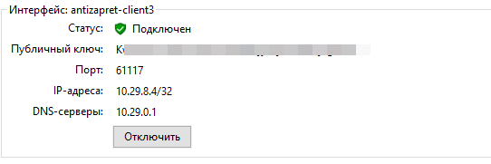

AntiZapret-VPN (НОВАЯ версия БЕЗ контейнера) + YouTube
В отличии от версии AntiZapret-VPN-Container, где запускается все в LXD контейнере, то запуск сервисов без LXD контейнера повышает максимальную скорость работы VPN раза в 2 и уменьшает потребление памяти
Следующим шагом в развитии будет попытка добавить в установку патченную версию OpenVpn, чтобы подключение не блокировалось ТСПУ
Ура! Спасибо за ваш труд
Спасибо за ваши старания. Строго ставить debian 10 или можно 12 версию тоже?
Строго Debian 10
В скрипте есть завязка на 10 версию Debian
Следующим шагом будет попытка поставить патченную версию OpenVpn чтобы подключение не блокировал ТСПУ, тогда возможно версии будут новее
Подскажите, пожалуйста, обновите гх с описанием тонкой настройки? Интересует конкретно проксирование своих сайтов и непроксирование ютуба (буквально вчера полностью заработал снова директом почему-то, даже аватарки есть)
Апд: отмена, увидел в сетап файле, единственное интересно, cloudfront и ftcdn в строке оставлять? Или полностью обе строки убирать?
Это является ошибкой?

нет, это не является ошибкой, теперь при ошибке выполнения скрипт остановит свою работу
для этого достаточно убрать лишние домены из include-hosts-custom.txt
файлы exclude, те исключения из исключений можно не трогать, это настройка исключения из include
В общем-то, просто убрать домены из инклуда и этого достаточно? Понял, спасибо
А как уже после первоначальной установки править инклуд, подскажите
PSA: Debian 10 не получает штатных секьюрити-обновлений с июня 2022 (Debian -- Debian “buster” Release Information), LTS поддержка закончилась в этом июне (LTS - Debian Wiki), а для того чтоб получать выборочные патчи через Frexian (LTS/Extended - Debian Wiki), его нужно явно прикрутить (https://www.freexian.com/lts/extended).
В общем, ничего личного, однако выпускать относящийся прайваси-инструмент, который работает только на устаревшей и зачастую уже небезопасной версии ОС - это не очень хорошая практика.
Все должны быть предупреждены. Было бы хорошим тоном сообщать об этих деталях сразу в README и первом сообщении здесь.
nano /root/antizapret/config/include-hosts-custom.txt
либо скачивать файлик по SFTP, править локально и загружать обратно
Нужно ли для Keenetic прописывать как и в прошлой версии?
pull-filter ignore block-outside-dns
route 192.168.1.1
На некоторых VPS нет Debian 10. Будет великолепно, если кто-нибудь займётся поддержкой актуальной версии, или даже напишет не авто-скрипт, а гайд с командами, как настроить себе с ванили PBR.
Нужно
А, просто нано. Понял, спасибо, сегодня поставлю
Спасибо за информацию. Оригинальный контейнер из которого вытащено содержимое был выложен автором антизапрета (ValdikSS) в (уже далеком) 2020 году и был настроен на использование только Debian 10: Bitbucket
В планах есть идея обновить и поставить патченный OpenVpn, соответственно обновится и версия linux, но мне нужно время чтобы разобраться, я linux знаю не очень хорошо и многое делаю впервые))
Docker-контейнер тем и был хорош, что мог работать на всём что горит, каким бы ни было окружение хостовой ОС. Это гораздо безопаснее, форварднуть наружу один порт из контейнера, чем выставлять в сеть машину целиком на устаревшей версии дистрибутива.
Проблемы безопасности решает сам администратор машины.
Docker-контейнер тоже есть, его делает другой автор Неофициальный docker-контейнер АнтиЗапрета
Как я понимаю, докер тоже отъедает некоторые ресурсы, а задача выжать максимальную производительность из самой дешевой и простой VDS
Спасибо за проделываемую работу. Как новичок очень ценю простые «общедоступные» инструкции. По вашей пока все удавалось проделать без проблем.
Проблемы безопасности решает сам администратор машины.
Если бы этот скрипт был ориентирован на полноценных администраторов, а не на юзеров, которые хватаются сейчас за любую соломинку не подумав - не было бы разговора.
задача выжать максимальную производительность из самой дешевой и простой VDS
Если задача сформулирована как “выжать максимум из самой простой VPS” - то явно выбирать надо не OpenVPN и не комбайны его использующие. Если задача в удобстве и одноклике - существующие варианты с Docker тоже вполне себе дружелюбны к чайнику.
Здесь же готовое решение аппелирует к удобству, при этом завязываясь на заведомо устаревшую версию дистрибутива - о том что Debian 10 EOL’нулся знают далеко не все, кто сунется ставить этот скрипт.
В любом случае, на VPS за 10 баксов в месяц LXD практически не будет заметен в контексте оверхеда, а скорость передачи данных всё равно упрётся в OpenVPN и полосу, которую 99% бюджетных хостеров всё равно оверселлят.
Хватит душить, автор же написал, что будет на Debian 12 проверять.
Если вопросы безопасности для вас - душнота, то мне больше нечего вам сказать. Пожалуйста, в дальнейшем игнорируйте на этом форуме меня, а я с удовольствием пройду мимо вас.
@Tyman - увидел от вас правку в README репозитория, большое спасибо. Мои претензии исчерпаны.
Камрады, кто хорошо разбирается в linux, попробуйте разобраться:
- почему не работает, хоть и ставится, и подключается и заблокированные сайты резолвится верно на Debian 11
- не ставится в Debian 12
Сейчас буду проверять работоспособность на дистрибутивах Ubuntu
Подскажите пожалуйста
Создал антизапрет впн на основе этого скрипта, пытаюсь засунуть в микротик ovpn файл. Коннект есть, однако обход не проходит
Не прям сильно шарю в микротике, но пытался скрестить вариант со скриптом вместе с инструкцией по настройке не селф-хостед антизапрета на микротике:
- Сделал маскарад в NAT: Src. address локальная сеть, Out interface собственно openvpn подключение
Стоит вторым после основного маскарада - Открыл порты 53,5353,1253 по tcp и udp
- В PPPoE подключении интернета указал Use Peer DNS, а в DNS удалил все старые днски (галочка Allow Remote Requests стоит).
- DHCP Server: в network в днс указал единицы и восьмерки
Пункт 3 и 4 на случай если впн отвалится, а интернет еще жив.
Подозревал, что впску спалили, потому что немецкий хост по geoip оказался российским, однако через OpenVPN GUI в Windows обход работал почти успешно (кроме ютуба – скорость на нем была замедлена)
(RouterOS 7.15.3)
У докера нет никакого измеримого оверхеда в плане сети, CPU или памяти.
Вот выжимка из исследования IBM 10-летней давности:
Docker is nearly identical to native performance and faster than KVM in every category.
По сути докер это просто удобный способ для запуска процессов в другой cgoup.
Там есть некоторые особенности при работе с файловой системой контейнера (слои). Но в нашем случае нет никакой значимой нагрузки на диск, так что нерелевантно.
Докер вырос в гугле. У них все процессы, очереди и кроны завернуты в отдельные контейнеры (BORG/Kubernetis). При их нагрузках любой оверхед стоит миллионы или миллиарды долларов.
Наконец-то я понял зачем этот докер нужен, спасибо. Т.е. в случае, когда нет задачи ограничивать ресурсы, то докер не нужен?
Докер это не только ограничение ресурсов. На вскидку дает следующие плюшки:
- Удобный мезанизм распространения ПО. Все зависимости уже есть в контейнере, не надо ничего ставить - скачал и запустил.
- Возможность запуска новых ОС на старых хостовых ОС. Например у меня контейнер с 24 убунтой работает на хосте с 22 убунтой.
- Из п1 следуют быстрые и простые откаты, обновления и возможность запуска разных версий одновремено.
- Безопасность. Если что то произошло в одном контейнере, то оно никак не затронет хостовую систему или другие контейнеры.
Можно хранить и запускать весь софт в перемешку, но удобнее когда мухи от котлет отделены 
Понятно, заканчиваю офтопик. Мне ничего из перечисленного никогда не требовалось, поэтому потребности в докере не испытывал. Собирал всегда проекты со статической компиляцией в монолитный бинарь и его только обновлял на машине с единственной ответственностью.
Спасибо, в статье есть указание что использование NAT снижает скорость, но как я понимаю, ты его не используешь для работы антизапрета в докере?
Ура, в Ubuntu 20.04 работает, использовать Debian 10 не обязательно…
UPD
Не работает в Ubuntu 20.04, версия gawk 5 - не верно обрабатывает awk файлы
Используется. Но кроме прочего, NAT - это основа работы антизапрета  Это редиректы пакетов через iptables. Так что и без докера они останутся.
Это редиректы пакетов через iptables. Так что и без докера они останутся.
Если присмотритесь к графику, то задержки там измеряются долями миллисекунды. Если вы используете антизапрет для высокочастотного трейдинга, то, конечно, такие задержки ощутимы 
Дебиан и убунта это родственные системы. Все одинаковое.
У меня вот так заканчивается и конфигов в /root/easy-rsa-ipsec/CLIENT_KEY нет, папка пустая. Пробовал и на Ubuntu 20.04, и на Debian 10

Попробуйте скачать архив заново, в течении дня я правил, мог что то поломать, но текущая версия из гитхаба работает, только что проверил
@Tyman Огромная вам благодарность за проделываемую работу!
при настройке без контейнера, если у вас будет возможность, попробуйте сделать маршрутизацию не только через интерфейс vpn, но и чтоб в самой системе эта же схема с подменой ip работала. Или например чтобы можно было выбирать на какой интерфейс будет маршрутизация с “хитрого” резолвера.
если получиться, это снимет вопросы по транспортному каналу и сильно развяжет руки для будущих улучшений.
добавив в систему тот же xray и заворачивая с него трафик к примеру в tun0 через tun2socks было бы гораздо интереснее в плане обхода блокировок и с заделом на будущее.
а если будет на уровне системы эта схема с подменой ip работать, тогда дальнейшая настройка вообще кратно облегчится.

К сожалению не удалось установить данный контейнер, такая же ошибка. Ubuntu 20.04 чистая, вторая попытка была через полный сброс сервера, выполнения команды apt update && apt upgrade , результат идентичный
Также не получилось.Ubuntu 20.04 чистая.
Папка /root/easy-rsa-ipsec/CLIENT_KEY на сервере не появилась
На предыдущей версии не удалось поднять vpn на Keenetic.
На телефоне работало с переменным успехом, а при добавление на роутер как-будто ничего не менялось, заблокированные сайты оставались заблокированными, YT ролики не стартовали.
В настройках прописывал:
pull-filter ignore block-outside-dns
route адрес ДНС
Народ кто сталкивался, Debian 10
Created symlink /etc/systemd/system/multi-user.target.wants/openvpn-server@antizapret-tcp.service → /lib/systemd/system/openvpn-server@.service.
root@debian10x64:~#
После этого сервер падает…
ЧТо интересно падает связь с сервером по ssh. По VNC сервер работает
все нормально, в конце скрипта перезагрузка чтобы загрузились перезаписанные настройки
Самый главный прикол, что перезагрузка есть а связи с сервером нима 
Захожу ток по VNC смотрю че там как…
Судя по всему есть плавающая проблема в Ubuntu 20.04, и еще вижу что есть ошибка при выполнении doall.sh при разборе awk файла
Буду разбираться
В итоге заработало на старой версии плюс по настройке OpenVPN использовал решения из этой темы:
настройка openVPN
В итоге работает пока и на компе и на телефоне через wifi.
Это по моему вопросу? Я не на убунту ставил а на debian 10. И чет пока понять не могу че за фокусы конечно) Судя по тому что я вижу не поднимается инет на сервере, хотя в интерфейсе статика вбита…
Очень интересный факт… Попробую еще раз переустановить, и записать конфиг интерфейсов мож он там че редачит…
Интересная ситуация, был интерфейс у меня ens3 после установки стал eth0, и на eth0 тупо не пришел интернет, интересная ситуация. Буду разбираться пока что…
Глубокоуважаемый @Tyman , спасибо! Подскажи плиз, есть ли тут изменения в *tcp.ovpn касаемо скорости. В предыдущем скрипте на *udp.ovpn ютуб был в 4к/8k бесплатно и без смс, то на *tcp.ovpn было как-то грустно.
Подскажи плиз, есть ли тут изменения в *tcp.ovpn касаемо скорости. В предыдущем скрипте на *udp.ovpn ютуб был в 4к/8k бесплатно и без смс, то на *tcp.ovpn было как-то грустно.
По TCP провайдер может скорость резать, у нас на сети в компании есть такая практика.
Чет вообще я не понимаю юмора, почему после установки скрипта интерфейс интернета ens3 переименовался в eth0 по итогу сервер сидит без интернета… + после перезагрузки командой reboot openvpn вообще не запустился и загруженных интерфейсов вообще нет…
надеюсь что есть, тк общая скорость увеличилась, тоже с удивлением видел когда ютуб тормозил по TCP, тут TCP есть, оно настроено, для тех у кого нет возможности подключиться по UDP
P.S.
По моим постам выше мб кто столкнется.
Решения если у вашего хостинга есть VNC подключаемся и пишем:
cd /etc/systemd/network
ls
rm удаляем все что видим
Как я понимаю файлы там могут быть разные. Но если интерфейс например ens переименовать в eth ничего работать не будет… Ваш сервер тупо останется без инета.
Благо был еще 1 сервер на debian 11 изучая скрипт, есть подозрение что команда
systemctl enable systemd-networkd
Может выводить сервер из строя @Tyman
Возьми на заметку, а то так промучаются люди)
Вот видимо и у меня такая же проблема, подожду пока @Tyman выкатит фикс или на более свежую платформу получится перейти))А пока откатился на контейнер
В момент установки ближе окончанию теряешь связь с сервером?
Ищи такую кнопку у своего хостинга:
Она будет работать даже если у твоего впс нет интернета, надо понимать тот факт что твой впс находится уже на рабочем сервере с KVM. А значит им можно управлять)
Совет первым делом введти:
ifconfig
Если на интерфейсе интернета нет IP адреса, значит да проблема аналогично моей.
Да у меня на хостинге есть такая панель,но пока делать не буду, вообще не понятно, скрипт рабочий или нет, и вообще ключи генерируются?(на данный момент папка с ключами пустая), поскольку если повторно запущу скрипт, произойдет тоже самое. А так я рад, что хоть кто-то, что-то понимает  и содействует разработке, такие способы очень удобны))
и содействует разработке, такие способы очень удобны))
p.s. посмотри мое сообщение выше, я прислал скрин с окончанием работы
Ну т.к. я debian люблю больше убунты, я решил сразу поставить на debian 10. Хотя очень хотел 11 debian поставить) ну по всей видимости пока что не судьба) Подожду апдейтов мож получится на 11 сделать там по больше всего. А на убунте он писал что есть там сложности определенные.
Версия от 14.08.2024 поддерживает установку на Ubuntu 20.04, в инструкции указал только ее, а на Debian 10 не проверял, ну и раз она уже устарела то и не буду, кто хочет - проверяйте, а так же проверьте на Debian 11 и Ubuntu 22
Для Ubuntu 20 нужно было установить пакет gawk 4.2.1 (как в Debian 10) для правильной обработки .awk файла
А новая версия gawk > 5, что шла с Ubuntu 20.04 не правильно обрабатывала .awk файл
В описании скрипта, для случая обновления с Антизапрета-в-Контейнере, указано:
“В папке root/backup будут лежать файлы для переноса ключей и настроек подключения, содержимое нужно сохранить на локальном компьютере и перенести на новый сервер в папку setup до запуска установки.”
Вопрос: На новом сервере в папку “Setup” надо переносить целиком папку “backup”? Или в “Setup” надо поместить папки с файлами, которые создались в папке “backup” на старом сервере?

Не удалось запустить, ошибка аналогична прошлой, папка с ключами так же пустая, связь с сервером не обрывается
P.s. Ubuntu 20.04, чистая
Установил на тестовый сервер все отлично! Только при установке терминал отключился, после переподключения ключи бы в указанной папке.
Единственная проблема, которая у меня есть это реклама. То ли причина в локации (судя по рекламе, германия), то ли в самом сервере.
этот вариант
ну это решается покупкой премиума на ютубе
Я решил эту проблему, перед запуском скрипта выполни команду
sudo systemctl unmask systemd-networkd.service
@Tyman оказывается все работает, просто на будущее в скрипт нужно добавить команду и все заводится))) благодарю, буду приступать к тесту сборки))
Казалось бы да, но на другом сервере, который в Нидерландах и на котором стоит версия скрипта от 09.08.2024 нет рекламы.
Эту же версию скрипта ставил и на этот VPS (германия), появилась реклама.
Спасибо, изменил скрипт, добавив эту команду перед активацией сервиса, проверьте пожалуйста скачав архив с гитхаба, у меня пока нет возможности протестировать
systemctl unmask systemd-networkd.service
systemctl enable systemd-networkd
У меня вчера вечером начала появляться реклама что странно до этого её не было
Сервер также находится в Нидерландах, из за этого даже думал что я что-то сделал не так, перепробовал и другие скрипты и адгуарт днс включал так нечего не помогло
Если кто решил эту проблему скинте решение плиз
Благодарю, займусь ночью этим вопросом, не охота днем тушить пусть люди пользуются. Debian 10 устарела на нее много чего не поставишь ток костылями пользоваться, увидел еще в скрипте есть .sh шник для создания сертификата для клиента, это новости хорошие) А то на контейнере я чет промучался, и сертификат не создал)
Еще какой косяк заметил не выполняется раз в 3ч doall.sh
Если добавил домен то автоматически часика через 3 он не заработает. Есть смысл внести в планировщик задачу в crontab
как проверяли?
doall.sh должен раз в 6 часов выполняться
Добавил домен intel.com решил оставить на ночь, утром проснулся проверил на компе, ну думаю мб куки мозги делают, запустил ноут аналогично ошибка что продажи в рф прекращены, на телефоне тоже самое. Запустил ручками doall.sh сразу полетело на всех устройствах.
Я еще тут дату изменения понаблюдаю, поменяется она или нет)
он и был, создает ключи при загрузке, если их еще нет
для создания дополнительных ключей можно поравить этот скрипт, но у меня пока нет задачи, я не смотрел что нужно изменить
Та я чуть по позже сделаю скрипт для создания и удаления сертификатов.
@vitalik6243 , @Tyman не подскажете, по какому пути находится конфиг, для изменения времени подгрузки сайтов из реестра?
Спасибо! Помогло.
Хотел еще добавить, для таких же чайников в Линуксе, как и я:
Так как Антизапрет установлен БЕЗ контейнера, то команды для обновления личного списка антизапрета будут выглядеть так:
# Антизапрет БЕЗ контейнера
# Изменить файл с личным списком антизапрета include-hosts-custom.txt
sudo nano /root/antizapret/config/include-hosts-custom.txt
# Потом выполните команды для обновления списка антизапрета и очистка кеша DNS
sudo /root/antizapret/doall.sh
sudo sh -c "echo 'cache.clear()' | socat - /run/knot-resolver/control/1"
Это можно добавить в инструкцию на Гитхабе.
/etc/systemd/system/timers.target.wants/antizapret-update.timer
Учитывая что на VPS скорее всего и так рут доступ, то можно всё делать без sudo
А последняя команда должна выглядеть вот так
echo 'cache.clear()' | socat - /run/knot-resolver/control/1
да, это я писал
по моему кеш днс чистить не обязательно, где то видел настройку чтобы через 2 минуты кеш протухал, но могу и ошибаться
/etc/knot-resolver/kresd.conf
cache.min_ttl(120)
ну да, 120 секунд, те 2 минуты, как я понимаю
Здравствуйте. А есть возможность создать пользователя с паролем и задать ему айпи адрес? Если нет, то подскажите в какую сторону копать. Спасибо
Параметр на сервере ifconfig-pool-persist позволяет это сделать.
автоматическое обновление работает, проверил
systemctl status antizapret-update.timer
а intel.com у меня не заработал через мой антизапрет, хотя адрес получает на 10
Работает. Я себе добавлял. Сначала перекидывает на плашку о запрете, но если клацнуть по логотипу интела, то работает норм.
точно! добавил интел на постоянную основу в исключения
а так, нашел целый список ресурсов к которым закрыт доступ из РФ: no-russia-hosts/hosts.txt at master · dartraiden/no-russia-hosts · GitHub
какие то я посмотрел, вполне нормально открываются, какие то как интел или страва - нет
если кто то сталкивается с тем что какой то ресурс заблокировал по ип, то пишите - буду добавлять
Кто себе уже поставил, отпишитесь по вашим наблюдениям стало быстрее по сравнению с версией через контейнер. На Ubuntu 20
Коллеги, раз пошла такая пьянка, может сразу обдумать неOpenVPN-вариант?
Я так понимаю, что если у нас кнот, сам “антизапрет” уже работает без контейнера, то осталось выбрать и поставить впн-сервер.
У OpenVPN’а есть push-route, кто еще умеет так же делать?
Цель: сделать чтоб на старых кинетиках это нормально работало, а не как сейчас 10 мегабит/сек.
Умеет еще делать это iPsec, но на моем роутере ASUS TUF GAMING AX4200 его почему то нету
Скорее всего он есть в очень дорогих моделях
Вообщем понаблюдал, да все обновилось, мож сбой какой то был либо ластовый домен не считывает.
Сегодня отбекаплю опять данные, попробую на debian 11 воткнуть, как мне показала практика debian по меньше ресурсов хавает особенно оперативки.
подождите немного, сегодня обновление выкачу - попробуете его поставить
О тогда не спешу. Бекапы hosts и сертификатов сделал, теперь можно ожидать)
На 10 Debian ситуация по потреблению вот такая:
Спойлер

На 11 ожидаю чуть хуже но в пределах такого же.
Чтобы помимо антизапрета можно было воткнуть какие то свои прикалюхи.
Т.к. с контейнером у меня жрало под 600-700мб на убунте.
Если есть возможность добавь скрипт для создания и удаления сертификатов,
function manageMenu() {
echo "Welcome to WireGuard-install!"
echo "The git repository is available at: https://github.com/angristan/wireguard-install"
echo ""
echo "It looks like WireGuard is already installed."
echo ""
echo "What do you want to do?"
echo " 1) Add a new user"
echo " 2) List all users"
echo " 3) Revoke existing user"
echo " 4) Uninstall WireGuard"
echo " 5) Exit"
until [[ ${MENU_OPTION} =~ ^[1-5]$ ]]; do
read -rp "Select an option [1-5]: " MENU_OPTION
done
case "${MENU_OPTION}" in
1)
newClient
;;
2)
listClients
;;
3)
revokeClient
;;
4)
uninstallWg
;;
5)
exit 0
;;
esac
}
Можно вообще чет похожее намудрить, люди спрашивают. В целом даже если 2 скрипта add dell будет и то удобнее будет.
Спасибо огромное за то что ты есть и за твои труды.
немного обновил скрипт, благодаря камраду xtrime поправил parse.sh для правильной работы с новыми версиями gawk
Ща видосик на ютубе досмотрю и минут через 20 отпишусь по результату на debian 11.
В крайнем случае вернусь к убунте.
Такс есть беда на debian 11, OpenVPN поднялся, но нет маршрутизации почему то.
При выполнении doall.sh
iptables: No chain/target/match by that name.
Получаю вот такую темку под конец. Есть подозрения куда копать?
Чуть еще покопал, iptables не выполняется. Чет походу на debian есть костыли свои)
root@debian11:~/antizapret# iptables -w -A 103.246.200.0/22
iptables: No chain/target/match by that name.
На большое множество iptables предлагает использовать iptables-legacy
Чет чувствую не сварю я тут каши т.к. постров в целом правила iptables нет ничего с антизапретом…
Вообщем ушел я на ubuntu 20.04
Все вроде норм, пусть лучше будет так. Недомучал я debian 11…
Коротко о том что получилось:
- Связь клиент - сервер есть.
- Трансляции трафика нет.
- Правила iptables в том виде в котором сейчас не принимаются.
- Тут немного индивидуально под каждую из платформ…
Насчет скорости не знаю, на контейнере работало также быстро, но потребление ресурсов на VPS стало заметно меньше!
По скорости тоже есть прелести, проверил с компа с intel i9 по udp и tcp 8к 12 фпс легко и быстро, под 160-170 скорость поднималась. раньше в районе 80 была.
Добрый. Ругается на сигнатуру
GPG error: /repositories/home:/CZ-NIC:/knot-resolver-latest/xUbuntu_22.04 - openSUSE Download InRelease: The following signatures were invalid: EXPKEYSIG 74062DB36A1F4009 home:CZ-NIC OBS Project home:CZ-NIC@build.opensuse.org
E: The repository ‘/repositories/home:/CZ-NIC:/knot-resolver-latest/xUbuntu_22.04 - openSUSE Download InRelease’ is not signed.
Контейнер работает не только в LXD (который и правда может быть большим по памяти), но и в systemd-machined, а он потребляет килобайты.
А какие характеристики VDS?
@Tyman И еще заметил, часто разрывается соединение OpenVPN, с периодичностью 4-5 мин и через секунду сразу же восстанавливается и на роутере и на телефоне.
В логах инфа
Service: “OpenVPN”: unexpectedly stopped.
Есть какие-то предположения или как можно это победить?
Конфиг стоковый
Изменил скрипт, добавил (наверное временно) игнорирование ключей репозитория
Так же обновил easyrsa и файлы ovpn теперь сохраняются в /etc/openvpn/client
могу предположить что ваш провайдер блокирует OpenVpn, сравните с общедоступным антизапретом, его блокировать не должны
супер! Спасибо
Общедоступный работает и скрипт тоже работает, только с непонятной периодичностью просто пере подключается соединение, вот на роутере уже 51 мин без разрыва работает
p.s. чтобы еще не разводить оффтоп, Какими командами можно сделать бекап текущего антизапрета, к примеру для обновления или просто поверх ставить ?
Это версия для контейнера, сейчас его нет
Список файлов остаётся по факту тот же
/etc/openvpn/server/keys
/root/easy-rsa-ipsec/easyrsa3/pki
/root/easy-rsa-ipsec/CLIENT_KEY
Так надо архив с гитхаба заново скачать
В нем же установочные файлы
Надо потом сделать получение его при установке через curl но пока не дошли руки, пытаюсь понять почему на более новых версиях не работает
А, ну и ставить на чистую систему
Сейчас поставил на чистый сервер скрипт, все успешно завершилось, но ключи по пути /root/easy-rsa-ipsec/CLIENT_KEY отсутствую, даже папки нет CLIENT_KEY
p.s. Ubuntu 20.04
файлы ovpn теперь сохраняются в папку /etc/openvpn/client
Там теперь вызвать надо не iptables а iptables-legacy
Тк iptables теперь не iptables а nftables со своим синтаксисом
та я пробовал менять команду в process.sh но результата не дало, я вчера устал и мне лень уже было ковырять всю эту тему, надо setup.sh ковырять, и после установки в других sh смотреть где еще исполняется iptables, я уперся в то что у меня нет правил nat. Прописывал вручную не помогло, трафик никак не ходит и тормозится, на сервере. Да и в целом подумав вчера о поддержке скрипта, что врядли будешь делать версии отдельно для 11 дебки, а больше склонился к убунте решил сразу поставить убунту чтобы потом не заниматься каждый раз настройкой этих скриптов если например захочу обновиться. Но сразу скажу разница по потреблению на убунте 20.04 и дебиан 11 значительная, 100-150 мб разницы. Но после ухода от контенйнера на убунте 20.04 на 1 гиге оперативы вполне можно существовать, да и в крайнем случае можно файл подкачки больше сделать, как правило современные сервера на быстрых Intel серверных ссд с nvme. А скорости там дай боже…
Доброго. Это ошибка?
GPG error: http://download.opensuse.org/repositories/home:/CZ-NIC:/knot-resol ver-latest/xUbuntu_20.04 InRelease: The following signatures were invalid: EXPK EYSIG 74062DB36A1F4009 home:CZ-NIC OBS Project home:CZ-NIC@build.opensuse.org
E: The repository ‘http://download.opensuse.org/repositories/home:/CZ-NIC:/knot- resolver-latest/xUbuntu_20.04 InRelease’ is not signed.
N: Updating from such a repository can’t be done securely, and is therefore disa bled by default.
N: See apt-secure(8) manpage for repository creation and user configuration deta ils.
Папка /root/easy-rsa-ipsec/CLIENT_KEY
не создалась
Новая ошибка
rm: cannot remove ‘/var/lib/apt/lists/auxfiles’: Is a directory
rm: cannot remove ‘/var/lib/apt/lists/partial’: Is a directory
rm: cannot remove ‘/tmp/snap-private-tmp’: Is a directory
rm: cannot remove ‘/tmp/systemd-private-f16fb44e01164c17a13dc5c664460a3e-ModemManager.service-Wt7fih’: Is a directory
rm: cannot remove ‘/tmp/systemd-private-f16fb44e01164c17a13dc5c664460a3e-systemd-logind.service-6QZWMh’: Is a directory
rm: cannot remove ‘/tmp/systemd-private-f16fb44e01164c17a13dc5c664460a3e-systemd-resolved.service-96qyZg’: Is a directory
rm: cannot remove ‘/tmp/systemd-private-f16fb44e01164c17a13dc5c664460a3e-systemd-timesyncd.service-EG9L2i’: Is a directory
umount: /etc/resolv.conf: not mounted.
mv: cannot stat ‘/root/antizapret-process.sh’: No such file or directory
папка /etc/openvpn/client
пустая
попробуй перед установкой скрипта вручную прописать команды:
apt update
apt upgrade
Мож пакетов каких базовых нет либо они не обновлены.
И команда setup.sh работает 1 раз, дальше нужно переустанавливать ос либо удалять скрипты автозагрузку и тд и тп по отдельности ручками.
Вот в этом и была фича контейнера )
Не помогает.
Ошибка осталась

аналогичная ситуация.
чистая 20.04
Ну есть варнинг на knot-resolv, но установка продолжилась
В скрипте заметил что есть строгая привязка к пути /root/setup/setup.sh
Точно соблюдал путь, не переименовывал папку например?
тоже самое. Ничего не переименовывал. Просто перенес папку as is
@Tyman слушай, учитывая тот факт что вся эта тема не в контейнере по идее скрипт же должен работать на OpenVZ? Или аналогично только KVM? Не на чем проверить просто.
Перед установкой всегда качайте новую версию архива!!!
https://github.com/GubernievS/AntiZapret-VPN/archive/refs/heads/main.zip
Была такая же ошибка как сверху, переустановил систему, вылезла другая ошибка
Error: Head "https://antizapret.prostovpn.org/container-images/az-vpn": Unable t o connect to: antizapret.prostovpn.org:443 ([dial tcp 195.123.208.131:443: i/o t imeout])
вы ставите версию с контейнером, она обсуждается тут Скрипт для автоматического развертывания AntiZapret VPN Container + YouTube
у вас нет доступа к antizapret.prostovpn.org
возможно вы ставите на серевере в РФ, и это бессмысленно
не совсем.
может он попал на Неполадки АнтиЗапрета - #22 by ValdikSS
Так, вот сейчас перекачайте, там сейчас 100% рабочая версия
Таже ошибка, как поправить? Чего не хватает?
вы скачали новый архив с https://github.com/GubernievS/AntiZapret-VPN/archive/refs/heads/main.zip
распаковали его в новое место, а не поверх старого, загрузли папку сетап на заново переустановленую убунту и получили ту же ошибку?
вот сейчас переставил - все ок
Да, каждый раз переставляю ubuntu, скачиваю новый архив. И вот на 6 раз все получилось!
Спасибо!!!
Что там нового 28 минут назад добавилось?) Я вот думаю в дальнейшем ручками обновы ставить) чтобы не переустанавливать ос каждый раз)
Всё установилось, но почему то днс не работает, только по айпи открывает.
Подожди чуть чуть не спеши, пока doall.sh отработает пока днс в работу войдет, там не мгновенно начинает работать + браузер в некоторых случаях нужно ребутнуть.
Еще вопрос. С этим вместе будет работать?
нового сложно сказать, что то правлю, пока считайте это публичный тест))
из того что изменилось по сравнению с версией из контейнера - изменил кое какие пакеты, поправил parse.sh для работы с gawk версии 5 и выше что идет в убунте 20, обновил Easy-RSA, изменил папки куда генерятся ovpn файлы, у одного репозитория протух ключ - добавил игнорирование, полностью очищаю exclude-hosts-dist.txt
Принял в целом у меня пока работает стабильно не буду трогать. На днях поковыряю скрипт на генерацию и удаление сертификатов для клиента протестирую, закину в тему.
хороший вопрос, я сегодня проверю скрипт от angristan-а для установки WireGuard совместно с антизапретом, но точно скажу что WireGuard если и будет работать, то как обычный впн, не так как антизапрет, для его добавления нужно разбираться, признаюсь, я не большой спец по linux, если кто то разберется как повторить для WireGuard работу OpenVpn то я конечно добавлю это в свой скрипт, как минимум WireGuard гораздо меньше ест батарею телефона
Можно не тестировать и отдельно wireguard работает. У меня Xray-Ui стоит с wireguard и прочей фигней полет нормальный, до этого когда антизапрет был в контейнере делал антизапрет + wireguard тоже работало.
wireguard-install.sh (17,0 КБ)
Юзал вот этот скрипт, удобно с графическим интерфейсом QR кодами, мне зашло. Хотя себе на сервер поставил web-ui. Но слабый сервер UIшками не рекомендую грузить.
Единственное что не получилось подружить это маршрутизацию трафика с антизапретом. Конфиги статичны… Но в целом не критично.
У WireGuard каждому клиенту нужно настраивать разрешенные подсети.
Выглядит вот так, и вбить все заболоченные подсети это на уровне фантастики… + обновляй нужно каждый раз вручную у клиента… OpenVPN route подкидывает удаленно как правило.
все заработало, спасибо!
возьмите у меня обновленный generate.sh, я его правда тоже подсмотрел у камрада xtrime в его докере
какие команды нужны чтобы добавить пользователя, а удалить - достаточно просто удалить ключи из папки
ключи я перенес в папку openvpn
Взял файл, завтра думаю поковыряю.
Ура!
Теперь поддерживается Ubuntu 20.04/Ubuntu 22.04/Debian 11
В
Ubuntu 24 - не нашлось версии knot-resolver
Debian 10 - не проверял
Debian 12 - почему то не загрузилась
Спасибо! Всего тебе Best Of The Best!
Относительно предыдущего скрипта в *udp.ovpn изменений не заметил, всё также быстро. А вот в *tcp.ovpn скорость выросла в разы.
Посидел я щас подумал походу опять придется переустанавливать систему на Debian 11 
На Debian можно воткнуть вот такую панельку, и блюдить за всеми 
А подскажите для еще больших чайников, что делать
вчера развернул, но например сайт strava.com не открывается.
В списке include-hosts-custom.txt он уже был.
Ставил на ubuntu20 там команды socat нету и просто так не устанавливается…
Для начала скачать архив с новой версией, поставить - она 100% рабочая, сокат использовать не нужно, кеш чистится сам
А на убунту не встанет? Отпишись о результате, особого смысла в ней не вижу, но все равно интересно.
Ну скрипт на создание сертификата клиента я сделал, работает, но удаляю сертификаты ручками с сервера, но коннект все равно проходит… Тут подумать надо.
По поводу UI пишут что debian, надо попробовать и убунту мож и на убунте работать будет но что заметил там либо udp конфиг он будет понимать либо tcp конфиг, а у нас в антизапрете 2 конфига, и 2 отдельных сервиса запускается.
Чтобы клиент не мог подключится необходимо отозвать сертификат.
Можно два инстанса админки запустить.
Пробовал, файлы сертификатов остаются подключение продолжает работать.
Ну эт ладно пол беды погуглю еще исправлю
Можно тоже смотрел можно по разным папкам раскидать и запустить и упростить себе жизнь в целом с управлением OpenVPN. Надо пробовать так сказать)
Команда работает только в таком виде: ./easyrsa revoke test-client
Файлов нима зато клиенту пофиг коннект ip все как положено на месте)
Они должны оставаться, сервер пускает всех клиентов кроме указанных в crl.pem. Проверяйте, что crl.pem заполняется, crl-verify на сервере указан, и в логах crl.pem считывается без ошибок. Чтобы текущая сессия завершилась, надо её прибивать через management. Пользуйтесь админкой для упрощения.
Переустановил на ubuntu22, развернул с новым архивом (который обновлен 10 часов назад), на strava.com по прежнему заглушка от cloudfront, на Intel.com говорят что я из РФ… оба сайта по прежнему есть в include-hosts-custom.txt
Нужно еще что сделать?
по логотипу интела тыкните и всё будет норм
открывается и логинится
А вы кроме автоматической установки еще что то делали?
Мне пока для стравы и intel ничего не помогает, куда тока не тыкал, с каких тока брайзеров и компов не тестил))
Даже в какой то момент засомневался, что может у меня айпи из РФ на амстердамском сервере. Но нет пробовал поставить ovpn от angristan через него открывается как надо…
А другие ресурсы заблокированные открываются? nslookup strava.com или nslookup intel.com что возвращает?
Ага, я тоже добавил скрипт в гитхаб
Для добавления нового пользователя выполните команду и введите имя
/root/add-client.sh
При включенном впн strava 10.224.0.71-74
При выключенном 52.85.49.115…
Другие да норм, ютуб летает - 4к без задержек, instagram.com bbc.com и многие другие заблокированные отрываются.
страва збанила ип вашего сервера или считает его из РФ
думал над этой версией, поэтому буквально 3 часа назад ставил на этот сервер ovpn от angristan, там страва и интел открывались…
Зря время потратил ну ладно) С вебинтерфейсом ничего не вышло не на 11 debian не на Ubuntu. Поэтому отбой 
Добавь еще 1 скрипт dell-client.sh
Команду для отзыва сертификата нашел
Единственное что заметил отзыв работает чуть с запозданием. но работает.
./easyrsa revoke $CLIENTNAME
А ну и добавь rm ovn файлов. щас глянул твой скрипт увидел что ты сразу генеришь ovn
“Its always dns”(c)
В DHCP-пуле вбил в DNS адрес роутера и всё поперло
Теперь как и многие ловлю рекламу на ютубе (Чехия)
На компе расширения, а вот на телеке – нет
никто не подскажет как при установке поменять порт на 1194?
не понял
Изменить конфигурацию OpenVpn сервера с UDP
nano /etc/openvpn/server/antizapret.conf
Потом перезапустить OpenVpn сервер
service openvpn restart
поменял и на серверном конфиги тсп и в клиентском
после перезапустил сервис, но что то вообще не соединяется…
так если tcp, то конфиг другой же ж будет /etc/openvpn/server/antizapret-tcp.conf , вроде
ну да я его и поменял, не совсем дурак))
так не просто так же ж меняли стандартный порт, может ваш пров блочит
не не блочит, в чем то другом есть хитрость еще где то что-то нужно поправить
UP заработало после полной перезагрузки машины
после внесенных изменений к конфиг тсп перезагрузка командой не помогла
service openvpn-tcp restart
service openvpn restart а эта я так понимаю по udp перезагружает
после установки папки dnsmap easyrsa3 можно удалять? или они используются для работы?
так же интересен процесс удаления. Удалить нужно просто папку в рут антизапрет и папку опен впн в etc ?
И еще интересно, чтобы сохранить ключи OpenVPN, достаточно просто папку скачать OpenVPN в etc ? А после новой установки закинуть ее обратно и рестануть сервер, так все заработает?))
Шикарно реализовал тему с статическим IP для каждого клиента, правда ручками нужно делать но главное работает! Правда пришлось чуть повозиться для tcp и udp и подправить скрипт, теперь я вообще доволен) ток забыл сертификаты забрать с убунты пришлось по новой делать ну эт ниче)))
Да действительно походу дело в этом, поставил снова angristan и там тоже intel.com говорит, что адрес из РФ, хотя все whois показывают Голландию. Если что хостинг aeza. Утром, когда тоже была сборка на этом сервере от angristan видимо страву из кэша открыл, поэтому думал что проблема в сборке… Извините если кого запутал…
Доброго.
Подскажите что изменить чтоб перенести с оригинального антизапрета
sudo lxc file pull -r -p antizapret-vpn/etc/openvpn/server/keys backup/etc/openvpn/server
sudo lxc file pull -r -p antizapret-vpn/root/easy-rsa-ipsec/easyrsa3/pki backup/root/easy-rsa-ipsec/easyrsa3
sudo lxc file pull -r -p antizapret-vpn/root/easy-rsa-ipsec/CLIENT_KEY backup/root/easy-rsa-ipsec
Не получается перенести
уже метод не работает, изменились пути, проще пересоздать
Будет вариант с простым обновлением без полной переустановки?
Та они и так есть, подкидывай просто измененные файлы к скрипту, ребут сервера и все работает, я лично так делал.
Пока не планировал
А подкидывать какие то файлы крайне не рекомендую, иногда их скрипт при установки дополнительно обрабатывает
Щас допишу скрипт сюда закину для удаления сертификатов и файлов пользователя.
Я еще не тестировал не кого было удалять, поправь если есть ошибки, просто под себя буду удалять еще Статик IP и прочее, т.к. я чутка под себя скрипт переделал.
dell-client.sh (1,1 КБ)
if [[ ! -f /etc/openvpn/client/keys/$CLIENT.crt ]] || \
[[ ! -f /etc/openvpn/client/keys/$CLIENT.key ]]
then
EASYRSA_BATCH=1 ./easyrsa build-client-full "$CLIENT" nopass nodatetime
cp ./pki/issued/$CLIENT.crt /etc/openvpn/client/keys/$CLIENT.crt
cp ./pki/private/$CLIENT.key /etc/openvpn/client/keys/$CLIENT.key
else
echo "The specified client was already found, please choose another name"
fi
Удали этот код забыл, а загрузить заного не получилось…
Стоял WG. Сверху накатил Ваш Антизапрет. WG поломался. Переустановил по ссылке выше работает и WG и Антизапрет
пожалуйста, не выкладывайте скрипты которые не тестировалась, кто то скачает и ченить поломает
ну с удалением учетки не поломает. Но учту в будущем.
то что в скрипте все равно не работает, удаление файлов ключей - не запретит доступ
ну я добавил отзыв сертификата, по идее должно работать.
А походу разобрался dh2048.pem нужно обновлять этот файл походу дела после удаления сертификата…
./easyrsa gen-crl
как вариант и cpшкой перекинуть файл, попробую проверю закину если что.
./easyrsa revoke $CLIENT
if [ $? -ne 0 ]; then
echo "Failed to revoke certificate for client $CLIENT"
exit 1
fi
./easyrsa delete $CLIENT
if [ $? -ne 0 ]; then
echo "Failed to delete certificate for client $CLIENT"
exit 1
fi
./easyrsa gen-crl
cp pki/crl.pem /etc/openvpn/server/keys/dh2048.pem
if [ $? -ne 0 ]; then
echo "Failed to update CRL"
exit 1
fi
rm /etc/openvpn/client/$CLIENT-udp.ovpn
rm /etc/openvpn/client/$CLIENT-tcp.ovpn
Таким образом как думаешь будет работать полный отзыв сертификата?
Tyman комрад, спасибо. Поставил на Ubuntu добавил пользователей, полет нормальный. По сравнению с контейнером на мой взгляд стало быстрей да и для меня удобней, не люблю командами в терминале работать
Приветствую, сделал все по инструкции, все работало, ютуб в 4к можно было смотреть, но вот сегодня начались проблемы с ним, видео перестали вообще загружаться если загружаются, то скорость не превышает около 3000 kbps в статистике, соответственно в 1080p60fps смотреть невозможно. Пока писал это - главная страница ютуба практически не загружается, заблокированные сайты открываются, но тоже с задержкой (пример этот форум не может загрузится, а рутрекер загружает в полностью). Подключение использую по udp, по tcp намного хуже все. Я просто не знаю на что грешить, на хостинг, где арендован сервер, или попытки РКН блочить openvpn
видимо по умолчанию надо создавать пару пользователей, типа public и private - соответственно public раздавать а private себе
попробуйте поставить просто openvpn например этим скриптом https://github.com/angristan/openvpn-install и сравните скорость и качество работы
Я слабо разбираюсь в теме установки чего-либо на свой сервер, а уж тем более что-то там сравнить. Просто те файлы, которые создались после скрипта я перетащил на комп и открывал с помощью OpenVPN GUI на винде и все быстро работало до сегодняшнего дня
Спасибо за вашу работу.
Вопрос. Очень нестабильно с антизапретом работает твиттер.
Пробовал разворачивать на разных VPS в разных локациях не помогло.
Постоянно вылазит ошибка:
Access to script at ‘https://abs.twimg.com/responsive-web/client-web/main.db13350a.js’ from origin ‘https://x.com’ has been blocked by CORS policy: No ‘Access-Control-Allow-Origin’ header is present on the requested resource.
Или пишет на главной x.com Some privacy related extensions may cause issues on x.com. Please disable them and try again.
Расширений никаких нет, проходит время опять работает и потом тоже самое
В чём может быть проблема? Проявляется именно тогда когда включен антизапрет
Кстати тоже заметил такую тенденцию, то работает антизапрет, потом какой-то период не грузится ничего, потом опять начинает, при этом параллельно есть прошлая сборка и там прям сразу мгновенно все грузится. пока не выяснил в чем проблема
@Tyman добавил в конфиг параметр keepalive 10 120 реконнекты стали намного реже, пока что играюсь с цифрами, так же возможно стоит добавить в конфиг параметр tun-mtu 1420, для исключения фрагментации пакетов клиенту, что уменьшит нагрузку на сервер
по моему это по умолчанию значения, по крайней мере пинг идет через 10 секунд
мне кажется это сомнительно, а вот что то поломать влезая в настройки пакетов вполне можно
А если использовать обычный впн, проблема остается?
кстати заметил такую фигню, что в некоторых странах на серверах реально работает твитер проблемно, в нидерландах проблем нет по личному опыту.
Ну с MTU да, спорное, а вот эфир активности, прям эффект на лицо, и еще один момент (на IOS) вот листаешь инстаграмм, пока идет подгрузка запрещенных сайтов нет никакого переподключения, затем захожу в тиктик (к примеру) или просто выйти на рабочий стол,так через 1-2 мин начинается циклические перезагрузки конфигурации
Не знаешь в чем может быть проблема, стоит коннект на линукс Debian 11
Там постоянно отваливается OpenVPN, в логах сервера вот такая вот тема:
CLIENT_LIST,UNDEF,был мой ip:49765,192.168.100.30,,3408,4929,2024-08-17 22:15:47,1723922147,UNDEF,25795,33,AES-128-GCM
CLIENT_LIST,UNDEF,был мой ip:49765,192.168.100.30,,3408,4929,2024-08-17 22:15:47,1723922147,UNDEF,25795,33,AES-128-GCM
CLIENT_LIST,UNDEF,был мой ip:55700,192.168.100.26,,3408,5209,2024-08-17 22:11:37,1723921897,UNDEF,25787,26,AES-128-GCM
CLIENT_LIST,UNDEF,был мой ip:40507,192.168.100.16,,3480,6398,2024-08-17 21:46:29,1723920389,UNDEF,25737,1,AES-128-GCM
CLIENT_LIST,UNDEF,был мой ip:58370,192.168.100.18,,3480,6385,2024-08-17 21:50:39,1723920639,UNDEF,25745,13,AES-128-GCM
CLIENT_LIST,UNDEF,был мой ip:35640,192.168.100.31,,3408,4509,2024-08-17 22:19:57,1723922397,UNDEF,25803,43,AES-128-GCM
При этом на этом же ipшнике висит кинетик и с ним проблем нет, бывало такое когда была блокировка провайдера, но тут вообще другая история…
Подозреваю конечно по udp подключен кинетик и через него подключен так же по udp еще и Debian сервер, а там стоит прямой nat, хотя раньше проблем с портами подобного характера не было…
Через чистый VPN не пробовал. Через прокси, работающий через расширение в хроме всё ок.
Добрый вечер, можно попросить выложить результирующие файлы с адресами для обхода? Спасибо
Я не специалист, но точно не в антизапрете проблема, самое простое, проверить через другой браузер, желательно чистый.
В этот момент картинки и медиа отлетают и в приложении на телефоне.
Я немного подправил пару моментов в скрипте (поддержка Debian 12, Ubuntu 24.04, чутка упростил инструкцию по установке…). Отправил PR в репозиторий.
Спасибо! В ближайшее время добавлю ваши доработки!
Всем привет!
Как исключить google.com из правил кнота, в исключениях домена google.com нет, но маршрут прилетает и nslookup google.com отдается:
Non-authoritative answer:
Name: google.com
Address: 10.224.0.51
Т.е. обход youtube.com оставить, а google.com - пускать через провайдера (как обычно)
chatgpt работает у кого-то?
Была версия lxc - работало, переставил “без контейнера” - всё работает, кроме chatgpt
В контейнере и здесь этот список:
Спойлер
ab.chatgpt.com
auth.openai.com
auth0.openai.com
cdn.auth0.com
cdn.oaistatic.com
cdn.openai.com
chatgpt.com
files.oaiusercontent.com
tcr9i.chat.openai.com
tcr9i.openai.com
chat.openai.com
intercomcdn.com
oaistatic.com
oaiusercontent.com
Пока писал решил установить и проверить парочку других браузеров (на маке в сафари сижу, на айфоне в сафари и в приложении чатгпт):
хром и фаерфокс.
В хроме также как и в сафари:
Спойлер
Unable to load site
Please try again later. If you are using a VPN, try turning it off. Check the status page for information on outages.
[IP:109.173.. | Ray ID:8b5393fc9fa39d3a]
Айпи не vps.
в Фаерфоксе в гпт залогинился, работает без проблем через АЗ.
В сафари куки, данные “сайтов” подчищал.
Спойлер
nslookup chatgpt.com
Server: 192.168.0.1
Address: 192.168.0.1#53
Non-authoritative answer:
Name: chatgpt.com
Address: 10.224.0.103
Name: chatgpt.com
Address: 10.224.0.102
Переставил сегодня утром, терпеливо ждал, что рассосется само.
Инкогнито в сафари и в хроме не помогают
Работает проблем нет.
Всем привет! Подскажите, пожалуйста, полному профану: возможно ли запустить скрипт на сервере timeweb?
Начал экспериментировать:
- Установил ubuntu 20.04 на сервере Timeweb Москва
- Через WinSCP загрузил папку setup в root
- В консоли прописал chmod +x setup/setup.sh && setup/setup.sh
Пошла установка. Потом, видимо, сервер перезагрузился, потому что консоль была пустая. - Скачал 2 файла tcp и udp.
- Установил Merlin на Asus rt-ac88u
- Загрузил antizapret-client-udp в OpenVPN профиль в роутере.
- Выбрал в accept dns configuration: Exclusive. Больше никакие настройки не менял.
Ютуб не открывается, скорость speedtest урезана вдвое по сравнению с тем, что было до манипуляций. Подскажите, пожалуйста, где ошибся?
Решено добавлением в exclude-hosts-custom - google.com
Я также интегрировал скрипт от angristan.
Разумеется все протестировал. Стало побыстрее и постабильнее работать.
Протестировать можно командой:
apt-get update && apt-get install -y git
git clone --branch script-optimization https://github.com/conradgg/AntiZapret-VPN.git
mv ./AntiZapret-VPN/setup /root
rm -rf ./AntiZapret-VPN
chmod +x setup/setup.sh && setup/setup.sh
Всем привет! Подскажите в чём может быть проблема. Есть vps на Ubuntu 22. Был настроен AmneziaWG + OpenVPN. Сначала тыкался в скрипт с контейнером, но получал ошибку:
Device proxy_443_udp added to antizapret-vpn
Device proxy_443_tcp added to antizapret-vpn
sed: can't read /root/easy-rsa-ipsec/CLIENT_KEY/antizapret-client-udp.ovpn: No such file or directory
после чего попробовал поставить версию без контейнера и получил следующее:
Cloning into '/root/antizapret'...
remote: Enumerating objects: 682, done.
remote: Counting objects: 100% (682/682), done.
remote: Compressing objects: 100% (678/678), done.
remote: Total 682 (delta 471), reused 3 (delta 0), pack-reused 0 (from 0)
Receiving objects: 100% (682/682), 39.20 MiB | 4.20 MiB/s, done.
Resolving deltas: 100% (471/471), done.
% Total % Received % Xferd Average Speed Time Time Time Current
Dload Upload Total Spent Left Speed
0 0 0 0 0 0 0 0 --:--:-- --:--:-- --:--:-- 0
100 73675 100 73675 0 0 69768 0 0:00:01 0:00:01 --:--:-- 2766k
mv: cannot stat '/root/EasyRSA-3.2.0/': No such file or directory
затем отвалилось подключение через амнезию. Как решить ситуацию?
Во время запуска скрипта вы находились под root пользователем в директории /root?
Сделал хардресет роутеру, и скорость вернулась на прежние значения. Затем повторил все манипуляции, но добавил несколько настроек роутеру с 4pda. Отключил также в браузее DoH, и все завелось. Че то не верится, что все так просто. Как вообще проверить что траффик ютуба идет через мой VPN на сервере timeweb?
Проверил в консоли винды nslookup youtube.com начинается с 10…, тоже самое и у рутрекера. У Яндекса: 77.88… Получается, все заработало?
tls-crypt попробую добавить опционально, как я выяснил, далеко не у всех он есть кто ставит антизапрет, например какие то роутеры не поддерживают, в будущем можно даже tls-crypt2 добавить
на Debian 12 чето не полетело, днс не меняет ip на 10 пока в ручную не запустить /root/antizapret/doall.sh
c GPT похоже с авторизацией проблема у меня и в яблочной среде.
Взял андроид телефон, который в гпт никогда не заходил - всё прошло почти идеально.
На маке - продолжает стабильно не работать в Сафари, хром иногда стал пропускать, но при попытке авторизоваться - фигушки. В фаербксе по прежнему ок.
На айфоне - утром начал открываться, но также нельзя авторизоваться. Включил ВПН (весь трафик через ВПН) - ГПТ завелся, авторизовался. Отключил и оставил только антизапрет на роутере. ГПТ работает.
Пока не могу понять что ему мешает полностью через АЗ запускаться.
По средствам разработчика смотрел в браузере - новых доменов не проскальзывает
Взял новый айфон - chatgpt.com - зашел.
Нажал авторизоваться и получил Unable lo load site (ip стоит, не vps). В адресной строке:auth.openai.com (он есть в исключениях)
Да, проблема аналогичная, на IOS в сборке без контейнера в чат не заходит, проблему так и не решил
мой косяк, в версию без контейнера попала proxy.py без патча для Apple, сейчас поправлю
Да, у меня 2 сборки с контейнером на Роутере(я оставил ее, тк более стабильно работает и все сразу же открывается) и без контейнера , на телефоне IOS тестирую, на всех IOS устройсвах не заходит, а еще не сразу происходит открытие сайта. вот сейчас к примеру, 1 раз открылся чат, закрыл браузер, захожу сразу же опять в него и сразу unable to load site, все действия произвожу в режиме инкогнито, конфиг подключения не перезагружаю и не отключаю, настройки никакие в антизапрете не менял, сборка последняя, установил вот 15 мин назад
В основном так происходит и еще когда не грузится страницы, в некоторых приложениях не грузится так же контент(озон, приложения в ТГ, банковские приложения и тп), если отключить впн, то сразу же все открывается
обнови в ручную файл на сервере AntiZapret-VPN/setup/root/dnsmap/proxy.py at main · GubernievS/AntiZapret-VPN · GitHub
поправил косяк, почему то вместо патченной версии добавил не патченную 
заменил содержимое proxy.py того что было на то что по ссылке proxy.py
Пока без изменений.
На ios открывается “unable to load site”
попробуй перезагрузить сервер и запусти /root/antizapret/doall.sh

выполнял сразу после замены.
Переподключался к oVPN тоже.
посмотрим что будет еще у @selkoslen
так в итоге то что, на ios заработало что не работало?
У меня не заработало.
на ios кеш днс почистить попробуй, ребутни
 macos: заработало
macos: заработало
 ios: chatgpt.com стал открываться, попытка авторизации [https://auth.openai.com] - “unable to load site”
ios: chatgpt.com стал открываться, попытка авторизации [https://auth.openai.com] - “unable to load site”
Чистка кеша на ios:
1| Включить Авиарежим через настройки (через шторке не катит)
2) Ждём 10 сек
3) перезагружаем девайс
Вопрос следующего характера.
cipher AES-128-GCM
ncp-ciphers "AES-128-GCM:AES-256-GCM:AES-128-CBC"
С таким конфигом отвалились микроты, подключались по BF-CBC
Всё сделал по инструкции, всё работает. только реклама в Ютуб причем забугорная. Откуда она? Если в скрипте прописаны DNS adGuard? как-то можно убрать рекламу?
adblock, ublock, sponsorblock, мод приложуха youtube на андроиде
Понятно, сейчас верну
А BF-CBC убрана в версии OpenVpn 2.6 и вызывает ошибку если пытаться ставить скрипт на 24 убунту или дебиан 12
Щас попробую на микроте ручками выставить AES-128-GCM
Жду доступ, отпишусь по результату если все заведется то я думаю нет смысла менять.
Причем 1 из микротов начало шторить он пытается подключиться и создает хаус)
CLIENT_LIST,UNDEF,был ип:25894,,,230,2280,2024-08-19 11:56:09,1724057769,UNDEF,57,2,AES-128-GCM
CLIENT_LIST,Begun,был ип:26007,192.168.100.251,,1831,2618,2024-08-19 11:55:38,1724057738,UNDEF,54,0,AES-128-GCM
CLIENT_LIST,Begun,был ип:26064,192.168.100.251,,1831,2618,2024-08-19 11:55:59,1724057759,UNDEF,56,8,AES-128-GCM
CLIENT_LIST,Begun,был ип:25960,192.168.100.251,,1831,2618,2024-08-19 11:55:27,1724057727,UNDEF,53,7,AES-128-GCM
Подскажите, какой командой добавлять пользователя?
или AES-128-CBC
вернул BF-CBC для совместимости со старыми железками
телевизор на Tizen OS, некуда ставить ни Adblock ни мод-приложуху под андроид. Я думал это решается прописыванием DNS в самом скрипте
Иправил. Проблема была из-за зависимости скрипта в папке /etc/openvpn/server/ccd. Из-за этого antizapret-update.service заканчивал работу с ошибкой
Вот такой конфиг нужно выставить на микротике для работы с новыми параметрами, можешь вернуть как было для поддержки на Debian 12 я думаю поддержка многим людям важнее. Но добавить куда нибудь инструкцию для микротиков, т.к. по инструкции с форума не заведется…
Тут дело даже не поддержке. BF-CBC не зря выпили из новых версий OpenVPN. BF-CBC очень слабый алгоритм на данный момент.
ок! спасибо за доработку, пока я переделал у себя кое что, вынес setup.sh из папки setup, переименовал antizapret в antizapret-udp и все такое, наверное по чуть чуть попробую переносить твой код и проверять
Ну на этом алгоритме микротик 1 давал 30 мбит тот где щас изменил, другой 20 выдавал, но загрузка процессора на 100% постоянно)
На самом деле проблем исправить на микротиках авторизацию не составит труда, и двигаться к новым версиям OpenVPN.
возможно ошибаюсь, мы же openvpn только для обода блокировок, а не для объединения сетей с каким нибудь smb да ftp трафиком, а если гонять только трафик ютуба да https можно и не шифровать вовсе, что там можно перехватить, запросы днс? но вот например клиент под windows не поддерживает отключение шифрования
Поэтому AES-128-GCM оптимальный для этого. Хорошая надежность, высокая скорость.
Можно ведь и AES-256-GCM использовать, но он режет скорость на 40% относительно AES-128-GCM
Всем привет
А кто-то поборол работу WireGuard совместно с этим решением?
Ставил wg скриптом от angristan
Но через wg ни один сайт не открывается
Сервер ребутал…
Привет! Я полный 0 в этом, вот первый раз установил
Стандартно через OVPN работает youtube, но не работает insta, fb, этот форум тоже не работает. В чем может быть дело? Ubuntu 22
работает, через wg пускаю ютуб по IP маршрутам
С этим есть какая-то загвоздка, оно сначала не работает(видимо подгружает маршруты или даже не знаю), перезагрузи подключение несколько раз и периодически пробуй подключатся к сайтам и потом начинает работать
Нужно WG ставить после установки антизапрета тогда проблем не будет.
должно заработать через пару минут, при первой загрузки не обработался еще список для обхода, вы обратились на сервере - он вернул реальные адреса и закешировал их
А какие-то особые настройка для wg или OpenVPN были
Просто создаю чистый сервер
Ставлю этот антизапрет без контейнера
Ставлю wg
Антизапрет работает
wg ничего, кроме сервера не может открыть
Если без антизапрета, то отдельно wg работает(но в целом мне он нужен, как резервный на всякий случай)
Щас глянул конфиг как ты сделал
cipher AES-128-GCM
Чтобы заработал BF-CBC нужно закоментировать строчку cipher. Если оставить ее раскоментированной подключение увы не происходит… Поэтому либо возвращать прям как было изначально либо вообще отказываться от BF-CBC что я и сделал…
как я понял, если клиент не поддерживает протокол указанный в cipher, протокол подбирается из списка указанном на сервере в ncp-ciphers, если клиент поддерживает согласование протокола
можно еще добавить в сервер настройку data-ciphers-fallback BF-CBC
а как ты проверил? у меня нет клиента который бы поддерживал только BF-CBC
Абсолютно никаких, ставлю по этому скрипту 22 ubuntu
wget https://git.io/wireguard -O wireguard-install.sh && bash wireguard-install.sh
chmod +x wireguard-install.sh
./wireguard-install.sh -в дальнейшем каждый раз выполнять для добавления новых пользователей
До твоего изменения ручками сделал следующее:
ncp-ciphers "AES-128-GCM:AES-256-GCM:AES-128-CBC:BF-CBC"
Не закомментировал обратно cipher
И увы микротик не подключился.
Зашел на микротик вижу тупо ошибку link est
Понятное дело что авторизацию он не прошел.
Далее для проверки закоментировал cipher и микрот сразу автоматом подключился.
Далее поменял конфиг на микроте в status убедился что микрот подключился по AES-128-GCM
После чего вернул конфиг:
cipher AES-128-GCM
ncp-ciphers "AES-128-GCM:AES-256-GCM:AES-128-CBC
Ребутнул OpenVPN, подождал и все автоконнект случился, и проблема ушла.
Эхх, все также и Ubuntu 22
Но так ничего и не открывает
Буду думать
Ощущение что чуда не произойдет, пока вручную что-то не поправить
Я вчера на телефоне в настройках ovpn убрал галочку на запрет ipv6, оно заработало, а утром перестало снова
то есть просто в рандомный момент у вас заработало?
а можно конкретнее (для тупеньких) что куда прописывали? у меня поднят Антизапрет на кинетике по этой инструкции . Что там подправить?
Подскажите, какой командой добавлять нового пользователя?
Хочу сделать несколько отдельных.
переустановил сабж (10 мин назад).
На девственно чистом айфоне заработало с добавлением в хвост:
Если на айфоне ставить свой клиент openVPN и пускать через сотовую сеть (МТС Москва):
- то работает только по TCP
- по UDP интернет перестает работать совсем
add-client.sh
Всем привет, роутер тплинк, маршруты добпвлял, оставлял как есть, добавлял маршрут с днс с 4 pda , не работает, причем не работают сайты из списка, а обвчные сайты где нет редиректа на впн грузятся, куда копать?
А с клиента не на роутере работает?
да вот не проверял, но проверил и не работает да) тот же ютуб вообще не открывается с впном, это значит работает чтото, но не так))
Dell
Всем доброго времени суток. При попытке установить актуальную версию на сервере получаю такую ошибку:
Get:3 Index of /repositories/home:/CZ-NIC:/knot-resolver-latest/Debian_11/ libknot12 3.1.1-cznic.1 [172 kB]Err:3 Index of /repositories/home:/CZ-NIC:/knot-resolver-latest/Debian_11/ libknot12 3.1.1-cznic.1
File has unexpected size (171768 != 171772). Mirror sync in progress? [IP: 2a07:de40:401::70 80] Hashes of expected file:
- SHA256:83167b560eb7dd9b2a604be6886be7274ecabea2170b78c97bd103a58704b623 - SHA1:1b9a157981fa7d9a6cad4478c6e338217cb0e098 [weak]
- MD5Sum:69563232b92742457f4ef482777962b0 [weak] - Filesize:171772 [weak]
Get:4 Index of /repositories/home:/CZ-NIC:/knot-resolver-latest/Debian_11/ libzscanner4 3.1.1-cznic.1 [152 kB]Get:5 Index of /pub/opensuse/repositories/home:/CZ-NIC:/knot-resolver-latest/Debian_11/ knot-resolver 5.7.4-cznic.1 [339 kB]
Get:7 /repositories/home:/CZ-NIC:/knot-resolver-latest/Debian_11 - openSUSE Download lua-psl 0.3-1 [8,304 B]Get:6 Index of /pub/opensuse/repositories/home:/CZ-NIC:/knot-resolver-latest/Debian_11/ knot-resolver-module-http 5.7.4-cznic.1 [137 kB]
Fetched 956 kB in 4s (245 kB/s)E: Failed to fetch http://provo-mirror.opensuse.org/repositories/home%3A/CZ-NIC%3A/knot-resolver-latest/Debian_11/amd64/libknot12_3.1.1-cznic.1_amd64.deb File has unexpected size (171768 != 171772). Mirror sync in progress? [IP: 2a07:de40:401::70 80]
Hashes of expected file: - SHA256:83167b560eb7dd9b2a604be6886be7274ecabea2170b78c97bd103a58704b623
- SHA1:1b9a157981fa7d9a6cad4478c6e338217cb0e098 [weak] - MD5Sum:69563232b92742457f4ef482777962b0 [weak]
- Filesize:171772 [weak]E: Unable to fetch some archives, maybe run apt-get update or try with --fix-missing?
Как исправить?
проверьте статус служб kresd@1 и dnsmap
systemctl status kresd@1
systemctl status dnsmap
попробуйте установить еще раз (можно поверх)
та же самая ошибка.
и
Всем доброго, установил - все запустилось - но вот инстаграмм не работает…
Есть тот, у кого работает?
А ну и такой еще вопрос какой бюджетный роутер подымит файлы .ovpn ?
Попробуйте установить другим скриптом
apt-get update && apt-get install -y git
git clone --branch script-optimization https://github.com/conradgg/AntiZapret-VPN.git
mv ./AntiZapret-VPN/setup /root
rm -rf ./AntiZapret-VPN
chmod +x setup/setup.sh && setup/setup.sh
Пробовали вручную перезагружать сервер?
Вот то же самое. Говорят что само должно заработать, но ничего подобного не происходит
да и переустанавливал на чистую ОС скрипт заного. тоже самое
Благодаря камраду conradgg произошли большие изменения в скрипте, за что ему выражаю от всех нас респект и уважуху!
Обновил только что скрипт
Установка:
Устанавливать на Ubuntu 20.04/22.04/24.04 или Debian 11/12
В терминале под root выполнить:
apt-get update && apt-get install -y git
git clone https://github.com/GubernievS/AntiZapret-VPN.git antizapret-vpn
chmod +x antizapret-vpn/setup.sh && antizapret-vpn/setup.sh
Дождаться перезагрузки сервера и скопировать файлы antizapret-client-udp.ovpn и antizapret-client-tcp.ovpn с сервера из папки /etc/openvpn/client
Эх,опять накатывать  кстати, поставил предыдущий скрипт, использовал протокол TLS все идеально работает, сразу грузится, в тч чат, нет задумчивости при открытии страниц, единственное чувствуется помедленнее все, но это еще с ДНС поиграюсь
кстати, поставил предыдущий скрипт, использовал протокол TLS все идеально работает, сразу грузится, в тч чат, нет задумчивости при открытии страниц, единственное чувствуется помедленнее все, но это еще с ДНС поиграюсь
Вывод, возможно как-то блочат протокол UPD (ну или пытаются, тк коннект и открытие происходит раз, через раз, особенно если телефон полежит в режиме сна)
зато протестируешь!
tls-crypt попробую добавить в виде дополнительной настройки, но толку от него конечному пользователю особого не вижу и блокировку обходить не помогает
Я не против, я готов хоть 10 раз переустанавливать сервер))) у меня их все равно 5 шт разных  сейчас приступаю к установке новой версии и еще, не подскажете путь для смены ДНС адресов? я не против адгуард, но считаю, что должен быть так же альтернативный (п.с. раньше в файле setup менял
сейчас приступаю к установке новой версии и еще, не подскажете путь для смены ДНС адресов? я не против адгуард, но считаю, что должен быть так же альтернативный (п.с. раньше в файле setup менял  )
)
по умолчанию (вроде бы) 8.8.8.8, а адгуард добавлен опционально, можно удалить его и сейчас из setup.sh
по идее, очищаю кеш днс при перезагрузке и при пером запуске тупить и что то не резолвить не должен, как типа у кого то не резолвит инстаграмм но все остальное резолвит нормально
понаблюдайте
На какой протокол уделить внимание? TLS or UDP?
кстати, при первом запуске все идеально, начинается все потом, когда режим сна у устройсв
На уровне корня системы. Я так понимаю, что жестко провафлил этот важный момент?
На данный момент скрипт завязан на выполнение из директории /root
да пофигу, днс сервер один
Включаем DCO (Data Channel Offload) на OpenVpn 2.6+ скриптом Enable-OpenVPN-DCO.sh
скрипт меняет настройки сервера устанавливая шифрование только AES-128-GCM и AES-256-GCM
сброс настроек сети сделайте
Ураааа, дождался)
Ура) с последним скриптом все ок! =) и роут с соседней ветки
роутер AX5400 tp link
route 10.224.0.0 255.254.0.0
route 192.168.100.0 255.255.252.0
route 0.0.0.0 128.0.0.0 net_gateway
route 128.0.0.0 128.0.0.0 net_gateway
sndbuf 1048576
rcvbuf 1048576
Простите пожалуйста, а это куда прописывать?
в конфиге клиента, до # Keys после всего, если ошибся поправьте, но сделал так)
- убраны все ДНС в настройках на роутере
Спасибо!
Второй день разбираюсь с этой всей темой, ничего не понятно пока, но очень интересно!) Вчера скрипт установил, все заработало. Сегодня установил новую версию, и перестало работать. при запросе nslookup youtube.com получаю
DNS request timed out.
timeout was 2 seconds.
╤хЁтхЁ: UnKnown
Address: 8.8.8.8
Я так понял, рекомендация прописывать в конфиг для асуса уже не актуальна?
remote-cert-tls server
cipher AES-128-CBC
setenv opt tls-cipher DEFAULT:@SECLEVEL=0
resolv-retry infinite
setenv FRIENDLY_NAME “AntiZapret VPN TCP”
pull-filter ignore block-outside-dns
route 8.8.8.8 255.255.255.255 vpn_gateway
route 1.1.1.1 255.255.255.255 vpn_gateway
auth-nocache
Скинул рабочий dell-client.sh тебе личным сообщением, посмотри мб добавишь в следующем обновлении.
Как считаете, есть возможность под arm64 развернуть сервис ?
По идее всё должно быть норм. так как базируется на Debian у которого есть поддержка arm64.
Добрый день!
Не могли бы вы поделиться своим работающим вариантом настройки Mikrotik? Я тоже поднял ovpn на своем Mikrotik, коннект есть, но обход не работает. Возможно неправильно или DNS-ы прописал, или настроил правила натирования и применения.
Есть же тема с рабочим вариантом: Обход блокировки на mikrotik
Только есть тут 1 нюанс, нужно в профиле отключать шифрование по типо Use Compression, UPNP, IPv6 и тд и тп.
Лично у меня вечно выбивало подключение и не возможно было пользоваться. + если прописаны ручками днс в DHCP Client поставить автоматически, либо в теме поискать есть инфа для очистики поля DNS и при отключении от VPN он будет возвращать его обратно.
- Если стоит последнее обновление выше писал выставить вместо sha1 null и вместо blowfish > AES-128-GCM
- не забудь создать nat правило для своей локалки.
Яб последние 4 строки сделал) а вообще на 4 пда для асуса были инструкции че ставить, какой днс стрикс или ещё чето там, в общем как настроить все это. Там был пост с 3 шагами(ссылки на другие сообщения) думаю помогло бы, но пока найти не могу, возможно на пк открыто https://4pda.to/forum/index.php?showtopic=759060&st=6940 пока попробуйте так там есть скрины
Добрый день! Тут за меня немного ответили. Я частично взял методы из той инструкции
-
В NAT маскарад, где src address ип твоей локальной сети (напр. 192.168.1.0.24)
В out interface подключение ovpn
Добавить это после маскарада с твоим интернетом -
Там же открыл порты
/ip firewall nat add chain=dstnat action=redirect protocol=tcp dst-port=53,5353,1253
/ip firewall nat add chain=dstnat action=redirect protocol=udp dst-port=53,5353,1253 -
В DHCP Server в Networks указал в DNS адрес своего роутера
-
В DNS Settings поставил галочку на Allow Remote Requests. Днс-ки оставил пустыми, чтобы тянулись автоматом
-
В подключении интернета указать Use Peer DNS
У меня руки не дотягиваются, но в той инструкции хорошо описаны скрипты on-up/on-down, чтобы в случае отвала VPN ты получал не провайдерский НСДИ, а скажем 1.1.1.1.
Ну и не удобно, что это все равно раскидано по всему топику.
Если у тебя у провайдера внешний IP очень зря открыл 53 порт, не раз сталкивался на микротах по службе днс с загрузкой CPU в 100%.
от DNS Amplify хорошо помогает дропать все запросы dns не из локальной сети
add action=accept chain=input comment="accept dns from local" \
connection-state=new dst-port=53 in-interface=!ether1-wan protocol=udp
add action=drop chain=input comment="drop dns from wan udp" connection-state=\
new dst-port=53 in-interface=ether1-wan protocol=udp
благодарю, буду пробовать на малинке локально развернуть
Есть вопрос следующего характера, обновляю файл proxy.py
И полностью падает антизапрет ребут системы dnsmap ничего не помогает только если откатить файл обратно, если посмотреть статус dnsmap то пишет все впорядке, но на компе ошибка dns и добрый вечер. Не знаешь в чем может быть проблема?
Вы что-то делаете не так. Зачем локально разворачивать на малинке, если это должно быть на vps где нет цензуры?!
транспорт Ovpn не устраивает. цель получить быстрое и стабильное подключение к vps по vless.
как вижу решение:
поднять антизапрет локально на своем оборудовании, подключиться до него по OVPN (временно для тестов, потом поправить маршрутизацию), локально поднятый антизапрет подключить к vps по vless организовав в системе прозрачный прокси с маршрутизацией всего трафика через vless
Я над этим моментом воюю уже долго) пока не выходит, поднял на сервере xray осталось его подружить с dns map пока все четно, пробовал разные конфиги правила маршрутизации один фиг весь трафик заворачивается…
не понял, как обновляете и для чего? может перенос строк в файле при изменении с lf на cr lf меняется
а какую схему пробовали ? на vps поднимать xray, или вариант который я описываю?
мне видится следующее развитие событий. пока сильно не разбираться с dns, просто заворачивать вообще весь трафик через xray наружу в свободный интернет) а подключится по ovpn в домашней сети будет явно проще и стабильнее.
далее как эта схема заработает, уже пробовать убирать ovpn.
по сути получаеться одно дополнительное устройство, зато dns сервер расположен ближе, проблем с транспортом нет вообще, и менять внешние точки выхода удобно.
уже собрал тестовую конфигурацию (пока что на x86) прозрачный прокси в системе поднят, весь трафик с сервера успешно в xray заворачивается, но не работает DNS от антизапрета. Пока не разобрался почему, возможно потому что у меня в системе был установлен DNS Cloudflare с DoH.
На VPS поднять antizapret + xray с xray звонится dns антизапрета 192.168.100.1 например, делал маршрутизацию на основании dns. на vless у меня в моменте вообще перестали открываться рф сайты думаю победа значит понимание пришло, но vless на самих устройствах заворачивает весь трафик, последнее время мучаю конфиг чтобы работало по принципу route, ставить галочку на сервере vless на route эффекта не дало. Вообщем на этом моменте я и застопорился.
У меня версия где не поддерживается техника Apple как я понял, не так давно было обновление, вот решил обновить proxy.py
После обновления файла перестают идти маршруты, выше писал что можно просто заменить файл на сервере и все полетит. Но чет не заработало, попробую cr if поменять обратно на C If может заработает…
эту схему пробовал еще пока не было версии без контейнера, там мне показалась маршрутизация давольно сложной и я оставил эту идею.
сейчас при локальной реализации резолвер работает коректно, отдает адреса из подсети 10.224.0.0/15 для заблокированных ресурсов, для не заблокированных отдает реальные адреса. в этом плане все работает как должно. (при первом запуске действительно мешал CloudFlare DNS)
прозрачный прокси на сервере поднят и соединен с точкой выхода где нет блокировок. curl ifconfig.me показывает ip арендованной vps - значит vless работает. dns leak test показывает ip адрес vps и никаких других, вроде все как должно быть.
но проблема в том что, трафик на “подменных ip” не ходит. при этом не заблокированные ресурсы открываются но очень медленно из-за долго ответа dns
похоже что правила переадресации не работают, хотя создаются в цепочке dnsmap
В файле /etc/ferm/whitelist.conf написано, что он должен заполняться скриптом antizapret. Однако, этого не происходит. По логике это должно быть в process.sh, но там ничего нет про /etc/ferm/whitelist.conf. Соответственно, сразу после загрузки список azvpnwhitelist пуст.
Вот о том и речь, у меня нет желания заворачивать весь трафик в впн, т.к. даже при учете что у меня дома стоит система на Debian 11 подключен внешник и тариф 500 мбит/сек. Ping от того же мегафона до моего дома около 30 и ниже никак не сделать, все зависит от маршрутов провайдера где пользуешься так сказать… И полностью заворачивать трафик будет смысл тогда когда прикроют лавочку с подключениями, но пока предпосылок я думаю в этом плане нет, хотя те же мобильные операторы достаточно часто лочат порты впн…
да я полностью согласен и тоже не намерен заворачивать весь трафик. для этого и пытаюсь локально поднять антизапрет, через который будет идти трафик только на ресурсы для которых это актуально.
получаеться что днс на нем резолвит все сайты через туннель, далее все что не заблокировано идет напрямую, а то что заблокировано идет через маршрут на микротике на антизапрет, там переадресуется на нужный ip адрес и далее через vless выходит наружу
Камрады, тема интересная и актуальная, но обсуждение реализаций split tunneling надо вам вынести в отдельную тему, либо предлагать уже рабочие варианты способные заменить OpenVpn
решение то есть и даже с вебинтерфейсом.
я лично тестирую на GitHub - MHSanaei/3x-ui: Xray panel supporting multi-protocol multi-user expire day & traffic & ip limit (Vmess & Vless & Trojan & ShadowSocks & Wireguard)
но пока что предложить дельного решения не могу там есть маршруты есть работы с днсами и много чего еще, но много но на самом деле. лично у меня пока не получилось реализовать vless с готовой конфигурацией чтобы на устройсве клиента трафик ходил аналогично OpenVPN, но хочу сказать что это вполне возможно, да и скорость по vless радует сильно 340 мбит (на пк) с tsl что круто. 211 мбит по Wi-Fi на Galaxy S24 Ultra
Приветствую всех, а как добавить сайт netflix?

Добрый вечер!
Если хорошенько поискать на форуме, то можно увидеть, что добрые люди добавляют себе в файл include-hosts-custom.txt следующие домены:
netflix.com
api.fast.com
Если поискать еще лучше, на случай если не поможет, то там где-то выкатывали огромный список доменов, связанных с нетфликсом
спасибо большое. У меня сейчас другая проблема. решил перейти на Антизапрет без контейнера. поставил ubuntu 20.04 запустил скрипт. все как по инструкции 3 команды. все установилось, единственное из puty выкинуло во время установки я снова подключился, скачал на комп два файла openvpn и через утилиту на компьютере подключаюсь. все пишет подключено но интернет на компьютере моем не открывает ни один сайт от слова совсем.
при этом через утилиту puty я подключаюсь на сервер и даже от туда вбиваю команду ping ya.ru и на сервере интернет идет а у меня нет. что делать не подскажете?
возможно что последние изменения что то поломали на 20 убунте, рекомендую поставить дебиан 12
вычеркнул 20 бунту из поддерживаемых, уже нет смысла
Сейчас попробую. команды такие же ?
- Устанавливать на Ubuntu 20.04/22.04/24.04 или Debian 11/12
- В терминале под root выполнить:
apt-get update && apt-get install -y git git clone GitHub - GubernievS/AntiZapret-VPN antizapret-vpn chmod +x antizapret-vpn/setup.sh && antizapret-vpn/setup.sh
- Дождаться перезагрузки сервера и скопировать файлы antizapret-client-udp.ovpn и antizapret-client-tcp.ovpn с сервера из папки /etc/openvpn/client
все поднялось. На Debian 12
спасибо большое.
Вопрос:
на роутере Kenetic от провайдера интернет идет по PPOE( логин пароль) , установил дополнение openVPN, и пишет что соединение vpn установлено( по инструкции дописал строчку для Kenetic, было в инструкции) - в итоге интернет работает но ни ютуб ни другие сайты не подключаются. но если за роутером поставить еще один такой же то все работает. как обойтись одним роутером , видимо PPOE мешает
не мешает, там на некоторых прошивках если у тебя установлен компонент интернет фильтр, то нужно с помощью него настраивать кинетик, по другому работать не будет.


cipher AES-128-GCM
pull-filter ignore block-outside-dns
route 94.140.14.14
route 94.140.15.15
route 77.88.8.8
route 77.88.8.1
Конфиг в опенвпн
а можете рассказать что именно там настраивать?
Отредактировал сообщение выше с фото.
обрати внимание на снятие галочки транзита трафика. важный момент, яндекс днс нужен на случай падения AdGuard днс чтобы у тебя хоть какие то сайты работали.
попробую, спасибо. а что за адреса 94…
77…
верхняя строчка была прописана на днс провайдера и не помогало
pull-filter ignore block-outside-dns
route 10.200.72.1
94 это днс adguard на блокировку рекламы. из за интернет фильтра самого факта его установки, обычный проброс на роутер не работает, т.к. компонент что то меняет у себя в компонентах.
77 яндекс днс, https и тд и тп использоваться нельзя только днс без шифрование, антизапрет другие не понимает.
вот тут если можно поподробнее с галочкой))
просто сними галочку приведи вот в такой вид.
вы лучший))
@Tyman добавь информацию в инструкцию по настройке кинетик чтобы люди не мучались, про интернет фильтр либо его сносили с роутера, либо настройку делали через него. Там в самой базе маршрутизации чет меняет кинетик и обычный проброс днс 192.168.1.1 погоды не сделает, ток щас увидел что ты инструкцию сделал)
для владельцев Mikrotik поделюсь проверенным конфигом, с таким шифром заводиться аппаратная разгрузка шифрования и openvpn сильно меньше грузит железо работает на arm и arm64
cd /etc/openvpn/server
mode server
proto udp
port 443
dev-type tun
dev vpn-udp
topology subnet
server 192.168.100.0 255.255.252.0
#push "route 192.168.100.0 255.255.252.0"
push "route 10.224.0.0 255.254.0.0"
push "dhcp-option DNS 192.168.100.1"
push "block-outside-dns"
cipher AES-256-CBC
txqueuelen 1000
keepalive 15 30
persist-tun
persist-key
fast-io
user nobody
duplicate-cn
#log logs/openvpn-udp.log
status logs/status-udp.log 30
client-config-dir ccd
ca keys/ca.crt
cert keys/antizapret-server.crt
key keys/antizapret-server.key # This file should be kept secret
dh keys/dh2048.pem
ncp-ciphers "AES-128-GCM:AES-256-GCM:AES-128-CBC"
Интересный момент… у меня лично AES-256-CBC скорость режет на микроте почти в 2 раза… я ставил его. если с шифрованием AES 128 скорость около 20 держится на не очень дорогом микротике, то с AES-256 у меня кое как 11 на ютубе в 4к доводилось видеть… Но ты прав за счет падения скорости за счет более меньшего пропуская трафика загрузка микрота упадет…
А проблема отвала antizapret на микротик решается правильной настройкой профиля.
на hap ac2 дает 200+ на hap lite 18-20 мбит
ну вот у меня на hap lite при шифровании AES-256 было 11 мбит это трагично…
А на AES-128 дает 20-23 где то ±
Но была проблема с вечным отвалом антизапрета, причем так что впн держится а трафик вообще никуда не ходит, по итогу настраивал профиль и проблема ушла.
Щас клиентов наблюдаю по статистике когда они реконектятся и тд и тп.
Вот пример с микротика с момента перезагрузки не 1 падения и клиент не разу микрот не ребутил.
Не имею микротиков, но по логике 128 будет давать меньшую нагрузку при той же скорости, те условно 10 мбит будет грузить микротик меньше если шифр 128 битный
у меня именно так и работает как в инструкции, возможно что если днс провайдера на 10… то что то ломается в роутинге, и нужен днс не провайдера, я проверить не могу, у меня днс на 192…
У тебя сам компонент интернет фильтр установлен? Если нет понятное дело пофиг и будет работать.
Как я писал сам факт установленного компонента интернет фильтр не дает прямо пользоваться днс ip роутера.
Я когда 1 раз настраивал тоже мучался хотя у меня днс всю жизнь ручками вбиты были

Установлен, но на вкладке “Контентный фильтр” режим фильтрации - Выключен
Как то тебе если честно повезло, у меня такой конфиг не сработал, а хотя у меня там AdGuard профиль стоял вот видимо поэтому и не работало 
Господа, подскажите пожалуйста, сумел поднять сервак на дебиане и успешно запустить впн на клиенте. Но с роутером никак не выходит. Padawan tp-link. В впн-клиенте в расширенных прописывал данные с файла и ключи, дополнительно по инструкции с гитхаба прописал route. Какие ещё необходимо сделать действия, в сетях немного профан. Ростелеком оператор.
Кстати накатил я последние апдейты особенно касаемые последних изменений с конфигом OpenVPN и хочу сказать что последнее время клиенты вообще не отваливаются от сервера и стабильно на нем висят на разного типа устройствах. Я в 11-12 часов примерно делал рестарт сервера когда возился с proxy.py и с того момента разрывов нет, разве что у кого мобильные телефоны подключены.

это хорошо, а Enable-OpenVPN-DCO.sh накатил?
А я ручками обнову поставил, а вот будет работать Enable-OpenVPN-DCO.sh в Debian 11 под вопросом надо тестировать.
Я хочу потом попробовать снести антизапрет без OpenVPN сервера или как минимум без сертификатов чтобы потом обновления можно было ставить без переустановки ос. а то я так каждый раз xray заного накатываю сертификату генерирую времени вагон уходит…
тут вся суть в аппаратном ускорении. сейчас на тестовом стенде проверил.
Состав стенда: два hap AC2 (firewall+Capsman+wifi wave2+Queue Tree+Mangle+SSTP 5 Туннелей)
Результат следующий следующий:
null 202 mbit/s 68% cpu
aes128-cbc 182 mbit/s 58% cpu
aes256-cbc 188 mbit/s 54% cpu
blowfish-128 130 mbit/s 85% cpu
в общем для ютуба точно хватит )
А реально ли здесь сделать профиль, через который весь трафик прогоняться будет?
если OpenVPN 2.6 поставишь
нет, да и зачем
Еще есть вопрос в порядке установке всего этого, установил антизапрет, сейчас хочу установить DCO (Data Channel Offload) на OpenVpn 2.6+ скриптом Enable-OpenVPN-DCO.sh
для этого закинул скрипт в папку root, выполнил команду chmod +x Enable-OpenVPN-DCO.sh && ./Enable-OpenVPN-DCO.sh
В итоге получил:
root@a178398612:~# apt-get install -y openvpn-dco-dkms
Reading package lists… Done
Building dependency tree… Done
Reading state information… Done
E: Unable to locate package openvpn-dco-dkms
DCO ставится на OpenVpn 2.6+ который идет в Ubuntu 24.04 или Debian 12
А можно как-то посмотреть, что DCO установлен?
И почему-то в последнем апгрейде скрипта снова скорость по tcp печальная, в предыдущем все ок было.
Вопросов не имею, а я по старинке на 22.04, и еще вопрос если ли смысл переходить на 24.04? есть ли какой-то прирост скорости на DCO OpenVPN? озу на VDS 4gb
Скажу по своему опыту, разницы не увидел, только по tcp скорость очень низкая стала, что с DCO, что без него.
openvpn --version
будет указана DCO version
Переименовал (в enable-openvpn-dco.sh) и перенес скрипт включения DCO в root
И добавил скрипт для отключения DCO disable-openvpn-dco.sh
По моим тестам DCO повышает скорость закачки, исключение аплоад по TCP
Нашел вот…
помогите разобраться с микротиком плиз. не предидущих релиза все работало с шифрованиеуь blowfish, решил обновиться и теперь не то что blowfish - а вообще никакие не подходит. пробовал менять в конфиге сервера на cipher AES-256-CBC - с ним тоже не “але”.
Разобрался, чтобы скорость выросла на TCP с установленным DCO надо прописать tun-mtu 1420, в обе стороны по TCP больше 300 мбит
UDP не заметил чтобы изменилось поле изменения tun-mtu - остались 200 мбит
мерил iperf3
upd
с tun-mtu 1420 не грузятся некоторые сайты, например habr.com
и по моему оно не повлияло на скорость, сейчас tcp 400 мбит без изменения tun-mtu
но это понятно, канал разгрузился
Так же какая-то проблема , взял новый хостинг, залил последнюю вашу сборку, антизапрет все четко работает
Ставлю поверх WG по скрипту:
wget https://git.io/wireguard -O wireguard-install.sh && bash wireguard-install.sh
chmod +x wireguard-install.sh
./wireguard-install.sh
прокинул маршруты в Keenetic файлом
Only_YouTube+inst+GPT.bat (6,8 КБ)
по итогу соединение есть, а по маршруту вообще не грузится, какие-то кб/с и все
p.s. ubuntu 24.04
возможно что-то и на хостинге, на предыдущих сборка так все работало, просто тоже человек писал как-то выше
работало наверное с версией в контейнере, теперь хост только под антизапрет, к сожалению я не знаю как запустить антизапрет и еще какой то впн, если кто то знает как не сломать антизапрет и настроить нат для другого впн то поделитесь
А если компонент интернет фильтр установлен, но выключен, тоже не будет работать с
route 192.168.1.1? до провайдера pppoe.
Спасибо! Это я все давно сделал) Просто там есть строчка cipher AES-128-CBC, а уважаемый Tyman написал, что нужно оставить шифрование только AES-128-GCM и AES-256-GCM, отсюда возник вопрос- актуальны ли эти строчки для Асуса.
remote-cert-tls server
cipher AES-128-CBC
setenv opt tls-cipher DEFAULT:@SECLEVEL=0
resolv-retry infinite
setenv FRIENDLY_NAME “AntiZapret VPN TCP”
pull-filter ignore block-outside-dns
route 8.8.8.8 255.255.255.255 vpn_gateway
route 1.1.1.1 255.255.255.255 vpn_gateway
auth-nocache
Accept DNS configuration выбрал Exclusive (пробовал strict, разницы не почувствовал)
VPN director 192.168.1.0/24
DHCP server DNS: 8.8.8.8, 1.1.1.1
- Что из этого выше нужно и правильно прописано для нормальной работы на роутере Асус с мерлином? Я думаю, многим бы пригодилось. Сейчас все работает, но рутрекер через раз открывает, инсту открывает, но после авторизации сразу выдает ошибку входа. ChatGPT выдает unable site. Ютуб вроде стабильно стал работать.
- Подскажите, я вот не совсем догоняю. Можно ли в качестве сервера использовать сервер в России? У меня это timeweb Москва. Я так понимаю по логике разницы нет, какой использовать сервер, и где он будет находиться. Или все же есть разница? Может мои проблемы с инстой (к слову, я там не сижу, это как проверочный ресурс в моем случае) и chatGPT связаны как раз с московским VPS?
- Enable-OpenVPN-DCO.sh Этот скрипт нужно же запускать на сервере или на роутере/компьютере с OpenVPN? А то у всех Нидерланды…
- Чем отличаются файлы include-hosts-dist и include-hosts-custom? В одном прописаны одни ресурсы, в другом- другие.
может будет кому-то полезно:
провайдер домашнего инета дает канал 100Мбит
VPS в Нидерландах 300Мбит
роутер TP-Link Archer AX55
антизапрет работает, но долго не мог добиться, чтобы 4K HDR видео на телевизоре показывало без лагов
YouTube статистика для сисадминов показывает, что канал не больше 25 Мбит
iperf3 -s 0.0.0.0 на vps
iperf3 -c 192.168.100.1 -V -t 50 в домашней сети
показывает аналогичные 15-20 Мбит
смена TCP/UDP, включение DCO, игры с буфером - ничего не помогает
нагуглил, что проблема в ПО роутера (в принципе OpenVPN клиент на AX55 не тянет больше 25Мбит)
Помогла смена прошивки роутера на пре-релизную 1.3.3 (вышла 09.08.24) - и ютуб, и iperf показывает порядка 50Мбит. Завтра еще попробую скорость от Ростелекома со 100 до 250 Мбит поднять, посмотрим повлияет ли на OpenVPN канал
Если нужно открывать ресурсы, заблокированные в РФ, сервер антизапрета должен быть не в РФ
Я балбес значит) думал, что сервер любой подойдет, а там антизапрет сам там как-то туннелирует на нем трафик в обход блокировок.
этот скрипт предназначен для сервера
p.s. DCO можно и на клиенте включить, если он там доступен, но точно не этим скриптом
Но ведь в скрипте этой темы разворачивается OpenVPN 2.5.9, в которой нет поддержки DCO. Его никак не включишь.
автор выше писал, что если разворачиваться на Ubuntu 24.04, то там встает OpenVPN 2.6.9, в ней DCO есть
Еще относительно DCO - после отработки скрипта есть смысл посмотреть
ip -details link show
на наших интерфейсах vpn-tcp и vpn-udp должна показываться опция ovpn-dco
Если не показывается - в конфигурации антизапрета есть какие-то неподдерживаемые dco параметры (у меня так было)
Благодарю!
Пробовал поставить скрипт на Ubuntu 24.04. Зависает на стадии установки: Clone antizapret (дословно не помню, что написано). Долго висит, потом пишет, что нет к чему-то доступа (не записал). Поставил Debian 12, все установилось.
Ну я об этом писал ранее, но у @Tyman все работает с выключенным интернет фильтром с чего я очень удивился. Но могу заметить может у него в домашней сети указан DNS 192.168.1.1 ручками, а Keenetic с завода там оставляет пустое поле, хотя клиенту приходит DNS именно 192.168.1.1…
Посмотрите на гитхабе, надо добавить репозитории для убунту 22, тогда будет 2.6, которая умеет работать с DCO
После установки скрипта на сервере домены стали резолвиться по 5+ секунд.
Есть ли у кого-то такой же эффект?
Я бы сказал, что где-то появилась пауза ровно на 5 секунд (или таймаут чего-либо), и затем за 0.01 секунду происходит резолвинг. Что можно проверить?
curl -s -w "time_namelookup: %{time_namelookup}, time_connect: %{time_connect}, time_appconnect: %{time_appconnect}, time_pretransfer: %{time_pretransfer}, time_redirect: %{time_redirect}, time_starttransfer: %{time_starttransfer}, time_total: %{time_total}\n" -o /dev/null https://ntc.party/
time_namelookup: 5.010232, time_connect: 5.043032, time_appconnect: 5.348027, time_pretransfer: 5.348502, time_redirect: 0.000000, time_starttransfer: 5.715256, time_total: 5.715516
это на сервере curl такие тайминги выдает?
у меня так:
time_namelookup: 0.007588, time_connect: 0.015413, time_appconnect: 0.114740, time_pretransfer: 0.115210, time_redirect: 0.000000, time_starttransfer: 0.414292, time_total: 0.414496
ставил скрипт на чистую Ubuntu 24.04 + DCO
на компе в домашней сети (OpenVPN клиент на роутере) вот так:
time_namelookup: 0.054601, time_connect: 0.104708, time_appconnect: 0.363023, time_pretransfer: 0.363209, time_redirect: 0.000000, time_starttransfer: 0.691225, time_total: 0.691413
Да, тайминги с сервера.
Самое интересное, что нa Win 10 (OpenVPN Connect), подключенной к этому же серверу, тайминги вполне приличные.
time_namelookup: 0.014711, time_connect: 0.061648, time_appconnect: 0.473568, time_pretransfer: 0.473940, time_redirect: 0.000000, time_starttransfer: 0.839787, time_total: 0.840126
Откуда берется 5 секунд на сервере - не понимаю пока.
у меня тоже все шустренько:
time_namelookup: 0.007841, time_connect: 0.024682, time_appconnect: 0.124834, time_pretransfer: 0.125023, time_redirect: 0.000000, time_starttransfer: 0.546219, time_total: 0.546304
чистая Ubuntu 24.04 + DCO
а dig ntc.party на сервере тоже 5 сек?
dig ntc.party
;; communications error to 77.8.8.8#53: timed out
;; communications error to 77.8.8.8#53: timed out
Помогло поменять в /etc/resolv.conf на 1.1.1.1, так что действительно был таймаут, и потом все мгновенно резолвилось.
Только вопрос, это Яндекс забанил айпи VPS на днс-сервере (такое бывает вообще?), или что-то из конфигурации антизапрета не дает подключиться?
Погоди, а откуда у тебя на VPS взялся dns 77.8.8.8?
И у Яндекса другие же адреса…
В процессе заметил, что и на клиенте не получается сделать nslookup ни к какому серверу, кроме как к .104
Директиву block-outside-dns из серверного конфига VPN убрал (и через systemctl перезагружал, и даже ребутом), но все равно не работает, интересно выяснить, почему. Возможно, какие-то настройки OpwnVPN Client на винде, тогда не очень интересно.
Днс 77.8.8.8 прописан в образе Убунту от хостера, вероятно, сам я его точно не ставил
с 77.8.8.8 косяк конечно
Это ip немецкого провайдера O2
Имелось ввиду 77.88.8.8 наверное, но вот накосячили
У меня в телефоне в логах такое стало с обеда
17:36 TUN write exception: write_some: I/O error
И все заблокированные сайты не открывается, хотя сервер работает, пишет подключенно
Привет все удалось, по твоей инструкции обошел я этот PPOE
теперь такой вопрос - в самом скрипте написано что п.4 опционально
Для включения DCO в OpenVpn 2.6+ выполните команду
/root/enable-openvpn-dco.sh
я посмотрел у меня в этой папке вообще нет такого скрипта. и не понятно у меня включена эта опция или нет. как узнать.
посмотреть бы antizapret-???.conf
Узнать:
journalctl -u openvpn-server@antizapret-udp
В журнале должны быть такие строчки
openvpn[929]: OpenVPN 2.6.12 x86_64-pc-linux-gnu [SSL (OpenSSL)] [LZO] [LZ4] [EPOLL] [PKCS11] [MH/PKTINFO] [AEAD] [DCO]
openvpn[929]: DCO version: 0.2.20240619-1+jammy
Если таких строчек нет, то DCO не работает, нужно включать.
Если файлов нет, могли качать папку до того, как файлы были добавлены в репозиторий. Скачайте их вручную с гитхаба и положите в папку /root на сервере
а как открыть этот журнал?
зашел в каталог /var/log/
alternatives.log btmp faillog lastlog post-install.log private runit
apt dpkg.log journal openvpn post_install.log README wtmp
Так вот же команда:
journalctl -u openvpn-server@antizapret-udp
Или смотри
ip -details link show
на наших интерфейсах vpn-tcp и vpn-udp должна показываться опция ovpn-dco
vpn-udp: <POINTOPOINT,MULTICAST,NOARP,UP,LOWER_UP> mtu 1500 qdisc fq state UNKNOWN mode DEFAULT group default qlen 1000
link/none promiscuity 0 allmulti 0 minmtu 68 maxmtu 65535
tun type tun pi off vnet_hdr off persist off addrgenmode random numtxqueues 1 numrxqueues 1 gso_max_size 65536 gso_max_segs 65535 tso_max_size 65536 tso_max_segs 65535 gro_max_size 65536
4: vpn-tcp: <POINTOPOINT,MULTICAST,NOARP,UP,LOWER_UP> mtu 1500 qdisc fq state UNKNOWN mode DEFAULT group default qlen 1000
link/none promiscuity 0 allmulti 0 minmtu 68 maxmtu 65535
tun type tun pi off vnet_hdr off persist off addrgenmode random numtxqueues 1 numrxqueues 1 gso_max_size 65536 gso_max_segs 65535 tso_max_size 65536 tso_max_segs 65535 gro_max_size 65536
не нашел про DCO
Что логично, если вы его не включали. Понять бы ещё, какая у вас версия Openvpn установлена, эта информация есть в выводе команды
journalctl -u openvpn-server@antizapret-udp
не включена значит
проверь openvpn --version
если 2.6.+, скачивай и запускай скрипт для dco
с другой стороны - если все работает и скорость устраивает - в целом это лишнее телодвижение
OpenVPN 2.6.3 x86_64-pc-linux-gnu [SSL (OpenSSL)] [LZO] [LZ4] [EPOLL] [PKCS11] [MH/PKTINFO] [AEAD] [DCO]
а ссылка есть откуда качать? пишут что типа нагрузку снижает и скорость увеличивается
Выполнить
openvpn --version
Если DCO стоит то будет указана DCO version
DCO ставится на OpenVpn 2.6+ а она идет c Ubuntu 24.04 или Debian 12
На Ubuntu 22 или Debian 11 нужно ставить OpenVpn 2.6 в ручную, по инструкции OpenvpnSoftwareRepos – OpenVPN Community
В скрипте все пакеты ставятся из официальных стабильных репозиториев
Можно конечно ставить более новые версии, например OpenVPN из их репозитория, но гарантии что оно будет работать как надо никто не даст, по моему проще переставить сервер на Ubuntu 24.04 или Debian 12
DCO version: N/A
скорее всего не стоит. сейчас посмотрю. спасибо
у меня Debian 12
DCO ставится на OpenVpn 2.6+ а она идет c Ubuntu 24.04 или Debian 12
Если она идет уже Debian 12 как ее запустить?
sudo apt-get -y install openvpn-dco-dkms
``` так ?потом reboot
Вот это выполнить
ООО!!! Спасибо. сейчас попробую
после всех этих команд нужно что то еще делать? или она потом сама будет работать.
проверь после ребута
ip -details link show
что у интерфейсов ovpn_dco появилась
если да - более ничего не надо
проверил выше командой версию openVpn
там пишет DCO N/A
тоже самое что и раньше в интерфейсах
привет всем
подскажите поожалуйста как mikrotik настроить?
коннект поднялся

но обход с устройств не работает
проверял конфигурацию на клиенте пк, там все ок
apt-get install -y openvpn-dco-dkms
modprobe -r ovpn_dco_v2
modprobe ovpn_dco_v2
А это всё без ошибок выполнилось?
ребут сделал?
Сервер
cd /etc/openvpn/server
mode server
proto tcp
port 443
dev-type tun
dev vpn-tcp
topology subnet
server 192.168.104.0 255.255.252.0
#push “route 192.168.104.0 255.255.252.0”
push “route 10.224.0.0 255.254.0.0”
push “dhcp-option DNS 192.168.104.1”
push “block-outside-dns”
cipher AES-128-GCM
txqueuelen 1000
#keepalive 110 360
persist-tun
persist-key
tcp-nodelay
user nobody
duplicate-cn
#log logs/openvpn-tcp.log
status logs/status-tcp.log 30
client-config-dir ccd
ca keys/ca.crt
cert keys/antizapret-server.crt
key keys/antizapret-server.key # This file should be kept secret
dh keys/dh2048.pem
ncp-ciphers “AES-128-GCM:AES-256-GCM:AES-128-CBC”
Клиент
nobind
client
remote ************
remote-cert-tls server
dev tun
proto tcp
port 443
cipher AES-128-GCM
resolv-retry infinite
persist-key
persist-tun
route 77.88.8.8
route 9.9.9.10
route 8.8.8.8
скрипт установки от 16.08
после первой команды пошли загружаться пакеты. подождал , пока не появится приглашении новых команд и ввел две других( они молча ввелись) потом команда reboot выбило из puty переподключился а дальше начал выше командами проверять
попробуй в серверную добавить
keepalive 10 30
tun-mtu 1420
с первым параметром сильно стабильнее соединение держится
второй чаще всего с ошибками как у тебя связывают (может помочь)
ДОБАВЛЯТЬ НЕ НАДО, а keepalive 15 30 уже прописан
что делает
keepalive 15 30 - пинг сервера\клиента раз в 15 секунд, если клиент в течении 30 секунд не получил пинг или другую информацию от сервера идет реконект
по сути он не добавляет стабильности
у sanek992 не прописан keepalive
и у меня без keepalive клиент на андроиде стабильно отваливался каждые 10 минут
apt list openvpn-dco-dkms
что выдает?
Развернутый скрипт будет автоматически добавлять заблокированные ресурсы?
Или теперь самому надо периодически править /root/antizapret/config/include-hosts-custom.txt?
будет, если ресурсы заблокированы по решению суда и домены есть в списке ркн
@Shredder @Tyman спасибо, прописал keepalive 15 30, mtu трогать не буду работает и так.
Если сервер по ip смогут заблокировать, через добавление ip в exclude-ips-custom.txt поможет разблокировать?
Чем отличаются файлы include-hosts-dist и include-hosts-custom? В одном прописаны одни ресурсы, в другом- другие.
провайдер домашнего инета дает канал 100Мбит
VPS в Германии 100Мбит
роутер Keenetic Giga kn-1011
UDP режим, включён DCO
iperf3 -Vc 192.168.100.1 -u -R -t 60 -b 100M -l 1400
показывает 25-30 Мбит, статистика для сисадминов на YouTube не более 25.
Как выше поднять? 4k видео на компе подлагивает 
Wireguard дает 90 Мбит, но там неудобно, маршруты надо периодически править/добавлять…
в файле exclude-hosts-dist.txt вредоносные домены, устанавливающие себе IP-адреса легитимных, поэтому был создан такой список.
нет, надо в include-ips-custom.txt (но я не проверял, по идее эти ип в добавятся в роутинг)
dist - правит ValdikSS, как и все dist
custom - правим мы
@Tyman, если отваливается сервер (можно сэмулировать через systemctl stop), то на устройствах в домашней сети становится невозможным резолвинг доменов, при этом нет проблем с установкой соединения по айпи.
Самостоятельно, конечно, можно зайти в админ-панель роутера и отключить там VPN, но при использовании этого решения, например, на роутере пожилых родственников, возникает критическая ситуация. Мне кажется, что можно добавить альтернативный днс, например, 1.1.1.1, тогда в случае недоступности днс на сервере антизапрета мы потеряем только заблокированные сайты, но возможность использовать незаблокированные сайты останется.
Я пробовал добавлять альтернативный днс через push “dhcp-option DNS 1.1.1.1” и убирать block-outside-dns из серверного конфига, однако это не помогает, в логах openvpn появляется альтернативный днс, но на клиентах резолвинг идёт только через VPS. Как вы относитесь к такому предложению, и нет ли у вас идей, почему может не работать мое решение?
Я бы начал с локализации проблемы
Если клиента openvpn не на роутере запустить, а на компе - какая скорость?
Если сильно больше 20Мбит, то проблема в роутере, можно погуглить, что там предлагают
Если всё то же самое - то можно дальше копать, что там на сервере и с каналами
Подскажите пожалуйста. Роутер Keenetic GIGA, все настроено по инструкции. Свой сервер VPS + AntiZapret. При подключении к VPN в роутере, заблокированные сайты начинают работать, но перестает работать весь остальной интернет. С чем может быть связано?
Не удается получить доступ к сайту
Не удалось найти IP-адрес сервера **.
Прошивка 4.1.7
Явно что-то не так с DNS, но не разобраться никак.
Добрый.В последнем обновлении для keenetic указано, что если DNS начинается с 10 - то врятли будет работать.DNS начинается 109.192, - не будет работать?
Вчера сделал - все гуд - сегодня переделываю на ВПС другой локации
Подключение роутера впн проходит - соед есть, преоритет идет на подключение через впн.
И я не нашел информации как поменять DNS провайдера .
Авторизация стоит через
PPPoE
Если кто может подсказать напишите пжлст в телеграм trixxyydev
а просто кфг опенвпн - работает !
Настройка роутеров отдельная тема, у меня есть два роутера - на них мной описана настройка и проверена, должно работать, и при отключении впн, не должен пропадать основной интернет
Keenetic Giga kn-1011 не будет больше 20 мбит тянуть, многие роутеры сильно ограничены в производительности, лучше поменять на последнюю ультру
Ип на 10 и 109 это разные ип, днс на 109 должен работать если прописать его в роуте
Как может быть так, что при подключении VPN заблокированные сайты работают, а все остальные нет?
мой комент выше.keenetic voyager pro будет тянуть?
Может платно кто то может помочь???
Очень нужно, убил весь день.
Роутер Keenetic GIGA, все настроено по инструкции. Свой сервер VPS + AntiZapret. При подключении к VPN в роутере, заблокированные сайты начинают работать на всех устройствах в сети, но перестает работать весь остальной интернет.
Отключаешь, наоборот, работают все что не заблокировано. С чем может быть связано?
С пк ошибка:
Не удается получить доступ к сайту
Не удалось найти IP-адрес сервера **.
Прошивка 4.1.7
Явно что-то не так с DNS, но не разобраться никак.
для начала напиши или скриншотами выложи, какие DNS-сервера отдает провайдер роутеру
и выложи .ovpn клиентский, который загружаешь на роутер (адрес vps не надо)
Конфигурация
nobind
client
remote 185.159..
remote-cert-tls server
dev tun
proto udp
port 443
cipher AES-128-GCM
resolv-retry infinite
persist-key
persist-tun
setenv FRIENDLY_NAME “AntiZapret VPN UDP”
pull-filter ignore block-outside-dns
route 195.208.4.1 255.255.255.255 vpn_gateway
route 1.1.1.1 255.255.255.255 vpn_gateway
route 62.76.62.76 255.255.255.255 vpn_gateway
route 9.9.9.10 255.255.255.255 vpn_gateway
Keys
-----BEGIN CERTIFICATE-----


А вы nat настроили?
Пункт 7 в этой инструкции: Обход блокировки на mikrotik
В src nat указывайте подсеть ваших устройств
Получилось настроить, но hAp ac lite выдает 12 мбит по статистике ютуба. DCO на сервере активно, на ноутбуке получается добиться 60 с каналом в 100+ домашнего интернета и 200++ на сервере. Что-то результаты миротика совсем не устраивают
Поставил последнюю версию скрипта на VPS Ubuntu 24.04 (с DCO) за пределами РФ.
Подключаюсь, на разные ресурсы хожу с адресом из РФ.
При попытке зайти на chatgpt.com, который есть в списке (include-hosts-custom), ChatGPT ругается, что я пришел с адреса из РФ и не доступно.
Что делаю не так?
Так, обновил, добавил скрипт для удаления клиентов delete-client.sh, и теперь, ну вот с версии от 22.08.24 вроде можно не ставить на чистую, а и обновлять установленную
Какой IP на странице chatgpt - ваш или сервера где впн? Если сервера то chatgpt считает что это IP адрес из России, попробуйте сменить IP адрес или перезаказать сервер чтобы получить другой IP
Мой, российского провайдера.
Привет, можете подсказать как настроить блокировку рекламы на openwrt вместе с антизапрет? установил adblock но на ютубе реклама все равно отображается
и еще подскажите пожно ли добавить сайт blizzard в антизапрет только для себя, если до то тоже подскажите как сделать
Всем привет!
Подскажите пожалуйста, в чем может быть проблема, при подключении к VPN не работает сеть вообще, подключение постоянно отваливается.
Вчера на Германии накатил Debian 12, скрипт и включил DBO. Больше ничего не делал.
До вчерашнего дня всё работало отлично.
спасибо,nat настроил ютуб с горем пополам работает
но почему то не работает разблокировка ntc.party rutracker.org ,нужно их куда то руками добавить?
для проверки фб и инста открывается когда впн поднят до сервера
vps взяд в aeza расположение usa
udp почемуто не хочет работать , как можно попровить?
в логах openvpn
TLS Error: Unroutable control packet received from [AF_INET]xxxxxxxxxxxxxx (si=3 op=P_CONTROL_V1)
Добрый день, такая проблема, вчера вечером отвалился свой антизапрет на ubuntu 24. Сегодня переустановил на всякий, но проблема осталась. nslookup говорит что не могу достучатся до ДНСки при подключенном ovpn. Подскажите пожалуйста что можно попытаться сделать, или что предоставить.
Подскажите, по скрипту я получаю профиль и все равно остаюсь в России, хотя ютюб и иснта работают.
Но у меня есть другой профиль (поднимал по другой инструкции) и там я уже полноценно не в России.
Так и должны быть, что по профилям из скрипта я все ещё в России?


Так и должно быть, сервер обрабатывает только заблокированные в РФ адреса и адреса из собственного списка, а остальные пускает через обычный интернет.
Очень ждем
Расширение канала домой до 500 Мбит на скорость YouTube не повлияло, так и осталась 50 Мбит, видимо всё-таки Archer AX55 не тянет больше
Проблема точно в нём, так как если использовать клиента OpenVPN не на роутере, а на телефоне, тот же YouTube показывает скорость 120-200 Мбит
В настройках интерфейса выбран Auth: sha1?
Провел такой эксперимент:
В серверном конфиге прописал
cipher none
data-ciphers none
push “replay-window 10000”
В клиентском (для UDP)
cipher none
replay-window 10000
в некоторых случаях (если соединение не будет подниматься) на клиенте также надо указать
data-ciphers none
Нужно перезапустить openvpn на клиенте и сервере для обновления конфигурации.
Скорость по проводу с 12 мбит поднялась в 4 раза. Но есть минусы: в OpenVPN Connect 3.+ не поддерживаются соединения без шифрования, везде написано, что это НЕБЕЗОПАСНО (хотя я не вижу тут проблемы, провайдер не получит о вас больше информации, чем имеет при выключенном VPN). Можете попробовать.
Upd. И ещё раз по поводу безопасности: отключать шифрование, безусловно, плохая идея, но допустимая в контексте того, что большинство хочет просто смотреть Ютуб в 4к, а без шифрования вашему роутеру будет сильно легче.
Патченая версия не помогла обойти серьёзные блокировки, те у тех у кого не работает обычный опенвпн и публичный антизапрет, патчи не помогут
Но на микротике, например, не нашел возможности указать replay-window, поэтому при скорости по проводу с отключенным шифрованием близкой к лимиту провайдера, по Wi-Fi результаты остаются печальные - те же 12 мбит.
А вот на очень древнем кинетике применение этих опций улучшило результаты и по Wi-Fi.
А есть провайдеры, которые любой OpenVPN-траффик блочат, а не до конкретных IP известных VPN-сервисов?
а
push “replay-window …”
не канает?
Тоже подумал, но пока не пробовал. Отпишусь.
На Android через “OpenVPN для Android” (не Connect) получил без шифрования до 76 мбит (с роутером без обхода). Не тянет разве что 4k60fps на х2, но это уже извращение (можно смотреть на 1.75))
15:46 Options error: option ‘replay-window’ cannot be used in this context ([PUSH-OPTIONS])
Судя по всему, нет, надо прописывать на клиенте
Upd. Это лог из Openvpn на Android.
А вот через микротик получил 33 мегабита по Wi-Fi, так что похоже, все же можно так опцию пропихнуть. Добавил в пост.
Свою проблему решил покупкой другого VPS сервера.
Проблема “OpenVPN без шифрования” в том, что по сути это такая же временная мера, как бесплатные VPN-сервисы: чуть-чуть подкрутят DPI и опять ютуб работать перестанет
P.S. облизываюсь на Ubiquiti ER-X, вроде недорогая игрушка, а вопрос с сортировкой траффика и туннелями за границу закроет надолго
напишите на каком хостинге были проблемы и на какой ушли где проблем нет
смотрю, какая то поломка у многих вчера возникла, знакомый на digital ocean делал vpn - со вчера не пашет, такая же беда и с бесплатным от freevpn.me
Ранее использовал:
- HSHP, сервер Германия (DE-E1) - доступ к серверу есть, не работает интернет после подключения к VPN.
- FirstByte, сервер Германия - сервер недоступен.
На данный момент использую aeza, сервер Швеция. А также есть AdminVPS, сервер Казахстан, чисто для тестов, работает ютуб по крайней мере…
А есть ли возможность блокировать некоторые сайты с помощью данного решения?
В том числе и вернуть блокировку инстаграмм (чтобы не открывался совсем)?
Привет у меня старая версия без DCO пока нет времени этим заниматься по DCO не подскажу, меня устраивает скорость шифрование и тд на старой версии я внес некоторые коррективы в старую OpenVPN и пока нормально.
Ситуация 1 в 1. Роутер Asus на стоковой прошивке. После отвала сервера, nslookup не резолвит ничего. Есть идеи как это починить?
Пробовали добавлять в серверный конфиг?
push “dhcp-option DNS 1.1.1.1”
При этом надо оставить там строчку с DNS 192.168.100.1 (вставить push после нее)
Я не вижу причин, по которым в таком случае при недоступности основного ДНС не используется альтернативный, однако почему-то не используется. Попробуйте у себя на асусе, будет интересный эксперимент)
Лучше сделать бэкап серверной конфигурации, чтобы все вернуть как было в случае чего
Это бесполезно. Все запросы к днс на впн сервере перехватываются
Как вариант, задайте по роутеру вопрос в ветке модели роутера на 4pda.to может даже ответ быть и в ветка других моделей, где такая же прошивка
Добавить сайты в exclude-hosts-custom
Очередная проблема, в логе роутера наблюдаю:
read UDPv4 [EMSGSIZE Path-MTU=1476]: Message too large (fd=4,code=97)
AEAD Decrypt error: bad packet ID (may be a replay): [ #972393 ] -- see the man page entry for --no-replay and --replay-window for more info or silence this warning with --mute-replay-warnings
Что с этим делать?
Подскажите пожалуйста в Асус AX88U надо прописывать в клиенте, что то дополнительно?
Youtube не открывается. Если прописать pull-filter ignore block-outside-dns
route “провайдера ДНС”, то прет реклама и почему то на китайском))
В клиентском конфиге для UDP добавить:
replay-window 10000
Поменяйте в файле /etc/knot-resolver/kresd.conf в нижних строчках айпишники 94.140.х.х на 1.1.1.1 и 8.8.8.8 соответственно.
После чего перезагрузите сервис kresd (либо полный reboot)
Ну и поставьте ublock, конечно.
@Tyman, может, есть смысл поправить в setup.sh на общеизвестные днс? Не всем нравится adguard.
Если не нравится адгуард, можно просто закомментировать эти две строки
Тогда kresd будет пользоваться DNS машины с VPS
Не совсем пойму зачем адгвард менять на гугель?
Коммент думаю будет не плох. Спасибо
Соглашусь с вашим мнением. У меня такое ощущение что Adguard вообще тормозит сеть. АнтиЗапрет стоит в локации Швеции, а когда используется DNS Adguard, то в dnsleaktest определяется что запросы идут через Амстердам и страницу грузит в 2 раза дольше
Так что при каждой установки я удаляю строки связанные с Adguard
# Потом перезапустить OpenVpn сервер
# service openvpn-udp restart
Пишет ошибку Failed to restart openvpn-udp.service: Unit openvpn-udp.service not found.
Так какой командой перезапустить, service openvpn restart?
systemctl restart openvpn-server@antizapret-udp
systemctl restart openvpn-server@antizapret-tcp
Спасибо!
Спасибо за подсказку, нашел, что изменить это можно в /etc/ferm/ferm.conf, но смысла это не имеет: считаем, что VPS упал/заблочен/и т.д., тогда нужен резолвинг вообще вне openvpn. Но если убирать директиву block-outside-dns, то вторичный днс, вероятно, будет отвечает быстрее, чем днс антизапрета, и даже в нормальном режиме (когда все работает) подключение к заблокированным сайтам не будет происходить через 10.х.х.х
Вероятно, можно посмотреть в сторону параметров keepalive / ping-restart и т.д.
del
systemctl restart openvpn-server@antizapret-udp
systemctl restart openvpn-server@antizapret-tcp
Для ребута.
если убрать адгуард, то и так будет использоваться 8.8.8.8
добавление адгуард спецом оставил в скрипте - кому не нужен, можно удалить или изменить
как вариант, можно добавить отдельным скриптом, как включение dco или спрашивать при установке… пока лень и не вижу особо смысла
по опыту адгуард довольно шустрый днс, пинг с сервера до 8.8.8.8 - 1мс, до адгуарда 94.140.14.14 - 2 мс
если есть подозрение что тормозит адгуард то попробуйте посмотреть пинг до него
Установлен vpn на роутере Асус. vps Финляндия. Не могу понять, почему на одном тв идёт YouTube с рекламой, на втором без. Собсно вопрос реклама должна быть или нет?
Можете подсказать, по каком причине может не подниматься коннект на микротике? На старой версии с контейнером все работало стабильно, на новом не устанавливает tls hanshake (коннект просто не поднимается). На других клиентах работает хорошо, проблема именно с микротиком.
Изменения в клиентском конфиге никакого эффекта не принесло,
попробовал внести изменения на сервере /etc/openvpn/server/antizapret-udp.conf.
Если это корректно конечно. Вроде все нормализовалось, пока понаблюдаю.
PS: ничего не изменилось, все так же
read UDPv4 [EMSGSIZE Path-MTU=1476|EMSGSIZE Path-MTU=1476]: Message too large (fd=4,code=97)
read UDPv4 [EMSGSIZE Path-MTU=1476]: Message too large (fd=4,code=97)
отличие разе что в отсутствии BF-CBC для совместимости с openvpn 2.6
вот что было в серверном конфиге опенвпн раньше
ncp-ciphers “AES-128-GCM:AES-256-GCM:AES-128-CBC:BF-CBC”
будет работать если openvpn 2.5 (идет в убунте 22 или дебиан 11)
Для ребута.
Спасибо
при udp соединении sha1 выбираю ,но всеравно не поднимается
tcp поднимается только когда null стоит
вот с такими параметрами tcp работает
устанавливал два раза стандартно
apt-get update && apt-get install -y git
git clone GitHub - GubernievS/AntiZapret-VPN antizapret-vpn
chmod +x antizapret-vpn/setup.sh && antizapret-vpn/setup.sh
-
копирую готовые .ovpn
-
ипортирую udp .ovpn в микротик
после импорта правлю параметры
- в нат 3 правила
при попытке поднять подключение в логах на серере
Спойлер
2024-08-23T10:15:51.374676+03:00 dreary-rub openvpn[900]: :49047 Server poll timeout, restarting
2024-08-23T10:15:51.397680+03:00 dreary-rub openvpn[900]: :36714 TLS Error: Unroutable control packet received from [AF_INET]:36714 (si=3 op=P_CONTROL_V1)
2024-08-23T10:15:52.392196+03:00 dreary-rub openvpn[900]: :36714 TLS Error: Unroutable control packet received from [AF_INET]:36714 (si=3 op=P_CONTROL_V1)
2024-08-23T10:15:53.878372+03:00 dreary-rub openvpn[900]: :40063 TLS Error: Unroutable control packet received from [AF_INET]:40063 (si=3 op=P_CONTROL_V1)
2024-08-23T10:15:53.923617+03:00 dreary-rub openvpn[900]: :40063 TLS Error: Unroutable control packet received from [AF_INET]:40063 (si=3 op=P_ACK_V1)
2024-08-23T10:15:54.881499+03:00 dreary-rub openvpn[900]: :40063 TLS Error: Unroutable control packet received from [AF_INET]:40063 (si=3 op=P_CONTROL_V1)
2024-08-23T10:15:55.882470+03:00 dreary-rub openvpn[900]: :40063 TLS Error: Unroutable control packet received from [AF_INET]:40063 (si=3 op=P_CONTROL_V1)
2024-08-23T10:15:57.886907+03:00 dreary-rub openvpn[900]: message repeated 2 times: [ :40063 TLS Error: Unroutable control packet received from [AF_INET]:40063 (si=3 op=P_CONTROL_V1)]
время на серере и микроте одинаково

помгите победить udp подключение
Появилась идея, что не плохо бы антизапрет совместить и с обычным впн, слишком часто и много проблем - то телега отвалится, то еще какой сайт не открывается, не каждый раз же в исключения прописывать… так вот, идея добавить и обычный опенвпн, например на 80 порт, чтобы тоже не было проблем где нибудь на каком нибудь условно рабочем wifi
Что думаете, камрады?
Спасибо за наводку.
Заработало с такой конфигурацией
Пришлось отказаться от openvpn 2.6, как и от DCO, ubuntu 22.04
В настройках etc/openvpn/server правим конфиги, добавляя:
ncp-disable
ncp-ciphers “AES-128-GCM:AES-256-GCM:AES-128-CBC:BF-CBC”
Верхний аргумент вырубает проверку cipher, работает только на openvpn 2.5, на 2.6 он удален.
В микротике по обычной инструкции загружаем сертификаты, настраиваем соединение, auth=null и cipher=aes 128 gcm
К сожалению по другому это латышское чудо-юдо так и не заработало (версия ROS 7.15-7.16rc)
В микротике еще не работает автопереключение днс в случае, если сервер станет недоступен или будут потери пакетов, интернет к сожалению пропадет, надо городить огород скриптами.
На Keenetic работает идеально.
Всеми руками и ногами ЗА!
Спойлер
Спрошу под спойлером, так как не совсем по теме.
АнтиЗапрет на домашнем WiFI работает изумительно (настроен на роутете)
АнтиЗапрет на домашнем WiFI работает изумительно (НЕ настроен на роутете, на клиентах OpenVPN стоит)
Отключаю WiFi, остается мобильный яичный интернет.
На айфоне через OpenVPN профиль с 10-20 попытки начинает работать и работает пока не отключишь.
Если раздать интернет мобильный с айфона на macbook, то openvpn подключается, но постоянные переподключения (ну и конечно впн не работает).
Мне не понятно, если на айфоне работает, то почему на том же самом интернете на маке не работает?
И реально ли это пофиксить?
Переустанавливал вчера утром скрипт.
выглядит как блокировка,особенно учитывая что это мобильный интернет, наблюдал такое на одном хостинге
почему кое как но коннектится на мобиле - хз
Я больше предположу, что блокировка протокола…
Так как уже 4 впс в разных дата центрах (NY, испания, италия и еще где-то) одно и тоже поведение (нужно много попыток включая, выключая чтобы заработало)
На мобильном интернете всегда одно поведение (openVPN, l2tp, ikev2)
если отключили шифрование на сервере то на клиенте зачем указывать? попробуйте убрать и на клиенте
Работает только если указано aes 128 gcm 
Если убрать или поставить что-то другое, разрывает соединение с ошибкой unsupported cipher.
Вообще ovpn и mikrotik что-то очень плохо совместимое, я бы ушел от mikrotik, если бы он был не в виде CHR (установлен на серваке).
На железных микротиках есть дополнительный баг в виде - если процессор роутера получит нагрузку 100%, соединение отвалится, но будет стоять со статусом R, короче очень много проблем)
Чтобы не падало соединение настрой профиль созданный для OpenVPN
Развернул на Debian 12, включил DCO.
На андроид все ок, а вот на ios вылетает ошибка

Да, вот этого очень хотелось бы
Да, уже настроено) К сожалению проблема с падением соединения не фиксится и связано со слабым железом routerboard’а (на chr и четырехядерных arm не падает).
Логично, у меня hap lite с 1 ядром на 400 мгц прекрасно работает постоянно в 100% загрузки и потоком трафика 20 мбит/сек. проблема фиксится прекрасно. Как раз на версии 7.15(stable) выставляешь как на скрине и полет вообще нормальный без нареканий.
Вот пример hap lite с 1 недоядром
с 20 числа не 1 разрыва, 17 гигов человек впитал.
Мыслители, есть кто победил сбер тв и антизапрет? 
Заметил тенденцию что походу в телеке стоит свой прокси или свои dns, и просто в настройках вафли задать днс роутера не помогает. Мб кто сталкивался как исправляли?
А в настройках IP телека нельзя руками DNS указать?

я их указал и в настройка телека прокси не указан, ip и днс уже вбил, чет ощущение что апкашник сбер какой то подкидывает т.к. по DNS Leak Test выдает не то что нужно, а меняется то гугл днс то еще какая то фигня, и это 100% дает не роутер т.к. на том же роутере яндекс тв висит и там норм все.
друзья, а каких порекомендуете VPS-провайдеров, чтоб сервер в Европе, платить российской картой, канал нормальный и чтоб ChatGPT как VPN не опознавал
firstbyte
Всё работало исправно и сегодня на ровном месте
nslookup google.com
DNS request timed out.
timeout was 2 seconds.
╤хЁтхЁ: UnKnown
Address: 192.168.100.1
DNS request timed out.
timeout was 2 seconds.
DNS request timed out.
timeout was 2 seconds.
DNS request timed out.
timeout was 2 seconds.
DNS request timed out.
timeout was 2 seconds.
*** Превышено время ожидания запроса UnKnown
Переустановка, не помогла… Заново переустановил сервер, тоже не помогло. В чём может быть проблема?
сервер DNS настроен правильно
если он не отвечает - значит либо к нему неправильный маршрут, либо подключения блокируются, либо лежит сервис
Заходишь на VPS, выполняешь
dig @192.168.100.1 yandex.ru
если ответ есть- значит сервис не лежит
Посмотреть, по какому маршруту идет, на клиенте
tracert 192.168.100.1
На VPS ответ есть
; <<>> DiG 9.18.28-0ubuntu0.22.04.1-Ubuntu <<>> @192.168.100.1 yandex.ru
; (1 server found)
;; global options: +cmd
;; Got answer:
;; ->>HEADER<<- opcode: QUERY, status: NOERROR, id: 48292
;; flags: qr rd ra; QUERY: 1, ANSWER: 3, AUTHORITY: 0, ADDITIONAL: 1
;; OPT PSEUDOSECTION:
; EDNS: version: 0, flags:; udp: 1232
;; QUESTION SECTION:
;yandex.ru. IN A
;; ANSWER SECTION:
yandex.ru. 591 IN A 5.255.255.77
yandex.ru. 591 IN A 77.88.44.55
yandex.ru. 591 IN A 77.88.55.88
;; Query time: 79 msec
;; SERVER: 192.168.100.1#53(192.168.100.1) (UDP)
;; WHEN: Fri Aug 23 17:44:10 UTC 2024
;; MSG SIZE rcvd: 86
А вот на клиенте
tracert 192.168.100.1
Трассировка маршрута к 192.168.100.1 с максимальным числом прыжков 30
1 * * * Превышен интервал ожидания для запроса.
2 * 2 ms 2 ms vlgd-b21-k30.ti.ru [212.1.254.208]
3 * * * Превышен интервал ожидания для запроса.
4 * * * Превышен интервал ожидания для запроса.
5 * * * Превышен интервал ожидания для запроса.
6 * * * Превышен интервал ожидания для запроса.
7 * * * Превышен интервал ожидания для запроса.
8 * * * Превышен интервал ожидания для запроса.
9 * * * Превышен интервал ожидания для запроса.
И так бесконечно
могу точно сказать что пашет хорошо, вот регайся со скидкой 10% тут The first professional hosting of cloud VPS/VDS servers - VDSina
на этом сервере скрипты работают без проблем
пробовал еще хосты, где то тупо до них блочат опенвпн(
OpenVPN клиент где запущен?
На машине с виндой, откуда nslookup делаешь или на роутере?
Да, винда. С ПК делаю, не роутер.
покажи, что route print выдает после запуска vpn client’а
Это?
===========================================================================
Список интерфейсов
12...00 ff 60 2b ed 50 ......TAP-Windows Adapter V9 for OpenVPN Connect
10...04 42 1a ea 30 2c ......Realtek Gaming 2.5GbE Family Controller
8...........................OpenVPN Data Channel Offload
20...a0 e7 0b 5f 34 63 ......Microsoft Wi-Fi Direct Virtual Adapter
3...a2 e7 0b 5f 34 62 ......Microsoft Wi-Fi Direct Virtual Adapter #2
5...a0 e7 0b 5f 34 62 ......Intel(R) Wi-Fi 6 AX201 160MHz
13...a0 e7 0b 5f 34 66 ......Bluetooth Device (Personal Area Network)
1...........................Software Loopback Interface 1
===========================================================================
IPv4 таблица маршрута
===========================================================================
Активные маршруты:
Сетевой адрес Маска сети Адрес шлюза Интерфейс Метрика
0.0.0.0 0.0.0.0 192.168.0.1 192.168.0.103 35
10.224.0.0 255.254.0.0 192.168.100.1 192.168.100.2 257
68.171.224.0 255.255.224.0 192.168.100.1 192.168.100.2 257
74.82.64.0 255.255.224.0 192.168.100.1 192.168.100.2 257
103.246.200.0 255.255.252.0 192.168.100.1 192.168.100.2 257
127.0.0.0 255.0.0.0 On-link 127.0.0.1 331
127.0.0.1 255.255.255.255 On-link 127.0.0.1 331
127.255.255.255 255.255.255.255 On-link 127.0.0.1 331
178.239.88.0 255.255.248.0 192.168.100.1 192.168.100.2 257
185.104.45.0 255.255.255.0 192.168.100.1 192.168.100.2 257
185.195.69.73 255.255.255.255 192.168.0.1 192.168.0.103 291
192.168.0.0 255.255.255.0 On-link 192.168.0.103 291
192.168.0.103 255.255.255.255 On-link 192.168.0.103 291
192.168.0.255 255.255.255.255 On-link 192.168.0.103 291
192.168.100.0 255.255.252.0 On-link 192.168.100.2 257
192.168.100.2 255.255.255.255 On-link 192.168.100.2 257
192.168.103.255 255.255.255.255 On-link 192.168.100.2 257
193.105.213.36 255.255.255.252 192.168.100.1 192.168.100.2 257
203.104.128.0 255.255.240.0 192.168.100.1 192.168.100.2 257
203.104.144.0 255.255.248.0 192.168.100.1 192.168.100.2 257
203.104.152.0 255.255.252.0 192.168.100.1 192.168.100.2 257
224.0.0.0 240.0.0.0 On-link 127.0.0.1 331
224.0.0.0 240.0.0.0 On-link 192.168.100.2 257
224.0.0.0 240.0.0.0 On-link 192.168.0.103 291
255.255.255.255 255.255.255.255 On-link 127.0.0.1 331
255.255.255.255 255.255.255.255 On-link 192.168.100.2 257
255.255.255.255 255.255.255.255 On-link 192.168.0.103 291
===========================================================================
Постоянные маршруты:
Отсутствует
IPv6 таблица маршрута
===========================================================================
Активные маршруты:
Метрика Сетевой адрес Шлюз
1 331 ::1/128 On-link
12 281 fe80::/64 On-link
5 291 fe80::/64 On-link
5 291 fe80::324d:c47c:9cae:ec19/128
On-link
12 281 fe80::d8de:a17a:83f3:9301/128
On-link
1 331 ff00::/8 On-link
12 281 ff00::/8 On-link
5 291 ff00::/8 On-link
===========================================================================
Постоянные маршруты:
Отсутствует
192.168.100.0 255.255.252.0 On-link 192.168.100.2 257
Вот так не должно быть
Щас напишу что сделать
Все сделал по инструкции, контентный фильтр убрал и расставил галочки. Все равно ya.ru и т.д. не пингуются, а все заблокированное работает…


Друзья. ни у кого такой ошибки не возникало?
после выполнения команды:
sudo /root/antizapret/doall.sh
выдает ошибку:
Job for kresd@1.service failed because the control process exited with error code.
See “systemctl status kresd@1.service” and “journalctl -xeu kresd@1.service” for details.
посмотрел статус:
Active: failed (Result: exit-code) since Fri 2024-08-23 22:33:45 MSK; 19s ago
иии
Starting Knot Resolver daemon…
[system] warning: hard limit for number of file-descriptors is only 65535 but recommended value is 524288
[system] error while loading config: /etc/knot-resolver/knot-aliases-alt.conf:634: unexpected symbol near ‘$’ (workdir '/var/lib/knot-resolv>
kresd@1.service: Main process exited, code=exited, status=1/FAILURE
kresd@1.service: Failed with result ‘exit-code’.
Failed to start Knot Resolver daemon.
что делать?
заходишь на сервер
nano /etc/openvpn/server/antizapret-udp.conf
там надо раскомментировать строчку
push “route 192.168.100.0 255.255.252.0”
Ctrl+S
Ctrl+X
systemctl restart openvpn-server@antizapret-udp
на потом на всякий случай клиента перезапусти
потом пробуй, работает ли DNS
если нет - присылай, что в route print
P.S. хотя кажется еще полезно было бы route delete 192.168.100.0 сделать до всех манипуляций

Меняешь приоритеты подключений, и то работает незаблокированное, то заблокированное, а вместе никак…
сам себе отвечу:
добавлял парочку доменов в файлик: include-hosts-custom.txt
после этого все сломалось((
вернул назад работает)
Попробуй по этой инструкции, пропуская пункт 1.
а еще тогда вопрос.
а где поправить дефолтные ДНС на которые ходят запросы. я так понимаю там сейчас стоят adguard’овские. а если я хочу свои туда поставить?
nslookup ya.ru
что вернет?
А зачем на кинетике выставлять выход в интернет и включать nat если у кинетика прекрасно работает маршрутизация…
Да, действительно, ставить галочку Использовать для выхода в интернет не обязательно
Но та инструкция что описана у меня рабочая, проблем нет
кто шарит в правилах фаервола ferm? пытаюсь на одном с антизапретом хосте поднять wireguard (для примера), wireguard с ferm подружил, но когда добавляю правила антизапрета то wg ломается и трафик не ходит
К сожалению не помогло, по сути поведение не поменялось.
===========================================================================
Список интерфейсов
12...00 ff 60 2b ed 50 ......TAP-Windows Adapter V9 for OpenVPN Connect
10...04 42 1a ea 30 2c ......Realtek Gaming 2.5GbE Family Controller
8...........................OpenVPN Data Channel Offload
20...a0 e7 0b 5f 34 63 ......Microsoft Wi-Fi Direct Virtual Adapter
3...a2 e7 0b 5f 34 62 ......Microsoft Wi-Fi Direct Virtual Adapter #2
5...a0 e7 0b 5f 34 62 ......Intel(R) Wi-Fi 6 AX201 160MHz
13...a0 e7 0b 5f 34 66 ......Bluetooth Device (Personal Area Network)
1...........................Software Loopback Interface 1
===========================================================================
IPv4 таблица маршрута
===========================================================================
Активные маршруты:
Сетевой адрес Маска сети Адрес шлюза Интерфейс Метрика
0.0.0.0 0.0.0.0 192.168.0.1 192.168.0.103 35
10.224.0.0 255.254.0.0 192.168.100.1 192.168.100.2 257
68.171.224.0 255.255.224.0 192.168.100.1 192.168.100.2 257
74.82.64.0 255.255.224.0 192.168.100.1 192.168.100.2 257
103.246.200.0 255.255.252.0 192.168.100.1 192.168.100.2 257
127.0.0.0 255.0.0.0 On-link 127.0.0.1 331
127.0.0.1 255.255.255.255 On-link 127.0.0.1 331
127.255.255.255 255.255.255.255 On-link 127.0.0.1 331
178.239.88.0 255.255.248.0 192.168.100.1 192.168.100.2 257
185.104.45.0 255.255.255.0 192.168.100.1 192.168.100.2 257
185.195.69.73 255.255.255.255 192.168.0.1 192.168.0.103 291
192.168.0.0 255.255.255.0 On-link 192.168.0.103 291
192.168.0.103 255.255.255.255 On-link 192.168.0.103 291
192.168.0.255 255.255.255.255 On-link 192.168.0.103 291
192.168.100.0 255.255.252.0 192.168.100.1 192.168.100.2 257
192.168.100.2 255.255.255.255 On-link 192.168.100.2 257
193.105.213.36 255.255.255.252 192.168.100.1 192.168.100.2 257
203.104.128.0 255.255.240.0 192.168.100.1 192.168.100.2 257
203.104.144.0 255.255.248.0 192.168.100.1 192.168.100.2 257
203.104.152.0 255.255.252.0 192.168.100.1 192.168.100.2 257
224.0.0.0 240.0.0.0 On-link 127.0.0.1 331
224.0.0.0 240.0.0.0 On-link 192.168.100.2 257
224.0.0.0 240.0.0.0 On-link 192.168.0.103 291
255.255.255.255 255.255.255.255 On-link 127.0.0.1 331
255.255.255.255 255.255.255.255 On-link 192.168.100.2 257
255.255.255.255 255.255.255.255 On-link 192.168.0.103 291
===========================================================================
Постоянные маршруты:
Отсутствует
IPv6 таблица маршрута
===========================================================================
Активные маршруты:
Метрика Сетевой адрес Шлюз
1 331 ::1/128 On-link
12 281 fe80::/64 On-link
5 291 fe80::/64 On-link
5 291 fe80::324d:c47c:9cae:ec19/128
On-link
12 281 fe80::d8de:a17a:83f3:9301/128
On-link
1 331 ff00::/8 On-link
12 281 ff00::/8 On-link
5 291 ff00::/8 On-link
===========================================================================
Постоянные маршруты:
Отсутствует
идейно выглядит так, что первый маршрут (0.0.0.0 на роутер) имеет наименьшую метрику, т.е. наивысший приоритет и всё заворачивает на себя
предлагаю его удалить и добавить с бОльшим значением метрики
в худшем случае всё перестанет работать, но вылечится перезагрузкой
route delete 0.0.0.0
route add 0.0.0.0 mask 0.0.0.0 192.168.0.1 metric 300 if 192.168.0.103
VPS на ZOMRO, скрипт ставится, подключение есть, но почему то не работают заблоченные сайты и ютуб тоже не работает. переустанавливал много раз, менял ОС, запускаю на телефоне через клиента, что глянуть можно?
сейчас стоит debian 12
как узнать что овпн заблочен на VPS? хотя использовал тампросто впн(на другом серве пару недель назад, было все ок)
Друзья, добрый день.
Третий день бьюсь с ютубом, ничего не получается. Прошу помочь мне советом. Пробовал 2 разных хостинга сначала на nuxt.cloud, потом как автор советовал vdsina (конечно по рефералочке  ). Ни там, ни там эффекта нет.
). Ни там, ни там эффекта нет.
Провайдер Ростелеком + от него роутер хуавей для оптоволокна, он уже подключен в Keenetic Giga.
Из того что получилось - добавил в список include-hosts-custom сайт kino.pub, он отлично открывается, вопросов нет. Но тот же ютубчик - не хочет. Куда копать?
Ютуб в браузере не открывается?
Посмотри, может включен безопасный DNS (в файрфоксе по умолчанию так)
p.s. на nuxt.cloud нормально все работает, буквально вчера вечером там поднял на дебиане антизапрет скриптом по умолчанию, всё работает
Юзаю данное решение на работе, виндовым клиентом, при подключении пропадает поступ к локальным ресурсам по имени. Можно как-то это пофиксить?
P.S. решил кто-то проблему коннекта с микротика по upd?
Перечитал обе темы, с контейнером и без, долго курил редми на гитхабе, но так и не понял как сделать на кинетике без включения интернет-фильтров. В принципе и так норм, но не покидает чувство недоделанности (
Нет, пробую на андроид тв и айпаде. Я вот не знаю, либо у меня руки кривые и я что-то не то делаю, либо проблема в Ростелекоме.
Не понимаю, как роутер провайдера включается в кинетик? или оптика в гигу приходит, а за ним хуавей? И что из этого оборудования является роутером, где все авторизационные данные прописаны?
В квартиру заведен кабель оптоволокна, его в кинетик не воткнуть, поэтому он воткнут в хуавей от ростелекома, от него патчкорд в Кинетик. Вообщем Хуавей выступает как переходник с оптики на витую пару)
А че за проблема? у меня по udp и tcp микроты работают без проблем. на 7.15.3
А хуавей как бридж настроен?
А хз, вроде ничего не трогал, сейчас коннект идет по UPD… До этого 3 дня не мог законнектиться. Прошивка на микроте такая же. Сервер писал:
TLS Error: Unroutable control packet received from [AF_INET](si=3 op=P_ACK_V1)
TLS Error: Unroutable control packet received from [AF_INET](si=3 op=P_CONTROL_V1)
У нас вроде как вообще tls не используется… у тебя any выставлен в tls mode в микроте?
Да, tls any
Хм ну тут странно, у меня на прошивке 7.12 beta после обновления с 6.49 были проблемы.
Потом ушел на 7.15.3 (stable) проблем нет…
Если ты хуавей в режим моста не перенастраивал, может тут проблема быть, т.к. получится два nat, два dhcp.
А как весь трафик завернуть через VPN на микроте? Иногда бывает надо. Пробовал делать 0 роут через впн, не работает, галочку создания def роута в клиенте тоже пробовал ставить.
interface vpn+ mod connmark mark 1 REJECT в /etc/ferm/ferm.conf закоментирована
Ставить отдельно WG/Xray
А кто-нибудь разобрался как сделать чтобы при подключении к роутеру с телефона через впн работал интернет?
у меня до этого было настроено на официальный бесплатный антизапрет (тоже через openvpn) и все нормально работало в таком сценарии.
поменял на решение на впс сервере и перестал работать. на домашнем компьютере все отлично работает и на телефоне через вайфай. но вот когда удаленно подключаюсь к роутеру нет.
есть предположение, что надо дописать какойто маршрут именно в серверной части, потому что на роутере ничего не менял (кроме файлика open vpn)
upd.
вернее работает только сайт google что удивительно.
хотя видимо нет, польку dns на роутере используюся 8.8.8.8
Спасибо за помощь, но к сожалению ничего не помогло. Я так понял, что провайдер блочит OpenVPN поэтому не работает ничего… У друга на другом провайдере завёлся vpn.
Вчера настроил на роутере Асус ovpn. К дефолту клиента дописал только одну строчку, маршрут к днс провайдера route ."... в общем как и для кинетика. До сегодняшнего дня все работало превосходно на всех тв шел YouTube без рекламы. Сеголня какого-то хрена пошла чешская реклама, хотя vps Франция. Ниче не понимаю, или это сервер антизапрета каким то образом вмешался?
Мбда…купил vpn, ни Openvpn ни WireGuard ни Outline на моём провайдере не работает… заблочили
тоже с подобным столкнулся. антизапрет на двух vps в германии и финляндии. и там и там ютуб видит меня как из Чехии и показывает японскую рекламу 
И такое тоже было. Два VPS В общем и на компьютере уже не работает, постоянно отвалы. Явно пров заблочил. В общем над городить vless и спрыгивать с антизапрета
работаю над этим. но пока что у антизапрета одна из лучших реализаций fakedns которые мне попадались. как будет решение со сколько-нибудь удобоваримым результатом, создам отдельную тему. пока что смотрю в сторону dns fwd записей на микротике и отдельного шлюза.
Отлично камрад! Вы правки не вносили в последние сутки? Переустановил vps и пока на компе завелся.
По сути без разницы на каком поднимать ВПН . По хорошему ябы на кинетике поднял .
Я так понимаю у тебя не работает . А ты доп настройки ДНС делал ?У меня без настроек тоже не завелся.
Игнорирование Днс в подключениях включил ?
В параметрах подключения VPN галочку “Получать маршруты от удаленной стороны” Поставил ?
мне помогла данная инструкция


Очень классная работа, можно ли сделать адаптацию под Rocky linux 9? у меня он на VPS поставлен.
17 posts were split to a new topic: АнтиЗапрет на ASUSWrt-Merlin
Не получается завернуть весь трафик через VPN, делал по этой инструкции. Если не прописывать в конфиг “redirect-gateway def1 bypass-dhcp”, то все работает как обычно, если прописываешь, то интернет совсем отваливается
Пробовал на разных клиентах, винда андроид микрот openwrt. Пробовал кто-нибудь с данным скриптом?
Сейчас тестирую версию, где по OpenVpn будет доступен не только вариант с антизапретом, но и самый обычный впн, на случай если что то через антизапрет не будет открываться а прописать новые исключения нет возможности
Обновил версию, теперь еще и обычный впн создается
чтобы ставить с 0 надо сохранить ключи и те конфиг файлы что были, достаточно сохранить и перед установкой вернуть папку /root/easyrsa3
пользователей если каких то создавали то надо в ручную скопировать в папку сервера ключи
по умолчанию, при создании пользователя добавляется к имени-ключу префикс “antizapret-” сделано для совместимости со старыми ключами
Было бы классано, попробовать как-то Outline прикрутить. Потому что OpenVpn почти на всех крупных провайдеров уже пару недель заблочили. Так как и wireguard, к сожалению. У меня кроме Outline ничего не работает.
В скрипт можете добавить установку 3x-ui. Спокойно сосуществует с антизапретом без контейнера, нужно только tcp OVPN отключить, чтоб веб морде не мешал. Антизапрет при этом не ломается.
Проверено на ubuntu 22.04.
Маршрутизация не работает, а как дополнительный туннель “для всего” вполне работоспособно.
Проверял в следующем порядке:
-на чистую VPS с ubuntu 22.04 поставил антизапрет скриптом
-выключил OVPN на 443 порту TCP
-установил 3x-ui и настроил vless прокси
Списался в личке с автором скрипта. Причина, по которой не работало, надо отключить любую обработку DNS в браузере. В моем случае было завернуто на CloudFlare в Fifrefox.
OpenVpn чем хорош - он поддерживает Split tunneling, функция позволяющая подключаться к одним сайтам через VPN, а к другим в обход него, не меняя настройки сети и не отключая VPN
А OpenVpn уже стоит на сервере, я подумал, так почему бы просто не добавить и обычный VPN - покопался пару ночей, добавил, и пока добавлять что то другое в скрипт не планирую, а 3x-ui и Outline-ы можно отдельно поставить, кому что нужно
Если бы был какой то распространенный и не блокируемый VPN с возможностями OpenVpn…
Еще вариант настроить и завернуть OpenVpn в Cloak, но тут возникает вопрос, а надо ли, и как пользоваться на мобильнике и тд, и может проще уже поставить в два клика Amnezia Vpn и не париться
та там вроде как ничего тестировать не надо
у меня на lxd так и работает прекрасно
OpenVPN клиент на роутере TP-Link Archer AX55
В целом всё работает и устраивает, но если теряется коннект с сервером (например принудительно остановить systemctl stop openvpn-server@antizapret-udp), роутер это видит (статус openvpn-сервиса меняется с Подключен на Подключение), но видимо не переключается на свои DNS, соответственно все клиенты без интернета - по IP всё незапрещенное открывается, а имена хостов незапрещенных в IP не разрешаются.
Если б роутер был просто машинкой под линуксом, можно было бы прикрутить скрипт на событие ping-restart
А что можно сделать с тплинковским роутером (прошивки ddwrt или openwrt не существует)?
изменений после контейнера накопилось довольно много, где то мог допустить ошибку
я не проверял способ по ссылке, сейчас была добавлена поддержка работы обычного впн параллельно работе антизапрета
А зачем сохранять, чтобы ставить с нуля? А для просто обновления, я так понимаю, достаточно тот же самый скрипт экзекьютнуть, что и при установке, и всё? К слову, опечатка на гх, “исхоники”. Проще тут написать, чем создавать issue ради одной очепятки.
Если подключения прописаны в устройствах, разданы куче людей, и чтобы заново не раздавать, то можно сохранить папку /root/easyrsa3, а после переустановки сервера залить ее обратно, потом запустить установку и все, все старые подключения остаются работоспособными
очепятку исправил, спасибо
То есть просто обновиться через скрипт не вариант? Я попробовал, старый конфиг всё так же работает, создался также новый с фуллпроксом, ключи те же, разница только в порте, однако интернет отваливается при подключении
вариант, по идее должно работать, по идее, но гарантий не дам, изменений много, в том числе и в структуре папок и файлов
сейчас лучше переустановить заново
А почему ютуб счиатет что я нахожусь в Арабских Эпиратах теперь? какбы сервер впс находится в амстердаме, и если напрямую к нему подключится через впн без антизапрета, то показывается нормально - NL.
а что с антизапретом? почему АЕ ?
Понял, спасибо. Печально то, что у меня хостер не даёт сразу переустановить на уб24, приходится ручками с 22 обновляться
Обычного VPN, это какого? И что нужно сделать чтобы обновить? У меня версия недельной давности. Не нашел информации как обновлять это.
все так. и на телефоне тоже. если там включали.
Подскажите, старая команда отключает оба тсп: в аз и в фуллпрокс? Есть смысл сейчас искать её? А то вы по видимому убрали её.
Ничего не поменялось при чистой установке.
по моему для начала надо менять такого хостера, у меня были на тесте хостинги с которых бочили опенвпн
вот за 1 евро на аезе промо тариф в Стокгольме, вот по ссылке Modern cloud hosting provider | Aéza будет с бонусом 15% (бонус действует 24ч)
работает без проблем, сегодня взял
с вашего ип раньше арбаб сидел, у гугла своя привязка к геоип
старая естественно не работает для 2-х, да и нет смысла отключать, ресурсы не тратит
хотите отключить смотрите что выполняет в скрипте systemctl и выполните наоборот или закомментируйте
ну вы знаете что такое впн? ну вот, добавлена возможность подключаться к впн, самому обычному, как другие впны
рекомендую переставлять с 0
Понял, спасибо за ответ. Насчёт аезы: а сохраняется ли вообще эта промо цена в виде одного евро спустя месяц? Вот, что интересно. Вообще в целом видел сомнительные высказывания касательно аезы, да собственно как и касательно вдсины, что майорская тема, причём ещё много лет назад, когда они только появились, и когда ещё в моде был шэдоусокс, а про какой-нибудь хтлс реалити никто и не думал, ибо его и не было даже. Грустно, кстати, что канал 100, а не 1000. У меня сейчас в целом хороший хостер, пико сервер 3 евро, просто вот по скрипту установка убунту идёт от 16 до 22, а так никаких проблем с ним никогда не было, много лет пользуюсь, причём там даже оплаты в рублях уже нет, что приятный плюс для параноиков, как я
да, сохраняется
про 100 мбит, ну для антизапрета этого вполне хватит, ибо через впн только заблокированные сайты ходят
Ну, собственно, да: аеза это та же вдсина и есть, на Стокгольмовском сервере в итоге российский айпи, и от того же проксирования 4пда смысла вообще никакого.
с вдсины все открывается, а с аезой - проверил, действительно, пока считает что ип из рф, ну я оплатил уже на месяц, посмотрим, обновят ли геобазы
Раздумываю над тем, чтобы в скрипт добавить простое но надежное средство маскировки трафика под https
Что там есть под эти задачи, Cloak? Что еще?
Желательно иметь возможность использовать на разных устройствах и на разных платформах - андройд, windows, ios
Как создать пользока, если я накатывал скрипт еще до появления этой возможности? Вроде, обновил все по инструкции. Файлов не появилось. Скачал и залил вручную. Но теперь при попытке добавить пользователи пишет “Permission denied”. Ubuntu 20.04
И еще такая проблема. На телефоне и других устройствах постоянные дисконнекты профиля. Кроме роутера. Я грешу на авторизацию с одного профиля. Но обычный антизапрет же работает нормально. Я, конечно, настроил автоподключение. И уведомления отключил. Но один хрен. Такая херня на все системах: android, ios, widnows. Стабильно работает только на моем роутере Asus
Не подскажите через какое время меняется привязка, примерно?
На Keenetic Sprinter (сток) развернул, работает — спасибо. Вопрос насущный: можно ли блокать рекламу на YouTube непосредственно на VPS, роутере или SmartTV (Tizen)?
DNS от Adguard не помогают.
Да может и никогда, это стандартная практика
прочитайте инструкцию, 20 убунта не поддерживается, ставьте 24 и заново скрипт
скорее всего нет, тк блокировщики рекламы в браузере влезают и меняют скрипты, тем самым блокируют код загружающий рекламу
на vps и роутере, кажется, нельзя
для телека можно нагуглить инструкцию, как открыть режим разработчика и поставить сторонний проигрыватель (например, Vanced) YouTube без рекламы
Еще можно взять VPS, который по факту за границей, но geo-ip гугл распознает как РФ и тогда рекламы не будет (у меня так). Это плохой способ, если нужно открывать закрытые в РФ разделы 4pda, chatgpt и так далее
кажется, выкрутился, но вероятно только для этого роутера
через push dhcp-option dns отдаю роутеру два dns-сервера - наш и гугловый (8.8.8.8)
DNS leak test показывает, что всё хорошо (только один сервер vps)
А когда коннект к серверу пропадает - имена начинают распознаваться через гугловый днс
День как тестирую, каких-то недостатков не нашёл (ну кроме того, что с этой конфигурацией работает нормально только роутер, для других устройств приходится в .ovpn файле добавлять pull-filter ignore “dhcp-option DNS”
спасибо за информацию, а не пробовали в конфиге для роутера просто прописать днс?
dhcp-option DNS 8.8.8.8
Тоже об этом подумал, вечером попробую
Небольшой оффтоп. Настраивал вчера клиент на микротике дома и в какой-то момент перестало коннектиться к серверу, даже пинг до сервера не идет. IP белый динамический. С того же провайдера, но на другом адресе и со статикой не из динамического пула все ок. Надеюсь бан ip пула временный… Было у кого-нибудь такое?
P.S. VPS от FirstByte в Финляндии
на 20 убунте не работает? установил но что-то не открывает ничего

7 сообщений тому назад писали про это
а где почитать про этот способ? в редми на гитхабе нет ни слова.
Или это оно?
Во спасибо
Просто пушка
10/10
у меня три одинаково настроенных vps с антизапретом: хостеры ztv (NL), nuxt (DE) и firstbyte (DE)
именно сегодня firstbyte работает максимально похабно, постоянно реконнекты, не отвечает dns
грешу на кривые руки, уже переустанавливать все с нуля хотел, но внезапно после очередного ребута заработало
при этом через ztv работает стабильно
не, ничего настраивать не нужно, теперь в папке /etc/openvpn/client создается 4-е ovpn файла для подключения, два из которых это обычное впн подключение к серверу, те весь ваш трафик, в отличии от антизапрета, будет идти через ваш сервер
хм, надо бы наверное в root пернести папку создание файлов для подключения
так вот, там 2 файла с vpn-… это оно и есть, самое обычное впн соединение
Просто добавить в клиентский конфиг роутера dhcp-option DNS 8.8.8.8 - не работает: этот сервер становится основным и, соответственно, заблокированные хосты ресолвятся не на 192.168.100.1 и не открываются
добавить dhcp-option DNS 182.168.100.1 и dhcp-option DNS 8.8.8.8 - работает, но не так, как нужно: сначала заблокированные сайты открываются, а после временной недоступности vps и автоматического реконнекта клиента на роутере перестают открываться, имена разрешаются не на vps
Итого корректно работает, если в клиентский конфиг для роутера (TP-Link Archer AX55) добавить следующее:
pull-filter ignore "dhcp-option DNS"
dhcp-option DNS 192.168.100.1
dhcp-option DNS 77.88.8.8 # любой внешний DNS
Итого мой клиентский конфиг для роутера выглядит вот так:
nobind
client
remote XXX.XXX.XXX.XXX
remote-cert-tls server
dev tun
proto udp
port 1979
fast-io
pull-filter ignore "dhcp-option DNS"
dhcp-option DNS 192.168.100.1
dhcp-option DNS 77.88.8.8 # любой внешний DNS
А серверный вот так:
cd /etc/openvpn/server
data-ciphers "AES-128-GCM:AES-128-GCM"
mode server
proto udp
port 1979
dev-type tun
dev vpn-udp
topology subnet
server 192.168.100.0 255.255.252.0
push "route 192.168.100.0 255.255.252.0"
push "route 10.224.0.0 255.254.0.0"
push "route 0.0.0.0 128.0.0.0 net_gateway"
push "route 128.0.0.0 128.0.0.0 net_gateway"
push "dhcp-option DNS 192.168.100.1"
txqueuelen 1000
keepalive 15 30
persist-tun
persist-key
fast-io
user nobody
duplicate-cn
ca keys/ca.crt
cert keys/antizapret-server.crt
key keys/antizapret-server.key # This file should be kept secret
dh keys/dh2048.pem
sndbuf 1048576
rcvbuf 1048576
push "sndbuf 1048576"
push "rcvbuf 1048576"
verb 4
На 11 винде постояно идет рестар.
два разных ноута и везде одно и то же.
2024-08-28 01:20:24 Initialization Sequence Completed
2024-08-28 01:20:28 Connection reset, restarting [-1]
2024-08-28 01:20:28 Unblocking outside dns using service succeeded.
2024-08-28 01:20:28 SIGUSR1[soft,connection-reset] received, process restarting
2024-08-28 01:20:29 TCP/UDP: Preserving recently used remote address: [AF_INET]94.131.120.86:443
2024-08-28 01:20:29 TCP_CLIENT link local: (not bound)
2024-08-28 01:20:29 TCP_CLIENT link remote: [AF_INET]94.131.120.86:443
2024-08-28 01:20:29 [antizapret-server] Peer Connection Initiated with [AF_INET]94.131.120.86:443
2024-08-28 01:20:30 Preserving previous TUN/TAP instance: OpenVPN Data Channel Offload
2024-08-28 01:20:30 Blocking outside dns using service succeeded.
2024-08-28 01:20:30 NOTE: Pulled options changed on restart, will need to close and reopen TUN/TAP device.
2024-08-28 01:20:30 IPv4 dns servers deleted using service
2024-08-28 01:20:30 Unblocking outside dns using service succeeded.
2024-08-28 01:20:30 dco-win doesn't yet support reopening TUN device
2024-08-28 01:20:30 Failed to open tun/tap interface
2024-08-28 01:20:30 SIGUSR1[soft,process-push-msg-failed] received, process restarting
2024-08-28 01:20:31 TCP/UDP: Preserving recently used remote address: [AF_INET]94.131.120.86:443
2024-08-28 01:20:31 ovpn-dco device [OpenVPN Data Channel Offload] opened
2024-08-28 01:20:31 TCP_CLIENT link local: (not bound)
2024-08-28 01:20:31 TCP_CLIENT link remote: [AF_INET]94.131.120.86:443
2024-08-28 01:20:32 [antizapret-server] Peer Connection Initiated with [AF_INET]94.131.120.86:443
2024-08-28 01:20:32 IPv4 dns servers set using service
2024-08-28 01:20:32 IPv4 MTU set to 1500 on interface 13 using service
2024-08-28 01:20:32 Blocking outside dns using service succeeded.
2024-08-28 01:20:32 Initialization Sequence Completed
На телевизоре, телефоне и на 10 винде всё норм.
В чём может быть проблема ?
можно добавить в клиентский конфиг для 11 винды опцию verb 4
В логах будет больше деталей, в том числе возможно причина разрыва соединения
добавил.
честно ничего не понял 
antizapret-client-tcp.log (67,4 КБ)
NOTE: Pulled options changed on restart, will need to close and reopen TUN/TAP device.
вот объяснение рестарта
покажи в серверном конфиге какие push есть
Стандарт. ничего не добавлял
Спойлер
cd /etc/openvpn/server
mode server
proto tcp
port 443
dev-type tun
dev vpn-tcp
topology subnet
server 192.168.104.0 255.255.252.0
#push “route 192.168.104.0 255.255.252.0”
push “route 10.224.0.0 255.254.0.0”
push “dhcp-option DNS 192.168.104.1”
push “block-outside-dns”
cipher AES-128-GCM
txqueuelen 1000
keepalive 15 30
persist-tun
persist-key
tcp-nodelay
user nobody
duplicate-cn
#log logs/openvpn-tcp.log
status logs/status-tcp.log 30
client-config-dir ccd
ca keys/ca.crt
cert keys/antizapret-server.crt
key keys/antizapret-server.key # This file should be kept secret
dh keys/dh2048.pem
data-ciphers “AES-128-GCM:AES-256-GCM”
что то с драйвером TUN/TAP адаптера, хз
но я бы начал с обновлением клиента OpenVPN Connect - Client Software For Windows | OpenVPN
на форумах пишут, что 11 винде не особо нужна опция блокировки днс, а рестарт идет ровно после ее применения
попробуй добавить в клиентский конфиг для win11
pull-filter ignore "block-outside-dns"
Как выше уже посоветовали, обновление клиентов должно помочь.
Не помогло к сожалению 
OpenVPN Connect - Client Software For Windows | OpenVPN
pull-filter ignore "block-outside-dns"
то же не помогло.
ищите проблему на пк, сделайте в винде полный сброс сетевых настроек, попробуйте подключаться по udp, удалите впн клиент и заново поставьте, обновите винду и драйвера
Если обновление VPN-клиента не помогло, то:
-Переустановка или обновление драйвера TUN/TAP
-Ручное переподключение TUN/TAP устройства:
netsh interface set interface “имя_интерфейса_TUN/TAP” admin=disable
netsh interface set interface “имя_интерфейса_TUN/TAP” admin=enable
-Удаление конфликтующих программ:
Если установлены несколько VPN-клиентов или сетевых утилит, использующих TUN/TAP, это может вызвать конфликты.
Отключил ipv6 на интерфейс openvpn и за работало.
Спасибо всем за помощь.
а как и где отключили?
Странная штука. После обновления сервера и скрипта появилась реклама на youtube. Хотя в предыдущих версиях ее не было. Что-то поменялось в скрипте или это сам youtube стал сервер распознавать как забугурный? Раньше ру был несмотря на любые впн’ы. Теперь Нидерланды
UPD: скорее всего, это сам ютуб. Потому что с VPS друга на том же провайдере тоже меняется регион. У него нет. И у меня раньше не менялось. Наверное, слишком много времени провел под впн
Панель управления - сеть и оборудование - нашел сетевой адаптер tap 9 (чего-то там) и в свойствах снял галку и всё. Работает.
А да, единственное установил openvpn-connect по ссылке которую вы дали.
Почему-то при подключении к антизапрету не пропускает трафик до заблокированных (и дополнительно добавленных) сайтов. DNS резольвит верно, не заблокированные сайты работают.
systemctl status antizapret-update.service выдает следующее:
Aug 28 12:47:50 x86 doall.sh[23489]: [237B blob data]
Aug 28 12:50:51 x86 doall.sh[23501]: Blocked domains: 219726 result/hostlist_zones.txt
Aug 28 12:50:51 x86 doall.sh[23501]: iplist_all: 153149 result/iplist_all.txt
Aug 28 12:50:51 x86 doall.sh[23501]: iplist_special_range: 9 result/iplist_special_range.txt
Aug 28 12:50:51 x86 doall.sh[23501]: iplist_blockedbyip: 6207 result/iplist_blockedbyip.txt
Aug 28 12:50:51 x86 doall.sh[23501]: iplist_blockedbyip_noid2971: 6207 result/iplist_blockedbyip_noid2971.txt
Aug 28 12:50:59 x86 doall.sh[23695]: iptables: No chain/target/match by that name.
Aug 28 12:50:59 x86 systemd[1]: antizapret-update.service: Main process exited, code=exited, status=1/FAILURE
Aug 28 12:50:59 x86 systemd[1]: antizapret-update.service: Failed with result 'exit-code'.
покажи, что у тебя в /root/antizapret/result/blocked-ranges.txt
на чистую ос переустановите, убунта 24 или дебиан 12
А возможно адрес в ключах прописывать не IP адрес, а доменное имя?
Обновил скрипт, перенес создание ovpn файлов в /root и в имена файлов добавил ип сервера, чтобы не путаться если серверов много
Можно, только это доменное имя должно корректно разрешаться в IP на тех железках, где будет клиент OpenVPN
Добрый день.
все сделал с версией без контейнера. при подключении VPN выходит ошибка в системном журнале. что делать?
Роутер Asus RT-N66U на прошивке Merlin
openvpn[627]: Options error: Unrecognized option or missing or extra parameter(s) in config.ovpn:25: setenv (2.4.3)
так вот написано же, не поддерживает setenv - удалите строку содержащую setenv в конфиге для роутера
Все подключилось. Спасибо
Но маленькая скорость 8-9 мбит/с при тарифе 100 мбит/с. при подключении через vpn (полный).
А при включении антизапрет на ютуб никак не влияет (тормозит, как раньше, при этом скорость на speedtest показывает высокую), а влияет только если включить vpn полный.
DCO на сервере включил.
Что посоветуете изменить?
Добрый. У меня почему-то на antizapret не работает youtube, на VPN работает, как это вылечить?
не тянет роутер, тут или менять протокол на wireguard например, либо роутер
смотрите что бы были выключены сторонние днс в браузере и что за ип выдает nslookup googlevideo.com - если ип на 10-ку то проблем быть не должно
nslookup googlevideo.com выдает IP 192.168.1.1
То есть просто адрес роутера
Ниже еще выдает адреса на 64
А если подключить vpn, то выдает адрес на 142
хм, вы не настраивали какое либо проксирование googlevide на роутере?
вообще, настройка роутеров это отдельная тема, попробуйте проверить работу своего антизапрета минуя роутер
Проксирование не включал.
Попробовал на ipad. Четко видно, что ютуб на антизапрете на планшете работает. Если выключаю на планшете и возвращаюсь на роутер, то все. Антизапрет не работает.
При этом планшет висит на wifi, раздаваемом с роутера, на котором запущен антизапрет
Как же быть с роутером?
Прошу прощения! Кто поможет разъяснить как к текущей базовой конфигурации “из коробки” прикрутить шейпер(как бы это станно не звучало)? Кейс использования такой: обход блокировки youtube по большей части, но не хочу, чтобы пользователи сожрали и без того узкий канал в 200 Мбит/с. Пробовал настроить по такому мануалу вот этот последний скрипт , но столкнулся с тем, не то что нечерта не шейпит, даже не стартует с ним. Есть какие-либо варианты определить пользователям “потолок” в канале? Спасибо
Напиши модель роутера
Есть ли комп с виндой или линуксом, который подключён к роутеру?
Я конечно не знаю вашей ситуации (может на канал 200 Мбит вы офис 100 человек пытаетесь посадить), но мне кажется, что не нужно антизапрет с шейпером совмещать
Ни ютуб, ни инстаграмм, ни тик-ток, ни уж тем более обычный серфинг сайтов не загружают канал непрерывно
Если по-простому: запусти ютуб 4kHDR на одном телевизоре на канале 200 Мбит - он будет раз в 20-30 секунд за 1-2 секунды буферизовать следующие 20-30 секунд и всё будет гладко и красиво
Если ты одновременно 5 телевизоров запустишь, то умный ютуб поймет, что канал загружен, соответственно буфер будет 4-5 секунд, но опять таки, всё гладко и красиво, а если 10 телеков - то или начнутся лаги, или, если качество выставлено авто, сначала на FullHD переключится, потом на 720p и так далее
Если же ты всем десятерым зарежешь канал до 20 Мбит, то 4k они никогда не увидят. Просто в бытовых условиях 10 человек обычно одновременно не смотрят 4k…
Есть смысл сначала ничего не резать, посмотреть загрузку канала, проца на VPS, обратную связь потребителей и если никаких решений, кроме шейпинга не найдется - тогда уже и резать
Роутер Asus RT-N66U с прошивкой Merlin
Комп с виндой есть, подключенный к роутеру через wifi
Вдруг кому пригодится, вот что удалось попробовать:
ztv.su Нидерланды, 2 ядра, 2 Гб, 40 Гб за 300 руб/мес
Антизапрет работает стабильно, канал заявлен 300 Мбит, реально плавает 200-300, через OpenVPN порядка 97 Мбит
Всё бы хорошо, но пару недель назад GeoIP стал распознавать мой IP как РФ - не работает chatgpt, не открывается часть разделов 4pda.to, habr.com
Еще нюансы: DCO на Debian 11 не работает (при компиляции в репо не находятся какие-то файлы под это конкретное ядро - читаю как или специфическое железо или кривой дистриб)
DCO под Ubuntu 24.04 работает, в логах пишет что-то про недоверенный код, но запускается и работает
И ещё - новый сервер в Нидерландах сейчас заказать нельзя
firstbyte.ru Германия, 1 ядро, 1Гб, 10Гб за 429 руб/мес
Канал заявлен 200 Мбит, по факту чуть меньше 100 Мбит, через OpenVPN что-то порядка 80 Мбит
С GeoIP всё ОК (Германия)
Дистрибутив Ubuntu 24.04 не установился после двух попыток, Ubuntu 22.04 с ручным апгрейдом до 24.04 работает, DCO запускается без варнингов, но сам антизапрет работает нестабильно (то несколько часов без разрывов, то разрывы каждые две минуты)
Debian 11 все работает хорошо
Смущает только узкий канал
nuxt.cloud Германия, 1 ядро, 2Гб, 30Гб за 296 руб/мес
Канал заявлен 1Гб, реально под 330 Мбит, через OpenVPN порядка 120 Мбит (узкое место возможно проц на сервере или клиенте, не разобрался пока)
Ubuntu 24.04 всё работает, в том числе DCO, антизапрет заводится из коробки, работает без неожиданных обрывов
GeoIP тоже ОК (Германия)
Из нюансов - долго (порядка 4 часов) проходила первичная инициализация, а именно выделение IP
Пока этот VPS нравится больше всего
На мерлине через консоль посмотри логи openvpn клиента, там должно быть видно, какие маршруты он прокидывает и т.п.
С компа на винде посмотри ipconfig /all (какие dns выдаёт роутер), route print (как выглядят маршруты)
Идейно и днс и маршруты все должны быть завязаны на 192.168.1.1, а дальше уже роутер должен разбираться
А в целом мне кажется разумнее погуглить “Asus rt-n66u Merlin Антизапрет”, скорее всего найдутся готовые инструкции
Не подскажете, как корректно удалить с сервера. ВПН работает, Запрет ни в какую, хочу переустановить
Спасибо. Попробую посмотреть.
Но у меня еще прикол в том, что остальные ресурсы по антизапрету работают: инстаграм, рутор, а вот ютуб нет.
nsloookup instagram.com
nslookup rutracker.org
и прочих - выдаёт адреса 10.224.x.x
а
nslookup youtube.com выдает 192.168.1.1 ?
Там в антизапрете много изменений вносится, чтобы его установить заного коректно нужно переустанавливать ос либо создать snapshot до установки антизапрета и откатываться на snapshot.
Если же накатывать антизапрет каждый раз сверху на сервере будет оставаться много мусора, да и могут посыпаться некоторые конфигурации. Которые например были изменены или возвращены к прежнему состоянию.
Если на VPS много чего установлено, то можно удалить через apt - openvpn, knot, gawk, farm и поудалять файлы в соответствующих каталогах
а если ничего особо - то просто “Переустановить ОС” (100 раз так делал, хаха)
Странное твориться что-то.
Два сервера на firstbyte утром отвалились.
То есть сами сервера работают, а подключение роутером устанавливается, а ни один сайт не работает.
Переключаюсь на не selfhost решение - работает.
впски в германии и США.
И в этой теме сообщения за 10 дней пропали куда-то…
А, по пропаже сообщений прочитал ветку…(
Дополнено:
переустановил, сайты антизапрета не работают теперь, весь остальной интернет работает (настроено на роутере)
Попробовал ovpn подключить - постоянные переподключения.
Без своего ВПС - антизапрет пашет (на роутере).
Кто копать?
Спойлер
Sep 8 09:28:21 vpnclient3[1672]: TUN/TAP device tun13 opened
Sep 8 09:28:21 vpnclient3[1672]: TUN/TAP TX queue length set to 100
Sep 8 09:28:21 vpnclient3[1672]: /sbin/ifconfig tun13 192.168.104.2 netmask 255.255.252.0 mtu 1500 broadcast 192.168.107.255
Sep 8 09:28:21 vpnclient3[1672]: /etc/openvpn/ovpnc-up 3 tun13 1500 1554 192.168.104.2 255.255.252.0 init
Sep 8 09:28:22 vpnclient3[1672]: Initialization Sequence Completed
Sep 8 09:28:23 vpnclient3[1672]: Connection reset, restarting [-1]
Sep 8 09:28:23 vpnclient3[1672]: SIGUSR1[soft,connection-reset] received, process restarting
Sep 8 09:28:23 vpnclient3[1672]: Restart pause, 5 second(s)
Sep 8 09:28:28 vpnclient3[1672]: NOTE: the current --script-security setting may allow this configuration to call user-defined scripts
Sep 8 09:28:28 vpnclient3[1672]: TCP/UDP: Preserving recently used remote address: [AF_INET]92..10.:443
Sep 8 09:28:28 vpnclient3[1672]: Socket Buffers: R=[131072->131072] S=[16384->16384]
Sep 8 09:28:28 vpnclient3[1672]: Attempting to establish TCP connection with [AF_INET]92..10.:443 [nonblock]
Sep 8 09:28:29 vpnclient3[1672]: TCP connection established with [AF_INET]92..10.:443
Sep 8 09:28:29 vpnclient3[1672]: TCP_CLIENT link local: (not bound)
Sep 8 09:28:29 vpnclient3[1672]: TCP_CLIENT link remote: [AF_INET]92..10.:443
Sep 8 09:28:29 vpnclient3[1672]: TLS: Initial packet from [AF_INET]92..10.:443, sid=f840aa1f f6a6a271
Sep 8 09:28:29 vpnclient3[1672]: VERIFY OK: depth=1, CN=AntiZapret CA
Sep 8 09:28:29 vpnclient3[1672]: VERIFY KU OK
Sep 8 09:28:29 vpnclient3[1672]: Validating certificate extended key usage
Sep 8 09:28:29 vpnclient3[1672]: ++ Certificate has EKU (str) TLS Web Server Authentication, expects TLS Web Server Authentication
Sep 8 09:28:29 vpnclient3[1672]: VERIFY EKU OK
Sep 8 09:28:29 vpnclient3[1672]: VERIFY OK: depth=0, CN=antizapret-server
Sep 8 09:28:29 vpnclient3[1672]: Control Channel: TLSv1.3, cipher TLSv1.3 TLS_AES_256_GCM_SHA384, 2048 bit RSA
Sep 8 09:28:29 vpnclient3[1672]: [antizapret-server] Peer Connection Initiated with [AF_INET]92..10.:443
Sep 8 09:28:30 vpnclient3[1672]: SENT CONTROL [antizapret-server]: ‘PUSH_REQUEST’ (status=1)
Sep 8 09:28:30 vpnclient3[1672]: PUSH: Received control message: 'PUSH_REPLY,route 10.224.0.0 255.254.0.0,dhcp-option DNS 192.168.104.1,block-outside-dns,route-gateway 192.168.104.1,topology subnet,ping 15,ping-restart 30,socket-flags TCP_NODELAY,route 103.246.200.0 255.255.252.0,route 178.239.88.0 255.255.248.0,route 185.104.45.0 255.255.255.0,route 193.105.213.36 255.255.255.252,route 203.104.128.0 255.255.240.0,route 203.104.144.0 255.255.248.0,route 203.104.152.0 255.255.252.0,route 68.171.224.0 2
Sep 8 09:28:30 vpnclient3[1672]: Options error: Unrecognized option or missing or extra parameter(s) in [PUSH-OPTIONS]:3: block-outside-dns (2.4.12)
Sep 8 09:28:30 vpnclient3[1672]: OPTIONS IMPORT: timers and/or timeouts modified
Sep 8 09:28:30 vpnclient3[1672]: OPTIONS IMPORT: --socket-flags option modified
Sep 8 09:28:30 vpnclient3[1672]: OPTIONS IMPORT: --ifconfig/up options modified
Sep 8 09:28:30 vpnclient3[1672]: OPTIONS IMPORT: route options modified
Sep 8 09:28:30 vpnclient3[1672]: OPTIONS IMPORT: route-related options modified
Sep 8 09:28:30 vpnclient3[1672]: OPTIONS IMPORT: --ip-win32 and/or --dhcp-option options modified
Sep 8 09:28:30 vpnclient3[1672]: OPTIONS IMPORT: peer-id set
Sep 8 09:28:30 vpnclient3[1672]: OPTIONS IMPORT: adjusting link_mtu to 1626
Sep 8 09:28:30 vpnclient3[1672]: OPTIONS IMPORT: data channel crypto options modified
Sep 8 09:28:30 vpnclient3[1672]: Outgoing Data Channel: Cipher ‘AES-128-GCM’ initialized with 128 bit key
Sep 8 09:28:30 vpnclient3[1672]: Incoming Data Channel: Cipher ‘AES-128-GCM’ initialized with 128 bit key
Sep 8 09:28:30 vpnclient3[1672]: Preserving previous TUN/TAP instance: tun13
Sep 8 09:28:30 vpnclient3[1672]: NOTE: Pulled options changed on restart, will need to close and reopen TUN/TAP device.
Sep 8 09:28:30 vpnclient3[1672]: /etc/openvpn/ovpnc-route-pre-down 3 tun13 1500 1554 192.168.104.2 255.255.252.0 init
Sep 8 09:28:30 vpnclient3[1672]: Closing TUN/TAP interface
Sep 8 09:28:30 vpnclient3[1672]: /sbin/ifconfig tun13 0.0.0.0
Sep 8 09:28:30 vpnclient3[1672]: /etc/openvpn/ovpnc-down 3 tun13 1500 1554 192.168.104.2 255.255.252.0 init
Sep 8 09:28:31 vpnclient3[1672]: TUN/TAP device tun13 opened
Sep 8 09:28:31 vpnclient3[1672]: TUN/TAP TX queue length set to 100
Sep 8 09:28:31 vpnclient3[1672]: /sbin/ifconfig tun13 192.168.104.3 netmask 255.255.252.0 mtu 1500 broadcast 192.168.107.255
Sep 8 09:28:31 vpnclient3[1672]: /etc/openvpn/ovpnc-up 3 tun13 1500 1554 192.168.104.3 255.255.252.0 init
Sep 8 09:28:32 vpnclient3[1672]: Initialization Sequence Completed
Sep 8 09:28:33 vpnclient3[1672]: Connection reset, restarting [-1]
Sep 8 09:28:33 vpnclient3[1672]: SIGUSR1[soft,connection-reset] received, process restarting
Sep 8 09:28:33 vpnclient3[1672]: Restart pause, 5 second(s)
Sep 8 09:28:38 vpnclient3[1672]: NOTE: the current --script-security setting may allow this configuration to call user-defined scripts
Sep 8 09:28:38 vpnclient3[1672]: TCP/UDP: Preserving recently used remote address: [AF_INET]92..10.:443
Sep 8 09:28:38 vpnclient3[1672]: Socket Buffers: R=[131072->131072] S=[16384->16384]
Sep 8 09:28:38 vpnclient3[1672]: Attempting to establish TCP connection with [AF_INET]92..10.:443 [nonblock]
Подключение на роуте до впс постоянно реконектится. Значит провайдер?
Тогда почему работает “без ВПС АЗ”?
Как сделать только 1 одновременный коннект на выпущенный сертификат?
P.S. В конфиге сервера закоментить duplicate-cn 0
У меня:
Fistbyte - сразу не запускался на убунте, более-менее заработал на дебиане, но после недели тестов антизапрет снёс, оставил только Shadowsocks
PQ - никак не заводится антизапрет, постоянные реконнекты
Nuxt три часа вообще был сервак недоступен, потом два дня постоянные потери пакетов (ssh мог по 5 минут реагировать на нажатие кнопки, а iperf за минуту теста показывал ~9000 потерянных пакетов и скорость была процентов на 30-40 ниже обычного). Сейчас вроде все норм работает
Ztv на удивление работает без сбоев, правда с российским geo-ip
Ещё вчера открыл для себя Beget, на питерских серверах не подключена тспу, можно 100% трафика пропускать через wg, работают и российские сайты, и запрещенка (кроме тех, кто сам доступ с российских ip ограничивает). Для ютубчика топ
firstbyte стабильно отработал два месяца.
Правильно, если я вас, понял, попробовать арендовать на ztv_su впс и попробовать установить САБЖ на него?
Я бы сделал так: переустановил ОС, поставил антизапрет “с нуля”, проверил бы это и на убунту, и на дебиане. Если ни так, ни так не заведётся - тогда бы уже пробовал других хостеров
Я только с нуля и ставлю. Сейчас чекну Debian.
По логам меня смущают реконнекты бесконечные. Не провайдер ли мой это.
Если дебиан не заведётся - напиши в личку, дам клиентский конфиг с ztv проверить, заработает или нет
не завелся, реконнекты такие же как и с убунтой.
Буду очень благодарен для тест-конфиг
.del
Спойлер
Sep 8 11:16:28 rc_service: httpd 2219:notify_rc stop_vpnc
Sep 8 11:16:30 vpnclient4[31381]: event_wait : Interrupted system call (code=4)
Sep 8 11:16:30 vpnclient4[31381]: /etc/openvpn/ovpnc-route-pre-down 4 tun14 1500 1552 192.168.100.3 255.255.252.0 init
Sep 8 11:16:30 vpnclient4[31381]: Closing TUN/TAP interface
Sep 8 11:16:30 vpnclient4[31381]: /sbin/ifconfig tun14 0.0.0.0
Sep 8 11:16:30 vpnclient4[31381]: /etc/openvpn/ovpnc-down 4 tun14 1500 1552 192.168.100.3 255.255.252.0 init
Sep 8 11:16:31 vpnclient4[31381]: SIGTERM[hard,] received, process exiting
Sep 8 11:16:35 rc_service: httpd 2219:notify_rc restart_vpnc
Sep 8 11:16:37 vpnclient4[31728]: OpenVPN 2.4.12 arm-buildroot-linux-gnueabi [SSL (OpenSSL)] [LZO] [LZ4] [EPOLL] [MH/PKTINFO] [AEAD] built on Jun 11 2024
Sep 8 11:16:37 vpnclient4[31728]: library versions: OpenSSL 1.1.1t 7 Feb 2023, LZO 2.10
Sep 8 11:16:37 vpnclient4[31729]: NOTE: the current --script-security setting may allow this configuration to call user-defined scripts
Sep 8 11:16:37 vpnclient4[31729]: TCP/UDP: Preserving recently used remote address: [AF_INET]91.211.115.46:22024
Sep 8 11:16:37 vpnclient4[31729]: Socket Buffers: R=[524288->524288] S=[524288->524288]
Sep 8 11:16:37 vpnclient4[31729]: UDP link local: (not bound)
Sep 8 11:16:37 vpnclient4[31729]: UDP link remote: [AF_INET]91.211.115.46:22024
Sep 8 11:16:37 vpnclient4[31729]: TLS: Initial packet from [AF_INET]91.211.115.46:22024, sid=960bf056 d2d4e827
Sep 8 11:16:37 vpnclient4[31729]: VERIFY OK: depth=1, CN=AntiZapret CA
Sep 8 11:16:37 vpnclient4[31729]: VERIFY KU OK
Sep 8 11:16:37 vpnclient4[31729]: Validating certificate extended key usage
Sep 8 11:16:37 vpnclient4[31729]: ++ Certificate has EKU (str) TLS Web Server Authentication, expects TLS Web Server Authentication
Sep 8 11:16:37 vpnclient4[31729]: VERIFY EKU OK
Sep 8 11:16:37 vpnclient4[31729]: VERIFY OK: depth=0, CN=antizapret-server
Sep 8 11:16:37 vpnclient4[31729]: WARNING: ‘link-mtu’ is used inconsistently, local=‘link-mtu 1549’, remote=‘link-mtu 1534’
Sep 8 11:16:37 vpnclient4[31729]: WARNING: ‘cipher’ is present in local config but missing in remote config, local=‘cipher AES-128-GCM’
Sep 8 11:16:37 vpnclient4[31729]: WARNING: ‘keysize’ is used inconsistently, local=‘keysize 128’, remote=‘keysize 256’
Sep 8 11:16:37 vpnclient4[31729]: Control Channel: TLSv1.3, cipher TLSv1.3 TLS_CHACHA20_POLY1305_SHA256, 2048 bit RSA
Sep 8 11:16:37 vpnclient4[31729]: [antizapret-server] Peer Connection Initiated with [AF_INET]91.211.115.46:22024
Sep 8 11:16:38 vpnclient4[31729]: SENT CONTROL [antizapret-server]: ‘PUSH_REQUEST’ (status=1)
Sep 8 11:16:38 vpnclient4[31729]: PUSH: Received control message: ‘PUSH_REPLY,dhcp-option DNS 192.168.100.1,sndbuf 2097152,rcvbuf 2097152,replay-window 1000,route-gateway 192.168.100.1,topology subnet,ping 10,ping-restart 30,ifconfig 192.168.100.4 255.255.252.0,peer-id 2,cipher AES-128-GCM’
Sep 8 11:16:38 vpnclient4[31729]: Options error: option ‘replay-window’ cannot be used in this context ([PUSH-OPTIONS])
Sep 8 11:16:38 vpnclient4[31729]: OPTIONS IMPORT: timers and/or timeouts modified
Sep 8 11:16:38 vpnclient4[31729]: OPTIONS IMPORT: --sndbuf/–rcvbuf options modified
Sep 8 11:16:38 vpnclient4[31729]: Socket Buffers: R=[524288->1048576] S=[524288->1048576]
Sep 8 11:16:38 vpnclient4[31729]: OPTIONS IMPORT: --ifconfig/up options modified
Sep 8 11:16:38 vpnclient4[31729]: OPTIONS IMPORT: route-related options modified
Sep 8 11:16:38 vpnclient4[31729]: OPTIONS IMPORT: --ip-win32 and/or --dhcp-option options modified
Sep 8 11:16:38 vpnclient4[31729]: OPTIONS IMPORT: peer-id set
Sep 8 11:16:38 vpnclient4[31729]: OPTIONS IMPORT: adjusting link_mtu to 1624
Sep 8 11:16:38 vpnclient4[31729]: OPTIONS IMPORT: data channel crypto options modified
Sep 8 11:16:38 vpnclient4[31729]: Outgoing Data Channel: Cipher ‘AES-128-GCM’ initialized with 128 bit key
Sep 8 11:16:38 vpnclient4[31729]: Incoming Data Channel: Cipher ‘AES-128-GCM’ initialized with 128 bit key
Sep 8 11:16:38 vpnclient4[31729]: TUN/TAP device tun14 opened
Sep 8 11:16:38 vpnclient4[31729]: TUN/TAP TX queue length set to 1000
Sep 8 11:16:38 vpnclient4[31729]: /sbin/ifconfig tun14 192.168.100.4 netmask 255.255.252.0 mtu 1500 broadcast 192.168.103.255
Sep 8 11:16:38 vpnclient4[31729]: /etc/openvpn/ovpnc-up 4 tun14 1500 1552 192.168.100.4 255.255.252.0 init
Sep 8 11:16:39 kernel: CPU: 0 PID: 31863 Comm: aaews Tainted: P O 4.19.183 #1
Sep 8 11:16:39 kernel: Hardware name: Generic DT based system
Sep 8 11:16:39 kernel: PC is at (null)
Sep 8 11:16:39 kernel: LR is at 0x1a3e4
Sep 8 11:16:39 kernel: pc : [<00000000>] lr : [<0001a3e4>] psr: 60070010
Sep 8 11:16:39 kernel: sp : bea1c438 ip : 000001a0 fp : bea1d418
Sep 8 11:16:39 kernel: r10: 010378c3 r9 : b6a7a3a9 r8 : b66b8000
Sep 8 11:16:39 kernel: r7 : 00000072 r6 : bea1c770 r5 : 00030000 r4 : 00030000
Sep 8 11:16:39 kernel: r3 : 00000000 r2 : 00000001 r1 : 00000000 r0 : 0001c7c4
Sep 8 11:16:39 kernel: Flags: nZCv IRQs on FIQs on Mode USER_32 ISA ARM Segment user
Sep 8 11:16:39 kernel: Control: 10c5387d Table: 10c3404a DAC: 00000055
Sep 8 11:16:39 kernel: CPU: 0 PID: 31863 Comm: aaews Tainted: P O 4.19.183 #1
Sep 8 11:16:40 kernel: Hardware name: Generic DT based system
Sep 8 11:16:40 kernel: [] (unwind_backtrace) from [] (show_stack+0x10/0x14)
Sep 8 11:16:40 kernel: [] (show_stack) from [] (dump_stack+0x90/0xa4)
Sep 8 11:16:40 kernel: [] (dump_stack) from [] (get_signal+0x658/0x680)
Sep 8 11:16:40 kernel: [] (get_signal) from [] (do_signal+0xcc/0x538)
Sep 8 11:16:40 kernel: [] (do_signal) from [] (do_work_pending+0xb4/0xd0)
Sep 8 11:16:40 kernel: [] (do_work_pending) from [] (slow_work_pending+0xc/0x20)
Sep 8 11:16:40 kernel: Exception stack(0xd1055fb0 to 0xd1055ff8)
Sep 8 11:16:40 kernel: 5fa0: 0001c7c4 00000000 00000001 00000000
Sep 8 11:16:40 kernel: 5fc0: 00030000 00030000 bea1c770 00000072 b66b8000 b6a7a3a9 010378c3 bea1d418
Sep 8 11:16:40 kernel: 5fe0: 000001a0 bea1c438 0001a3e4 00000000 60070010 00000000
Sep 8 11:16:40 vpnclient4: WARNING: Ignore conflicted routing rule: 192.168.100.0 255.255.252.0 gw 192.168.100.1
Sep 8 11:16:40 vpnclient4[31729]: WARNING: this configuration may cache passwords in memory – use the auth-nocache option to prevent this
Sep 8 11:16:40 vpnclient4[31729]: Initialization Sequence Completed
Sep 8 11:16:41 kernel: CPU: 1 PID: 31893 Comm: aaews Tainted: P O 4.19.183 #1
Sep 8 11:16:41 kernel: Hardware name: Generic DT based system
Sep 8 11:16:41 kernel: PC is at (null)
Sep 8 11:16:41 kernel: LR is at 0x1a3e4
Sep 8 11:16:41 kernel: pc : [<00000000>] lr : [<0001a3e4>] psr: 60070010
Sep 8 11:16:41 kernel: sp : bebbfeb8 ip : 000001a0 fp : 0001cb8a
Sep 8 11:16:41 kernel: r10: bebc05f0 r9 : 0001cb9e r8 : b671f000
Sep 8 11:16:41 kernel: r7 : 00000072 r6 : bebc01f0 r5 : 00030000 r4 : 00030000
Sep 8 11:16:41 kernel: r3 : 00000000 r2 : 00000001 r1 : 00000000 r0 : 0001c7c4
Sep 8 11:16:41 kernel: Flags: nZCv IRQs on FIQs on Mode USER_32 ISA ARM Segment user
Sep 8 11:16:41 kernel: Control: 10c5387d Table: 10c3404a DAC: 00000055
Sep 8 11:16:41 kernel: CPU: 1 PID: 31893 Comm: aaews Tainted: P O 4.19.183 #1
Sep 8 11:16:41 kernel: Hardware name: Generic DT based system
Sep 8 11:16:41 kernel: [] (unwind_backtrace) from [] (show_stack+0x10/0x14)
Sep 8 11:16:41 kernel: [] (show_stack) from [] (dump_stack+0x90/0xa4)
Sep 8 11:16:41 kernel: [] (dump_stack) from [] (get_signal+0x658/0x680)
Sep 8 11:16:41 kernel: [] (get_signal) from [] (do_signal+0xcc/0x538)
Sep 8 11:16:41 kernel: [] (do_signal) from [] (do_work_pending+0xb4/0xd0)
Sep 8 11:16:41 kernel: [] (do_work_pending) from [] (slow_work_pending+0xc/0x20)
Sep 8 11:16:41 kernel: Exception stack(0xd1055fb0 to 0xd1055ff8)
Sep 8 11:16:41 kernel: 5fa0: 0001c7c4 00000000 00000001 00000000
Sep 8 11:16:41 kernel: 5fc0: 00030000 00030000 bebc01f0 00000072 b671f000 0001cb9e bebc05f0 0001cb8a
Sep 8 11:16:41 kernel: 5fe0: 000001a0 bebbfeb8 0001a3e4 00000000 60070010 00000000

Даже подключиться не получилось(((
Добрый день. с неделю назад openVPN к антизапрет стал постоянно реконектится, поругался с провайдером Билайн заработало, но не надолго. Через день ситуация повторилась и билайн пошел в отказ мол ни чего не блочим, при этом на 2 других провайдерах коннект нормальный. Очевидно DPI билайна работает, не исключаю что вторая линия поддержки не в курсе что у них внедрен DPI. Вопрос, есть ли действенный способ обойти блокировку openVPN?
Попробуй еще раз с тем же конфигом
Ты с какого устройства коннектишься? Роутер?
Да, с роутера, потом пробую с компа.
У вас, как я понял, конфиг отредактированный.
Насколько мозгов хватило вернул его в исходное состояние (убрал route)
Подключение установилось, но ни один сайт не доступен.
Спойлер
Sep 8 11:25:28 rc_service: httpd 2219:notify_rc stop_vpnc
Sep 8 11:25:32 vpnclient4[882]: event_wait : Interrupted system call (code=4)
Sep 8 11:25:32 vpnclient4[882]: /etc/openvpn/ovpnc-route-pre-down 4 tun14 1500 1552 192.168.100.3 255.255.252.0 init
Sep 8 11:25:32 vpnclient4[882]: Closing TUN/TAP interface
Sep 8 11:25:32 vpnclient4[882]: /sbin/ifconfig tun14 0.0.0.0
Sep 8 11:25:32 vpnclient4[882]: /etc/openvpn/ovpnc-down 4 tun14 1500 1552 192.168.100.3 255.255.252.0 init
Sep 8 11:25:32 vpnclient4[882]: SIGTERM[hard,] received, process exiting
Sep 8 11:25:36 rc_service: httpd 2219:notify_rc restart_vpnc
Sep 8 11:25:41 vpnclient4[1644]: OpenVPN 2.4.12 arm-buildroot-linux-gnueabi [SSL (OpenSSL)] [LZO] [LZ4] [EPOLL] [MH/PKTINFO] [AEAD] built on Jun 11 2024
Sep 8 11:25:41 vpnclient4[1644]: library versions: OpenSSL 1.1.1t 7 Feb 2023, LZO 2.10
Sep 8 11:25:41 vpnclient4[1645]: NOTE: the current --script-security setting may allow this configuration to call user-defined scripts
Sep 8 11:25:41 vpnclient4[1645]: TCP/UDP: Preserving recently used remote address: [AF_INET]91.211.115.46:22024
Sep 8 11:25:41 vpnclient4[1645]: Socket Buffers: R=[524288->524288] S=[524288->524288]
Sep 8 11:25:41 vpnclient4[1645]: UDP link local: (not bound)
Sep 8 11:25:41 vpnclient4[1645]: UDP link remote: [AF_INET]91.211.115.46:22024
Sep 8 11:25:41 vpnclient4[1645]: TLS: Initial packet from [AF_INET]91.211.115.46:22024, sid=05acbd88 04166078
Sep 8 11:25:41 vpnclient4[1645]: VERIFY OK: depth=1, CN=AntiZapret CA
Sep 8 11:25:41 vpnclient4[1645]: VERIFY KU OK
Sep 8 11:25:41 vpnclient4[1645]: Validating certificate extended key usage
Sep 8 11:25:41 vpnclient4[1645]: ++ Certificate has EKU (str) TLS Web Server Authentication, expects TLS Web Server Authentication
Sep 8 11:25:41 vpnclient4[1645]: VERIFY EKU OK
Sep 8 11:25:41 vpnclient4[1645]: VERIFY OK: depth=0, CN=antizapret-server
Sep 8 11:25:41 vpnclient4[1645]: WARNING: ‘link-mtu’ is used inconsistently, local=‘link-mtu 1549’, remote=‘link-mtu 1534’
Sep 8 11:25:41 vpnclient4[1645]: WARNING: ‘cipher’ is present in local config but missing in remote config, local=‘cipher AES-128-GCM’
Sep 8 11:25:41 vpnclient4[1645]: WARNING: ‘keysize’ is used inconsistently, local=‘keysize 128’, remote=‘keysize 256’
Sep 8 11:25:41 vpnclient4[1645]: Control Channel: TLSv1.3, cipher TLSv1.3 TLS_CHACHA20_POLY1305_SHA256, 2048 bit RSA
Sep 8 11:25:41 vpnclient4[1645]: [antizapret-server] Peer Connection Initiated with [AF_INET]91.211.115.46:22024
Sep 8 11:25:42 kernel: CPU: 1 PID: 1048 Comm: aaews Tainted: P O 4.19.183 #1
Sep 8 11:25:42 kernel: Hardware name: Generic DT based system
Sep 8 11:25:42 kernel: PC is at 0xb65983a4
Sep 8 11:25:42 kernel: LR is at 0xbec9ce80
Sep 8 11:25:42 kernel: pc : [] lr : [] psr: 000f0010
Sep 8 11:25:42 kernel: sp : bec9ce80 ip : 00000000 fp : bec9d110
Sep 8 11:25:42 kernel: r10: b668ee60 r9 : 00000002 r8 : 00000001
Sep 8 11:25:42 kernel: r7 : 000000af r6 : bec9d0c0 r5 : bec9d0c0 r4 : 00000006
Sep 8 11:25:42 kernel: r3 : 00000008 r2 : 00000000 r1 : bec9ce80 r0 : 00000000
Sep 8 11:25:42 kernel: Flags: nzcv IRQs on FIQs on Mode USER_32 ISA ARM Segment user
Sep 8 11:25:42 kernel: Control: 10c5387d Table: 0e3f404a DAC: 00000055
Sep 8 11:25:42 kernel: CPU: 1 PID: 1048 Comm: aaews Tainted: P O 4.19.183 #1
Sep 8 11:25:42 kernel: Hardware name: Generic DT based system
Sep 8 11:25:42 kernel: [] (unwind_backtrace) from [] (show_stack+0x10/0x14)
Sep 8 11:25:42 kernel: [] (show_stack) from [] (dump_stack+0x90/0xa4)
Sep 8 11:25:42 kernel: [] (dump_stack) from [] (get_signal+0x658/0x680)
Sep 8 11:25:42 kernel: [] (get_signal) from [] (do_signal+0xcc/0x538)
Sep 8 11:25:42 kernel: [] (do_signal) from [] (do_work_pending+0xb4/0xd0)
Sep 8 11:25:42 kernel: [] (do_work_pending) from [] (slow_work_pending+0xc/0x20)
Sep 8 11:25:42 kernel: Exception stack(0xcd291fb0 to 0xcd291ff8)
Sep 8 11:25:42 kernel: 1fa0: 00000000 bec9ce80 00000000 00000008
Sep 8 11:25:42 kernel: 1fc0: 00000006 bec9d0c0 bec9d0c0 000000af 00000001 00000002 b668ee60 bec9d110
Sep 8 11:25:42 kernel: 1fe0: 00000000 bec9ce80 bec9ce80 b65983a4 000f0010 00000000
Sep 8 11:25:42 vpnclient4[1645]: SENT CONTROL [antizapret-server]: ‘PUSH_REQUEST’ (status=1)
Sep 8 11:25:42 vpnclient4[1645]: PUSH: Received control message: ‘PUSH_REPLY,dhcp-option DNS 192.168.100.1,sndbuf 2097152,rcvbuf 2097152,replay-window 1000,route-gateway 192.168.100.1,topology subnet,ping 10,ping-restart 30,ifconfig 192.168.100.2 255.255.252.0,peer-id 0,cipher AES-128-GCM’
Sep 8 11:25:42 vpnclient4[1645]: Options error: option ‘replay-window’ cannot be used in this context ([PUSH-OPTIONS])
Sep 8 11:25:42 vpnclient4[1645]: OPTIONS IMPORT: timers and/or timeouts modified
Sep 8 11:25:42 vpnclient4[1645]: OPTIONS IMPORT: --sndbuf/–rcvbuf options modified
Sep 8 11:25:42 vpnclient4[1645]: Socket Buffers: R=[524288->1048576] S=[524288->1048576]
Sep 8 11:25:42 vpnclient4[1645]: OPTIONS IMPORT: --ifconfig/up options modified
Sep 8 11:25:42 vpnclient4[1645]: OPTIONS IMPORT: route-related options modified
Sep 8 11:25:42 vpnclient4[1645]: OPTIONS IMPORT: --ip-win32 and/or --dhcp-option options modified
Sep 8 11:25:42 vpnclient4[1645]: OPTIONS IMPORT: peer-id set
Sep 8 11:25:42 vpnclient4[1645]: OPTIONS IMPORT: adjusting link_mtu to 1624
Sep 8 11:25:42 vpnclient4[1645]: OPTIONS IMPORT: data channel crypto options modified
Sep 8 11:25:42 vpnclient4[1645]: Outgoing Data Channel: Cipher ‘AES-128-GCM’ initialized with 128 bit key
Sep 8 11:25:42 vpnclient4[1645]: Incoming Data Channel: Cipher ‘AES-128-GCM’ initialized with 128 bit key
Sep 8 11:25:42 vpnclient4[1645]: TUN/TAP device tun14 opened
Sep 8 11:25:42 vpnclient4[1645]: TUN/TAP TX queue length set to 100
Sep 8 11:25:42 vpnclient4[1645]: /sbin/ifconfig tun14 192.168.100.2 netmask 255.255.252.0 mtu 1500 broadcast 192.168.103.255
Sep 8 11:25:42 vpnclient4[1645]: /etc/openvpn/ovpnc-up 4 tun14 1500 1552 192.168.100.2 255.255.252.0 init
Sep 8 11:25:43 vpnclient4[1645]: WARNING: this configuration may cache passwords in memory – use the auth-nocache option to prevent this
Sep 8 11:25:43 vpnclient4[1645]: Initialization Sequence Completed
Sep 8 11:25:57 wlceventd: wlceventd_proc_event(662): eth6: Disassoc B0:BE:83:63:E6:49, status: 0, reason: Disassociated because sending station is leaving (or has left) BSS (8), rssi:0
Sep 8 11:25:57 wlceventd: wlceventd_proc_event(645): eth6: Deauth_ind B0:BE:83:63:E6:49, status: 0, reason: Deauthenticated because sending station is leaving (or has left) IBSS or ESS (3), rssi:0
Sep 8 11:26:00 wlceventd: wlceventd_proc_event(685): eth6: Auth B0:BE:83:63:E6:49, status: Successful (0), rssi:-61
Sep 8 11:26:00 wlceventd: wlceventd_proc_event(722): eth6: Assoc B0:BE:83:63:E6:49, status: Successful (0), rssi:-61
Sep 8 11:26:21 vpnclient4[1645]: [antizapret-server] Inactivity timeout (–ping-restart), restarting
Sep 8 11:26:21 vpnclient4[1645]: SIGUSR1[soft,ping-restart] received, process restarting
Sep 8 11:26:21 vpnclient4[1645]: Restart pause, 5 second(s)
Sep 8 11:26:26 vpnclient4[1645]: NOTE: the current --script-security setting may allow this configuration to call user-defined scripts
Sep 8 11:26:26 vpnclient4[1645]: TCP/UDP: Preserving recently used remote address: [AF_INET]91.211.115.46:22024
Sep 8 11:26:26 vpnclient4[1645]: Socket Buffers: R=[524288->1048576] S=[524288->1048576]
Sep 8 11:26:26 vpnclient4[1645]: UDP link local: (not bound)
Sep 8 11:26:26 vpnclient4[1645]: UDP link remote: [AF_INET]91.211.115.46:22024
Sep 8 11:26:26 vpnclient4[1645]: TLS: Initial packet from [AF_INET]91.211.115.46:22024, sid=dedf2938 845ee6dd
Sep 8 11:26:26 vpnclient4[1645]: VERIFY OK: depth=1, CN=AntiZapret CA
Sep 8 11:26:26 vpnclient4[1645]: VERIFY KU OK
Sep 8 11:26:26 vpnclient4[1645]: Validating certificate extended key usage
Sep 8 11:26:26 vpnclient4[1645]: ++ Certificate has EKU (str) TLS Web Server Authentication, expects TLS Web Server Authentication
Sep 8 11:26:26 vpnclient4[1645]: VERIFY EKU OK
Sep 8 11:26:26 vpnclient4[1645]: VERIFY OK: depth=0, CN=antizapret-server
Sep 8 11:26:26 vpnclient4[1645]: Control Channel: TLSv1.3, cipher TLSv1.3 TLS_AES_128_GCM_SHA256, 2048 bit RSA
Sep 8 11:26:26 vpnclient4[1645]: [antizapret-server] Peer Connection Initiated with [AF_INET]91.211.115.46:22024
Sep 8 11:26:27 vpnclient4[1645]: SENT CONTROL [antizapret-server]: ‘PUSH_REQUEST’ (status=1)
Sep 8 11:26:27 vpnclient4[1645]: PUSH: Received control message: ‘PUSH_REPLY,dhcp-option DNS 192.168.100.1,sndbuf 2097152,rcvbuf 2097152,route-gateway 192.168.100.1,topology subnet,ping 10,ping-restart 30,ifconfig 192.168.100.2 255.255.252.0,peer-id 0,cipher AES-128-GCM’
Sep 8 11:26:27 vpnclient4[1645]: OPTIONS IMPORT: timers and/or timeouts modified
Sep 8 11:26:27 vpnclient4[1645]: OPTIONS IMPORT: --sndbuf/–rcvbuf options modified
Sep 8 11:26:27 vpnclient4[1645]: Socket Buffers: R=[1048576->1048576] S=[1048576->1048576]
Sep 8 11:26:27 vpnclient4[1645]: OPTIONS IMPORT: --ifconfig/up options modified
Sep 8 11:26:27 vpnclient4[1645]: OPTIONS IMPORT: route-related options modified
Sep 8 11:26:27 vpnclient4[1645]: OPTIONS IMPORT: --ip-win32 and/or --dhcp-option options modified
Sep 8 11:26:27 vpnclient4[1645]: OPTIONS IMPORT: peer-id set
Sep 8 11:26:27 vpnclient4[1645]: OPTIONS IMPORT: adjusting link_mtu to 1624
Sep 8 11:26:27 vpnclient4[1645]: OPTIONS IMPORT: data channel crypto options modified
Sep 8 11:26:27 vpnclient4[1645]: Outgoing Data Channel: Cipher ‘AES-128-GCM’ initialized with 128 bit key
Sep 8 11:26:27 vpnclient4[1645]: Incoming Data Channel: Cipher ‘AES-128-GCM’ initialized with 128 bit key
Sep 8 11:26:27 vpnclient4[1645]: Preserving previous TUN/TAP instance: tun14
Sep 8 11:26:27 vpnclient4[1645]: NOTE: Pulled options changed on restart, will need to close and reopen TUN/TAP device.
Sep 8 11:26:27 vpnclient4[1645]: /etc/openvpn/ovpnc-route-pre-down 4 tun14 1500 1552 192.168.100.2 255.255.252.0 init
Sep 8 11:26:27 vpnclient4[1645]: Closing TUN/TAP interface
Sep 8 11:26:27 vpnclient4[1645]: /sbin/ifconfig tun14 0.0.0.0
Sep 8 11:26:27 vpnclient4[1645]: /etc/openvpn/ovpnc-down 4 tun14 1500 1552 192.168.100.2 255.255.252.0 init
Sep 8 11:26:28 vpnclient4[1645]: TUN/TAP device tun14 opened
Sep 8 11:26:28 vpnclient4[1645]: TUN/TAP TX queue length set to 100
Sep 8 11:26:28 vpnclient4[1645]: /sbin/ifconfig tun14 192.168.100.2 netmask 255.255.252.0 mtu 1500 broadcast 192.168.103.255
Sep 8 11:26:28 vpnclient4[1645]: /etc/openvpn/ovpnc-up 4 tun14 1500 1552 192.168.100.2 255.255.252.0 init
Sep 8 11:26:29 vpnclient4[1645]: Initialization Sequence Completed
Sep 8 11:26:30 wlceventd: wlceventd_proc_event(662): eth6: Disassoc 2A:2D:96:ED:19:56, status: 0, reason: Disassociated because sending station is leaving (or has left) BSS (8), rssi:0
Sep 8 11:26:30 wlceventd: wlceventd_proc_event(645): eth6: Deauth_ind 2A:2D:96:ED:19:56, status: 0, reason: Deauthenticated because sending station is leaving (or has left) IBSS or ESS (3), rssi:0
Sep 8 11:26:32 wlceventd: wlceventd_proc_event(685): eth6: Auth 2A:2D:96:ED:19:56, status: Successful (0), rssi:0
Sep 8 11:26:32 wlceventd: wlceventd_proc_event(722): eth6: Assoc 2A:2D:96:ED:19:56, status: Successful (0), rssi:-47
Конфиг править не надо, он рабочий, я на серверной стороне убрал лишние опции
Пробуй ещё раз сначала с компа, с роутером отдельно видимо надо разбираться
Конфиг тот, который в личке
Я вижу коннекты
109...: peer info: IV_VER=2.4.12
и
109...: peer info: IV_VER=3.10_qa
Первое полагаю роутер? Более свежей прошивки с OpenVPN постарше версии нет случайно?
Второе видимо комп?
В серверных логах ничего криминального, клиенты подцепляются, ошибок нет.
Только клиент 3.10 сам отключился, а 2.4 по таймауту все отваливалось
Из лички конфиг:
- с компа - openVpn 3.5.0 (macOS) - подключился успешно, запрещенка работает.
с роутера - конфликт ip адресов.
Sep 8 12:03:28 vpnclient2: WARNING: Ignore conflicted routing rule: 192.168.100.0 255.255.252.0 gw 192.168.100.1
Sep 8 12:03:28 vpnclient2[8085]: WARNING: this configuration may cache passwords in memory – use the auth-nocache option to prevent this
Sep 8 12:03:28 vpnclient2[8085]: Initialization Sequence Completed
мой роутер с ip 192.168.0.1
У меня было постоянное переподключение. А если подключалось то только минут через 15 работали запрещенки. Причина была в хостинге, исправилось только сменой хостинга. На aeza пока такого не наблюдалось.
Это кажется не ошибка, просто варнинг, что маршрут дважды настраивается. А как в целом конфигурация работает? Что-то открывается?
С клиентов (когда роутер подключен) проверь:
dig ya.ru
dig @192.168.100.1 ya.ru
dig rutracker.org
dig @192.168.100.1 rutracker.org
И что за марка-модель роутера?
В вашем конфиге поменял:
с
route 192.168.100.0 255.255.252.0
на
route 192.168.0.0 255.255.252.0
и на роутере заработало тоже.
Asus AX82U
Я не сильно шарящий, с итуицией, которая подсказывает где не так, и где попытаться подправить.
Спасибо Вам огромное, ваш конфиг с небольшими правками всё таки взлетел и надежда, что на ztv у меня заработает появилась.
Конфиг вы скачали с ВПС и свой строки с роутами добавляли?
Это мне для понимания, что нужно сделать, чтобы на моем ВПС всё заработало (в ближ будущем купленным).
Выполнил команды (ваш конфиг с моими правками на моем ВПС)
Спойлер
➜ GetRepositories dig ya.ru
; <<>> DiG 9.10.6 <<>> ya.ru
;; global options: +cmd
;; Got answer:
;; ->>HEADER<<- opcode: QUERY, status: NOERROR, id: 57798
;; flags: qr rd ra; QUERY: 1, ANSWER: 3, AUTHORITY: 0, ADDITIONAL: 1
;; OPT PSEUDOSECTION:
; EDNS: version: 0, flags:; udp: 1232
;; QUESTION SECTION:
;ya.ru. IN A
;; ANSWER SECTION:
ya.ru. 600 IN A 77.88.55.242
ya.ru. 600 IN A 5.255.255.242
ya.ru. 600 IN A 77.88.44.242
;; Query time: 203 msec
;; SERVER: 192.168.0.1#53(192.168.0.1)
;; WHEN: Sun Sep 08 12:18:55 MSK 2024
;; MSG SIZE rcvd: 82
➜ GetRepositories dig @192.168.100.1 ya.ru
; <<>> DiG 9.10.6 <<>> @192.168.100.1 ya.ru
; (1 server found)
;; global options: +cmd
;; Got answer:
;; ->>HEADER<<- opcode: QUERY, status: NOERROR, id: 9457
;; flags: qr rd ra; QUERY: 1, ANSWER: 3, AUTHORITY: 0, ADDITIONAL: 1
;; OPT PSEUDOSECTION:
; EDNS: version: 0, flags:; udp: 1232
;; QUESTION SECTION:
;ya.ru. IN A
;; ANSWER SECTION:
ya.ru. 584 IN A 77.88.55.242
ya.ru. 584 IN A 5.255.255.242
ya.ru. 584 IN A 77.88.44.242
;; Query time: 120 msec
;; SERVER: 192.168.100.1#53(192.168.100.1)
;; WHEN: Sun Sep 08 12:19:11 MSK 2024
;; MSG SIZE rcvd: 82
➜ GetRepositories dig rutracker.org
; <<>> DiG 9.10.6 <<>> rutracker.org
;; global options: +cmd
;; Got answer:
;; ->>HEADER<<- opcode: QUERY, status: NOERROR, id: 48511
;; flags: qr rd ra; QUERY: 1, ANSWER: 2, AUTHORITY: 0, ADDITIONAL: 1
;; OPT PSEUDOSECTION:
; EDNS: version: 0, flags:; udp: 1232
;; QUESTION SECTION:
;rutracker.org. IN A
;; ANSWER SECTION:
rutracker.org. 300 IN A 10.224.0.115
rutracker.org. 300 IN A 10.224.0.116
;; Query time: 130 msec
;; SERVER: 192.168.0.1#53(192.168.0.1)
;; WHEN: Sun Sep 08 12:19:17 MSK 2024
;; MSG SIZE rcvd: 74
➜ GetRepositories dig @192.168.100.1 rutracker.org
; <<>> DiG 9.10.6 <<>> @192.168.100.1 rutracker.org
; (1 server found)
;; global options: +cmd
;; Got answer:
;; ->>HEADER<<- opcode: QUERY, status: NOERROR, id: 18983
;; flags: qr rd ra; QUERY: 1, ANSWER: 2, AUTHORITY: 0, ADDITIONAL: 1
;; OPT PSEUDOSECTION:
; EDNS: version: 0, flags:; udp: 1232
;; QUESTION SECTION:
;rutracker.org. IN A
;; ANSWER SECTION:
rutracker.org. 294 IN A 10.224.0.115
rutracker.org. 294 IN A 10.224.0.116
;; Query time: 104 msec
;; SERVER: 192.168.100.1#53(192.168.100.1)
;; WHEN: Sun Sep 08 12:19:23 MSK 2024
;; MSG SIZE rcvd: 74
➜ GetRepositories
ztv
у вас NL-1-NVME или NL-2-NVME?
NL-2-NVMe
если удобно, напиши в телеграм
расскажу разные детали
Переклинивает на некоторых облачных провайдерах. Если там адрес VDS типа 195...* - то ввиду того что VPN и AntiZapret выдают свои локальные адреса 192.168.100.* 192.168.200.* - то ломается роутинг или в маршрутизаторе, или у локального провайдера “по старшему разряду”. А если внешний VDS типа 89...* то все работает нормально.
Диагностируется что после подьема не работает ping на 192.168.100.1 или 192.168.200.1
Отсюда вопрос - можно ли в скрипт добавить параметр - префикс для создаваемой сети VPN ? Не 192.168.. а например 89.* или 10.8… - чтобы в маску роутинга маршрутизатора и локального провайдера попасть.
Не очень понятно, как маршрут
192.168.100.0/22 может конфликтовать с провайдерским 0.0.0.0/0
у провайдерского приоритет должен быть самым низшим, чтобы обрабатываться последним
@Tyman Добрый вечер, подскажите есть способ удалить antizapret с сервера?
все очень просто - это блокируется опенвпн, с сервера с 195 у вас блочится опенвпн, а с 89 нет
если только в ручную файлы и паки что были скопированы и так же удалять пакеты
Обновил немного версию, добавил пару доменов в исключения, и сделал отдельно файл include-hosts-custom.txt
Можно в ручную его скачать и обновить в папке на сервере
Как уже выше изложили, на хостинге VDSina, если ваш IP адрес начинается с 195.. скрипт возможно не будет работать, т.к. блочит провайдер. Для теста купил еще 1 IP, изменил его на хостинге и вуля все работает, затем я снова сбросил сервер, опять поднял антизапрет со штатным IP и глухо, затем опять поднял с другим IP, все снова запустилось. Моя неудача лишь в том, что я купил вечный сервер и он как раз с этим адресом… за доп. плату выпал IP 89.. на нем все работает
Обновлю информацию по недорогим хостингам для VPN принимающие рубли:
vdsina.com/?partner=9br77jaat2 - скидка 10% (начислят бонусами)
Цена от 1.89 $ (32 Тб трафика, канал 1 Tb)
Могут дать ИП с блокировкой OpenVpn (на 195) - можно менять через поддержку или перебирая сервера (оплата по дням)
Минимальная оплата с ру карты - 20$ + 10% комиссия
aeza.net/?ref=529527 - бонус 15% (если пополнение сделать в течении 24 часов с момента регистрации)
Цена от 1.09€ за промо тариф в Стокгольме (безлимит трафика, канал 100 Мбит)
Промо тариф не всегда доступен, нужно ждать
Могут дать ИП с блокировкой OpenVpn - можно менять через чат поддержки в телеграмме
Минимальная оплата 1€ + от 2% комиссия
ПРОМО ТАРИФ СЕЙЧАС ДОСТУПЕН!!!
Если кому то нужно протестировать антизапрет на аезе на промо тарифе - напишите в личку!!
На aeza так же может попасть домен серии 188…, youtube работает, но не работает к примеру ChatGPT.
так же было по началу, на аезе попал ип на 89 - в сентябре обновились геоип и все заработало, думаю надо подождать
Если кому то нужен тестовый антизапрет на аезе на промо тарифе - напишите в личку, сейчас аезой не пользуюсь, могу дать на тест
Как написать в личку автору?
Не могу кнопку соответствующую найти.
лови мои реферальные, бро
Сразу скажу что профан в таком, но у меня получилось установить этот ВПН (до этого пользовался ВПН контейнер). К чат гпт есть доступ, так же к copilot, но почему то в gemini и claude пишет что доступа нет.
На чистый Ubuntu 24 накатил все.
btw, мне в аезе (промо бич-тариф) выпал адрес 89.169..
MaxMind и еще ряд сервисов опознает как Ереван, Армения
2ip.ru, 2ip.io, ifconfig.co говорят, что Москва
При этом ChatGPT работает, запрещенные разделы и статьи на habr.com, 4pda.to открываются
Антизапрет тоже сразу запустился, OpenVPN не блокируется
Друзья, приветствую! Не могу разобраться с сервером. Начальные версии, которые необходимо было скачивать архивом, работало хорошо. На Debian 10 работало. По UDP подключалось и все работало отлично…скорость была порядка 57мбит и выше… Но поддался на обновление и в итоге по UDP подключение никак не совершается, а по TCP скорость низкая, порядка 26мбит. ПРобовал на Ubuntu, Debian но никак не могу добиться положительного результата.
В качестве клиента использую Mikrotik.
Пожалуйста, помогите разобраться.
Обновить RouterOS до 7.15.3, чтобы появился вариант Cipher - null в Dial out настройках интерфейса (остальные параметры TLS Version - any, Auth - sha1), отключить шифрование (серверный конфиг в файле /etc/openvpn/server/antizapret-udp.conf), получить 50+ мбит по UDP.
Разница с той версией не велика, стала новее версия OpenVpn и была отключена поддержка шифрования BF-CBC, убраны кое какие параметры сети
Обновил скрипт, вернул в список поддерживаемых шифрований BF-CBC и добавил установку последней версии OpenVpn 2.6 на всех системах
Выше писал, что есть проблемы с резолвингом kommersant.ru, включил log_level(‘debug’) в kresd.conf, вот результаты:
Sep 10 01:52:55 vds kresd[7445]: [plan ][00000.00] plan 'iy.kommersant.ru.' type 'HTTPS' uid [55577.00]
Sep 10 01:52:55 vds kresd[7445]: [iterat][55577.00] 'iy.kommersant.ru.' type 'HTTPS' new uid was assigned .01, parent uid .00
Sep 10 01:52:55 vds kresd[7445]: [cache ][55577.01] => no NSEC* cached for zone: .
Sep 10 01:52:55 vds kresd[7445]: [cache ][55577.01] => skipping zone: ., NSEC, hash 0;new TTL -123456789, ret -2
Sep 10 01:52:55 vds kresd[7445]: [cache ][55577.01] => skipping zone: ., NSEC, hash 0;new TTL -123456789, ret -2
Sep 10 01:52:55 vds kresd[7445]: [resolv][55577.01] => id: '56427' querying: '.'@'1.1.1.1#00053' zone cut: '.' qname: 'iy.kommersant.ru.' qtype: 'HTTPS' proto: 'tcp'
Sep 10 01:52:55 vds kresd[7445]: [io ] => connection to '1.1.1.1#00053' closed by peer (end of file)
Sep 10 01:52:55 vds kresd[7445]: [iterat][55577.01] 'iy.kommersant.ru.' type 'HTTPS' new uid was assigned .02, parent uid .00
Sep 10 01:52:55 vds kresd[7445]: [resolv][55577.02] => id: '44110' querying: '.'@'1.1.1.1#00053' zone cut: '.' qname: 'iy.kommersant.ru.' qtype: 'HTTPS' proto: 'tcp'
Sep 10 01:52:55 vds kresd[7445]: [worker][55577.02] => connecting to: '1.1.1.1#00053'
Sep 10 01:52:55 vds kresd[7445]: [iterat][34683.01] 'kommersant.ru.' type 'A' new uid was assigned .02, parent uid .00
Sep 10 01:52:55 vds kresd[7445]: [resolv][34683.02] => id: '29668' querying: '.'@'1.1.1.1#00053' zone cut: '.' qname: 'kommersant.ru.' qtype: 'A' proto: 'tcp'
Sep 10 01:52:55 vds kresd[7445]: [iterat][54450.01] 'kommersant.ru.' type 'AAAA' new uid was assigned .02, parent uid .00
Sep 10 01:52:55 vds kresd[7445]: [resolv][54450.02] => id: '48781' querying: '.'@'1.1.1.1#00053' zone cut: '.' qname: 'kommersant.ru.' qtype: 'AAAA' proto: 'tcp'
Sep 10 01:52:55 vds kresd[7445]: [iterat][10835.01] 'iy.kommersant.ru.' type 'A' new uid was assigned .02, parent uid .00
Sep 10 01:52:55 vds kresd[7445]: [resolv][10835.02] => id: '38278' querying: '.'@'1.1.1.1#00053' zone cut: '.' qname: 'iy.kommersant.ru.' qtype: 'A' proto: 'tcp'
Sep 10 01:52:55 vds kresd[7445]: [iterat][55577.01] 'iy.kommersant.ru.' type 'HTTPS' new uid was assigned .02, parent uid .00
Sep 10 01:52:55 vds kresd[7445]: [resolv][55577.02] => id: '10516' querying: '.'@'1.1.1.1#00053' zone cut: '.' qname: 'iy.kommersant.ru.' qtype: 'HTTPS' proto: 'tcp'
Sep 10 01:52:55 vds kresd[7445]: [iterat][10835.01] 'iy.kommersant.ru.' type 'A' new uid was assigned .02, parent uid .00
Sep 10 01:52:55 vds kresd[7445]: [resolv][10835.02] => id: '14289' querying: '.'@'1.1.1.1#00053' zone cut: '.' qname: 'iy.kommersant.ru.' qtype: 'A' proto: 'tcp'
Sep 10 01:52:55 vds kresd[7445]: [worker] => connected to '1.1.1.1#00053'
Sep 10 01:52:57 vds kresd[7445]: [select][10835.02] => id: '14289' updating: '.'@'1.1.1.1#00053' zone cut: '.' with rtt 1771 to srtt: 700 and variance: 977
Sep 10 01:52:57 vds kresd[7445]: [select][10835.02] => id: '14289' noting selection error: '.'@'1.1.1.1#00053' zone cut: '.' error: 6 SERVFAIL
Sep 10 01:52:57 vds kresd[7445]: [iterat][10835.02] <= rcode: SERVFAIL
DNS adguard при установке заменил на:
policy.add(policy.all(policy.FORWARD({‘1.1.1.1’})))
policy.add(policy.all(policy.FORWARD({‘8.8.8.8’})))
Если ставить первым 8.8.8.8, то начинает работать kommersant.ru, но отваливается, например, speedtest.net
По итогу закомментировал эти две строчки из файла kresd.conf, пока резолвятся все домены.
Нашел issue от ValdikSS, видимо, какой-то баг в knot-resolver: Resolver stops working and returns SERVFAIL until restarted (#493) · Issues · Knot projects / Knot Resolver · GitLab
P.S.
На Ubuntu 22.04 из репозитория устанавливается версия knot-resolver 5.4.4 от 2022 года, возможно, стоит добавить установку актуальной версии из репозитория автора: CZ.NIC Labs Repos Setup Docs
проверил на 22 убунте, и адгуар и ваша версия днс - все ок, все работает, коммерсант и спидтест открывается
можно и добавить, если будет еще кто то писать про подобные ошибки
Благодарю за отклик. Но не помогло - соединение не устанавливается, в логах ошибка: TLS Error: handshake time out (6).
Проблема, о которой ValdikSS писал, в 5.3.1 устранена
А ты пробовал до 5.7.4 руками поднять, не удаляя forward на AdGuard / google / cloudfare?
Надо локализовать проблему - она в сервере или в роутере
Могу кинуть конфиг к своему vps, проверишь подключается ли и скорость udp
подтверждаю, если сделать как выше, speedtest.net не открывается, пока банально снёс эти строки.
Подскажите , что не так делаю, до этого использовал просто vpn от запрет
Решил сделать сам, арендовал VPS u22 поднял на нам антизапрет без контенера, все конфиги стандарт. Загрузил 2 профиль на пробу клиента antizapret и vpn, но не одни из них не работает в open vpn не на Win не Android, хотя тот же простовпн работает провайдер не блочит, а вот когда использую свой VPS c az подключается получает адрес но не открывается не один сайт
Не заслуживающий доверия ответ:
╚ь : rutracker.org
Addresses: 10.224.0.2
10.224.0.3
пробовал конфигурацию клиента брать с простовпн, тоже самое
auth-nocache
remote-cert-tls server
resolv-retry infinite
explicit-exit-notify
pull-filter ignore block-outside-dns
#setenv opt block-outside-dns
setenv opt data-ciphers AES-128-GCM:AES-256-GCM
cipher AES-128-GCM
remote-random
server-poll-timeout 15
в Асус тоже самое, вот лог
Sep 10 10:28:50 ovpn-client3[21173]: OpenVPN 2.6.12 arm-buildroot-linux-gnueabi [SSL (OpenSSL)] [LZO] [LZ4] [EPOLL] [MH/PKTINFO] [AEAD]
Sep 10 10:28:50 ovpn-client3[21173]: library versions: OpenSSL 1.1.1w 11 Sep 2023, LZO 2.08
Sep 10 10:28:50 ovpn-client3[21174]: NOTE: the current --script-security setting may allow this configuration to call user-defined scripts
Sep 10 10:28:50 ovpn-client3[21174]: TCP/UDP: Preserving recently used remote address: [AF_INET]XXX.87.149.XXX:443
Sep 10 10:28:50 ovpn-client3[21174]: Socket Buffers: R=[524288->524288] S=[524288->524288]
Sep 10 10:28:50 ovpn-client3[21174]: UDPv4 link local: (not bound)
Sep 10 10:28:50 ovpn-client3[21174]: UDPv4 link remote: [AF_INET]XXX.87.149.104:443
Sep 10 10:28:50 ovpn-client3[21174]: TLS: Initial packet from [AF_INET]XXX.87.149.104:443, sid=76125b77 da374f50
Sep 10 10:28:50 ovpn-client3[21174]: VERIFY OK: depth=1, CN=AntiZapret CA
Sep 10 10:28:50 ovpn-client3[21174]: VERIFY KU OK
Sep 10 10:28:50 ovpn-client3[21174]: Validating certificate extended key usage
Sep 10 10:28:50 ovpn-client3[21174]: ++ Certificate has EKU (str) TLS Web Server Authentication, expects TLS Web Server Authentication
Sep 10 10:28:50 ovpn-client3[21174]: VERIFY EKU OK
Sep 10 10:28:50 ovpn-client3[21174]: VERIFY OK: depth=0, CN=antizapret-server
Sep 10 10:28:50 ovpn-client3[21174]: Control Channel: TLSv1.3, cipher TLSv1.3 TLS_AES_256_GCM_SHA384, peer certificate: 2048 bits RSA, signature: RSA-SHA256, peer temporary key: 253 bits X25519
Sep 10 10:28:50 ovpn-client3[21174]: [antizapret-server] Peer Connection Initiated with [AF_INET]XXX.87.149.104:443
Sep 10 10:28:50 ovpn-client3[21174]: TLS: move_session: dest=TM_ACTIVE src=TM_INITIAL reinit_src=1
Sep 10 10:28:50 ovpn-client3[21174]: TLS: tls_multi_process: initial untrusted session promoted to trusted
Sep 10 10:28:50 ovpn-client3[21174]: PUSH: Received control message: 'PUSH_REPLY,route 10.224.0.0 255.254.0.0,dhcp-option DNS 192.168.100.1,block-outside-dns,route-gateway 192.168.100.1,topology subnet,ping 15,ping-restart 30,route 103.246.200.0 255.255.252.0,route 178.239.88.0 255.255.248.0,route XXX.104.45.0 255.255.255.0,route 193.105.213.36 255.255.255.252,route 203.104.128.0 255.255.240.0,route 203.104.144.0 255.255.248.0,route 203.104.152.0 255.255.252.0,route 68.171.224.0 255.255.224.0,route 74.
Sep 10 10:28:50 ovpn-client3[21174]: Pushed option removed by filter: ‘block-outside-dns’
Sep 10 10:28:50 ovpn-client3[21174]: OPTIONS IMPORT: --ifconfig/up options modified
Sep 10 10:28:50 ovpn-client3[21174]: OPTIONS IMPORT: route options modified
Sep 10 10:28:50 ovpn-client3[21174]: OPTIONS IMPORT: route-related options modified
Sep 10 10:28:50 ovpn-client3[21174]: OPTIONS IMPORT: --ip-win32 and/or --dhcp-option options modified
Sep 10 10:28:50 ovpn-client3[21174]: TUN/TAP device tun13 opened
Sep 10 10:28:50 ovpn-client3[21174]: TUN/TAP TX queue length set to 1000
Sep 10 10:28:50 ovpn-client3[21174]: /usr/sbin/ip link set dev tun13 up mtu 1500
Sep 10 10:28:50 ovpn-client3[21174]: /usr/sbin/ip link set dev tun13 up
Sep 10 10:28:50 ovpn-client3[21174]: /usr/sbin/ip addr add dev tun13 192.168.100.2/22
Sep 10 10:28:50 ovpn-client3[21174]: ovpn-up 3 client tun13 1500 0 192.168.100.2 255.255.252.0 init
Sep 10 10:28:50 ovpn-client3[21174]: Data Channel: cipher ‘AES-128-GCM’, peer-id: 0
Sep 10 10:28:50 ovpn-client3[21174]: Timers: ping 15, ping-restart 30
Sep 10 10:28:50 ovpn-client3[21174]: Protocol options: explicit-exit-notify 1
Sep 10 10:28:52 ovpn-client3[21174]: Initialization Sequence Completed
Для правильной работы AntiZapret VPN нужно отключить DNS в браузере
Обновил, добавил в конфиги впн серверов: push “block-outside-dns”
Подскажите команду, чтобы все установленное удалить с сервера. Видимо из за конфликта 3x-ui на 443 порту у меня сервер грузится. Скрипт развернулся в папку root
В старой версии (в контейнере) скрипт ставил патчи для устройств apple. В этой тоже ставится?
руками только, удалять пакеты и файлы что были скопированы и созданы
может напишу скрипт, но его еще проверять надо, и нет гарантии что он не заденет какие то другие установленные программы
тут уже сразу пропатченный файл
Проще в серверных конфигах /etc/openvpn/server
Поменять 443 порт на другой и рестартовать службы openvpn-server@…
3x-ui прекрасно вместе с антизапретом работает
Прошивку точно 7.15.3 установили? OpenVPN (или сервер в целом командой reboot) перезапускали после изменений?
Отправьте итоговый конфиг из /etc/openvpn/server/antizapret-udp.conf в личку, может, что-то не так указали.
у вас одновременно и 3x-ui c vless на 443 порту и антизапрет на 443 порту работают?
Нет, vless на 443, антизапрет OpenVPN на другом (условно 44443)
Если вдруг кому-то надо для экспериментов vps, хостеры PQ и FirstByte - напишите в личку, поставлю нужный дистрибутив и пароль передам
Я свои эксперименты закончил, а оплаченный период ещё нет
Будьте добры, проверю.
Да, прошивка точно 7.15.3. В личку не понял как писать, напишите мне пожалуйста. Я ответом направлю. Сейчас попробую по-новому переустановить сервер.
Привет! Подскажите, пожалуйста, роутер keenetic giga, провайдер мегафон, openvpn то работает, то нет. Если проверять соединение, то он периодически пишет “нет соединения”, после этого показывает что подключился, но если попытаться открыть rutracker, то соединение снова сбрасывается. Может ли это быть из за мегафон?
Я читал, что сейчас мобильные провайдеры блокируют openvpn, у меня к примеру на теле2 не удается подключиться к серверу
Сен 10 18:34:04 OpenVPN0
UID set to nobody
Сен 10 18:34:04 OpenVPN0
GID set to nobody
Сен 10 18:34:04 OpenVPN0
Capabilities retained: CAP_NET_ADMIN
Сен 10 18:34:04 OpenVPN0
Initialization Sequence Completed
Сен 10 18:34:04 ndm
Http::Nginx: loaded SSL certificate for "25e6605079afa687926fdbf3.keenetic.io".
Сен 10 18:34:04 ndm
Http::Nginx: loaded SSL certificate for "evgebunin.keenetic.pro".
Сен 10 18:34:04 ndm
Core::Server: started Session /var/run/ndm.core.socket.
Сен 10 18:34:04 ndm
Core::Session: client disconnected.
Сен 10 18:34:05 ndm
Http::Manager: updated configuration.
Сен 10 18:34:05 ndm
Core::Server: started Session /var/run/ndm.core.socket.
Сен 10 18:34:05 ndm
Core::Session: client disconnected.
Сен 10 18:34:15 ndm
Dns::Manager: updating DNS-over-HTTPS servers addresses.
Сен 10 18:34:15 https-dns-proxy
Shutting down gracefully. To force exit, send signal again.
Сен 10 18:34:15 https-dns-proxy
Shutting down gracefully. To force exit, send signal again.
Сен 10 18:34:43 OpenVPN0
Connection reset, restarting [-1]
Сен 10 18:34:43 ndm
Network::RoutingTable: deleted route: 8.8.8.8/32 via 192.168.104.1 (OpenVPN0).
Сен 10 18:34:43 ndm
OpenVpn::Routing4: "OpenVPN0": remove installed accepted route to 8.8.8.8/32 via 192.168.104.1.
Сен 10 18:34:43 ndm
Network::RoutingTable: deleted route: 10.224.0.0/15 via 192.168.104.1 (OpenVPN0).
Сен 10 18:34:43 ndm
OpenVpn::Routing4: "OpenVPN0": remove installed accepted route to 10.224.0.0/15 via 192.168.104.1.
Сен 10 18:34:43 ndm
Network::RoutingTable: deleted route: 103.246.200.0/22 via 192.168.104.1 (OpenVPN0).
Сен 10 18:34:43 ndm
OpenVpn::Routing4: "OpenVPN0": remove installed accepted route to 103.246.200.0/22 via 192.168.104.1.
Сен 10 18:34:43 ndm
Network::RoutingTable: deleted route: 178.239.88.0/21 via 192.168.104.1 (OpenVPN0).
Сен 10 18:34:43 ndm
OpenVpn::Routing4: "OpenVPN0": remove installed accepted route to 178.239.88.0/21 via 192.168.104.1.
Сен 10 18:34:43 ndm
Network::RoutingTable: deleted route: 185.104.45.0/24 via 192.168.104.1 (OpenVPN0).
Сен 10 18:34:43 ndm
OpenVpn::Routing4: "OpenVPN0": remove installed accepted route to 185.104.45.0/24 via 192.168.104.1.
Сен 10 18:34:43 ndm
Network::RoutingTable: deleted route: 193.105.213.36/30 via 192.168.104.1 (OpenVPN0).
Сен 10 18:34:43 ndm
OpenVpn::Routing4: "OpenVPN0": remove installed accepted route to 193.105.213.36/30 via 192.168.104.1.
Сен 10 18:34:43 ndm
Network::RoutingTable: deleted route: 203.104.128.0/20 via 192.168.104.1 (OpenVPN0).
Сен 10 18:34:43 ndm
OpenVpn::Routing4: "OpenVPN0": remove installed accepted route to 203.104.128.0/20 via 192.168.104.1.
Сен 10 18:34:43 ndm
Network::RoutingTable: deleted route: 203.104.144.0/21 via 192.168.104.1 (OpenVPN0).
Сен 10 18:34:43 ndm
OpenVpn::Routing4: "OpenVPN0": remove installed accepted route to 203.104.144.0/21 via 192.168.104.1.
Сен 10 18:34:43 ndm
Network::RoutingTable: deleted route: 203.104.152.0/22 via 192.168.104.1 (OpenVPN0).
Сен 10 18:34:43 ndm
OpenVpn::Routing4: "OpenVPN0": remove installed accepted route to 203.104.152.0/22 via 192.168.104.1.
Сен 10 18:34:43 ndm
Network::RoutingTable: deleted route: 68.171.224.0/19 via 192.168.104.1 (OpenVPN0).
Сен 10 18:34:43 ndm
OpenVpn::Routing4: "OpenVPN0": remove installed accepted route to 68.171.224.0/19 via 192.168.104.1.
Сен 10 18:34:43 ndm
Network::RoutingTable: deleted route: 74.82.64.0/19 via 192.168.104.1 (OpenVPN0).
Сен 10 18:34:43 ndm
OpenVpn::Routing4: "OpenVPN0": remove installed accepted route to 74.82.64.0/19 via 192.168.104.1.
Сен 10 18:34:43 OpenVPN0
/tmp/openvpn/OpenVPN0/openvpn-down tun0 1500 0 192.168.104.2 255.255.252.0 init
Сен 10 18:34:43 ndm
Network::Interface::Base: "OpenVPN0": "openvpn" changed "link" layer state "running" to "pending".
Сен 10 18:34:43 ndm
Network::Interface::Ip: "OpenVPN0": IP address cleared.
Сен 10 18:34:44 OpenVPN0
SIGTERM[soft,connection-reset] received, process exiting
Сен 10 18:34:44 ndm
Service: "OpenVPN0": unexpectedly stopped.
Сен 10 18:34:44 ndm
Network::Interface::Ip: "OpenVPN0": IP address cleared.
Сен 10 18:34:44 ndm
Http::Nginx: loaded SSL certificate for "25e6605079afa687926fdbf3.keenetic.io".
Сен 10 18:34:44 ndm
Http::Nginx: loaded SSL certificate for "evgebunin.keenetic.pro".
Сен 10 18:34:44 ndm
Core::Server: started Session /var/run/ndm.core.socket.
Сен 10 18:34:44 ndm
Core::Session: client disconnected.
Сен 10 18:34:45 ndm
Http::Manager: updated configuration.
Сен 10 18:34:45 ndm
Core::Server: started Session /var/run/ndm.core.socket.
Сен 10 18:34:45 ndm
Core::Session: client disconnected.
Сен 10 18:34:46 OpenVPN0
OpenVPN 2.6.7 [SSL (OpenSSL)] [LZO] [LZ4] [EPOLL] [MH/PKTINFO] [AEAD] [DCO]
Сен 10 18:34:46 OpenVPN0
library versions: OpenSSL 3.1.5 30 Jan 2024, LZO 2.10
Сен 10 18:34:46 OpenVPN0
DCO version: N/A
Сен 10 18:34:46 OpenVPN0
Attempting to establish TCP connection with [AF_INET]46.8.229.101:443
Сен 10 18:34:49 OpenVPN0
TCP connection established with [AF_INET]46.8.229.101:443
Сен 10 18:34:49 OpenVPN0
TCPv4_CLIENT link local: (not bound)
Сен 10 18:34:49 OpenVPN0
TCPv4_CLIENT link remote: [AF_INET]46.8.229.101:443
Сен 10 18:34:49 OpenVPN0
NOTE: UID/GID downgrade will be delayed because of --client, --pull, or --up-delay
Сен 10 18:34:52 OpenVPN0
[antizapret-server] Peer Connection Initiated with [AF_INET]46.8.229.101:443
Сен 10 18:34:52 ndm
Network::Interface::EndpointTracker: "OpenVPN0": added a host route to 46.8.229.101 via 176.194.192.1 (GigabitEthernet1).
Сен 10 18:34:53 OpenVPN0
TUN/TAP device tun0 opened
Сен 10 18:34:53 OpenVPN0
net_iface_mtu_set: mtu 1500 for tun0
Сен 10 18:34:53 ndm
Network::Interface::Ip: "OpenVPN0": IP address is 192.168.104.4/22.
Сен 10 18:34:53 OpenVPN0
/tmp/openvpn/OpenVPN0/openvpn-up tun0 1500 0 192.168.104.4 255.255.252.0 init
Сен 10 18:34:53 ndm
Network::Interface::Base: "OpenVPN0": "ethernet" changed "link" layer state "pending" to "running".
Сен 10 18:34:53 ndm
OpenVpn::Routing4: "OpenVPN0": install accepted route to 8.8.8.8/32 via 192.168.104.1.
Сен 10 18:34:53 ndm
OpenVpn::Routing4: "OpenVPN0": install accepted route to 10.224.0.0/15 via 192.168.104.1.
Сен 10 18:34:53 ndm
OpenVpn::Routing4: "OpenVPN0": install accepted route to 103.246.200.0/22 via 192.168.104.1.
Сен 10 18:34:53 ndm
OpenVpn::Routing4: "OpenVPN0": install accepted route to 178.239.88.0/21 via 192.168.104.1.
Сен 10 18:34:53 ndm
OpenVpn::Routing4: "OpenVPN0": install accepted route to 185.104.45.0/24 via 192.168.104.1.
Сен 10 18:34:53 ndm
OpenVpn::Routing4: "OpenVPN0": install accepted route to 193.105.213.36/30 via 192.168.104.1.
Сен 10 18:34:53 ndm
OpenVpn::Routing4: "OpenVPN0": install accepted route to 203.104.128.0/20 via 192.168.104.1.
Сен 10 18:34:53 ndm
OpenVpn::Routing4: "OpenVPN0": install accepted route to 203.104.144.0/21 via 192.168.104.1.
Сен 10 18:34:53 ndm
OpenVpn::Routing4: "OpenVPN0": install accepted route to 203.104.152.0/22 via 192.168.104.1.
Сен 10 18:34:53 ndm
OpenVpn::Routing4: "OpenVPN0": install accepted route to 68.171.224.0/19 via 192.168.104.1.
Сен 10 18:34:53 ndm
OpenVpn::Routing4: "OpenVPN0": install accepted route to 74.82.64.0/19 via 192.168.104.1.
Сен 10 18:34:53 ndm
Dns::InterfaceSpecific: "OpenVPN0": adding name server 192.168.104.1.
Сен 10 18:34:53 ndm
Dns::InterfaceSpecific: "OpenVPN0": adding a host route to name server 192.168.104.1 (via 0.0.0.0).
Сен 10 18:34:53 ndm
Dns::InterfaceSpecific: "OpenVPN0": host route for name server 192.168.104.1 added.
Сен 10 18:34:53 ndm
Dns::InterfaceSpecific: "OpenVPN0": name server 192.168.104.1 added, domain (default).
Сен 10 18:34:53 OpenVPN0
UID set to nobody
Сен 10 18:34:53 OpenVPN0
GID set to nobody
Сен 10 18:34:53 OpenVPN0
Capabilities retained: CAP_NET_ADMIN
Сен 10 18:34:53 OpenVPN0
Initialization Sequence Completed
Сен 10 18:34:53 ndm
Http::Nginx: loaded SSL certificate for "25e6605079afa687926fdbf3.keenetic.io".
Сен 10 18:34:54 ndm
Http::Nginx: loaded SSL certificate for "evgebunin.keenetic.pro".
Сен 10 18:34:54 ndm
Core::Server: started Session /var/run/ndm.core.socket.
Сен 10 18:34:54 ndm
Core::Session: client disconnected.
Сен 10 18:34:54 ndm
Http::Manager: updated configuration.
Сен 10 18:34:54 ndm
Dns::Manager: updating DNS-over-HTTPS servers addresses.
Сен 10 18:34:54 https-dns-proxy
Shutting down gracefully. To force exit, send signal again.
Сен 10 18:34:54 https-dns-proxy
Shutting down gracefully. To force exit, send signal again.
Сен 10 18:34:54 ndm
Core::Server: started Session /var/run/ndm.core.socket.
Сен 10 18:34:54 ndm
Core::Session: client disconnected.
Сен 10 18:35:24 OpenVPN0
Connection reset, restarting [-1]
Сен 10 18:35:24 ndm
Network::RoutingTable: deleted route: 8.8.8.8/32 via 192.168.104.1 (OpenVPN0).
Сен 10 18:35:24 ndm
OpenVpn::Routing4: "OpenVPN0": remove installed accepted route to 8.8.8.8/32 via 192.168.104.1.
Сен 10 18:35:24 ndm
Network::RoutingTable: deleted route: 10.224.0.0/15 via 192.168.104.1 (OpenVPN0).
Сен 10 18:35:24 ndm
OpenVpn::Routing4: "OpenVPN0": remove installed accepted route to 10.224.0.0/15 via 192.168.104.1.
Сен 10 18:35:24 ndm
Network::RoutingTable: deleted route: 103.246.200.0/22 via 192.168.104.1 (OpenVPN0).
Сен 10 18:35:24 ndm
OpenVpn::Routing4: "OpenVPN0": remove installed accepted route to 103.246.200.0/22 via 192.168.104.1.
Сен 10 18:35:24 ndm
Network::RoutingTable: deleted route: 178.239.88.0/21 via 192.168.104.1 (OpenVPN0).
Сен 10 18:35:24 ndm
OpenVpn::Routing4: "OpenVPN0": remove installed accepted route to 178.239.88.0/21 via 192.168.104.1.
Сен 10 18:35:24 ndm
Network::RoutingTable: deleted route: 185.104.45.0/24 via 192.168.104.1 (OpenVPN0).
Сен 10 18:35:24 ndm
OpenVpn::Routing4: "OpenVPN0": remove installed accepted route to 185.104.45.0/24 via 192.168.104.1.
Сен 10 18:35:24 ndm
Network::RoutingTable: deleted route: 193.105.213.36/30 via 192.168.104.1 (OpenVPN0).
Сен 10 18:35:24 ndm
OpenVpn::Routing4: "OpenVPN0": remove installed accepted route to 193.105.213.36/30 via 192.168.104.1.
Сен 10 18:35:24 ndm
Network::RoutingTable: deleted route: 203.104.128.0/20 via 192.168.104.1 (OpenVPN0).
Сен 10 18:35:24 ndm
OpenVpn::Routing4: "OpenVPN0": remove installed accepted route to 203.104.128.0/20 via 192.168.104.1.
Сен 10 18:35:24 ndm
Network::RoutingTable: deleted route: 203.104.144.0/21 via 192.168.104.1 (OpenVPN0).
Сен 10 18:35:24 ndm
OpenVpn::Routing4: "OpenVPN0": remove installed accepted route to 203.104.144.0/21 via 192.168.104.1.
Сен 10 18:35:24 ndm
Network::RoutingTable: deleted route: 203.104.152.0/22 via 192.168.104.1 (OpenVPN0).
Сен 10 18:35:24 ndm
OpenVpn::Routing4: "OpenVPN0": remove installed accepted route to 203.104.152.0/22 via 192.168.104.1.
Сен 10 18:35:24 ndm
Network::RoutingTable: deleted route: 68.171.224.0/19 via 192.168.104.1 (OpenVPN0).
Сен 10 18:35:24 ndm
OpenVpn::Routing4: "OpenVPN0": remove installed accepted route to 68.171.224.0/19 via 192.168.104.1.
Сен 10 18:35:24 ndm
Network::RoutingTable: deleted route: 74.82.64.0/19 via 192.168.104.1 (OpenVPN0).
Сен 10 18:35:24 ndm
OpenVpn::Routing4: "OpenVPN0": remove installed accepted route to 74.82.64.0/19 via 192.168.104.1.
Сен 10 18:35:24 OpenVPN0
/tmp/openvpn/OpenVPN0/openvpn-down tun0 1500 0 192.168.104.4 255.255.252.0 init
Сен 10 18:35:24 ndm
Network::Interface::Base: "OpenVPN0": "openvpn" changed "link" layer state "running" to "pending".
Сен 10 18:35:24 ndm
Network::Interface::Ip: "OpenVPN0": IP address cleared.
Сен 10 18:35:24 OpenVPN0
SIGTERM[soft,connection-reset] received, process exiting
Сен 10 18:35:24 ndm
Service: "OpenVPN0": unexpectedly stopped.
Сен 10 18:35:25 ndm
Network::Interface::Ip: "OpenVPN0": IP address cleared.
Сен 10 18:35:25 ndm
Http::Nginx: loaded SSL certificate for "25e6605079afa687926fdbf3.keenetic.io".
Сен 10 18:35:25 ndm
Http::Nginx: loaded SSL certificate for "evgebunin.keenetic.pro".
Сен 10 18:35:25 ndm
Core::Server: started Session /var/run/ndm.core.socket.
Сен 10 18:35:25 ndm
Core::Session: client disconnected.
Сен 10 18:35:25 ndm
Http::Manager: updated configuration.
Сен 10 18:35:26 ndm
Core::Server: started Session /var/run/ndm.core.socket.
Сен 10 18:35:26 ndm
Core::Session: client disconnected.
Сен 10 18:35:27 OpenVPN0
OpenVPN 2.6.7 [SSL (OpenSSL)] [LZO] [LZ4] [EPOLL] [MH/PKTINFO] [AEAD] [DCO]
Сен 10 18:35:27 OpenVPN0
library versions: OpenSSL 3.1.5 30 Jan 2024, LZO 2.10
Сен 10 18:35:27 OpenVPN0
DCO version: N/A
Сен 10 18:35:27 OpenVPN0
Attempting to establish TCP connection with [AF_INET]46.8.229.101:443
Сен 10 18:35:28 OpenVPN0
TCP connection established with [AF_INET]46.8.229.101:443
Сен 10 18:35:28 OpenVPN0
TCPv4_CLIENT link local: (not bound)
Сен 10 18:35:28 OpenVPN0
TCPv4_CLIENT link remote: [AF_INET]46.8.229.101:443
Сен 10 18:35:28 OpenVPN0
NOTE: UID/GID downgrade will be delayed because of --client, --pull, or --up-delay
Сен 10 18:35:32 OpenVPN0
[antizapret-server] Peer Connection Initiated with [AF_INET]46.8.229.101:443
Сен 10 18:35:32 ndm
Network::Interface::EndpointTracker: "OpenVPN0": added a host route to 46.8.229.101 via 176.194.192.1 (GigabitEthernet1).
Сен 10 18:35:32 OpenVPN0
TUN/TAP device tun0 opened
Сен 10 18:35:32 OpenVPN0
net_iface_mtu_set: mtu 1500 for tun0
Сен 10 18:35:32 ndm
Network::Interface::Ip: "OpenVPN0": IP address is 192.168.104.2/22.
Сен 10 18:35:32 OpenVPN0
/tmp/openvpn/OpenVPN0/openvpn-up tun0 1500 0 192.168.104.2 255.255.252.0 init
Сен 10 18:35:32 ndm
Network::Interface::Base: "OpenVPN0": "ethernet" changed "link" layer state "pending" to "running".
Сен 10 18:35:32 ndm
OpenVpn::Routing4: "OpenVPN0": install accepted route to 8.8.8.8/32 via 192.168.104.1.
Сен 10 18:35:32 ndm
OpenVpn::Routing4: "OpenVPN0": install accepted route to 10.224.0.0/15 via 192.168.104.1.
Сен 10 18:35:32 ndm
OpenVpn::Routing4: "OpenVPN0": install accepted route to 103.246.200.0/22 via 192.168.104.1.
Сен 10 18:35:32 ndm
OpenVpn::Routing4: "OpenVPN0": install accepted route to 178.239.88.0/21 via 192.168.104.1.
Сен 10 18:35:32 ndm
OpenVpn::Routing4: "OpenVPN0": install accepted route to 185.104.45.0/24 via 192.168.104.1.
Сен 10 18:35:32 ndm
OpenVpn::Routing4: "OpenVPN0": install accepted route to 193.105.213.36/30 via 192.168.104.1.
Сен 10 18:35:32 ndm
OpenVpn::Routing4: "OpenVPN0": install accepted route to 203.104.128.0/20 via 192.168.104.1.
Сен 10 18:35:32 ndm
OpenVpn::Routing4: "OpenVPN0": install accepted route to 203.104.144.0/21 via 192.168.104.1.
Сен 10 18:35:32 ndm
OpenVpn::Routing4: "OpenVPN0": install accepted route to 203.104.152.0/22 via 192.168.104.1.
Сен 10 18:35:32 ndm
OpenVpn::Routing4: "OpenVPN0": install accepted route to 68.171.224.0/19 via 192.168.104.1.
Сен 10 18:35:32 ndm
OpenVpn::Routing4: "OpenVPN0": install accepted route to 74.82.64.0/19 via 192.168.104.1.
Сен 10 18:35:32 ndm
Dns::InterfaceSpecific: "OpenVPN0": adding name server 192.168.104.1.
Сен 10 18:35:32 ndm
Dns::InterfaceSpecific: "OpenVPN0": adding a host route to name server 192.168.104.1 (via 0.0.0.0).
Сен 10 18:35:32 ndm
Dns::InterfaceSpecific: "OpenVPN0": host route for name server 192.168.104.1 added.
Сен 10 18:35:32 ndm
Dns::InterfaceSpecific: "OpenVPN0": name server 192.168.104.1 added, domain (default).
Сен 10 18:35:32 OpenVPN0
UID set to nobody
Сен 10 18:35:32 OpenVPN0
GID set to nobody
Сен 10 18:35:32 OpenVPN0
Capabilities retained: CAP_NET_ADMIN
Сен 10 18:35:32 OpenVPN0
Initialization Sequence Completed
Сен 10 18:35:33 ndm
Http::Nginx: loaded SSL certificate for "25e6605079afa687926fdbf3.keenetic.io".
Сен 10 18:35:33 ndm
Http::Nginx: loaded SSL certificate for "evgebunin.keenetic.pro".
Сен 10 18:35:33 ndm
Core::Server: started Session /var/run/ndm.core.socket.
Сен 10 18:35:33 ndm
Core::Session: client disconnected.
Сен 10 18:35:33 ndm
Http::Manager: updated configuration.
Сен 10 18:35:33 ndm
Core::Server: started Session /var/run/ndm.core.socket.
Сен 10 18:35:33 ndm
Core::Session: client disconnected.
Сен 10 18:35:43 ndm
Dns::Manager: updating DNS-over-HTTPS servers addresses.
Сен 10 18:35:43 https-dns-proxy
Shutting down gracefully. To force exit, send signal again.
Сен 10 18:35:43 https-dns-proxy
Shutting down gracefully. To force exit, send signal again.
Сен 10 18:36:08 OpenVPN0
Connection reset, restarting [-1]
Сен 10 18:36:08 ndm
Network::RoutingTable: deleted route: 8.8.8.8/32 via 192.168.104.1 (OpenVPN0).
Сен 10 18:36:08 ndm
OpenVpn::Routing4: "OpenVPN0": remove installed accepted route to 8.8.8.8/32 via 192.168.104.1.
Сен 10 18:36:08 ndm
Network::RoutingTable: deleted route: 10.224.0.0/15 via 192.168.104.1 (OpenVPN0).
Сен 10 18:36:08 ndm
OpenVpn::Routing4: "OpenVPN0": remove installed accepted route to 10.224.0.0/15 via 192.168.104.1.
Сен 10 18:36:08 ndm
Network::RoutingTable: deleted route: 103.246.200.0/22 via 192.168.104.1 (OpenVPN0).
Сен 10 18:36:08 ndm
OpenVpn::Routing4: "OpenVPN0": remove installed accepted route to 103.246.200.0/22 via 192.168.104.1.
Сен 10 18:36:08 ndm
Network::RoutingTable: deleted route: 178.239.88.0/21 via 192.168.104.1 (OpenVPN0).
Сен 10 18:36:08 ndm
OpenVpn::Routing4: "OpenVPN0": remove installed accepted route to 178.239.88.0/21 via 192.168.104.1.
Сен 10 18:36:08 ndm
Network::RoutingTable: deleted route: 185.104.45.0/24 via 192.168.104.1 (OpenVPN0).
Сен 10 18:36:08 ndm
OpenVpn::Routing4: "OpenVPN0": remove installed accepted route to 185.104.45.0/24 via 192.168.104.1.
Сен 10 18:36:08 ndm
Network::RoutingTable: deleted route: 193.105.213.36/30 via 192.168.104.1 (OpenVPN0).
Сен 10 18:36:08 ndm
OpenVpn::Routing4: "OpenVPN0": remove installed accepted route to 193.105.213.36/30 via 192.168.104.1.
Сен 10 18:36:08 ndm
Network::RoutingTable: deleted route: 203.104.128.0/20 via 192.168.104.1 (OpenVPN0).
Сен 10 18:36:08 ndm
OpenVpn::Routing4: "OpenVPN0": remove installed accepted route to 203.104.128.0/20 via 192.168.104.1.
Сен 10 18:36:08 ndm
Network::RoutingTable: deleted route: 203.104.144.0/21 via 192.168.104.1 (OpenVPN0).
Сен 10 18:36:08 ndm
OpenVpn::Routing4: "OpenVPN0": remove installed accepted route to 203.104.144.0/21 via 192.168.104.1.
Сен 10 18:36:08 ndm
Network::RoutingTable: deleted route: 203.104.152.0/22 via 192.168.104.1 (OpenVPN0).
Сен 10 18:36:08 ndm
OpenVpn::Routing4: "OpenVPN0": remove installed accepted route to 203.104.152.0/22 via 192.168.104.1.
Сен 10 18:36:08 ndm
Network::RoutingTable: deleted route: 68.171.224.0/19 via 192.168.104.1 (OpenVPN0).
Сен 10 18:36:08 ndm
OpenVpn::Routing4: "OpenVPN0": remove installed accepted route to 68.171.224.0/19 via 192.168.104.1.
Сен 10 18:36:08 ndm
Network::RoutingTable: deleted route: 74.82.64.0/19 via 192.168.104.1 (OpenVPN0).
Сен 10 18:36:08 ndm
OpenVpn::Routing4: "OpenVPN0": remove installed accepted route to 74.82.64.0/19 via 192.168.104.1.
Сен 10 18:36:08 OpenVPN0
/tmp/openvpn/OpenVPN0/openvpn-down tun0 1500 0 192.168.104.2 255.255.252.0 init
Сен 10 18:36:08 ndm
Network::Interface::Base: "OpenVPN0": "openvpn" changed "link" layer state "running" to "pending".
Сен 10 18:36:08 ndm
Network::Interface::Ip: "OpenVPN0": IP address cleared.
Сен 10 18:36:08 OpenVPN0
SIGTERM[soft,connection-reset] received, process exiting
Сен 10 18:36:08 ndm
Service: "OpenVPN0": unexpectedly stopped.
Сен 10 18:36:09 ndm
Network::Interface::Ip: "OpenVPN0": IP address cleared.
Сен 10 18:36:09 ndm
Http::Nginx: loaded SSL certificate for "25e6605079afa687926fdbf3.keenetic.io".
Сен 10 18:36:09 ndm
Http::Nginx: loaded SSL certificate for "evgebunin.keenetic.pro".
Сен 10 18:36:09 ndm
Core::Server: started Session /var/run/ndm.core.socket.
Сен 10 18:36:09 ndm
Core::Session: client disconnected.
Сен 10 18:36:09 ndm
Http::Manager: updated configuration.
Сен 10 18:36:09 ndm
Core::Server: started Session /var/run/ndm.core.socket.
Сен 10 18:36:09 ndm
Core::Session: client disconnected.
Сен 10 18:36:11 OpenVPN0
OpenVPN 2.6.7 [SSL (OpenSSL)] [LZO] [LZ4] [EPOLL] [MH/PKTINFO] [AEAD] [DCO]
Сен 10 18:36:11 OpenVPN0
library versions: OpenSSL 3.1.5 30 Jan 2024, LZO 2.10
Сен 10 18:36:11 OpenVPN0
DCO version: N/A
Сен 10 18:36:11 OpenVPN0
Attempting to establish TCP connection with [AF_INET]46.8.229.101:443
Сен 10 18:36:18 ndm
Dns::Manager: updating DNS-over-HTTPS servers addresses.
Сен 10 18:36:18 https-dns-proxy
Shutting down gracefully. To force exit, send signal again.
Сен 10 18:36:18 https-dns-proxy
Shutting down gracefully. To force exit, send signal again.
Сен 10 18:36:18 OpenVPN0
TCP connection established with [AF_INET]46.8.229.101:443
Сен 10 18:36:18 OpenVPN0
TCPv4_CLIENT link local: (not bound)
Сен 10 18:36:18 OpenVPN0
TCPv4_CLIENT link remote: [AF_INET]46.8.229.101:443
Сен 10 18:36:18 OpenVPN0
NOTE: UID/GID downgrade will be delayed because of --client, --pull, or --up-delay
Сен 10 18:36:20 OpenVPN0
[antizapret-server] Peer Connection Initiated with [AF_INET]46.8.229.101:443
Сен 10 18:36:20 ndm
Network::Interface::EndpointTracker: "OpenVPN0": added a host route to 46.8.229.101 via 176.194.192.1 (GigabitEthernet1).
Сен 10 18:36:21 OpenVPN0
TUN/TAP device tun0 opened
Сен 10 18:36:21 OpenVPN0
net_iface_mtu_set: mtu 1500 for tun0
Сен 10 18:36:21 ndm
Network::Interface::Ip: "OpenVPN0": IP address is 192.168.104.5/22.
Сен 10 18:36:21 OpenVPN0
/tmp/openvpn/OpenVPN0/openvpn-up tun0 1500 0 192.168.104.5 255.255.252.0 init
Сен 10 18:36:21 ndm
Network::Interface::Base: "OpenVPN0": "ethernet" changed "link" layer state "pending" to "running".
Сен 10 18:36:21 ndm
OpenVpn::Routing4: "OpenVPN0": install accepted route to 8.8.8.8/32 via 192.168.104.1.
Сен 10 18:36:21 ndm
OpenVpn::Routing4: "OpenVPN0": install accepted route to 10.224.0.0/15 via 192.168.104.1.
Сен 10 18:36:21 ndm
OpenVpn::Routing4: "OpenVPN0": install accepted route to 103.246.200.0/22 via 192.168.104.1.
Сен 10 18:36:21 ndm
OpenVpn::Routing4: "OpenVPN0": install accepted route to 178.239.88.0/21 via 192.168.104.1.
Сен 10 18:36:21 ndm
OpenVpn::Routing4: "OpenVPN0": install accepted route to 185.104.45.0/24 via 192.168.104.1.
Сен 10 18:36:22 ndm
OpenVpn::Routing4: "OpenVPN0": install accepted route to 193.105.213.36/30 via 192.168.104.1.
Сен 10 18:36:22 ndm
OpenVpn::Routing4: "OpenVPN0": install accepted route to 203.104.128.0/20 via 192.168.104.1.
Сен 10 18:36:22 ndm
OpenVpn::Routing4: "OpenVPN0": install accepted route to 203.104.144.0/21 via 192.168.104.1.
Сен 10 18:36:22 ndm
OpenVpn::Routing4: "OpenVPN0": install accepted route to 203.104.152.0/22 via 192.168.104.1.
Сен 10 18:36:22 ndm
OpenVpn::Routing4: "OpenVPN0": install accepted route to 68.171.224.0/19 via 192.168.104.1.
Сен 10 18:36:22 ndm
OpenVpn::Routing4: "OpenVPN0": install accepted route to 74.82.64.0/19 via 192.168.104.1.
Сен 10 18:36:22 ndm
Dns::InterfaceSpecific: "OpenVPN0": adding name server 192.168.104.1.
Сен 10 18:36:22 ndm
Dns::InterfaceSpecific: "OpenVPN0": adding a host route to name server 192.168.104.1 (via 0.0.0.0).
Сен 10 18:36:22 ndm
Dns::InterfaceSpecific: "OpenVPN0": host route for name server 192.168.104.1 added.
Сен 10 18:36:22 ndm
Dns::InterfaceSpecific: "OpenVPN0": name server 192.168.104.1 added, domain (default).
Сен 10 18:36:22 OpenVPN0
UID set to nobody
Сен 10 18:36:22 OpenVPN0
GID set to nobody
Сен 10 18:36:22 OpenVPN0
Capabilities retained: CAP_NET_ADMIN
Сен 10 18:36:22 OpenVPN0
Initialization Sequence Completed
Сен 10 18:36:22 ndm
Http::Nginx: loaded SSL certificate for "25e6605079afa687926fdbf3.keenetic.io".
Сен 10 18:36:22 ndm
Http::Nginx: loaded SSL certificate for "evgebunin.keenetic.pro".
Сен 10 18:36:22 ndm
Core::Server: started Session /var/run/ndm.core.socket.
Сен 10 18:36:22 ndm
Core::Session: client disconnected.
Сен 10 18:36:22 ndm
Http::Manager: updated configuration.
Сен 10 18:36:22 ndm
Core::Server: started Session /var/run/ndm.core.socket.
Сен 10 18:36:22 ndm
Core::Session: client disconnected.
Сен 10 18:36:32 ndm
Dns::Manager: updating DNS-over-HTTPS servers addresses.
Сен 10 18:36:32 https-dns-proxy
Shutting down gracefully. To force exit, send signal again.
Смотри личные сообщения, значок в правом верхнем углу сайта
всем привет!
подскажите, пожалуйста, в чем может быть проблема - после коннекта через клиент openvpn все также не открываются заблокированные ресурсы…
может тут кроется ответ
Привет, есть три варианта решения:
- Отключить DCO в пользу Wintun
- Избегать изменения затягиваемых опций в течение работы тунеля (либо настроить на сервере, либо настроить игнорирование на клиенте)
- Не использовать виндовс
Что это за клиент? Поставь OpenVPN Connect
Это обычный OpenVPN.
СПасибо!
не сочтите за наглость) а можно, пожалуйста, чуть подробнее по действиям, опыта не хватает сразу понять что нужно сделать
В свойствах виртуального сетевого адаптера, которое создал ovpn, отключить ip v6. Вроде кому-то помогло.
Можно указать адаптер явно
windows-driver wintun
dev tun
dev-type tun
dev-node "OpenVPN Wintun" # название виртаульного адаптера
либо отключить
disable-dco
Для фильтрации опций push
pull-filter ignore название_опции
Никто не дружил антизапрет с pi-hole?
Появилась снова реклама. Установил это pi-hole вроде как заблокировал, но скорость очень низкая.
То ли я не так настроил, то ли так и должно быть.
У кого блокируется любое подключение по опенвпн провайдером, напишите мне в личку!
Надо проверить одно подключение!!!
Можно ли как-то обновлять скрипт без полной переустановки? Или с полной переустановкой, но чтобы потом не было необходимости каждый раз в роутере заменить файл конфига?
если стоит версия антизапрет+обычный впн, то можно обновлять поверх, по идее ничего сломаться не должно, если старее, без отдельного впн то с 0
предпоследняя стоит, неделю назад обновлял) Спасибо большое! а файл конфига тоже можно старый оставить?
да, если есть папка с ключами /root/easyrsa3/pki то новые ключи не будут создаваться и старые коннекты будут работать, после переустановки надо заново скриптом включать dco
а есть вообще глоабльный смысл обновляться?
конечно,что то поправил,что то добавил и тд…
Tyman, Спасибо за Ваш труд! Получается, можно тогда просто сохранять папку pki, полностью с нуля переустановить скрипт, и обратно эту папку загрузить?
Я к тому, что переустановить с нуля не проблема, проблема для меня на удаленном роутере загружать новый конфиг)
Поднял вопрос потому, что сегодня опять у меня перестал работать интел и чатГПТ. Думал, может обновление скрипта поможет
да, но папку с pki загрузить на чистый сервер до запуска скрипта
если создавали доп пользователей то заново пересоздать их - ключи не пересоздадутся, но корректно скопируются в папку опенвпн сервера
Спасибо! А скрипт не перезапишет ключи?
И в папке pki все файлы и папки сохранять? Их там много, вдруг они повлияют на новую версию скрипта.
если папку /root/easyrsa3/pki загрузить до установки то не перезапишет, если папки нет то соответственно создаст все ключи заново, сохранять нужно всю папку без исключений
Супер! Благодарю!
А можно еще кратко рассказать про создание пользователей? Не совсем понимаю для чего, и каким образом под этим пользователем вообще подключаться?
по умолчанию включено что под одним пользователем может сидеть много людей, в целом для всех этого достаточно, раздал друзьям и родным один комплект файлов подключений и не паришься на создании каждому своего, как например в wireguard
но если есть потребность как то разделить, или отключить возможность под одним пользователем сидеть нескольким, то можно создать еще пользователей и новые файлы подключений
понял, а можно как-то органичивать им скорость или выборочный доступ к запрещенным сайтам (например, на ютуб можно, а на торренты нет)?
Не подскажете еще такой вопрос, как зайти на сайт homedepot ком? Прописал в custom адрес, но это не помогает (как я и предполагал).
теперь выполните /root/antizapret/doall.sh или перезагрузите, обновление выполнится после загрузки автоматически
на сколько я знаю скорость в опенвпн нельзя ограничить
удалите ютуб из исключений и доступа не будет
Эту команду сразу прописал. Жду сижу, вдруг заработает. Ну насколько я понимаю, homedepot не пускает российские айпи. Сервер у меня в России. Тем не менее, к примеру, тот же интел и чатгпт у меня работал до сегодняшнего дня. Может homedepot нужно еще куда прописать?
Про ютуб и скорость понял), тогда смысла для меня в пользователях нет)
Огромное спасибо, добавьте плиз инфу по обновлению на страницу гитхаба
Возможно решил проблему отвала некоторых сайтов и нестабильную работу приложений типа Instagram на iOS: днс антизапрета мог возвращать ipv6, запретил возврат, и теперь на запрос ipv6 (AAAA) возвращается NXDOMAIN
Видимо проблема в этом: habr.com/ru/articles/811487/
Возможно, если ошибка в приложении и оно кеширует днс, то не поможет, но попробуем
Нужно обновить два файла (или все сразу):
/root/dnsmap/proxy.py и /etc/knot-resolver/kresd.conf
из репозитория: proxy.py и kresd.conf
в kresd.conf желательно добавить в ручную адгуард днс или ваши проблемные днс сервера и проверить
policy.add(policy.all(policy.FORWARD({'94.140.14.14', '94.140.15.15'})))
Отписаться об успехах можно тут или на github.com
Что изменилось?
в kresd.conf добавилось:
-- Filter which matches AAAA or HTTPS queries, action is policy.DENY
policy.add(function (state, query)
if query.stype == kres.type.AAAA or query.stype == kres.type.HTTPS then
-- filter matched the query, return policy.DENY
return policy.DENY
else
-- filter did not match, continue with next filter
return nil
end
end
)
в proxy.py добавил строку reply.header.rcode = getattr(RCODE, 'NXDOMAIN'):
if request.q.qtype == QTYPE.AAAA or request.q.qtype == QTYPE.HTTPS:
print('GOT AAAA or HTTPS')
reply = request.reply()
reply.header.rcode = getattr(RCODE, 'NXDOMAIN')
return reply
Приступаю к тестам)) если вдруг что, отпишусь
p.s. возможно ли как-то добавить в setup строку, закоменнтировав которую не создавались чисто vpn конфигурации, просто я лично ими не пользуюсь и удаляю конфиги с сервера?
а чем мешает? по моим наблюдениям ресурсы и память не жрет
удалять конфиги не стоит, проще выключить сервисы
systemctl disable openvpn-server@vpn-udp
systemctl disable openvpn-server@vpn-tcp
такие настройки я не планировал, но в целом можно спрашивать, включать впн или нет, думаю будет какая то настройка днс-гугл\адгуард, портов для впн, включать dco
Во, это будет самое целесообразное решение)))
p.s. возможно в дальнейшем будет еще интегрировать в скрипт adguardhome, и так же у пользователя спрашивать установить или пропустить , дефолт (пропустить)
Ура, у меня хорошие новости!!!
У двух наших камрадов, на их провайдерах где ПОЛНОСТЬЮ заблокирован OpenVpn сработал патч сделанный по подобию патчей от ValdikSS, но так как он просил не выставлять его методы обхода в общий доступ, то применил другой подход, описанный и найденный им же но не используемый в его патчах к публичному Антизапрету.
К сожалению, новый патч не разблокирует частично заблокированные сервера, видимо алгоритмы разные, но заблокированный сервер в крайнем случае можно сменить или поменять на нем IP, и второй минус, метод разблокировки работает (вроде) только для протокола UDP
В ближайшие дни, как все протестирую, добавлю этот патч в скрипт
adguardhome точно не будет добавлен
Простите, это все нужно делать, если установил самую последнюю версию скрипта? (Только что на Аезу установил, кстати, попробовал американский сервер, и homedepot открылся, ура!!))
нет, вам уже не нужно
Я тоже не пользуюсь обычным впн, поэтому в файле add-client.sh закоментил строки.
render "/etc/openvpn/client/templates/vpn-udp.conf" > "/root/vpn-$CLIENT-$SERVER-udp.ovpn"
render "/etc/openvpn/client/templates/vpn-tcp.conf" > "/root/vpn-$CLIENT-$SERVER-tcp.ovpn"
Может, пожалуйста, кто-нибудь скинуть инструкцию по настройке AntiZapret на openwrt? После обновления выполняю те же действия что и раньше, но теперь при включении vpn на роутер половина сайтов перестаёт открываться вообще, а заблокированный тем более.
При этом на других роутера всё Ок, только на openvrt почему-то перезапускаться стал
Я бы на OpenWRT не стал Антизапрет разворачивать, можно более умное решение по заветам ITDog развернуть (маршрутизация по спискам доменов прямо на роутере + протокол более быстрый, не OpenVPN)
Я уже настолько привык им пользоваться и он довольно удобный. Плюс ко всему я его поставил на несколько роутеров знакомым и если у них он перестаёт работать, то я могу у себя проверить, и на телефон можно поставить
Но я посмотрю его, если не смогу починить у себя, придётся им воспользоваться
Не имею такого роутера, ничего не подскажу, но видел инструкцию тут
Прошел по порядку по всей теме, все заработало. Ставил на Xiaomi ac2100
Вот, я тоже по этой теме делал все время и все запускалось. Потом только менял данные в конфиге, а сегодня утром обновил сервер и не запустилось почему-то только у меня
Сбросил роутер до заводских настроек, сбросил сервер, переустановил все сначала, по инструкции, результатов не дало. По журналу vpn рестартится каждые 2 минуты по таймауту с любым конфигом
То же самое было на другой сети, возможно, что мой провайдер стал блокировать работу OpenVPN, так как при попытке открыть rutracker.org соединение перезагружается. Придётся ждать патча товарища Tyman, а пока искать другие варианты
Хостера поменяйте , именно хостера а не сервер . Мне помогло . Тоже словил блок через 2 месяца.
Роутер ASUS, Ростелеком, перестало работать на роутере. Люди добрые, подскажите, у кого удалось завести? Какие изменения необходимо сделать? В приложении OpenVPN клиент все работает, но вот именно на роутере на все антизапретовские сайты ведет напрямую по ru IP 
Лог на заводской прошивке
Спойлер
Sep 12 00:25:08 rc_service: httpd 18954:notify_rc restart_vpnc
Sep 12 00:25:10 vpnclient5[22892]: OpenVPN 2.4.12 arm-buildroot-linux-gnueabi [SSL (OpenSSL)] [LZO] [LZ4] [EPOLL] [MH/PKTINFO] [AEAD] built on Aug 14 2024
Sep 12 00:25:10 vpnclient5[22892]: library versions: OpenSSL 1.1.1t 7 Feb 2023, LZO 2.10
Sep 12 00:25:10 vpnclient5[22893]: NOTE: the current --script-security setting may allow this configuration to call user-defined scripts
Sep 12 00:25:10 vpnclient5[22893]: TCP/UDP: Preserving recently used remote address: [AF_INET]109.120.132.27:443
Sep 12 00:25:10 vpnclient5[22893]: Socket Buffers: R=[524288->524288] S=[524288->524288]
Sep 12 00:25:10 vpnclient5[22893]: UDP link local: (not bound)
Sep 12 00:25:10 vpnclient5[22893]: UDP link remote: [AF_INET]109.120.132.27:443
Sep 12 00:25:10 vpnclient5[22893]: TLS: Initial packet from [AF_INET]109.120.132.27:443, sid=e251760b d9ad35ad
Sep 12 00:25:10 vpnclient5[22893]: VERIFY OK: depth=1, CN=AntiZapret CA
Sep 12 00:25:10 vpnclient5[22893]: VERIFY KU OK
Sep 12 00:25:10 vpnclient5[22893]: Validating certificate extended key usage
Sep 12 00:25:10 vpnclient5[22893]: ++ Certificate has EKU (str) TLS Web Server Authentication, expects TLS Web Server Authentication
Sep 12 00:25:10 vpnclient5[22893]: VERIFY EKU OK
Sep 12 00:25:10 vpnclient5[22893]: VERIFY OK: depth=0, CN=antizapret-server
Sep 12 00:25:10 vpnclient5[22893]: Control Channel: TLSv1.3, cipher TLSv1.3 TLS_AES_256_GCM_SHA384, 2048 bit RSA
Sep 12 00:25:10 vpnclient5[22893]: [antizapret-server] Peer Connection Initiated with [AF_INET]109.120.132.27:443
Sep 12 00:25:12 vpnclient5[22893]: SENT CONTROL [antizapret-server]: ‘PUSH_REQUEST’ (status=1)
Sep 12 00:25:12 vpnclient5[22893]: PUSH: Received control message: 'PUSH_REPLY,route 10.224.0.0 255.254.0.0,dhcp-option DNS 192.168.100.1,block-outside-dns,route-gateway 192.168.100.1,topology subnet,ping 15,ping-restart 30,route 103.246.200.0 255.255.252.0,route 178.239.88.0 255.255.248.0,route 185.104.45.0 255.255.255.0,route 193.105.213.36 255.255.255.252,route 203.104.128.0 255.255.240.0,route 203.104.144.0 255.255.248.0,route 203.104.152.0 255.255.252.0,route 68.171.224.0 255.255.224.0,route 74.82
Sep 12 00:25:12 vpnclient5[22893]: Options error: Unrecognized option or missing or extra parameter(s) in [PUSH-OPTIONS]:3: block-outside-dns (2.4.12)
Sep 12 00:25:12 vpnclient5[22893]: OPTIONS IMPORT: timers and/or timeouts modified
Sep 12 00:25:12 vpnclient5[22893]: OPTIONS IMPORT: --ifconfig/up options modified
Sep 12 00:25:12 vpnclient5[22893]: OPTIONS IMPORT: route options modified
Sep 12 00:25:12 vpnclient5[22893]: OPTIONS IMPORT: route-related options modified
Sep 12 00:25:12 vpnclient5[22893]: OPTIONS IMPORT: --ip-win32 and/or --dhcp-option options modified
Sep 12 00:25:12 vpnclient5[22893]: OPTIONS IMPORT: peer-id set
Sep 12 00:25:12 vpnclient5[22893]: OPTIONS IMPORT: adjusting link_mtu to 1624
Sep 12 00:25:12 vpnclient5[22893]: OPTIONS IMPORT: data channel crypto options modified
Sep 12 00:25:12 vpnclient5[22893]: Outgoing Data Channel: Cipher ‘AES-128-GCM’ initialized with 128 bit key
Sep 12 00:25:12 vpnclient5[22893]: Incoming Data Channel: Cipher ‘AES-128-GCM’ initialized with 128 bit key
Sep 12 00:25:12 vpnclient5[22893]: TUN/TAP device tun15 opened
Sep 12 00:25:12 vpnclient5[22893]: TUN/TAP TX queue length set to 100
Sep 12 00:25:12 vpnclient5[22893]: /sbin/ifconfig tun15 192.168.100.4 netmask 255.255.252.0 mtu 1500 broadcast 192.168.103.255
Sep 12 00:25:12 vpnclient5[22893]: /etc/openvpn/ovpnc-up 5 tun15 1500 1552 192.168.100.4 255.255.252.0 init
Лог на merlin
Спойлер
Sep 12 00:51:41 rc_service: httpd 2503:notify_rc restart_vpnclient1
Sep 12 00:51:41 ovpn-client1[4763]: event_wait : Interrupted system call (fd=-1,code=4)
Sep 12 00:51:41 ovpn-client1[4763]: ovpn-route-pre-down tun11 1500 0 192.168.200.3 255.255.252.0 init
Sep 12 00:51:42 ovpn-client1[4763]: Closing TUN/TAP interface
Sep 12 00:51:42 ovpn-client1[4763]: /usr/sbin/ip addr del dev tun11 192.168.200.3/22
Sep 12 00:51:42 ovpn-client1[4763]: ovpn-down 1 client tun11 1500 0 192.168.200.3 255.255.252.0 init
Sep 12 00:51:42 ovpn-client1[4763]: SIGTERM[hard,] received, process exiting
Sep 12 00:51:42 openvpn-routing: Clearing routing table for VPN client 1
Sep 12 00:51:42 ovpn-client1[4931]: OpenVPN 2.6.12 arm-buildroot-linux-gnueabi [SSL (OpenSSL)] [LZO] [LZ4] [EPOLL] [MH/PKTINFO] [AEAD]
Sep 12 00:51:42 ovpn-client1[4931]: library versions: OpenSSL 1.1.1w 11 Sep 2023, LZO 2.10
Sep 12 00:51:42 ovpn-client1[4932]: NOTE: the current --script-security setting may allow this configuration to call user-defined scripts
Sep 12 00:51:42 ovpn-client1[4932]: TCP/UDP: Preserving recently used remote address: [AF_INET]217.144.191.212:80
Sep 12 00:51:42 ovpn-client1[4932]: Socket Buffers: R=[524288->524288] S=[524288->524288]
Sep 12 00:51:42 ovpn-client1[4932]: UDPv4 link local: (not bound)
Sep 12 00:51:42 ovpn-client1[4932]: UDPv4 link remote: [AF_INET]217.144.191.212:80
Sep 12 00:51:42 ovpn-client1[4932]: TLS: Initial packet from [AF_INET]217.144.191.212:80, sid=ef759e81 fe763e47
Sep 12 00:51:42 ovpn-client1[4932]: VERIFY OK: depth=1, CN=AntiZapret CA
Sep 12 00:51:42 ovpn-client1[4932]: VERIFY KU OK
Sep 12 00:51:42 ovpn-client1[4932]: Validating certificate extended key usage
Sep 12 00:51:42 ovpn-client1[4932]: ++ Certificate has EKU (str) TLS Web Server Authentication, expects TLS Web Server Authentication
Sep 12 00:51:42 ovpn-client1[4932]: VERIFY EKU OK
Sep 12 00:51:42 ovpn-client1[4932]: VERIFY OK: depth=0, CN=antizapret-server
Sep 12 00:51:42 ovpn-client1[4932]: Control Channel: TLSv1.3, cipher TLSv1.3 TLS_AES_256_GCM_SHA384, peer certificate: 2048 bits RSA, signature: RSA-SHA256, peer temporary key: 253 bits X25519
Sep 12 00:51:42 ovpn-client1[4932]: [antizapret-server] Peer Connection Initiated with [AF_INET]217.144.191.212:80
Sep 12 00:51:42 ovpn-client1[4932]: TLS: move_session: dest=TM_ACTIVE src=TM_INITIAL reinit_src=1
Sep 12 00:51:42 ovpn-client1[4932]: TLS: tls_multi_process: initial untrusted session promoted to trusted
Sep 12 00:51:42 ovpn-client1[4932]: PUSH: Received control message: 'PUSH_REPLY,dhcp-option DNS 94.140.14.14,dhcp-option DNS 94.140.15.15,block-outside-dns,redirect-gateway def1 bypass-dhcp,route-gateway 192.168.200.1,topology subnet,ping 15,ping-restart 30,route 103.246.200.0 255.255.252.0,route 178.239.88.0 255.255.248.0,route 185.104.45.0 255.255.255.0,route 193.105.213.36 255.255.255.252,route 203.104.128.0 255.255.240.0,route 203.104.144.0 255.255.248.0,route 203.104.152.0 255.255.252.0,route 68.1
Sep 12 00:51:42 ovpn-client1[4932]: Options error: Unrecognized option or missing or extra parameter(s) in [PUSH-OPTIONS]:3: block-outside-dns (2.6.12)
Sep 12 00:51:42 ovpn-client1[4932]: OPTIONS IMPORT: --ifconfig/up options modified
Sep 12 00:51:42 ovpn-client1[4932]: OPTIONS IMPORT: route options modified
Sep 12 00:51:42 ovpn-client1[4932]: OPTIONS IMPORT: route-related options modified
Sep 12 00:51:42 ovpn-client1[4932]: OPTIONS IMPORT: --ip-win32 and/or --dhcp-option options modified
Sep 12 00:51:42 ovpn-client1[4932]: OPTIONS IMPORT: tun-mtu set to 1500
Sep 12 00:51:42 ovpn-client1[4932]: TUN/TAP device tun11 opened
Sep 12 00:51:42 ovpn-client1[4932]: TUN/TAP TX queue length set to 1000
Sep 12 00:51:42 ovpn-client1[4932]: /usr/sbin/ip link set dev tun11 up mtu 1500
Sep 12 00:51:42 ovpn-client1[4932]: /usr/sbin/ip link set dev tun11 up
Sep 12 00:51:42 ovpn-client1[4932]: /usr/sbin/ip addr add dev tun11 192.168.200.4/22
Sep 12 00:51:42 ovpn-client1[4932]: ovpn-up 1 client tun11 1500 0 192.168.200.4 255.255.252.0 init
Sep 12 00:51:42 openvpn-routing: Add pushed route: /usr/sbin/ip route add 103.246.200.0/255.255.252.0 via 192.168.200.1 dev tun11 table ovpnc1
Sep 12 00:51:42 openvpn-routing: Add pushed route: /usr/sbin/ip route add 178.239.88.0/255.255.248.0 via 192.168.200.1 dev tun11 table ovpnc1
Sep 12 00:51:42 openvpn-routing: Add pushed route: /usr/sbin/ip route add 185.104.45.0/255.255.255.0 via 192.168.200.1 dev tun11 table ovpnc1
Sep 12 00:51:42 openvpn-routing: Add pushed route: /usr/sbin/ip route add 193.105.213.36/255.255.255.252 via 192.168.200.1 dev tun11 table ovpnc1
Sep 12 00:51:42 openvpn-routing: Add pushed route: /usr/sbin/ip route add 203.104.128.0/255.255.240.0 via 192.168.200.1 dev tun11 table ovpnc1
Sep 12 00:51:42 openvpn-routing: Add pushed route: /usr/sbin/ip route add 203.104.144.0/255.255.248.0 via 192.168.200.1 dev tun11 table ovpnc1
Sep 12 00:51:42 openvpn-routing: Add pushed route: /usr/sbin/ip route add 203.104.152.0/255.255.252.0 via 192.168.200.1 dev tun11 table ovpnc1
Sep 12 00:51:42 openvpn-routing: Add pushed route: /usr/sbin/ip route add 68.171.224.0/255.255.224.0 via 192.168.200.1 dev tun11 table ovpnc1
Sep 12 00:51:42 openvpn-routing: Add pushed route: /usr/sbin/ip route add 74.82.64.0/255.255.224.0 via 192.168.200.1 dev tun11 table ovpnc1
Sep 12 00:51:42 vpndirector: Routing all traffic through ovpnc1
Sep 12 00:51:43 ovpn-client1[4932]: Data Channel: cipher ‘AES-128-GCM’, peer-id: 2
Sep 12 00:51:43 ovpn-client1[4932]: Timers: ping 15, ping-restart 30
Sep 12 00:51:43 ovpn-client1[4932]: Protocol options: protocol-flags cc-exit tls-ekm dyn-tls-crypt
Sep 12 00:51:45 ovpn-client1[4932]: Initialization Sequence Completed
UPD: Заработало добавив route-delay 11 в клиентский конфиг на роутере

Вряд ли в хостере проблема, если я поставил свой антизапрет на роутеры в разных городах России, и не работает только у меня
У меня на Keenertic час назад тоже начало отваливаться соединение. Постоянно. Видимо что-то начали блокировать
Патч для обхода блокировки протокола OpenVPN на ТСПУ
Скопировать в папку /root
Выполнить команду: chmod +x patch-openvpn.sh && ./patch-openvpn.sh
Патч работает только для UDP соединений
В конце установки должно быть написано Patch successful installation!
Господа, подскажите пожалуйста. Сейчас на двух разных серверах развернуты две разные версии Антизапрета. На старой версии все прекрасно работает.
- На текущей версии, которую развернул сегодня аналогичная проблема на клиенте на винде. При этом через клиент на ios все окей, но появилась реклама. Пробовал с нуля ставить, менял debian на ubuntu. Все равно клиент не хочет работать. Изменить параметры ipv6 в настройках адаптера не могу, тк нет админ прав. Буду очень благодарен за помощь, убил весь вечер на это.
Уже писал - поставить OpenVPN Connect
Если поставить нет прав, попробовать отключить DCO на сервере
После патча ничего не поменялось. Так же дисконнект. Я как понимаю всё? Нужно искать альтернативные решения на другом протоколе?
К другим OpenVPN серверам есть подключение? Если есть, то у вас не полная блокировка, можете попробовать сменить хостинг или ИП на текущем
Да, если что, патч работает только для UDP соединений
Я проверил на двух разных провайдерах (2kom и Ростелеком) интернета дома и на двух разных VPS в разных странах от двух разных поставщиков услуги. Результат один и тот же

Подтверждаю. Установил вчера версию без контейнера, не работает. Поменял ubuntu с 24 на 22, подумал может с ней что-то не так, не повлияло. Не работает через Connect - UDP вообще не подключается, TCP подключается и рвется. Рядом на этом же VDS на ubuntu 20 старый антизапрет контейнерный, отлично работает через Connect. DCO не включал.
DCO на сервере пробовал включать/выключать. Результат аналогичный.
shinenn, Wavelent давайте разбираться почему так происходит, судя по симптому что TCP сразу рвется после подключении - это блокировка, но почему работает с того же сервера из контейнера… мне бы рут доступ на сервера где проблемы с подключением
У меня старая версия не из контейнера, устанавливал примерно дней 25 назад, после того момента не обновлял. Вчера решил переехать на нового хостера и сделать все с нуля уже на новой машине. Сейчас попробуй еще раз чистую установку с нуля, если не поможет отправлю в ЛС данные для подключения.
Заметил еще следующий момент. На старом сервере при развертке установлена версия OpenVPN 2.6.3, на новом 2.6.12. Мой windows клиент с которого проверяю версии 2.6.10. При всем этом на роутере тоже рвется TCP, но на UDP один раз удалось завести, после все равно начал уходить в ребут(на версии OpenVPN 2.5.2). На ios все так же после чистой установки работает.
Думаю проблема возможна где-то тут.(пробовал откатить на новом сервере до 2.6.3, не помогло)
upd: Отправил данные в лс
upd2: Проверил на другом устройстве(win 11), установил openVPN Connect, на udp и tcp уходит в бесконечный ребут. Проверил еще на OpenVPN Gui, аналогичная история.
(одновременно с этим на ios все продолжает работает)
То же самое. Сервер AEZA. Ничего не стоит, кроме без контейнера. По udp нет коннекта, по tcp еле-еле, половина сайтов даже не запрещенных открывается со второго-третьего раза, Стоит 5 дней. Рут могу дать.
С самого начала работало отлично все.
Еще, putty первое соединение с сервером сбрасывает, второе дает логиниться.
root@small-dress:~# chmod +x patch-openvpn.sh && ./patch-openvpn.sh
./patch-openvpn.sh: line 7: syntax error near unexpected tokennewline' ./patch-openvpn.sh: line 7:’
patch тоже барахлит
Пока не понимаю в чем проблема, из последних изменений это установка openvpn 2.6.12
Убрал установку версии openvpn 2.6.12 - опять ставится та, что идет из репозитория
Скрипт обновил
Пожалуйста, у кого проблемы, попробуйте переустановить скрипт на чистую систему, лучше на 24 убунту
Только что установил без dco, udp подключился и сразу заработал
Патч не ставил
А Вы у какого хостера сервер берете?
На всякий случай обновил патч, чтобы он патчил текущую установленную версию опенвпн, а не ставил последнюю 2.6.12 с которой судя по всему есть проблемы
aeza
Сайты обычные с некоторой задержкой открываются
Я поставил сервер на hostvds, и не работало только у меня. Сейчас с нуля переустановил ещё раз, теперь везде перестало работать, соединение перезагружается, что с патчем, что без патча. Роутеры keenetic с родной прошивкой и xiaomi на openwrt
На убунту 24 сделал чистую установку. Версия OpenVPN на сервере поменялась на более старую, но проблема осталась в неизменном виде. DCO отключен.
- На ios работает на двух протоколах
- На вин 11, через OpenVPN GUI и openVPN Connect вечная перезагрузка, не работают обычные сайты по очевидным причинам.
- На роутере тоже уходит в вечный ребут на двух протоколах (TP-Link на Padavan)
VDSina хост, на HostVDS на старой версии без контейнера все до сих пор работает.
А у Вас не осталось файла установщика от старой версии?
скорее всего дело в разных серверах, с новым скриптом блокируется сервер а со старым нет
было бы хорошо для эксперимента обновить старый, тогда будет точно понятно
Вот сейчас интересно стало. У меня стал открываться rutracker.org, до этого вообще интернет пропадал, а сейчас работает. И инста заработала, и 4pda с vpn клиентами. Но ntc не открывает
UPD, ошибка, открывается только rutracker.org со всех устройств в сети, а на телефоне другой vpn работал дополнительно и я его не заметил
Куки чистите, это в них дело
Пробовал устанавливать скрипт на чистую систему ubuntu 24 и Debian 12 на VDSina. Все проходит успешно, подключение через клиент устанавливается, но заблокированные сайты не открываются. Проделал тоже самое на timeweb, все заводится. Такое ощущение, что дело именно в хостинге. Могу предоставить рутовый доступ к машине на VDSina на которой впн не заводится, возможно поможет в решении проблемы
скорее всего, просите менять ИП
и пишите подсеть какая была заблокирована и на каком хостинге
Правильно понял что под ИП подразумевается IP (айпи)? Хостинг VDSina, ip - 212.34.147.141. Подсеть не знаю как узнать)
На просьбу сменить ip получил такой ответ:

Аналогичная история с вдсиной. Айпишники выдают из этого же шлюза, пробую с 3 айпишника уже, все заблокированы. При этом сам OpenVPN точно не блочится провайдером. 212.34.147.151
Может у них такой специальный тариф, потому что при создании VPS выбирал именно его? 
Проверил скрипт на aeze все работает и на роутере и на телефоне и на ПК (вин10) патч ставится без ошибок ubuntu 24.04
Про VDSina я и другие писали, блочится именно IP выбора 2 либо каждый месяц другой сервер арендовать либо покупать у них IP за ежедневную оплату, я купил другой IP и сразу же все заработало
причем сеть 195.200.. блочится, а 89.. и 185.. все работает
Я проверил уже, взял на обычном тарифе - тоже самое.
Айпишник был вида - 212.34.147.Х
Вспомнил старые добрый времена, начало 2000-х, как я в блокноте писал код на С и собирал все в консоли на gcc…
К чему это я, а к тому что скоро будет НОВЫЙ ПАТЧ ПОЗВОЛЯЮЩИЙ ОБХОДИТЬ БЛОКИРОВКИ ПО IP ))
Тестирование патч прошел)
Отлично, жду с нетерпением, такой сервер (вечный купил на VDSina за 300$) имеется 
Прекрасная новость, спасибо за ваш труд.
Огонь! Вот это супер)
Как вам можно написать в ЛС?
Интересно испробовать такой патч, а то у меня на Inferno ну ни в какую не хочет работать, подключается и дальше тишина.
Патч будет работать на стоковой прошивке роутера от ASUS?
Обновил патч! Проверил на 24 убунте - вроде все пашет!
Немного обновил скрипт установки, чтобы он ничего не спрашивал
Налетайте! 
Патч для обхода блокировки протокола OpenVPN на ТСПУ patch-openvpn.sh
Скопировать в папку /root
Выполнить команду: chmod +x patch-openvpn.sh && ./patch-openvpn.sh
Патч работает только для UDP соединений
В конце установки должно быть написано Patch successful installation!
ПС. Желательно установить все заново, переставить систему и поставить скриптом, потом запустить патч, потом включить DCO
ПСС. Отключил я поддержку BF-CBC, даже 10 летние роутеры поддерживают AES
ПССС. Ставить на 24 убунту или 12 дебиан
Все работает, проверил на роутере Keenetic, сейчас еще на телефоне попробую… единственное на роутере сразу не коннектится в логах
Сен 12 19:55:47 OpenVPN0 TLS Error: unknown opcode received from [AF_INET]195.200..:443 op=0 Сен 12 19:56:15 OpenVPN0 Core::Syslog: last message repeated 350 times.
Роутер
С 3-го раза всегда подключается
На телефоне (IOS) без проблем и ошибок, сразу коннект идет
На ПК (Вин10)
library versions: OpenSSL 3.3.1 4 Jun 2024, LZO 2.10 DCO version: 1.2.1 TCP/UDP: Preserving recently used remote address: [AF_INET]195.200..:443 ovpn-dco device [OpenVPN Data Channel Offload] opened UDP link local: (not bound) UDP link remote: [AF_INET]195.200.16.11:443 TLS Error: unknown opcode received from [AF_INET]195.200..:443 op=0 ......... И так сообщений 100 за 1 секунду TLS Error: unknown opcode received from [AF_INET]195.200..:443 op=0 [antizapret-server] Peer Connection Initiated with [AF_INET]195.200..:443 NETSH: C:\Windows\system32\netsh.exe interface ip set address 16 static 192.168.100.3 255.255.252.0 NETSH: C:\Windows\system32\netsh.exe interface ip delete dns 16 all NETSH: C:\Windows\system32\netsh.exe interface ip set dns 16 static 192.168.100.1 validate=no NETSH: C:\Windows\system32\netsh.exe interface ip delete wins 16 all IPv4 MTU set to 1500 on interface 16 using SetIpInterfaceEntry() Block_DNS: WFP engine opened Block_DNS: Added a persistent sublayer with pre-defined UUID Block_DNS: Added permit filters for exe_path Block_DNS: Added block filters for all interfaces Block_DNS: Added permit filters for TAP interface Initialization Sequence Completed
ПК
Затем все подключается
Я пробовал и на убунте и на debian. Не работало. Ни tcp ни udp протоколы. Либо только российские адреса работают после подключения к серверу, либо вообще ничего не работает. Вдобавок постоянно клиент отваливался (переподключался). А вот со скриптом для обхода тспу все прекрасно заработало! Ура!
Ого, всё заработало! Как приятно с компьютера заходить на форум, а не с телефона!
Заработало на keenetic на мегафоне
UPD
Иногда отваливается сайт, что заблокированный, что разблокированный, нужно перезагружать страницу.
Соединение в VPN не пропадает по логам.
Все отлично взлетело, роутер Keenetic, смартфоны, спасибо! 
У кого-то было? Отлетел ютуб · Issue #9 · GubernievS/AntiZapret-VPN · GitHub
Да, появилась аналогичная проблема, но так почти со всеми сайтами

Накатите поверх из репозитория обновление, возможно это поправит, я по днс только что внес правку
И пишите на какой версии ОС проблема
Скажите пожалуйста, как обновить сервер с уже существующими клиентами и их ключами? И надо ли будет заново создавать клиентов и раздавть им файлы с ключами? Сорри за тупые вопросы.
После обновления, нужно ли заново запускать скрипты с патчем и DCO?
Если прописывать DNS в конфиге, достаточно 8.8.8.8 или лучше какие-нибудь еще прописать?
Было бы удобно еще добавить, что если файл include-hosts-custom уже есть то его не перезаписывать
ПС
После обновления проблема повторилась, но после чистки кэш/куки/истории браузера проблема ушла.
Спасибо большое за Ваш труд! Это великолепно)
Пока работает как часы на всех устройствах. Если вы из РФ, то поздравляю с днем программиста))
Debian 11 по ходу вычеркиваем из поддерживаемых, толи knot-resolver старый, толи хз чего - не резолвит заблокированные домены
В конце вот такое выдаёт, это норма?
Что бы не было проблем с кастомизацией исключений
перенес свои предзаполненные исключения в include-hosts-dist.txt
теперь, пополняя свой include-hosts-custom.txt он не будет затираться при обновлении
Спасибо))) Хоть кто то поздравил с проф праздником)))
нет, я переставил бы ос
Ещё такой момент, на новой версии(относительно той которую ставил 20 дней назад) появилась реклама в ютубе? Есть ли какой-то фикс или это норма?
Пробовал. Не помогает, каждый раз это выдаёт через какой-то время
Подскажите пожалуйста.
- Если создан клиент то один профиль .ovpn могут несколько человек использовать?
- Как отключить при необходимости действующий профиль?
Мелкие правки вносил, кое какие проблемы вылезли
У кого есть проблемы, обновите с 0 на Debian 12 или Ubuntu 24 (рекомендую), на крайний случай Ubuntu 22 (из коробки не работает DCO)
На всех системах проверил с 0, проблемы что нашел поправил
Дополнительно выключил DNSSEC validation, если у кого то были проблемы с ДНС, возможно это поможет
Я правильно понимаю, что сейчас, в текущей версии, при установке патч на ставится и его надо ставить отдельно если не работает?
да, отдельно, если нужен - то ставится, с DCO так же
может у кого то будет несовместимость с патчем, так же и с DCO
Youtube все же не работает у меня , остальное открывает + dnsleaktest.com/ рф ip вылазят , и те сайты исключения которые я сам добавил , видят как рф
На своем сервере, который стоял долго и не трогался, словил сегодня странную блокировку на 80 и 443 порту по UDP - трафик на сервер не доходит вообще, по TCP работает, меняю порты для UDP - работает
Хз что это и кто так полностью блокирует трафик, хостер (вдсина) говорит что не причем
Сперва думал глюк, перегружал, переставил с 0 - не, не помогло(
UPD
ответ поддержки, ип на 5…

Ругается что на операционке нет утилиты curl. Перед запуском скрипта необходимо ее установить
Именно в этом и была проблема, спасибо
FirtsByte надоел, второй раз за 2 недели заблокировал пул РТК “95.53.0.0 - 95.53.63.255”
Посоветуйте норм провайдера за 200-300р мес?
P.S. сервер в Финках
Судя по теме, блокировок стало за последнюю неделю сильно много
Я бы порекомендовал сейчас взять аезу промо
Если с ип будут проблемы то в поддержке в телеге, как я понимаю, могут поменять ип
Они мне дали на тест 2 ip, он тоже оказался заблокирован. Купил у них же сервер в Нидерландах, ip по GeoIP вообще в Великобритании. Посмотрим как будет работать. Если что сразу уйду на аезу.
Кстати брал кто в аезе сервер по акции в Стокгольме, как дела с ip обстоят?
У аезу промо при покупке был баннер что тех поддержка по этому тарифу не осуществляется.
Две недели назад взял , половину сервисов(ютуб, иснта работают) видит как РФ , ip начинается с 89
У меня такой, чет поспешил и оплатил год, IP начинается на 89… 2ip определяет как Москва.
Но пока все работает как надо.
Понял, пока посижу тогда на FirstByte, они вроде ± с GeoIP разобрались
А можно коротенечко описать что надо сохранять при переходе с сервера на сервер, чтобы серты заново не выпускать? Сертов штук 6
У меня на firstbyte через роутер все работает, но вот через мобильный интернет нет, видимо режут, в программе пишет подключен но обход не осуществляется. У меня правда ещё старая версия скрипа. Подключения по tcp
Провайдер домашнего интернета и мобильного Ростелеком
Причем блок не полный, то работает то не работает
Пока не заметил блокировок со стороны мобильных провайдеров, YOTA, МТС все ок
Если я правильно понял
Добрый день.
Подскажите пожлуйста куда копать, установил VPN используя скрипт на VPS сервер(aeza.net).
На хосте(xubuntu 22.04) через NetwotkManager настроил VPN клиент.
После подключения заблокированные сайты работают, а всё остальное нет.
Например ya.ru
$ ping ya.ru
PING ya.ru (5.255.255.242) 56(84) bytes of data.
From _gateway (192.168.104.1) icmp_seq=14 Destination Port Unreachable
From _gateway (192.168.104.1) icmp_seq=15 Destination Port Unreachable
From _gateway (192.168.104.1) icmp_seq=16 Destination Port Unreachable
From _gateway (192.168.104.1) icmp_seq=17 Destination Port Unreachable
From _gateway (192.168.104.1) icmp_seq=18 Destination Port Unreachable
From _gateway (192.168.104.1) icmp_seq=19 Destination Port Unreachable
From _gateway (192.168.104.1) icmp_seq=20 Destination Port Unreachable
From _gateway (192.168.104.1) icmp_seq=22 Destination Port Unreachable
From _gateway (192.168.104.1) icmp_seq=23 Destination Port Unreachable
From _gateway (192.168.104.1) icmp_seq=25 Destination Port Unreachable
From _gateway (192.168.104.1) icmp_seq=26 Destination Port Unreachable
From _gateway (192.168.104.1) icmp_seq=28 Destination Port Unreachable
From _gateway (192.168.104.1) icmp_seq=29 Destination Port Unreachable
From _gateway (192.168.104.1) icmp_seq=30 Destination Port Unreachable
From _gateway (192.168.104.1) icmp_seq=31 Destination Port Unreachable
^C
$ ip r get 5.255.255.242
5.255.255.242 via 192.168.104.1 dev tun0 src 192.168.104.2 uid 1000
cache
tun0 это как OpenVPN
rutracker при этом пингуется:
$ ping rutracker.org
PING rutracker.org (10.224.0.3) 56(84) bytes of data.
64 bytes from 10.224.0.3 (10.224.0.3): icmp_seq=1 ttl=54 time=101 ms
64 bytes from 10.224.0.3 (10.224.0.3): icmp_seq=2 ttl=54 time=102 ms
64 bytes from 10.224.0.3 (10.224.0.3): icmp_seq=3 ttl=54 time=101 ms
64 bytes from 10.224.0.3 (10.224.0.3): icmp_seq=4 ttl=54 time=102 ms
^C
Пробовал TCP, UDP без разницы.
Пробовал в настройках VPN включать опцию: “Использовать это соединение только для ресурсов в этой сети” но в этом случае наоборот, кажется VPN вообще перестает работать, все сайт работают через основную сеть
Как правильно настроить VPN в NetworkManager?
PS На Android тоже ничего не заработало, но там даже подключение к серверу не проходит
Как мне кажется проблема в том что “белые ресурсы” пытаются через OpenVPN работать, а вроде как должны через основное подключение работать…Но где и как это настроить я не знаю…
Сначала было все хорошо, youtube определял как Россия (регион RU) и рекламы не было, не работал только ChatGPT.
Через неделю после покупки сменилось гео IP (регион SE) и теперь есть реклама на ютубе, но и ChatGPT работает.
IP тоже начинается с 89
в продолжение…
оказывается, хостинг вдсина заблокировал трафик на 80 и 443 порты по udp, из за какой то атаки на соседний ип, блокировать стали всю подсеть, при этом по tcp подключение работает
думаю, это будет полезно знать у кого были или будут подобные проблемы
появилась идея объединить подключение по udp и tcp в один файл, прописав в клиентский файл две строчки
remote 1.2.3.4 80 udp
remote 1.2.3.4 80 tcp
тем самым, при неудачном подключении к 1 серверу в течении 10 сек, будет попытка подключаться к след серверу
думаю лучше даже будет сменить порты для udp, оставив 80 и 443 только для tcp
Разобрался вроде. Так работает:
nmcli -p connection modify antizapret-tcp ipv4.dns-search '~.'
nmcli -p connection modify antizapret-tcp ipv4.never-default yes
Правда хрен найдешь эту информацию…Может в иструкцию это стоит добавить?
Почитайте там выше
- Правильно ли я понимаю, что если сейчас ставить с 0 текущую версию, то после установки основного скрипта, надо поставить патч OpenVPN в обязательном порядке, тк он в основной скрипт не входит?
- будет ли работать AntiZapret-VPN совместно с vps по доменному имени, а не IP?
- на конечном устройстве (pc/android/openwrt) достаточно будет поставить клиент openvpn и импортировать файлы-ключи?
- идея осталась таже, напрямую (минуя vpn) идет все, что незаблочено получается?
- правильно, патч и включение dco опциональны, нет блокировки - не зачем патч ставить, нет клиентов с поддержкой dco - аналогично
- эта настройка никак не связана с антизапретом, если настроите днс то будет конечно
- да
- да
После того как я с удивлением обнаружил что блокируются подключения по UDP на порты 80 и 443, при этом блокировка не похожа на ТСПУ тк не блокируются другие порты по UDP и не блокируются по TCP, и разобравшись с техподдержкой, оказалось, что доступ к UDP по 80 и 443 заблокировал хостер (вдсина) из-за каких то атак на соседний в подсети сервер!
Так оказалось, что казавшиеся очевидные плюсы в использовании самых распространенных портов - плохая идея.
В итоге, добавил резервирование портов, те к уже имеющимся портам 80 и 443, добавлены резервные порты 50080 и 50443, которые теперь в новых конфиг файлах используются в первую очередь
Еще добавил конфиги подключений без указания типа протокола - в них используется и UDP и TCP в сочетании с двумя портами - получается аж 4 варианта, а значит так еще больше шансов подключиться, к тому же один такой конфиг легче раздавать и обновлять.
Довольно странно, у меня на VDSina продолжает работать конфиг, сейчас напишу в ЦПП уточню у них и попробую для своих IP разблочить порты
p.s. ответили, что данные порты они не блокируют
блок у хостера можно определить тут https://check-host.net
там на открытый и закрытый udp порт будет всегда писаться что “открыт или фильтруется”
Добавил возможность дополнительно обновить версию Knot Resolver, dnslib, OpenVPN и DCO (если был установлен ранее) до последней версии скриптом upgrade.sh
Проблема оказалась не в последней версии OpenVPN, так что ставить можно и судя по правкам в их гите иногда и нужно
3-й раз копировать 
 накачу пока старую версию, вроде как неплохо и на ней работает))
накачу пока старую версию, вроде как неплохо и на ней работает))
А тоже только всё снёс, чтобы поставить с нуля )))
Сидим, ждём ))
в общем допилил upgrade.sh, вроде все что надо обновляется, обновляет все основные компоненты антизапрета до последних версий
так же, вернул поддержку дебиан 11, но оно для работы требует установки этого апгрейда
Еще раз, при обновлении скриптом upgrade.sh, добавляется резервирование портов и 4 варианта?
нет, резервирование при установке ставится
upgrade обновляет пакеты
ну вроде тесты всякие проходит, погонял на последних обновленных пакетах - проблем не вижу
Добрый день! Провайдеры блокируют OpenVPN UDP, собрал Windows-версию сервера с вашим патчем, если подключаться клиентом из Windows, то всё работает замечательно, блокировка снимается, а вот Mikrotik клиент после патча не хочет соединяться, ошибка немногословная - “no rsid, dropping”, не подскажете, можно с этим что-то сделать?
Спасибо за патч!
Спасибо за работу, перешел на версию без контейнера, не с первого раза, но в итоге на 24 убунту поставилось, ютуб работает даже лучше, чем было, остальное тоже ок
Здравствуйте. Сделал все по инструкции: развернул сервер на Ubuntu 20, получил два файла tcp.opvn и udp.opvn А вот дальше не могу разобраться, что и куда подставлять и как настроить свой роутер. Роутер прошил на Openwrt версия 19.07.3 Роутер TP-Link Archer C5 v4. В роутере установил контейнеры для OpenVpn, вкладка VPN появилась.И вот как дальше действовать, какие настривать параметры роутера, не могу разобраться.Подставлял файлы во вкладке VPN- “Загрузка файла конфигурации OVPN” , но ничего не происходит Ютюб не открывается. Помогите,пожалуйста чайнику 
я пользовался 2 инструкцией, все работает (убунту 24)
Потому что надо ещё файервол правило добавить и интерфейс для vpn, и отключить защиту DNS. Почитай, тут как раз разбирали настройку антизапрета на openwrt
к сожалению толком и не подскажу, попробуйте обновить прошивку, возможно поможет отключение шифрования
в инструкции не сказано что этот скрипт поддерживается на 20 убунте - рекомендую ставить 24
Прошивка последняя, нашел похожее сообщение в соседней ветке, где к docker-контейнеру Antizapret подключались c Микротика по UDP, я так понял, у Микротика в принципе, с OpenVPN по UDP не всё гладко.
Самое печальное, что патч заработал не для всех операторов, на каких-то операторах всё так же блокируется и с патчем.
патч сейчас самый простой, возможно где то dpi умнее или по другому настроена блокировка OpenVpn
сегодня еще будут мелкие правки в скрипте не особо влияющие на работу
кто давал мне рут для тестов, всем спасибо, все освободил
ВНИМАНИЕ!
теперь нужен рут на сервер, на котором текущий патч не помогает обойти блокировку по udp!
попробую понять что можно улучшить, плюс попробую сделать такое и для tcp
В принципе, могу организовать такой сервер, правда, проблема то не в сервере, а в клиентах, которые подключаются, т.е. для полноценных тестов нужен доступ и на сервер, и на клиент.
Друзья, завис на, наверное, самом простом шаге.
VDS сервер арендовал, антизапрет развернул, файлы .ovpn на руках
Но не пойму, как этот конфиг прокинуть в мой роутер (archer c6). Нет кнопки импорта конфигурации, только экспорт. Что делать?

никак, на роутере нет клиента, можно создать только сервер чтобы подключались к роутеру
да… логично, не подумал что надо как то и на клиенте проверять
скинь в лс конфиг подключения к серверу, вдруг он и с патчем блочится у меня тоже - тогда доступ на клиент будет не нужен
Ужас, получается всё было зря?
Такой вопрос, а кто-нибудь пользуется лампой с торрсервером? У всех всё ок?
Зависит от ревизии роутера. На 4PDA есть прошивки с OpenWRT для некоторых ревизий. В них есть ВПН.
Устроил тест скорости ответа ДНС на разных хостингах, по итогу тестов с ДНС 8.8.8.8 перевел антизапрет на 1.1.1.1 - стабильно работает быстрее, не сильно но стабильно быстрее
Делаю интерактив, чтобы сразу при установки задавались вопросы про установку обновлений, патча, включения DCO и включения Адгуард ДНС
Адгуард ДНС отключил для обычного ВПН
Прошил, спасибо. Захожу в open VPN.
Тут надо загрузить файл? если да, то какой из 6?
и еще вопрос. На этом шаге какое имя надо вводить? я ввел рандомное dom
На ваш вкус.
Ну нижние три наверное глобальный ВПН, а верхние ТРИ точечный обход.
TCP это типа медленно но верно, а UDP быстро, но как повезёт
Без TCP и UDP наверное оба по очереди.
Протестировано на Ubuntu 22.04/24.04 и Debian 11*/12 - Процессор: 1 core Память: 1 Gb Хранилище: 10 Gb
- Debian 11 требует установки обновления dnslib
А какой при этом процент загрузки CPU? >_<
А то чёт у меня бьётся под 100%, если всё поставить. (Апгрейд, патч и DCO)
После перезагрузки обновляются списки, минуту-две
вот я добавил, сохранил. Но запрещенные сайты так и не открываются. Еще нужно какое то действие или я что то сделал не так?

Может есть люди, кто помогают настроить, или топик где нибудь создать?
Сейчас заново делаю:
После установки да. Пару минут билось в 100%, но успокоилось.
А вот после ./patch-openvpn.sh оно на 10 минут прям встало до того, что SSH доступ стал застревать.
Надо. На OpenWRT не всё так просто. Введите в поиск что-то вроде “Настройка VPN для интернета на OpenWRT”.
Кстати вообще неясно что должен был делать ./patch-openvpn.sh ?
Это хак чтобы UDP ВПН работал, если провайдер его блочил? С мобильным МТС сработало, а вот со “стационарным” провайдером как не работало, так и не работает.
Выбирать другой сервак? Или они как-то иначе блокируют?
P.S. После того как я поставил Debian вместо Ubuntu проц перестал в 100% биться после “патча”.
Ещё бы ВПН работал 
тут же все написал
никакой принципиальной разницы между убунтой и дебиан нет, загрузка цпу после перезагрузки это от того что обновляет списки
После ./enable-openvpn-dco.sh. Выдаёт это, всё норм?

Нет конечно, свежую версию с гита брал? Попробуй
Как раз самая свежая версия
что дает выполнение:
apt update
apt install linux-headers-$(uname -r)
По идее должно поставить недостающее и в посл скрипте оно есть
После какой перезагрузки?
Я ж писал. После установки он на пару минут грузит на 100%, а вот после установки патча ОпенВПН зависает более чем на 10 минут. (На Убунту.)
На Дебиане всё норм.
какая версия убунты была? если ошибка была то просьба присылать ее, а то что зависло или еще что то это не информативно
Может опять в моей ос чего-нить не доложили
20/22 точно. Не помню пробовал ли 24.
Сейчас меня больше волнует что не получается запустить ВПНку на компе =
Ну не мог же мой провайдер все хостинги перебанить?
Выложил версию, которая при установке дает выбрать что сделать сразу при установке:
- Установить обновления Knot Resolver, dnslib, OpenVPN и DCO
- Установить патч для обхода блокировки протокола OpenVPN
- Включить DCO
- Включить AdGuard DNS
Я так и не понял должен ли помочь патч в случае

Я понимаю, что это DNS1, DNS2, но выглядит как ошибка
мб имеет смысл или сразу оба назначать или хотя бы дублировать для второго по умолчанию ответ первого?
Ну типа мне тяжело понять зачем могут использовать y/n или n/y
Кстати у angristan/openvpn-install красиво сделаны настройки: там просто список DNS и ты выбираешь нужные. Ещё бы стырить оттуда конфиг самого Open-VPN - у меня в роутере нет всех типов шифра к примеру.
(Это совет, а не критика. У вас крутое решение. Мне так намного привычнее чем париться с докером.)
это не то, тут выбор днс для разных vpn - сперва впн с антизапретом а потом для обычного
а выбор днс… ну смысла нет, я по умолчанию гугловый на клаудфлейрский заменил тк он самый быстрый, адгуард имеет выбирать что бы чуть снизить трафик от рекламы ну и меньше е смотреть там где нельзя блокировать
Ля. Я на вторую строку вообще внимания не обратил 
(Сразу полез в код где DNS1, DNS2)
Может где-то есть и описание что ж за Патч OpenVPN?
а что описывать, он либо помогает обходить блокировку подключения по udp… либо не помогает
переименую,чтоб не смущало
У меня кста тоже вылетело
Patch successful installation!
Hit:1 Index of /debian/openvpn/release/2.6/ bookworm InRelease
Hit:2 Index of /knot-resolver/ bookworm InRelease
Hit:3 Index of /debian bookworm InRelease
Hit:4 Index of /debian-security bookworm-security InRelease
Hit:5 Index of /debian bookworm-updates InRelease
Reading package lists… Done
Building dependency tree… Done
Reading state information… Done
All packages are up to date.
Reading package lists… Done
Building dependency tree… Done
Reading state information… Done
Calculating upgrade… Done
0 upgraded, 0 newly installed, 0 to remove and 0 not upgraded.
Reading package lists… Done
Building dependency tree… Done
Reading state information… Done
0 upgraded, 0 newly installed, 0 to remove and 0 not upgraded.
Reading package lists… Done
Building dependency tree… Done
Reading state information… Done
E: Unable to locate package linux-headers-6.1.0-9-amd64
E: Couldn’t find any package by glob ‘linux-headers-6.1.0-9-amd64’
И после
тоже самое
root@fin:~# apt install linux-headers-$(uname -r)
Reading package lists… Done
Building dependency tree… Done
Reading state information… Done
E: Unable to locate package linux-headers-6.1.0-9-amd64
E: Couldn’t find any package by glob ‘linux-headers-6.1.0-9-amd64’
Debian 12
Я прост не понимаю: если я его установил у меня не работает, то мне надо выбрать другой хостинг?
Или вообще пофиг и смена хостинга не поможет?
попробуй тогда
apt update
apt dist-upgrade
apt install linux-headers-$(uname -r)
на этот вопрос никто не ответит пока не попробуешь
если ты поставил на свой хост и у тебя не пашет, то скинь доступ на этот сервер, если у меня так же не заработает, то попробую допилить патч
Так у меня не пашет видимо из-за ограничений МОЕГО провайдера. (Не серверного.)
Если я подключаюсь с телефона по мобильной связи - работает.
По Wi-Fi через проводного - не работает.
Приветствую! Изменил порт с 443 на 1194.
Подскажите, как сделать чтобы при создании нового клиента порт по умолчанию был 1194?
нужно поменять порт в шаблонах /etc/openvpn/client/templates
А у меня после чистой установки на ubuntu 22 со скрипом от 12.09 по udp, вроде все работает, сайты открывает, но бывает не понятное поведение, iptv ilook.tv работает, выйдешь из приложения захожу по новой не показывает, отключаюсь от wi-fi подключаюсь показывает и так до нового выхода из приложения. При входе в сбер пишет нет интернета, режима полета включаю/выключаю все работает.
Может ещё какие-то приложения также сбоят пока не заметил.
Через мобильный интернет с включенным ВПН все работает. Конфиг один и тот же что на роутере что на телефоне.
а файл Custom теперь пустой, так и должно быть?
поправьте опечатки в описании “Ваш сервер должен находиться за пределами России”
Кто может еще подсказать:
- в конфиг Асуса на 4пда рекомендовали добавить строчки
setenv opt tls-cipher DEFAULT:@SECLEVEL=0
auth-nocache
Нужны ли они, и что они делают? - Какой конфиг лучше загружать? TCP/UDP или просто UDP? И если загружать TCP/UDP, то откуда тот же Асус поймет через что работать?
- Сервер американский, американская реклама на ютубе появляется. Что я не так сделал? Скрипт установил новый с 0, в процессе установки везде выбирал Yes.
В кастом заноси свои домены, которые не открываются, есть ещё один файл, там уже есть пред загруженный список
- Проверь без этой строки и с ней, так и поймёшь нужна она в конфиге или нет.
- По желанию, я выбрал просто UDP, а вообще у тебя роутер проверит, по порядку где есть доступ, через то и будет работать.
- Так ютуб тоже американский, поэтому и реклама
Просто раньше в Custom были одни записи, в dist другие. Сейчас все получается в dist, а в кастом мы свое вносим. Ну да так логичнее.
- Проверил, вроде работает и так, и так. Но может все же есть какой-то тайный смысл в этих строчках?
- у меня после загрузки конфига, в роутере есть просто выбор либо TCP, либо UDP. При загрузке TCP/UDP конфига, у меня включается TCP. При загрузке UDP конфига, включается UDP. Так и оставил.
- Adblock не отсекает американскую рекламу?
Не увидел, что добавили блокировку рекламы, но мне кажется сам ютуб использует новые методы обхода блокировки рекламы. Это лишь предположение, пользуюсь на компьютерах adblock
Если использовать российский VPS, то отсекает рекламу на ура
Добрый день.
Подскажите на кенетиках ошибка
Service: “OpenVPN0”: unexpectedly stopped.
И постоянно переподключается


Добрый день. Развернул все по инструкции, openVpn на телефоне работает. С роутером keenetic не могу разобраться: скопировал содержимое 1 файла antizapret***.ovpn, 2 дополнительные строки для роутера с гитхаба для keenetic ввел, но антизапрет все равно не работает. Я не совсем понимаю, правильно ли я смотрю dns-серверы в роутере и нужно ли писать дополнительные строки после сертификата или до при настойке клиента в роутере. Скриншот с вкладкой «интернет» в роутере прикрепляю. Провайдер у меня МТС. Если 2 днс-сервера, то нужно добавлять 4 строки и куда именно добавить? Интернет-другие подключения- vpn подключения - в конце конфига?
Проверьте работу через приложение на смартфон или компьютере, если не работает, значит что-то с сервером. Если работает, значит с настройками роутера
Где 192.168.1.1 адрес ДНС сервера получаемый от провайдера на роутере, если ДНС несколько - строчек должно быть несколько.
Вместо
‘route 192.168.1.1’
Вам нужно прописать свои DNS которые вы получаете от провайдера, должно получиться
‘route 46.23.150.20’ например.
Ждёте 5 минут, если не работает, попробуйте прописать
‘route 1.1.1.1’ вместо ДНС в конфиге
У меня на 217 начинается днс на скриншоте, верно смотрю? Антизапрет будет работать, не 192 как в инструкции?
Пропишите и проверьте. Я у себя в файле прописывал и 1.1.1.1, и 8.8.8.8, и 77.88.8.8, и 9.9.9.10, со всеми работало. Проверьте и так и так
“Pull-filter ignore … “ надо дублировать или толко «route …” приписать несколько раз для каждого днс сервера?
на телефоне также рвется, с сервером что может быть?
ignore прописывается 1 раз
Route столько раз сколько днс хотите прописать
route 8.8.8.8
route 1.1.1.1
route 47.214.58.4
Запускали patch на сервере?
VPS за рубежом? Какая ОС и версия? Не работает ни TCP ни UDP?
какая-то проблема началась. На двух серверах установил скрипт (американский aeza и российский timeweb). Запрещенные сайты открывает не сразу, то есть сначала страница не открывается, обновишь, открывается сразу.
Программы тоже как-то странно стали работать.
Яндекс музыка сразу не подгрузила треки, нажимаешь обновить, подгрузила.
Пытаюсь обновить программу по работе, пишет сервер недоступен, потом заново запущу обновление, может обновиться, а может начать обновляться, но на загрузке какого-то пакета написать опять сервер недоступен.
Ютуб на российском сервере тоже начал транслировать рекламу.
Есть ощущение, что все началось когда перешел на UDP подключение
Patch устанавливали? Если нет, попробуйте запустить
Пробовали использовать другие DNS в роутере?
Проблема и на TCP/UDP, и на TCP, и на UDP?
Если да, надо подождать товарища Tymen. Если нет, попробуйте разные файлы по очереди
Так же рекомендую выполнить очистку куки и кэша браузера и перезагрузить роутер, после этого подождать пару минут и проверить снова
ubuntu 22.04, debian 12 вообще не встает с если при установке не отказаться OpenVPN и DCO TCP ни UDP. Разрывает примерно раз в 1 минуту
Патч устанавливал, вообще ставил все, что предлагает установщик.
ДНС 8.8.8.8 и 1.1.1.1, раньше с ними все отлично работало.
Сейчас тестирую на TCP, но вроде все тоже самое.
Куки чистил, роутер перезагружал
Не знаю почему не работает. Нужно ли еще что-то настраивать? Я ввел все днс-серверы.

Что в логах пишет?
Вот из логов роутера

При открытии ютуб увидел: « no registered connection “
Переподключал клиент.

да, он теперь только для добавления пользователем, он не перезаписывается если заново запустить скрипт где он уже был развернут
предзаполненный теперь другой - include-hosts-dist.txt
На выбор, кому то нужен только UDP, кому то TCP, клиент подключается к серверам в порядке их добавления, те в конфиге где UPD и TCP приоритет сперва по UDP, если в течении 10 секунд не удалось подключиться - будет переходить на следующий сервер
У кого кинетик
Оказывается галочка “Использовать для выхода в интернет” превращает AntiZapret-VPN в обычный VPN и весь трафик начинает ходить через VPN
На моем кинетике kn-1811 с прошивкой 4.1.7 данный способ работает, но у меня днс от другого роутера с адресом из локалки, возможно из-за этого этот способ и работает
Поставил всё на чистый сервак 27 августа. Как понимаю, много чего уже изменилось и обновить не получится. Надо переустанавливать. А забэкапить профили получится? Раньше был способ в инструкции. Теперь его нет. Не работает больше? А то много кому уже раздал. Не хочется заново это делать
сохранить с сервера папку /root/easyrsa3
переустановить сервер
обратно залить папку /root/easyrsa3
запустить скрипт установки
пс. добавил в FAQ
Спасибо, попробую
Попробовал
У меня, например, если эту галочку не включить, то VPN не работает. Если она включена, то открываются только заблокированные сайты. Делал всё как по инструкции, pull-filter ignore block-outside-dns в конфиг добавил.
Если адрес ДНС начинается не на 192
У меня он начинается на 100… Что тогда делать?
Спасибо! Пока оставил UDP.
Какая-то проблема у меня теперь. Для примера вот Яндекс музыка, при проверке интернет соединения выдает:
Не удается найти сервер с таким именем или адресом
Status: NameResolutionFailure
‘Request Action’: https://s09man.storage.yandex.net/mds-test/5mb.dump
‘Background Request’: False
‘Request Body’: null
‘interactive’: True
Downloaded https://s09sas.storage.yandex.net/mds-test/5mb.dump in 00:00:00.3113772 (16443 kbps)
Downloaded https://s09vla.storage.yandex.net/mds-test/5mb.dump in 00:00:00.2149474 (23819 kbps)
Error during request to ‘https://s09myt.storage.yandex.net/mds-test/5mb.dump’
Message: An error occurred while sending the request. Не удалось найти текст, связанный с этим кодом ошибки.
И очень многие программы не хотят нормально обновляться. Тоже ошибки выдают
Вот эти настройки никогда не трогал. Может тут что поменять надо? Но и с такими неделю назад все работало вроде хорошо.


Попробуйте настроить Keenetic по обновленной инструкции
а если подключится с клиента openvpn с компа?
Вроде заработало  но только после перезагрузки роутера.
но только после перезагрузки роутера.
Запустил OVPN клиент, подкинул ему конфиг, больше ничего не делал. Подключилось сразу, но перестало вообще все открывать. Посидел 5 минут и выключил)))) Решил снова роутер сбросить до заводских. Сбросил, заново все установил с нуля. Вроде начало работать, буду тестить. Не понимаю, почему так, настройки никакие в роутере не менял бездумно. Может какие хвосты в нем остаются…
Еще объясните мне пожалуйста, не догоняю. Вот условно неделю назад на старой версии скрипта у меня была программа, которая не работала (программа для скачивания ливрей, работает через Cloudflare, который у нас заблокирован), после установки скрипта, все сразу заработало. Я ничего в custom не прописывал, но работало сразу. Я еще подумал, как она работает, если в антизапрете не прописана. Сейчас она не работает, и это логично, потому что она по идее в пытается подключиться напрямую и не может. Но тогда как она раньше работала?
Поставил все по инструкции. Работает отлично на телефонах, тв и пк.
Есть потребность поставить впн на роутер. там только pptp и l2tp.
Подскажите, есть ли вариант, прикрутить к текущему конфигу pptp? может кто реализовывал похожее или даст наводку, как погуглить.
Думаю нельзя. Роутер какой у Вас, не Сяоми случаем?
У всех в спидтесте белые окна? Или у меня опять что-то не так…

AdGuard DNS был включен? Если да то скорее всего это он порезал рекламу
Ad Guard только Ваш стоит в скрипте. Он разве должен резать рекламу на сайтах без обхода?
Ну сейчас при установке есть выбор - можно и для обычного впн включить
Частично победил свои проблемы
Что имею:
Asus rt-ac88 с последней прошивкой Merlin.
Американский VPS.
Сначала делал все по инструкции с 4pda для Асуса https://4pda.to/forum/index.php?showtopic=759060&view=findpost&p=113866611
Сейчас решил пошагово делать и смотреть что происходит.
- Сбросил роутер до заводских.
- Загрузил конфиг в роутер, и к моему удивлению сразу заработал антизапрет. DNS не прописывал, route 8.8.8.8 и 1.1.1.1 тоже не прописывал. Сразу все завелось. Но программа, работающая через cloudflare так и не хотела подключаться к своему серверу.
- Advanced Settings → VPN → VPN Director Вот тут не стал ничего ни добавлять, ни менять
- LAN → DHCP Server → DNS Server Вот тут тоже не прописывал ничего
- Зашел в меню Интернет->Настройка DNS WAN ->Назначить и снизу прописал в 2 поля 8.8.8.8. и 1.1.1.1
- прописал в конфиге
pull-filter ignore block-outside-dns
route 8.8.8.8
route 1.1.1.1
После всех этих манипуляций заработала моя прога. Как связано пока не знаю, и не знаю, правильно ли все я сделал.
У меня просто никогда рекламы в спидтесте не было. Не знаю почему, так как adblocker-ы никогда никакие не ставил.
Я включил при установке для обычного. Но я же не пользуюсь обычным… или это неважно?
Huawei AX3PRO
Бегло пробежался, кажется, его не подключить через OpenVPN
после последнего обновления вылетает такая штука после команды /root/antizapret/doall.sh
Job for kresd@1.service failed because the control process exited with error code.
See “systemctl status kresd@1.service” and “journalctl -xeu kresd@1.service” for details.
Снова отвалился впн. Через отдельные клиенты всё работает, на роутере такое пишет…

[I] Sep 16 00:34:32 ndm: Network::Interface::Base: "OpenVPN0": "base" changed "conf" layer state "running" to "disabled".
[I] Sep 16 00:34:32 ndm: Network::Interface::Base: "OpenVPN0": interface is down.
[I] Sep 16 00:34:32 ndm: Core::System::StartupConfig: saving (http/rci).
[I] Sep 16 00:34:32 ndm: Network::RoutingTable: cleanup route to 100.83.254.252/32 via 192.168.100.1 ovpn_br0.
[I] Sep 16 00:34:32 ndm: Network::RoutingTable: cleanup route to 100.83.254.218/32 via 192.168.100.1 ovpn_br0.
[I] Sep 16 00:34:32 ndm: Network::RoutingTable: cleanup route to 10.224.0.0/15 via 192.168.100.1 ovpn_br0.
[I] Sep 16 00:34:32 ndm: Network::RoutingTable: cleanup route to 103.246.200.0/22 via 192.168.100.1 ovpn_br0.
[I] Sep 16 00:34:32 ndm: Network::RoutingTable: cleanup route to 178.239.88.0/21 via 192.168.100.1 ovpn_br0.
[I] Sep 16 00:34:32 ndm: Network::RoutingTable: cleanup route to 185.104.45.0/24 via 192.168.100.1 ovpn_br0.
[I] Sep 16 00:34:32 ndm: Network::RoutingTable: cleanup route to 193.105.213.36/30 via 192.168.100.1 ovpn_br0.
[I] Sep 16 00:34:32 ndm: Network::RoutingTable: cleanup route to 203.104.128.0/20 via 192.168.100.1 ovpn_br0.
[I] Sep 16 00:34:32 ndm: Network::RoutingTable: cleanup route to 203.104.144.0/21 via 192.168.100.1 ovpn_br0.
[I] Sep 16 00:34:32 ndm: Network::RoutingTable: cleanup route to 203.104.152.0/22 via 192.168.100.1 ovpn_br0.
[I] Sep 16 00:34:32 ndm: Network::RoutingTable: cleanup route to 68.171.224.0/19 via 192.168.100.1 ovpn_br0.
[I] Sep 16 00:34:32 ndm: Network::RoutingTable: cleanup route to 74.82.64.0/19 via 192.168.100.1 ovpn_br0.
[I] Sep 16 00:34:33 ndm: OpenVpn::Routing4: "OpenVPN0": remove installed accepted routes.
[E] Sep 16 00:34:33 OpenVPN0: event_wait : Interrupted system call (fd=-1,code=4)
[I] Sep 16 00:34:33 OpenVPN0: /tmp/openvpn/OpenVPN0/openvpn-down tun1 1500 0 192.168.100.3 255.255.252.0 init
[I] Sep 16 00:34:33 OpenVPN0: SIGTERM[hard,] received, process exiting
[I] Sep 16 00:34:35 ndm: Network::Interface::Base: "OpenVPN0": "base" changed "conf" layer state "disabled" to "running".
[I] Sep 16 00:34:35 ndm: Network::Interface::Base: "OpenVPN0": interface is up.
[I] Sep 16 00:34:35 ndm: Core::System::StartupConfig: saving (http/rci).
[I] Sep 16 00:34:37 ndm: Core::System::StartupConfig: configuration saved.
[I] Sep 16 00:34:37 OpenVPN0: OpenVPN 2.6.7 [SSL (OpenSSL)] [LZO] [LZ4] [EPOLL] [MH/PKTINFO] [AEAD] [DCO]
[I] Sep 16 00:34:37 OpenVPN0: library versions: OpenSSL 3.1.5 30 Jan 2024, LZO 2.10
[I] Sep 16 00:34:37 OpenVPN0: DCO version: N/A
[I] Sep 16 00:34:37 OpenVPN0: UDPv4 link local: (not bound)
[I] Sep 16 00:34:37 OpenVPN0: UDPv4 link remote: [AF_INET]194.164.32.88:50443
[I] Sep 16 00:34:37 OpenVPN0: NOTE: UID/GID downgrade will be delayed because of --client, --pull, or --up-delay
[E] Sep 16 00:34:38 OpenVPN0: TLS Error: unknown opcode received from [AF_INET]194.164.32.88:50443 op=0
[E] Sep 16 00:34:43 OpenVPN0: Core::Syslog: last message repeated 266 times.
[I] Sep 16 00:34:47 OpenVPN0: Server poll timeout, restarting
[I] Sep 16 00:34:47 OpenVPN0: SIGTERM[soft,server_poll] received, process exiting
[E] Sep 16 00:34:47 ndm: Service: "OpenVPN0": unexpectedly stopped.
[I] Sep 16 00:34:50 OpenVPN0: OpenVPN 2.6.7 [SSL (OpenSSL)] [LZO] [LZ4] [EPOLL] [MH/PKTINFO] [AEAD] [DCO]
[I] Sep 16 00:34:50 OpenVPN0: library versions: OpenSSL 3.1.5 30 Jan 2024, LZO 2.10
[I] Sep 16 00:34:50 OpenVPN0: DCO version: N/A
[I] Sep 16 00:34:50 OpenVPN0: UDPv4 link local: (not bound)
[I] Sep 16 00:34:50 OpenVPN0: UDPv4 link remote: [AF_INET]194.164.32.88:443
[I] Sep 16 00:34:50 OpenVPN0: NOTE: UID/GID downgrade will be delayed because of --client, --pull, or --up-delay
[E] Sep 16 00:34:50 OpenVPN0: TLS Error: unknown opcode received from [AF_INET]194.164.32.88:443 op=0
[E] Sep 16 00:34:56 OpenVPN0: Core::Syslog: last message repeated 278 times.
[I] Sep 16 00:35:00 OpenVPN0: Server poll timeout, restarting
[I] Sep 16 00:35:00 OpenVPN0: SIGTERM[soft,server_poll] received, process exiting
[E] Sep 16 00:35:00 ndm: Service: "OpenVPN0": unexpectedly stopped.
[I] Sep 16 00:35:03 OpenVPN0: OpenVPN 2.6.7 [SSL (OpenSSL)] [LZO] [LZ4] [EPOLL] [MH/PKTINFO] [AEAD] [DCO]
[I] Sep 16 00:35:03 OpenVPN0: library versions: OpenSSL 3.1.5 30 Jan 2024, LZO 2.10
[I] Sep 16 00:35:03 OpenVPN0: DCO version: N/A
[I] Sep 16 00:35:03 OpenVPN0: UDPv4 link local: (not bound)
[I] Sep 16 00:35:03 OpenVPN0: UDPv4 link remote: [AF_INET]194.164.32.88:50443
[I] Sep 16 00:35:03 OpenVPN0: NOTE: UID/GID downgrade will be delayed because of --client, --pull, or --up-delay
[E] Sep 16 00:35:03 OpenVPN0: TLS Error: unknown opcode received from [AF_INET]194.164.32.88:50443 op=0
[E] Sep 16 00:35:05 OpenVPN0: Core::Syslog: last message repeated 183 times.
[I] Sep 16 00:35:05 OpenVPN0: [antizapret-server] Peer Connection Initiated with [AF_INET]194.164.32.88:50443
[I] Sep 16 00:35:05 ndm: Network::Interface::EndpointTracker: "OpenVPN0": added a host route to 194.164.32.88 via PPPoE0 (PPPoE0).
[I] Sep 16 00:35:05 OpenVPN0: TUN/TAP device tun1 opened
[I] Sep 16 00:35:05 OpenVPN0: net_iface_mtu_set: mtu 1500 for tun1
[C] Sep 16 00:35:05 ndm: OpenVpn::Device: "OpenVPN0": system failed [0xcffd007f], device or resource busy.
[C] Sep 16 00:35:05 ndm: OpenVpn::FeedbackHandler: "OpenVPN0": system failed [0xcffd0211].
[I] Sep 16 00:35:05 ndm: OpenVpn::FeedbackHandler: "OpenVPN0": ERR feedback dump: /tmp/openvpn/OpenVPN0/network.feedback.
[I] Sep 16 00:35:05 ndm: OpenVpn::FeedbackHandler: "OpenVPN0": argv[0] = 'OpenVPN0'.
[I] Sep 16 00:35:05 ndm: OpenVpn::FeedbackHandler: "OpenVPN0": argv[1] = 'ifconfig'.
[I] Sep 16 00:35:05 ndm: OpenVpn::FeedbackHandler: "OpenVPN0": argv[2] = 'add4'.
[I] Sep 16 00:35:05 ndm: OpenVpn::FeedbackHandler: "OpenVPN0": env[dev] = 'tun1'.
[I] Sep 16 00:35:05 ndm: OpenVpn::FeedbackHandler: "OpenVPN0": env[local] = '192.168.100.4'.
[I] Sep 16 00:35:05 ndm: OpenVpn::FeedbackHandler: "OpenVPN0": env[localmask] = '22'.
[I] Sep 16 00:35:05 ndm: OpenVpn::FeedbackHandler: "OpenVPN0": env[peer] = '255.255.252.0'.
[I] Sep 16 00:35:05 ndm: OpenVpn::FeedbackHandler: "OpenVPN0": env[broadcast] = ''.
[I] Sep 16 00:35:05 ndm: OpenVpn::FeedbackHandler: "OpenVPN0": env[is_tun] = '1'.
[I] Sep 16 00:35:05 ndm: OpenVpn::FeedbackHandler: "OpenVPN0": env[is_tap] = '0'.
[I] Sep 16 00:35:05 ndm: OpenVpn::FeedbackHandler: "OpenVPN0": env[mtu] = '1500'.
[I] Sep 16 00:35:05 OpenVPN0: /tmp/openvpn/OpenVPN0/openvpn-up tun1 1500 0 192.168.100.4 255.255.252.0 init
[I] Sep 16 00:35:05 ndm: Network::Interface::Base: "OpenVPN0": "openvpn" changed "link" layer state "pending" to "running".
[I] Sep 16 00:35:05 ndm: OpenVpn::Routing4: "OpenVPN0": install accepted route to 100.83.254.252/32 via 192.168.100.1.
[I] Sep 16 00:35:05 ndm: OpenVpn::Routing4: "OpenVPN0": install accepted route to 100.83.254.218/32 via 192.168.100.1.
[I] Sep 16 00:35:05 ndm: OpenVpn::Routing4: "OpenVPN0": install accepted route to 10.224.0.0/15 via 192.168.100.1.
[I] Sep 16 00:35:05 ndm: OpenVpn::Routing4: "OpenVPN0": install accepted route to 103.246.200.0/22 via 192.168.100.1.
[I] Sep 16 00:35:05 ndm: OpenVpn::Routing4: "OpenVPN0": install accepted route to 178.239.88.0/21 via 192.168.100.1.
[I] Sep 16 00:35:05 ndm: OpenVpn::Routing4: "OpenVPN0": install accepted route to 185.104.45.0/24 via 192.168.100.1.
[I] Sep 16 00:35:05 ndm: OpenVpn::Routing4: "OpenVPN0": install accepted route to 193.105.213.36/30 via 192.168.100.1.
[I] Sep 16 00:35:05 ndm: OpenVpn::Routing4: "OpenVPN0": install accepted route to 203.104.128.0/20 via 192.168.100.1.
[I] Sep 16 00:35:05 ndm: OpenVpn::Routing4: "OpenVPN0": install accepted route to 203.104.144.0/21 via 192.168.100.1.
[I] Sep 16 00:35:05 ndm: OpenVpn::Routing4: "OpenVPN0": install accepted route to 203.104.152.0/22 via 192.168.100.1.
[I] Sep 16 00:35:05 ndm: OpenVpn::Routing4: "OpenVPN0": install accepted route to 68.171.224.0/19 via 192.168.100.1.
[I] Sep 16 00:35:05 ndm: OpenVpn::Routing4: "OpenVPN0": install accepted route to 74.82.64.0/19 via 192.168.100.1.
[I] Sep 16 00:35:06 ndm: Dns::InterfaceSpecific: "OpenVPN0": adding name server 192.168.100.1.
[I] Sep 16 00:35:06 ndm: Dns::InterfaceSpecific: "OpenVPN0": adding a host route to name server 192.168.100.1 (via 0.0.0.0).
[I] Sep 16 00:35:06 ndm: Dns::InterfaceSpecific: "OpenVPN0": host route for name server 192.168.100.1 added.
[I] Sep 16 00:35:06 ndm: Dns::InterfaceSpecific: "OpenVPN0": name server 192.168.100.1 added, domain (default).
[I] Sep 16 00:35:06 OpenVPN0: UID set to nobody
[I] Sep 16 00:35:06 OpenVPN0: GID set to nobody
[I] Sep 16 00:35:06 OpenVPN0: Capabilities retained: CAP_NET_ADMIN
[I] Sep 16 00:35:06 OpenVPN0: Initialization Sequence Completed
что то делали?
а что вылетает если выполнить: systemctl status kresd@1
Это и есть правильная настройка на ASUS. У меня AX88U тоже с прошивкой Merlin, но у меня пришлось еще добавлять в стартовые скрипты dnsmasq.conf.add роутера ДНС, поскольку подключение к провайдеру VPN pptp и без его внутреннего днс не подключится, пришлось еще и сопоставлять провайдерский vpn/ ip(ДНС)
тоже не нашел решения для роутера, кроме vpn сервера на pptp или l2tp.
очень понравилась связка openvpn+антизапрет.
вот и думаю, как к ней прикрутить один из доступных на роутере протоколов
× kresd@1.service - Knot Resolver daemon
Loaded: loaded (/lib/systemd/system/kresd@.service; enabled; preset: enabled)
Drop-In: /etc/systemd/system/kresd@.service.d
└─override.conf
Active: failed (Result: exit-code) since Sun 2024-09-15 14:22:35 PDT; 32min ago
Duration: 2min 22.259s
Docs: man:kresd.systemd(7)
man:kresd(8)
Process: 1602 ExecStart=/usr/sbin/kresd -c /usr/lib/knot-resolver/distro-preconfig.lua -c /etc/knot-resolver/kresd.conf -n (code=exited, status=1/FAILURE)
Process: 1603 ExecStopPost=/usr/bin/env rm -f /run/knot-resolver/control/1 (code=exited, status=0/SUCCESS)
Main PID: 1602 (code=exited, status=1/FAILURE)
CPU: 62ms
Sep 15 14:22:35 curved-yard.aeza.network systemd[1]: Starting kresd@1.service - Knot Resolver daemon...
Sep 15 14:22:35 curved-yard.aeza.network kresd[1602]: [system] warning: hard limit for number of file-descriptors is only 65535 but recommended value is 524288
Sep 15 14:22:35 curved-yard.aeza.network kresd[1602]: [system] error while loading config: /etc/knot-resolver/knot-aliases-alt.conf:90267: unexpected symbol near '$' (workdir '/var/lib/knot-resolver')
Sep 15 14:22:35 curved-yard.aeza.network systemd[1]: kresd@1.service: Main process exited, code=exited, status=1/FAILURE
Sep 15 14:22:35 curved-yard.aeza.network systemd[1]: kresd@1.service: Failed with result 'exit-code'.
Sep 15 14:22:35 curved-yard.aeza.network systemd[1]: Failed to start kresd@1.service - Knot Resolver daemon.
А можно поподробнее что где прописывали? У меня подключение PPPOE
что в файле /etc/knot-resolver/knot-aliases-alt.conf
на 90267 строчке
что то сами прописывали в исключения? в include-hosts-custom.txt
да, одну строчку homedepot.com и все
Может ошибка в том, что я не прописывал в сам файл, а взял и заменил пустой файл, на файл с этой строчкой
Понял, что вы тоже симер). Вам только ДНС прописать на wan и в туннеле одинаковые и все
В клиенте vpn добавить
pull-filter ignore block-outside-dns (ее добавлять не обязательно, наш роутер ее игнорит)
route x.x.x.x 255.255.255.255 vpn_gateway
route x.x.x.x 255.255.255.255 vpn_gateway
mute-replay-warnings
)))) феникс?)
Спасибо!
а вместо x.x.x.x прописывать ДНС которые провайдер выдал, или 8.8.8.8 и 1.1.1.1?
Феникс) Пропиши сам в 2 местах, от прова не надо
файл с сервера скачайте и пришлите в личку
UPD так и думал, перевод каретки не верный
нужно Unix (CR) а не Windows (CR LF)
И здесь тоже прописать?

Смысла нет здесь прописывать, только wan и клиент vpn.

Понял, я туда как раз и прописывал, и вроде после этого шага менеджер ливрей загрузился.
А Вы исправляли directconnection на true?
Я накосячил) Спасибо, исправил, все получилось
Все клиенты по умолчанию пойдут за днс в туннель. Смысла прописывать direct vpn нет нужды.

Понял, Благодарю!
Эту строчку не нужно? setenv opt tls-cipher DEFAULT:@SECLEVEL=0
Я так понял, это понижение уровня безопасности на 0 уровень. Вроде как уже неактуально.
В данном контексте, она не нужна. Пожалуйста)
ЗЫ аватарка на симе наш крафт?
Получается, я интуитивно все почти правильно прописал.
Еще помучаю Вас
pull-filter ignore block-outside-dns это удаляем?
mute-replay-warnings что делает эта команда?
auth-nocache это отключение предупреждений о безопасности. Тоже уже неактуально?
Какая именно аватарка?) Где?
pull-filter ignore block-outside-dns в логах он игнорирует эту опцию, можно не писать, но при обновлении merlin, может и сработает)
mute-replay-warnings приглушает реплеи в логах, можно писать можно нет.
auth-nocache не сохраняет кэш, у меня без него работает
Аватарка на сим форуме, крафт вроде наш)
Все вроде сделал, но не грузит все равно менеджер.
Что Вы выбираете в Accept DNS Configuration: relaxed, strict, exlusive?
И вот здесь ничего не нужно менять?
Disabled нужно ставить. У самого мерлин и все работает. Делал по гайду с 4пда

Если так и не получилось настроить, делайте через интернет-фильтры, работает отлично, не надо прописывать DNS провайдера.
А Vless по итогу так никто не смог прикрутить к спискам антизапрета? Чтобы тоже как OpenVPN только то, что заблокированно через VPN проходило…
OpenVPN с пачтем через UDP вроде пока работает…Без патча явно блокируют трафик, что UDP что TCP, по этому кажется что OpenVPN в целом не особо надежное решение
Как вижу у тебя соединение с провом ppoe и оно критично к mtu.
1 надо проверить какое mtu у пррвайдера
2 прописать в wan мин и мах mtu.
Попробуйте обычный vpn без запрета. Если опять не работает, см. выше про mtu
@Tyman Кстати, а вы решили проблему с логом ошибки в keenetic?
Io::File: unable to open “/proc/resetnds”: no such file or directory.
увидел Ваш топик, но решения не увидел 
Вы про этот топик?
Ну саппорт кинетика посоветовал попробовать прошить бету 4.2, но мне в лом заниматься бета тестирование, так что не знаю поправили или нет, можете их тоже пнуть по поводу этой ошибки в телеге @keenetic_support_bot
Посмотрел последние коммиты в kresd.conf
вот с этой штукой перестаёт работать приложение Сбера на iOS
-- Turns off DNSSEC validation
trust_anchors.remove('.')
А вот это наоборот помогло исправить недоступность госуслуг (по дефолту имя gosuslugi.ru разрешалось, а www.gosuslugi.ru нет)
-- Upstream DNS
policy.add(policy.all(policy.FORWARD({'1.1.1.1', '1.0.0.1'})))
Только что установил. Во время установки выпали ошибки:
Спойлер
В OpenVPN ошибки тоже.
Спойлер
Однако подключается и ютуб работает. Форум открывается, а остальная запрещенка нет.
убрал тогда
это не ошибки, а в опенвпн это из-за патча ругается
А ок, ща пробну без патча поставить.
То есть надо где-то по 20 убирать и смотреть как работает? Я через ипв6 когда настраивал, тоже не работало пока не сделал 1380
Сейчас настраиваю для пробы Микротик, сразу ступор, где взять конфиг с расширением crt?
Для начала надо проводом соединиться комп-проаайлер в терминале набрать команду netsh interface ipv4 show subinterfaces
Исходя из данных настраивать mtu.
Микротик это для гуру…
На днях попробую! Благодарю! Теперь новая задача, запустить микротик. Нашел несколько папок с .crt и .key файлами, из какой папки правильнее эти файлы подкидывать в микротик, выручайте, братцы!)
Поправил мелкие косяки:
Cloudflare DNS не был включен по умолчанию для антизапрета
вернул назад для ДНС поддержку DNSSEC для антизапрета
кое какие правки по исключениям, добавил в антизапрет pornhub.com  как я понял с ним теперь тоже проблемы
как я понял с ним теперь тоже проблемы
по UDP не хотел подключаться, подключился по TCP к VPS. Но запрещенные сайты не открываются… Может кто подскажет, что куда еще прописать надо. Соседнюю тему читал по микротику читал, но пока ничего не выходит
Можете подскзаать, некоторые сайты не открываются с первого раза, приходится много раз обновлять страницу чтоб зайти, если отключить овп то все нормально загружается
openwrt, статичные днс 8.8.8.8 1.1.1.1 и роут прописан в конфиге овпн
вырежи “cert” … “/cert” из конфига и переименуй в файл .crt
тоже самое с “key” … “/key” → .key , чтоб сертификат был подписан
если возникают трудности даже на этом, то с микротом дела пойдут трудно)
С предпоследней версией такая же проблема возникла. Дополню, что проблема через десктопное приложение. Через телефон всё в порядке
с клиента на пк или мобиле что не работает? если через роутер что то не работает то это 99% проблема роутера или его настройки
такая же история, последние несколько дней(
Это все сделал, точнее нашел эти файлы в папках скрипта и сравнил внутри ключи с ключами в ovpn. Все совпадало, значит файлы правильные нашел.
Когда сменил подключение по TCP, а не UDP, все сразу подключилось. Я с микротиком только вот несколько часов разбираюсь, пока все сложно конечно.
Сейчас пишет в Антизапрете running, но запрещенные сайты не открывает, уже перепробовал разные варианты- не получается(
с клиента пк тоже самое, страницы не октрываются приходится много раз обновлять
переустановите сейчас, текущую версию
переустановил с 0 минут 40 назад
но для эксперемента, повторю и тестану, могу в телеге если есть желание показать как это все происходит началось дня 3-4 назад, до этого все гладко было
обновление Knot Resolver, dnslib, OpenVPN и DCO попробуйте не ставить, довольно странно,без обновы тестил, все работало, как обновил так такое же поведение, сейчас так же без обновлений поставлю и посмотрю как будет вести себя
переустановил, все с 0 попробовал через приложение на пк, обычные страницы загружает после 5-10 обновлений страницы, ютуб и прочее сразу заходит
Таже ситуация, 3 недели назад установил все хорошо работало, дня 4 назад решил обновить и начались проблемы…
Главное правило:Работает-не трожь
Я то ладно, мне по кайфу смотреть, разбираться, что-то изменять, да и у меня 4 сервера, я везде смотрю, а для обычного юзера это нецелесообразно
за последние 3 недели только доделал днс для ipv6, чтобы он NXDOMAIN возвращал
а то жалобы были на проблемы на ios
напишите в лс рут, поправлю настройки - вы проверите
а то у меня как работало так и работает на 2-х разных хостингах(
ПС возможно надо вернуть Query Refused а на NXDOMAIN
Обновил короче, проверяйте скрипт
Обновил сервер только что. Вроде всё работает штатно. Даже осилил поднять openvpn клиента на микротике. Но работает он там не как антизапрет, а как обычный vpn. Подскажите, пжл, кто знает, есть ли возможность сделать так, чтобы работало именно когда надо, а не как постоянный vpn? Спасибо заранее.
nat для ovpn не забыл просписать в правилах файервола?
Обновил так же, все супер, PH начал проксироваться как положено, без обновлений страницы по 2-3 раза. 
P.s. Обновление Knot Resolver, dnslib, OpenVPN и DCO не устанавливал
Ubuntu 24.04
Прошил роутер до 7.16 RC и все заработало, чудеса)
в терминале
ip firewall nat
add action=masquerade chain=srcnat comment=“antizapret masquerade” out-interface=ovpn-antizapret
только название интерфейса не забудь поменять
в какой-то момент перестали открываться любые незапрещенные сайты с IOS пишет DNS_PROBE_FINISHED_NXDOMAIN
Вот так прописал

Ну вот, везде на днс запрос АААА возвращается Query Refused
Все, по отзывам у кого проблемы с резолвингом, то все нормально стало
не, не забыл) Без этого правило не роутилось вообще, хотя коннэкт был
а у тебя работает по запросу, ну то есть не всегда айпишник твоего vps? Только когда в запрещёнку срабатывает?
Спасибо! С нуля ставить с обновлениями и патчем? Или пока без них?
Подскажет кто-нибудь настройки для OpenWrt на роутере. Что упущено?
- Файл ***.ovpn закинут /etc/openvpn
- Отредактирован /etc/config/openvpn:
package openvpn
config openvpn ***
option enabled 1
option config /etc/openvpn/***.ovpn
- Network → Interfaces → Add new interface (VPNinterface) интерфейс создан с настройками:
Protocol of the new interface: unmanaged
Cover the following interface: Ethernet Adapter: “tun0”
Advanced settings → Bring up on boot - Network → Firewall → Add зона файерволла создана и настроена:
Input: reject
Включено Masquerading и MSS clamping
Allow forward from source zones: lan
Cowered network (VPNinterface) - В /etc/config/dhcp изменено:
option rebind_protection с 1 на 0
Что еще не сделано? чтоб доступ к заблокированным получить?
Добавил в исключения домены тик-тока, может не все но то что видел
И толи ип сервера не нравится, толи хз, не идут стримы, хотя ошибок сетевых нет
Спойлер
Подскажите у кого-то ещё есть такое, при открытие mail.ru, GitHub ошибка: ERR_NAME_NOT_RESOLVED
Решил удалением из kresd.conf
Upstream DNS
policy.add(policy.all(policy.FORWARD({‘1.1.1.1’, ‘1.0.0.1’})))
Подскажите пожалуйста. Поставил сервер скриптом. На телефон поставил клиент openvpn. Подключаюсь. Сразу приконнектилось. Но при попытке что то открыть пишет ERR_NETWORK_CHANED. На любые ресурсы.
Может мы про разные гайды говорим, на на 4пда, писали как раз про strict и exlusive
очень странно, что вернет команда на сервере resolvectl status
какие днс по умолчанию
сервер случаем на в рф?
Венгрия firstbyte, в конфиге 77.88.8.8, 9.9.9.10, 8.8.8.8
После того как убрал upstream сайты грузятся и через роутер и через мобильный интернет с включенным впн
Чуть-чуть не по теме, но может кто знает.
У меня в одном месте кинетик где включен запрет подключён для доступа в интернет к другому роутеру.
У другого роутера шлюз 192.168.1.1 (к нему доступа нет вообще никакого), а у моего кинетика ip 192.168.2.1
Антизапрет устанавливает соединение, но ничего не работает. Блокировки не обходятся.
Может кто знает в чём дело и как заставить работать антизапрет в такой связке?
а вы убрали его из exclude-hosts-dist.txt? он там 2 раза был прописан 
Спойлер
Protocols: -LLMNR -mDNS -DNSOverTLS DNSSEC=no/unsupported
resolv.conf mode: stub
Current DNS Server: 77.88.8.8
DNS Servers: 77.88.8.8
DNS Domain: os
Link 2 (ens3)
Current Scopes: DNS
Protocols: +DefaultRoute +LLMNR -mDNS -DNSOverTLS DNSSEC=no/unsupported
Current DNS Server: 1.1.1.1
DNS Servers: 1.1.1.1
DNS Domain: os
Link 3 (az-tcp)
Current Scopes: none
Protocols: -DefaultRoute +LLMNR -mDNS -DNSOverTLS DNSSEC=no/unsupported
Link 4 (az-udp)
Current Scopes: none
Protocols: -DefaultRoute +LLMNR -mDNS -DNSOverTLS DNSSEC=no/unsupported
Link 5 (vpn-tcp)
Господа, подскажите, как добавить в список антизапрета домен третьего уровня? Нужно завернуть туда только lookerstudio.google.com, а весь гугл не хотелось бы
так и добавить в include-hosts-custom.txt
пс я добавил этот домен в исключения в общий include-hosts-dist.txt
Заметил, что ломятся по ovpn “народу” до уя, естественно понижая производительность VPS.
В iptables разрешил только своему ip по 443, 22 и т.д., все остальное дропнул.
Сколько же там народу должно ломиться чтобы снизить так производительность? Или проц на впс вообще дохлый стоит? с Intel(R) Xeon(R) Gold 6226R(1 ядро) 20 активных человек + проскакивают те кто ломятся, проблем не наблюдаю проц 0-5% в среднем, объем трафика в день 200-250гб…
А 80 порт занят? Можно сменить как-то? В веб pihole не зайти
Все поставилось, вроде бы работает как надо. Одно но - как исправить утечку днс? 2ip io палит. Сервер на убунту
занят, лучше меняйте порт в pihole, только зачем он нужен не понятно
при чем тут утечки днс, и никаких утечек быть не должно, добавьте адрес 2ip.io в исключение и будете видеть ип сервера
обновил скрипт
причесал IP адреса
избавился от адресов 192.168…
теперь клиент получает ип из диапазона 10.29.0.0/20 а фейковые адреса из 10.30.0.0/15
добавил возможность использовать альтернативные адреса, если с адресами из 10… конфликт
альтернативные адреса на 172… диапазоны: 172.29.0.0/20 и 172.30.0.0/15
за альтернативные адреса отвечает опция при установке “Use alternative ranges of IP addresses?”
ну хз, не должно а все тесты утечек днс единогласно говорят что есть. Показывает при этом айпи адрес моего провайдера, как и должно на не заблокированном сайте
какой днс определяется в утечках и на каком ресурсе?
меняли kresd.conf?
block-outside-dns клиент поддерживает и что за клиент?
К сожалению, домены третьего уровня часто плохо обрабатываются. Раньше видел способ добавления то ли в kresd, то ли в ferm.
DNS провайдера SuperHosting.cz
не менял
клиент openvpn connect
Это днс adguard как оказалось согласно dnsleaktest (dns.adguard-dns.com.)
Ну так и должно быть, если опционально адгуард выбрать
Спасибо. Как всегда перфект)
@Tyman такой вопрос, а каким образом можно посмотреть активные соединения клиентов?
или к примеру, сколько активных пользователей в текущий момент на сгенерированной конфигурации?
P.S, @dobro на Ваше сообщение не хотел отвечать  и не удалить
и не удалить
смотреть логи в папке
/etc/openvpn/server/logs
лог обновляется каждый 30 мин
ПС добавил в FAQ
поправил ferm.conf
была ошибка, еще упростил правила, должно быть чуть пошустрее маршрутизировать, хотя думаю это не прибавит заметно скорости
Может быть подскажете еще такую штуку… У меня есть в локальной сети ещё свои сервера с доменными именами .local. При подключении антизапрета они по доменным именам не пингуются и, соответственно, не могу на них зайти, хотя пингуются по ip. Это можно как-то исправить?
etc\hosts ?
Не хотелось бы таким образом. Постоянно лазить туда придется, у меня всё довольно динамично в сети) Плюс разные устройства и ОС.
Поднял вчера антизапрет на своём VPS. Всё отлично, спасибо автору.
Но столкнулся с проблемой при настройке клиента на своём mikrotik.
Клиент ovpn завёлся. Маскарад есть. Мангл на заворот только определенных сайтов есть (тестирую пока что на soundcloud и рутрекере). Все нужные пакеты улетают в ovpn. Но сайты не работают. Кинул трассировку с винды, вижу, что пакеты уходят именно куда нужно, но обратно ничего не возвращается, трассировка обрывается сообщением “192.168.104.1 сообщает: Заданный протокол недоступен.”
Прошерстил данную ветку поиском, видел, что люди с микротами справлялись, но в их сообщениях никакой “волшебной пилюли” для своего случая не нашел.
мне помогла прошивка на 7.16 RC. Потом полный сброс и заново все настроить.На 7.15 заблокированные сайты открывались, а обычные нет.
Еще на всякий случай отключил в протоколах Use Ipv6, Use compression, Use encryption, Use UPnP, use MPLS и Change TCP MSS.
Роутер новый, только из коробки и обновлен до 7.16 RC4.
Всё, что не идёт в ovpn, открывается и работает замечательно.
Пока шерстил данную ветку на похожие случаи, видел много противоречащих друг другу советов насчет настроек DNS. На всякий случай упомяну, что перепробовал их все: только DNS провайдера, только 8.8.8.8 (или 1.1.1.1), вообще убирал все заданные вручную DNS, с DoH’ом, без DoH’а, в DHCP-Network выставлял как 8.8.8.8 (1.1.1.1), так и сам роутер. Результат не меняется.
А без роутера, если клиент на пк, работает?
Вчера вечером ещё обновление с изменениями в адреса выложил, избавился от использования 192… И альтернативной добавил 172… Вместо 10… Может поможет обновление
Без роутера всё работает превосходно, например на том же ПК из-под клиента OpenVPN. Youtube, все остальные заблокированные сайты из списка и даже тот же добавленный мной soundcloud работают без проблем.
Про обновление прочитал буквально сегодня утром. Но если что, я для своих локалок никогда не использую 192.168…, так что навряд ли дело в этом. Вечером обязательно протестирую.
какой сейчас актуальный способ обновления скрипта без потери конфигов? тот, что в факе на гитхабе? и еще, подскажите, можно ли как-то скрыть запросы от провайдера на кинетике. ваша инструкция предполагает установку провайдерских днс, что, кстати, не работает с некоторыми провайдерами (дом.ру). я поставил по инструкции другой здешней, с профилем интернет-контентного-фильтра.
А можно как-то свои dns сервера добавить? Или только при установке на выбор обычные или adguard
Добрый день. Может кто-нибудь и мне подскажет по настройке микротика.
Версия routeros 7.16rc4. Свой VPS. развернул на нем openvpn скриптом. версия самая свежая на момент поста. На все вопросы ответил нет, кроме патча - без него провайдер блочит у меня подключение к openvpn.
С компьютера через openvpn клиент все отлично подключается, микротик с теми же данными для подключения выдает ошибки. Скрин настроек подключения и ошибок прикрепляю.

да, тот что в факе
при подключении к антизапрету используется днс антизапрета, провайдерские днс не используются
можно, у антизапрета для заблокированных сайтов днс менять в proxy.py, для незаблокированных в kresd.conf
думаю это из-за патча
попробуйте на микротике к официальному антизапрету подключиться antizapret-tcp.ovpn
будет ли работать или тоже будет ошибка?
возможно для микротика в ovpn конфиге нужно дописать:
replay-window 0
Поменяйте UDP на TCP
и авторизацию отключить попробуйте
Перед этим профиль создавали с именем default?
USe peer DNS попробуйте exclusive
по вашей инструкции по настройке кинетика как раз провайдерские используются
вы не понимаете как работает антизапрет
да вы можете настроить любые днс на роутере, но при подключении к антизапрету эти днс не используются, используется только днс от антизапрета, тк он подменяет адреса заблокированных доменов
и только когда антизапрет отключается - только тогда будут использоваться днс настроенные на роутере
Подскажите на каких ip в vdsina на youtube нет рекламы. На 93.183.х.х идет реклама
я тут недавно имел успешный опыт настройки микротика для антизапрета, напиши в телегу мне (fiyerot), попробую помочь
Словил аналогичную ошибку. С компа вообще без проблем всё работает. Пробую с микротика, при подключении по udp выдаёт что на скрине. Если пробую по tcp то соединение идёт, даже подключается, но спустя 40 секунд выдаёт disconnected . Профиль создал для подключения отдельно, по образцу как в инструкции к антизапрету на микротике. Отключил там только всё, компресию, шифрования, v6. Хотя что с ними что без результат один. С оригинальным антизапретом микрот работает без проблем. Может кто подскажет куда копнуть?
Работает с такими настройками
Рано или поздно появится реклама. Поэтому я чисто для youtube купил VPS российский.
Я хз как, но youtube работает. Даже какие то запрещенки (например rutracker) открывается.
С чем связано рано или поздно? У меня на другом хостере все хорошо и рекламы нет. Как я понимаю идёт разделение потоков данных и местоположения. Все зависит на какой сервер CDN google подсоединиться. К примеры vps польский, а реклама немецкая. Как вы такое объясните?))
А в профиле что указали? Или используется родной микротиковский? Он же ДНС тогда в системе не меняет.
P.S. у меня не завелось в таком виде. По 443 вообще нет коннекта. По 50443 коннект есть, но ответные пакеты не идут и через 20-30 секунд разрыв и по новой. Правда ДНС успевает подставить нужный.
так вопрос как заставить микротик работать с патчем по udp а не по tcp - у вас не блокируется опенвпн, и по тсп потому и работает
Ну потому что гео меняется у IP. Я вот сколько покупал с “русским” IP, все равно через неделю буквально снова немецкая реклама)
На разных хостерах брал. Результат один и тот же)
У меня хостер тоже писал что польский, по факту немецкий)
Хорошо гео меняется, пускай как угодно, все сидят на разных странах у кого идёт у кого не идёт Разделение идёт на антизапрете как я понимаю. Местоположение от своего провайдера идёт, а видео от vps. Тут я думаю внесёт ясность разработчик скрипта
Можно поподробнее, kresd.conf - нашёлся в /etc/knot-resolver. А вот proxy.py это тот который в /root/dnsmap?
ничего на антизапрет не идет, это обычный впн с раздельным туннелированием, поднимите на хостинге другой впн - будет то же самое
кому показывать и какую рекламу решает только гугл
все так, но какая нужда менять, что то не работает? максимум можно в kresd.conf заменить на днс поближе к вам географически, чтобы получать у каких нибудь cdn адреса тоже физически поближе расположенных серверов, для незаблокированных адресов
Чтоб иногда поменять их без переустановки. Днс адгуарда некоторые сайты ломает, но без них для тв и тд не удобно
как ломает? что за сайты, опиши подробно
На каком хостере приобретали?
Смысла в ру хостере нет, в приложениях ютуб работать скорее всего не будет, тк режется QUIC, а в браузере можно например ublock-origin поставить
Ясно, мне для телевизоров. Пока останусь на своем vps, месяц смотрю, рекламы нет. Зря только 20 кинул на vdsina))
Я брал на timeweb, СПБ.
На данный момент youtube работает и в приложениях и в браузере. Не работает instagram и ChatGPT.
ДНС использую из внп, а по udp и у меня не работает, не может установить линк, не получает ответ.
А откуда ДНС такой? По умолчанию в этом скрипте или 10ка или 172я. 192я же в оригинальном антизапрете.
Не совсем понял, судя по config’у dns правильный, могу ошибаться
Я к тому что данный скрипт при установке генирит Ip диапазона 10...* и 172...*. Сответственно и ДНС будет из этих адресов. А у вас выдаёт 192.168. Такие адреса выдаёт оригинальный скрипт антизапрета, в другой теме.
p.s. извиняюсь тогда, раз автор исправил адреса.
У Меня московский там серв. Сначала пускало везде, в том числе чатгпт. Потом я сменил ип и все отвалилось, но ютуб работает
Добрый день!
А есть какой-то скрипт, которым можно полностью удалить со своего сервера AntiZapret-VPN? Сделал глупость - поставил на один сервер с Marzban, теперь оба не работают. 
Да, правильный
С недавних пор обновил адреса, избавился от 192.
Пока нету
speedtest.net опять отвалился, с удивлением обнаружил что в скрипте kresd.conf добавились строки
policy.add(policy.all(policy.FORWARD({'8.8.8.8'})))
policy.add(policy.all(policy.FORWARD({'1.1.1.1'})))
а я ведь точно помню чтоб обновлял скрипты kresd.conf и proxy.py
Дак они не конфликтуют друг с другом.
Не помню чтобы в своём скрипт использовал сразу 8.8.8.8 и 1.1.1.1
Я тоже так думал, но после установки AntiZapret’а туннель до сервера в v2Ray поднимался, но все TCP пакеты дропались и консоль Marzban’а тоже стала недоступна. При этом AZ так и не заработал. Откатил VPS до последнего бэкапа, vless заработал. Так что, всё таки, конфликтуют, видимо.
TCP тут и дропаются) Я с компа пробовал зайти так нифига, разрвы и всё. Только УДП пашет.
Не исключено что запутался в своих VPS, понаблюдаю.
Господа. Давайте всё таки сообразим рабочий вариант подключения через микротик к данному сабжу(ибо с компа оно работает великолепно). Именно к крайнему релизу. По факту имеется VPS, на коем залит данный скрипт. Имеется нервный с версией ОС 7.16rc4 и 7.15.3. Настройки сервера идут по умолчанию, подсесь не важна. Хоть 10ка, хоть 172я. Патч UDP применяем. Юзаем только UDP протокол (ибо TCP слаб по скорости да и вообще не пашет в данном решении). С оригинальным АЗ работает без проблем, но из за ограничения списка сайтов он не очень удобен, хотелось бы своё решение иметь.
На данный момент по порту 50443 ловим ошибку no rsid, dropping и далее disconnected . На 443м ловим disconnected poll error. Причём ошибки возникают в самом начале соединения, чтобы не менялось в конфриге ошибка будет одинаковая.
Настройку берём у соседей:
По сути всё одинаковое, кроме заполнения Профиляю. Хвосты с v.31337.lol надо удалить.
уже не юзаю антизапрет на микроте (хватает zapret (не на нём) ) и заворачивания маркированных маршрутов в тоннель)
но щас по памяти для теста поднял antizapret на микроте (ros7, gui)
и решил написать подробную, но очень простую инструкцию:
в первую очередь качаем ovpn конфиг antizpret с сервера
открываем текстовым редактором, копируем <cert> ... </cert> , вставляем в пустой текстовой файл, сохраняем под удобном именем (прим. antizapret), меняем расширение на .crt
тоже самое проделываем со строчкой <key> ... </key> , только расширение меняем на .key , имя аналогично .crt файлу
на микроте открываем files и загружем оба файла туда
дальше идём в system → certificates, импортируем сначала crt файл, сертификат должен появиться в списке, затем импортируем key файл, после этого у сертификата должен появится флаг KT
дальше идём в ppp → profiles
создаем новым профиль со стандартными настройками (менять не надо ничего), удобно обзываем (прим. antizapret)
открываем вкладку scripts
в поле on up пишем:
/ip dns set servers=""
/ip dns cache flush
в поле on down пишем:
/ip dns set servers="8.8.4.4,1.0.0.1"
/ip dns cache flush
(8.8.4.4 и 1.0.0.1 - у меня, вы можете прописать любые другие; этот скрипт нужен, чтобы при падении сервера антизапрета - интернет на устройствах не пропадал)
сохраняем, нажав ок
дальше идем в interfaces
создаем там ovpn client
на вкладке general удобно обзываем (прим. Antizapret)
на вкладке dial out в connect to пишем адрес сервера из конфига, в port - порт из конфига, mode - ip, protocol - по желанию (по опыту - на микроте лучше tcp), user - user, password - оставляем пустым, profile - ранее созданный из предыдущего пункта, certificate - ранее импортированный из первого пункта, чек бокс на verify server certificate - не ставим, tls version - any, auth - null, chiper - смотрим в конфиге (у меня aes 128 gcm), use peer dns - exclusively, чек бокс на add default route - не ставим
сохраняем, нажав ок
если проблем между вашим провайдеров и vps нет - интерфейс должен заработать
дальше идем в ip → addresses и смотрим в какой сети интерфейс (у меня 192.168.104.0)
запоминаем (или копируем), он нам сейчас понадобится
дальше идём в → firewall
открываем вкладку nat и создаем новое правило, во вкладке general: chain - srcnat, scr. address - адрес сети интерфейса с маской из пункта выше (в моем случае 192.168.104.0/24), out. interface - ранее созданный ovpn интерфейс антизапрета; во вкладке action: action - masquerade
больше трогать ничего не надо
сохраняем, нажав ок
помещаем правило как можно выше - лучше сразу после ната провайдера
далее идем в ip → dns
удаляем прописанные dns серверы, по динамике должен появиться локальный адрес антизапрета (у меня 192.168.104.1)
проверяем, стоит ли чекбокс на allow remote requests
в этом же пункте (dns) жмем кнопку cache, в открывшемся окне жмем flush cache
закрываем окно dns cache, сохраняем настройки dns, нажав ок
если уже есть динамические серверы dns - проверяем в ip → dhcp client отсутствие чекбокса use peer dns в клиенте (если такой имеется)
по сути - антизапрет полностью настроен
разруливать в mangle в таком режиме нет необходимости и лучше заниматься этим на серверной стороне
для проверки работы в винде не забываем в командной строке или powershell от имени администратора выполнить ipconfig /flushdns
upd:
можете добавить в tools → netawatch правило проверки и вырубания антизапрета
создаем правило, удобно обзываем (прим. antizapret); вкладка host: host - локальный адрес антизапрета (у меня 192.168.104.1), type - simple, start delay - 00:00:10 ; вкладка down: /interface disable Antizapret;/delay 3;/interface enable Antizapret; (имя Antizapret - у меня, если у вас другое - не забудьте поменять)
Приветствую всех! Как обстоят дела с безопасностью у тех кто пользуется антизапретом?
Арендовал VPS у Таймвеба, установил Убунту 24.04, установил Антизапрет, создал пользователей.
Все работает, все хорошо. Но у одного пользователя уже на второй день Инстаграм заморозил страницу, потому что был подозрительный вход по его паролю с айпи зарубежных стран. В это время владелец страницы никуда не заходил, потому что было раннее утро. Пока повезло, обошлось сменой пароля.
За предыдущие несколько лет подобного с инстаграмом не случалось, то есть произошло почти сразу после установки и настройки OpenVPN + Антизапрет на телефоне.
Есть мысли по этому поводу?
Раньше входов в инсту просто не было с этого ip. Инстаграм через время сам в себя придет.
Тоже так по началу подумал. Но я понимаю если бы зашли в инсту через ВПН, он увидел другой IP и заморозил страницу. Но в это время с этого устройства не было входа в Инсту, а кто-то пытался войти. Вот в чем дело.
У инсты оч своеобразно работает геоip
Меня банило раза 4 пока другие люди не начали заходить через этот ип в свои рф профиля, щас нормально 20 человек полет отличный
Можешь рассказать как работает вся эта система? На сервере допустим сидит 10 человек через ВПН. У сервера свой внешний IP. Когда заходишь в Инсту он каждому свой айпишник выдает, или все страницы под одним и тем же IP сервера заходят?
Сервер у меня Московский, айпишник тоже. Сейчас у себя на компе проверил с включенным ВПН, айпишник московский. А заход в Инсту был с Японского айпи.
Для IPv6 это рекомендуемое RIPE поведение, для IPv4 это навряд ли, в режиме SNAT работает наверняка у большинства тунель.
ты поставил антизапрет на московский сервер?
Да, у Таймвеба на их серверах ничего не забанено, поэтому ВПН отлично работает. И стоит гораздо дешевле чем зарубежные.
С учетом того что все айпишники которые выдаются пользователям сервера - российские, есть какие-нибудь мысли как тогда был вход с японского? Значит данные и пароли все таки могли утечь?
ты хочешь сказать если ты зайдешь 2ip.ua с вкл антизапретом у тебя там рф ip адрес?
Каким образом пользователям сервера могут выдавать адреса пула рф если у него их нет, выдаются nat ip адреса…
Да, показывает РФ адрес. С телефона тоже попробовал, айпишник отличается от того что на компе, но тоже РФ.
удивительно, тспу что-ли хостер не юзает или трафик в обход пустил…
ну тогда могу ток сочувствовать не интел не будет работать, не те ресурсы которые лочат вход на них с рф ip адресов
Хотя сейчас проверил, именно 2ip.ua показывает айпишник Польский, а 2ip.ru Российский. Айпишники одинаковые. Ничего не понятно.
Не понял твоего ответа по поводу сочувствия. Стоит сейчас у всех вырубать этот антизапрет или все таки это непонятное поведение Инсты? Если бы сервер был зарубежный, то еще ладно, инста реально могла не понять что за новый айпи и заморозить. Но раз сервер в РФ и айпи у него РФ, а попытка входа была типа с Японии, то закрадываются большие сомнения по поводу безопасности антизапрета.
Клиенты общаться между собой не могут, нет внутреннего nat. Поэтому вырубать смысла нет, данные могли утечь только в случае слива с других ресурсов например одинаковые пароли и их использование. В данном случае если например человек не заходил с 2020 года в инсту, а тут решил зайти с иностранного ip, ожидаемо отрабатывает защита аккаунта именно поэтому получаешь блокировку. Спустя время ее отпустит. Т.к. считай для инсты ты переехал из рф к примеру в нигерию. Что ожидаемо наводит на мысли попыток взлома аккаунта.
Я правильно понимаю, что если применен патч UDP, на TCP подключения ovpn, уже не перейти?
tcp тоже работает просто без патча, исходя из информации которую ранее скидывали.
Я не ставил т.к. не попадались мне провайдеры у кого не работает без патча.
У меня не работает. Соединение постоянно реконектится, а патч UDP, я не нашел как отменить/
Попробуй с другого оператор проверить tcp. Возможно оператор блочит коннект.
Попробовал на моб. операторе с тел. Соединение рвется. Наверно связанно все таки с патчем.
С UDP патченом все ок.
ну его в целом есть смысл ставить если есть проблемы в работе без патча, я вчера обновил скрипт, с августа сидел на старом и патч ставить не стал будет нужно накачу
Там ничего серьезного. Иногда смещается некоторые блоки, или просто сайт ругается, чтоб блокировщик был отключен. Сам антизапрет тут не причём
Столкнулся с ещё одной проблемой. Если включить фаервол, то заблокированные сайты перестают открываться. Какие порты для этого открывать? Открыты 50443, 443, 50080, 80, 53
tcp реально рвётся. Но если сервер подня на забугорном сервер то udp без патча тоже не хочет работать. Коннект идёт, но через какое-то время разрыв. По сути аналогично как и на TCP. Поднял ща сервер в РФ. Там без проблем что tcp что udp. Разрывов никаких.
p.s. с компа рвёт только tcp забугорное. UDP пашет норм. С микротика рвёт и то и то.
Доброго времени суток!
Подскажите, кто-нибудь ставил “Антизапрет” без контейнера на сервак, где уже установлен “Антизапрет” с контейнером? Хочу попробовать поставить в параллель, посмотреть, как будет работать, и, если всё будет хорошо, удалить контейнер со старым “Антизапретом”
Заранее спасибо за ответ.
если порты не будут перескаться то будет работать, но возможно упадет версия в контейнере. Т.к. например антизапрет с контейнером x-ui работает нормально.
Обновил кое что в правилах фаервола и работе с днс, правила стали проще а значит работать будет чуть быстрее
установив последнюю версию, можно дополнительно на сервер поставить amneziawg этим скриптом
amneziawg-install.sh (19,5 КБ)
потестируйте, если работает amneziawg то позже добавлю в основной скрипт
работает по приницпу антизапрета
На стоковой прошивке ASUS завелся
Но через туннель WireGuard, я правильно понял?
Т.е. на кинетиках можно будет wireguard соединение настроить и будет также работать как с openvpn с антизапретом?
Да, хочу добавить поддержку wireguard и amneziawg, все по аналогии с openvpn - чтобы через них работал и антизапрет и обычный впн
но нужно время
Так если я не ошибаюсь amneziawg только для Openwrt роутеров и для конечных устройств. Для нервных не подходит. А если чистый wireguard то у него такая же судьба как и OpenVPN. Может конечно ошибаюсь.
Это будет очень здорово
В бета 4.2 Keenetic уже есть поддержка AWG
@Tyman сейчас же накатываю и тестирую 
В OPKG поддержка?)
- в кинетиках не забудь создать маршруты аналогичные AllowedIPs
иначе работать не будет.
Да, я прочитал еще с неделю назад на офф сайте Амнезии, просто не обновлял, за отсутствием смысла, сейчас поставил 4.2 попробую как оно))
Официально в кинетик не добавляли амнезию ток через OPKG накатывать…
Я уже месяца 2 пользуюсь обычным WG в виде антизапрета пока что полет нормальный. Амнезию возможно тоже себе накачу потыкаю ее, но пока обычного вг с головой хватает под все задачи. И на кинетиках скорость 150-200 мбит на mips CPU 8к видео можно без проблем смотреть.
Хочу глянуть как на амнезии будет)
Я так понял вы не видели этой статьи ?
P.s. OPKG лень накатывать, попробую сначала обычный WG потом попробую AWG поднять
P.s. @Tyman На IOS работает AWG и через WIFI и через LTE
P.s. На Keenetic 1811 не удалось поднять, было какое-то разовое просветление даже трафик пошел, а потом просто 92байта и все(такая же история и с обычным WG была), при этом на ПК по вифи все прекрасно работает.( пробовал и приоритеты подключений и маршруты вручную для подключения и чисто выход в инет) Грешу на сам роутер, но вот что именно не так, пока не знаю
Будет очень круто если wg заведется по аналогии с маршрутами openvpn, а то унылые 30 мбит на mips CPU не дают смотреть комфортно ютуб 4к.
Друзья, как можно использовать антизапрет через торбраузер? Я запустил антицензорити и в своих прокси локальный тор. Только вот загвостка это работает если тор включен и свернут к примеру. Можно ли сделать так чтобы работало и не приходилось постоянно включать тор и сворачивать?
было бы неплохо, если бы установщик спрашивал какие занимать порты
сейчас развернул новую сборку на тестовом серваке, а он, оказывается в себе еще ufw с правилами притащил
и занял 80 и 443 порты
так себе, если честно
В чем проблема открыть ferm и закоментировать строки с 80 и 443 портом?
не не видел, затестирую эту темку, в целом если будет работать есть варианты ставить AWG людям у кого не работают стандартные варианты WG и OpenVPN. В целом достаточно будет 3 правила route бахнуть и все будет работать. Вполне себе.
Просто при падении впн сервера у тебя инет на устройствах просто офнется с конфигурацией как там показано. Но вполне себе решение нормально можно пользовать. Я все таки останусь на правилах маршрутизации так лучше.
Да действительно AWG работает на кинетике, решил накатить проверить. В целом можно просто сразу делать конфиг клиенту и заливать его с 1 перезагрузкой и нормально работает.
во первых про порты в редми написано, во вторых 80 и 443 порты изначально использовались, никаких нововведений в этом плане в моем скрипте нет и ufw не используется, все правила в ferm
сорян, поспешно быканул
не туда глянул)
то, что порты изначально использовались - знаю
просто раньше правилось конфигом ovpn сервера
Всех приветствую! Очень нужна ваша помощь. Накатил Antizapret на OpenWrt, все работало прекрасно около 3-х недель, наверное. Сегодня сайты (любые) просто перестали открываться, ошибки dns probe finished nxdomain, dns_probe_started. Подключаю рабочий VPN сайты открываются (кроме заблокированных, разумеется). Что делать в такой ситуации?
Аналогичная проблема. Я уже думал, что это только у меня.
Да у меня тоже какая то запрещенка пишет “ERR_CONNECTION_RESET”
Спойлер
Это случилось после обновления пакетов в ubuntu, перестали выдаваться фейковые dns/
потстил амнезию - все супер
на уливление: даже если убрать из конфига параметры обфускации - нормально работает в нативном клиенте wg и через местного провайдера, и через мобильного опсоса, хотя чистый wg блочат уже больше месяца как
Смотрю у многих сегодня проблемы. У меня на одном из роутеров тоже повылазили, на Билайне (проводном) постоянно рвется соединение, есть ощущение что опять начали блочить

Доброго времени суток!
Подскажите, кто знает - стоит сервак с антизапретом в контейнере. Всё было хорошо, но последнюю неделю, на Андроиде, openvpn соединение подключается, но локальный адрес vpn сервера не пингуется, соответственно, на телефоне интернета вообще нет. На роутере Асус подключается, адрес сервера пингуется, всё открывается. Сеть одна, за роутером. На мобильном интернете такая же история. Ставил антизапрет без контейнера, соединяется, но адрес сервера не пингуется, что на роутере, что на телефоне. Пробовал разные конфиги, в том числе и с помощью патча через udp.
Общественный антизапрет работает везде хорошо.
Есть подозрение, что рубят пакеты наши власти, но почему соединение есть, но не работает, и не рвётся. И общественный антизапрет работает хорошо…
Восстанавливал сервер из бэкапа, не работало вообще, даже на роутере. Но после часовой попытки пинговать сеовер, он наконец то откликнулся, и на роутере заработал…
не согласен, т.к. указав днс провайдера я получил на тесте днс провайдерские днс и днс сервера антизапрета
у 2ип не очень геоип базы, не принимайте инфу с него как верную
у кого не работает антизапрет пришлите рут на сервер
скорее всего банально какие то новые блокировки openvpn, возможно надо исправить патч
Здравия, скрипт установки не может скачать anticensority-antizapret-pac-generator-light, хотя сервер находится в Нидерландах, приходится скачивать вручную и подбрасывать в /root/antizapret экранируя удаление этого каталога в скрипте. Возможно bitbucket сильно обиделся на мой ip и конкретно это репо (хотя остальное с него качает). Хотелось бы попросить добавить возможность создания зеркала репозитория и опрос в скрипте его, если не тянет с основного. Но в целом, с трудностями больше не столкнулся, при обновлении. Спасибо Вам и всем причастным!
а что за ошибка, что пишет?
Блин, уже не посмотрю, но на память какой именно был вывод попробую написать: после вопросов, долго висит на Cloning into '/root/antizapret'..., создаёт каталог /root/antizapret/.git/ наполняет его (там присутствуют файлы), но в каталоге /root/antizapret/ не чего не появляется, и после ~ 5-10 минут сообщает о fatal: unable to access .../antizapret-pac-generator-light.git/, и после failed to connect to bitbucket.org чётотам, хотя если пойти по пути костыля wget https://bitbucket.org/anticensority/antizapret-pac-generator-light/get/6eae76b095ef.zip то сервер скачивает архив. Попробую у этого же хостера (timeweb) заказать новую машину вечером, может мне попался неудачный ip или косяк в git’e, хотя я пробовал apt reinstall git, но не помогло. По идее, если бы не было доступа, то было бы что-то вроде Network is unreachable? Но всё равное, это не в коем случае не вина скрипта, просто что-то не так у меня
Ядро ubuntu 24.04 Linux 6.8.0-41-generic x86_64
На одном vds не установилась ни в какую с ошибкой “failed to start awg-quick@awg0.service - wireguard via wg-quick(8) for awg0”. На другом vds на двух серверах встало без проблем. Везде ubuntu 24 чистый с установленной последней версией антизапрета из этой темы.
Те, что установились работают без проблем на андройде и винде через клиент AmneziaWG. На роутере с OpenWRT пытался настроить по инструкции с amnezia.org, не поднялось. Точней ошибок нет, вроде как пишет что ок, но ничего не открывается. В то же время в той же сети с других клиентов всё работает.
Если есть какие-то подсказки по OpenWRT, буду благодарен.
Обновил патч и setup.sh, убрал опцию обновления, теперь ставит всем последние версии пакетов, тк я тестирую на последних версиях
Сейчас попробовал накатить на сервер, что поднимал на выходных, и вылетело с ошибкой
Error occurred at line 161 while executing: git clone Bitbucket /root/antizapret
На Openwrt нужно
Добавить файл с конфигом
Прописать в конфиге DNS командой route (я прописал 8.8.8.8 и 1.1.1.1, с днс от провайдера не работает)
Создаём новый кастомный интерфейс, не управляемый
Создаём правило в firewall
В интерфейсах WAN прописываем указанные ранее в файле DNS
DHCP and DNS → Filter → Выключить Rebind protection
Всё делал по этой инструкции, у меня работает Установка на роутер с OpenWrt - #14 by K14M.ua
Это про OpenVPN, у меня оно тоже работает нормально.
А я писал про AmneziaWG в связи с новым экспериментальным скриптом, появившимся тут, оно пока не заработало.
У меня абсолютно также настроено, все работало какое-то время, но затем перестало. Выше писал про это.
Ну как я и думал, блокируют опенвпн
У кого все работало а затем перестало-ставите последнюю версию и ставите патч для OpenVPN
А если как раз последняя не хочет ставиться?)
исправил
Что-то не помогает. Как только прописываю в конце файла route 8.8.8.8 и route 1.1.1.1 сайты перестают открываться, причем любые
на роутере? что за роутер?
Да, на роутере. Asus, стоит openWrt
по опенврт не подскажу
Я же правильно понимаю, что под словами “накатить последнюю версию” подразумевается снова накатить скрипт из readme с гитхаба? Или нужно было все почистить предварительно?
Просто уже не знаю что можно придумать : (
уже накатил у тебя последнюю, у меня соединение поднялось, ковыряй настройки роутера, если где то прописывал 192.100… то проверь, новая версия использует ип на 10.28 - это ип клиентов и днс…
Нет, я такое не прописывал нигде. Сейчас конфигурация такая же, как и была, когда антизапрет исправно работал.
Кстати, закинул конфиг .ovpn на телефон: какие-то заблоченные сайты открывает, какие-то нет. В частности, ютуб идет не через впн-туннель. Странно.
Спасибо за антизапрет!
Подскажите пожалуйста, можно сделать так, чтобы создавай новый профиль его мог использовать только один пользователь ?
Чтобы передавая конфиг другие не смогли его использовать
можно удалить из конфигов опенвпна duplicate-cn
У меня тоже через openwrt перестало работать
Внезпано отвалилось соединение и ничего не помогало, снес контейнер и поставил заново. Вроде пока полет нормальный.
В последней версии скрипта нет доступа в ipv6 адресации, так и должно быть?
По-моему, в ранних сборках, не к заблокированным ресурсам и доменам в файле include-hosts-custom.txt доступ оставался.
И добавьте пож в include-hosts-dist.txt домены:
youtu.be
googleusercontent.com
googlevideo.com
Так а резон создателю добавлять то? Сервер же у вас крутите списки как хотите и с какими угодно сайтами.
include-hosts-custom.txt я практически не используя, там 3 не обязательных домена, на которые я порой забиваю при переустановке.
Эти адреса в “include-hosts-dist.txt” уже есть.
ее и не было, так и должно быть
У кого все работало а затем перестало - установите последнюю версию (без контейнера естественно) с патчем для OpenVPN
Смотрю, ТСПУ то включают блокировку, то отключают, или оборудование не справляется и отключается. Поэтому и кажется что после переустановки чето там заработало.
А можно поподробнее? Что сделать, чтобы один профиль мог использовать в момент только один человек?
Если не ошибаюсь. Конфиги опенвпна находятся в папке /etc/openvpn/server файлы .conf. Во всех 4 удалить duplicate-cn. После этого уже добавлять новых клиентов командой
На днях были жалобы что AdGuard DNS у кого то сбоил, сам не застал, но на всякий случай, сделал так что если AdGuard DNS не работает - то будет использоваться Cloudflare DNS
УПД Для впн вроде рабтает, а для антизапрета не сделал, днс резолвер не умеет(
Проверил на новой установке с новой машиной новым ip. И да, моя проблема видимо из-за хостера - не тянет с bitbucket. Видимо, время поднять зеркало и тащить с него или сменить хостера. В общем, спасибо за помощь с направлением решения проблемы. А можно попросить в скрипте дописать фичу, если есть каталог /root/antizapret-local то CP с него в /root/antizapret и пропустить шаг со скачиванием, эдакий локальный репо будет (и не надо скачивать постоянно при переустановке с bitbucket - он всегда на машине, ведь репо обновляется капец как редко)
А может быть такое что через приложение openvpn все отлично работает а на роуторе с прошивкой padavan все подключается но не открывается ничего кроме яндекса на пк а через вай фай на телефоне вообще ничего ,есть решение?
до обновлений все работала ,все сайты открывало но это только через вай фай ,по проводу на пк через лан запрещенные все равно не работали
ковыряй настройки роутера, если где то прописывал роуты то обновляй, адреса выделяемые поменялись на 10.29… заблоченые на 10.30-31
нашел зеркала адгуарда, проверил - пашут вроде так же, добавил их использование
kresd.conf поправьте кто использует адгуард но лень переставлять
-- Upstream DNS
policy.add(
policy.all(
policy.FORWARD({'94.140.14.14', '94.140.15.15', '76.76.2.44', '76.76.10.44'})
)
)
23 сентября адгуарду официально плохело, так что запасные днс не помешают
в том то и дело что никакие роуты не прописывал и не особо смыслю в них
Да, их часто DNS IP4 блочат, это не первый случай
вот находил такой список, Всех адресов , может кому пригодится по извращаться )))
выключил вовсе адгуард та же история но включил обход блокировок стал upd сначала ошибки выдает подключается потом опять крашиться и так по кругу на tcp подключается без ошибок но все равно ничего не работает
днс через впн идет и по впн его не блочат, это наши могу блочить или подменять днс запросы
у адгуарда сервера не выдержали трафика из-за ошибки перенаправления трафика из азии
Не сработало. Конфиги подправил (выпилил строку с duplicate-cn , перезапустил сервер. Создал новых клиентов. И по одному .ovpn-профилю также могу несколько устройств подключить. Все параллельно работает. Может еще что-то можно сделать?
выруби tcp сервер, или поправь конфиг, чтобы только по udp был доступ
Так я только udp-профиль и использую. Внутри конфига только udp прописан.
А как отрубить tcp-сервер? И поможет ли это,если конфиги его не используют?
Нет, если TCP не используешь то не поможет
@Tyman добрый день! подскажите как установить адгуард? хочу попробовать ваш антизапрет установить с адгуардом сразу
и еще вопрос - в оригинальном антизапрете doall нужно было выполнять так - LANG=C.UTF-8 /root/antizapret/doall.sh иначе проблемы были, у вас не нужно так делать?
Установку запустите по новой, если уже ставили без него. И там в самом начале надо будет ответить Да на запрос ставить ли данные сервис.
Нет, еще не пробовал, спасибо.
Если не пробовали то сразу увидите. Там зелёным будет запрос ещё. Использовать ли для антизапрета и для простого ВПН
не нужно
спасибо, а как настраивать адгуард?
AdGuard DNS не настраивается, это DNS
А список серверов в антизапрете сам как-то по расписанию обновляется или надо загнать doall.sh в крон?
Может позже еще, стоит добавить doall как в соседней ветке в докере? Не перекачивать по новой, если не прошло 300 минут с прошлой закачки. Ну и regex в include, тоже полезным бывает.
После переустановки ОС, запуска скрипта и перезагрузки виртуалки, больше невозможно авторизоваться по ssh - permission denied. Как лечить?
у тебя при переустановке сменился пароль сервера, ты с новым пытаешься соединиться?
Да, контрольная панель прислала новый пароль. Более того, через контрольную панель даже менял, и все равно не пускает
Обновляется раз в 24часа настроить можно по пути ТЫК
Спасиб.
Установил вчера, поработало один день как надо, сейчас перестали открываться все заблокированные сайты. Хотя dig с клиента показывает их айпишники в 10.30.*
С чем мб связано?
с патчем тоже не работает? [Tyman](Скрипт для автоматического развертывания AntiZapret VPN + обычный VPN (без контейнера) + Патч для обхода блокировки OpenVPN - #1147 by Tyman) писал ранее что это связано с рандомным включением/выключением блокировки на ТСПУ.
UDP коннект обычно стабилен, как с компов так и с некоторых роутеров. А вот TCP там да, как повезёт. Может пустить а может и нет.
вы бы хоть для приличия сказали что поставили, куда поставили, с чего заходите. Роутер\комп\мобила. По какому протоколу и порту. А то Ванга в отпуске.
Сразу поставил с патчем
Настроил на кинетике, клиенты разные — но перестали работать все)) dig с каждого показывает «правильные» айпишники начинающиеся с 10.30…, но сайты не отображаются, либо показывается предупреждение о небезопасном соединении и все равно не отображаются.
ДНС не забыли поправить? Тык
этот способ не у всех заводится, у меня нет, делал через интернет-фильтры.
Да, все так, и все работало в течении суток. И до этого на другом сервере «классическая» версия антизапрета у меня крутилась много месяцев
Выключил на роутере. Подключился в прилоежении на айофоне: тоже самое(
скинь рут к серверу в лс, гляну что там
сейчас попробую сделать 3 варианта патча, а то получилось что 1 версию с магическим пакетом я заменил на 2 версию с одними рандомными байтами, и это не хорошо, может 1 версия кому то помогала лучше
ну а 3-я должна помочь тем у кого не работает подключение к серверу на роутере (предположительно)
Подскажите, может кто пробовал, а можно на один сервер поставить антизапрет из этой темы и x-ui. Не будут ли они конфликтовать?
скорее всего придется в антизапрете убрать из использования порты 80 и 443, в /etc/ferm/ferm.conf убери строки:
# OpenVPN redirection
saddr ! $ALL_RANGE proto (tcp udp) dport 80 REDIRECT to-ports 50080;
saddr ! $ALL_RANGE proto (tcp udp) dport 443 REDIRECT to-ports 50443;
saddr ! $ALL_RANGE ACCEPT;
Переустановил впску целиком, все заработало))
Будет выбор между вариантами? У меня и вторая работает, но первая коннектилась быстрее и с меньшим количеством предварительных ошибок. Роутер Keenetic.
да, будет выбор
текущая версия больше посылает всяких данных, чтобы запутать тспу
У меня стоит, все работает.
надо убрать только порт 80 для получения сертификата через cerbot
Попробовал установить рядом амнезию с помощью https://docs.amnezia.org/ru/documentation/instructions/keenetic-os-awg/ и выявил следующее, ставится только на чистую систему, если развернут ваш антизапрет, то не ставится, ошибка 202, а если сначала поставить амнезию и потом антизапрет, то не работает амнезия, подключение есть, а траффик не идет… с докер-версией антизапрета все работает, странные дела такие вот, если кто подскажет как решать, буду благодарен.
попробуй скриптом что я выкладывал
для работы нужно менять диапазон ип, днс и не давать ломать другим правила роутинга в ferm
Так если я не ошибаюсь крайняя версия скрипта автоматом ставит амнезию
не ставит, пробовал - вылезли ошибки на некоторых системах изза разных дистрибутивах
хорошо, а где брать потом настройки для строки типа interface Wireguard0 wireguard asc 4 10 50?
зависло, первый раз такое вижу и не обрубается)
все установилось, но не работает… подключение есть
скриптом антизапрет обновлял до этого? если давно ставил, то надо обновить
Я тоже недавно обновился на новую версию AntiZapret-VPN без контейнера — разница заметна сразу, скорость реально выросла, особенно на ютубе. Раньше даже на 480p всё фризило, а сейчас в HD тянет без проблем. Очень жду патч для OpenVPN, потому что с обычной версией постоянно ловил блокировки. Если удастся обойти эти ограничения, то это будет супер какая хорошая новость
неск дней назад поставил первый раз, нужно основной скрипт запустить?
apt update && apt install -y git && git clone GitHub - GubernievS/AntiZapret-VPN tmp && chmod +x tmp/setup.sh && tmp/setup.sh
да, попробуй обновить
патч и так уже есть, сейчас добавлю версию которая ошибок не выдает, но она более уязыима к блокировке
не помогло(
Скрипт самый новый, тоже не работает, соединение устанавливается.
dnsleaktest.com показывает какую-то муть
у меня вообще сайты не открываются никакие
Вы правы, если в x-ui использовать 443 порт (под маскировку) то ничего не работает. Но строк как вы написали (в конфиге openvpn) в этом файле нет. Может еще что-то можно попробовать?
ferm.conf - не конфиг опенвпн, я про конфиг опенвпн не говорил, проверьте ferm.conf
по этому пути /etc/ferm/ferm.conf - в этом файле таких строк
OpenVPN redirection
saddr ! $ALL_RANGE proto (tcp udp) dport 80 REDIRECT to-ports 50080;
saddr ! $ALL_RANGE proto (tcp udp) dport 443 REDIRECT to-ports 50443;
saddr ! $ALL_RANGE ACCEPT;
у меня нет. Наоборот пытался их добавить - все равно порт 443 занят, пишет x-ui и не работает соответственно.
UPD!!! Переустановил все заново новым скриптом. Строки появились, я их закомментировал. Теперь одновременно работают и антизапрет и x-ui. Отлично!!!
Обновил патч, получилось 2 варианта
1 Strong - объединил первоначальный вариант со вторым
2 Error-free - новый, подойдет тем у кого не подключались роутеры, например микротики из-за ошибок подключения
Просьба потестировать у кого блокируется опенвпн и были какие либо проблемы с подключением к серверу по протоколу опенвпн
С патчем Error-free заработало, всё как по маслу, через openwrt
Действительно, подключение происходит гораздо быстрее и нет красноты в логах (кинетик гига 1101).
Error-free менее устойчив к блокировке, рекомендую ставить его если Strong совсем не подключается
А то что есть краснота в логах у Strong это как раз нормально, это хорошо, не надо из-за этого переживать, разницы в скорости подключения почти нет
Для tcp соединений нет патча?
ок, попробую и его тогда.
апд.: работает и тоже без ошибок
@Tyman а по амнезии нет новостей? так и не работает…
с установкой амнезии на некоторых машинах проблемы изза разных дистрибутивов, пока отложил разборку, возможно проще будет ее собирать сразу и все
а исправленный скрипт что я выкладывал тут ранее у меня ставит амнезию вг с параметрами по умолчанию и все работает
я сегодня снова им воспользовался после обновления, но не работает…
странно, на всякий случай перевыложу скрипт
amneziawg-install.sh (19,5 КБ)
сравнил-идентичные
ну вот может у вас какие то проблемы с установкой амнезии как раз и вылезли
А конф. файл создаётся для клиента и где он находится? Можно ли использовать обычного клиента WG
В /root/ лежит. Где и конфиги антизапрета ovpn. Кто-то выше запихивал в Кинетики данные конфиги и вроде даже работало.
У меня даже сервер wg не стартовал ранее. Попробую с нуля на debian
Я тогда запускал на 22й убунте, всё норм запустилось. Конф создался и лежал в рут.
Конф. файл который в root появляется после работы amneziawg-install.sh с именем awg0-client… можно ведь импортировать в роутер? Сделал так, но трафик не идет.
Никаких ошибок при работе скрипта не было, Ubuntu 24.04. Все настройки по-умолчанию, dns от cloudflare.
Лучше в начале проверить как работает с компа с оригинальным клиентом. Т.к. роутеры могут понимать этот конфиг, но не вкуривают про остальные данные что там прописаны для обхода блокировок. И в итоге идёт тупо коннект как просто WG и факт что он пашет норм. Доступ по WG тоже блокируется.
amneziawg поддерживается кинетиками в последних бетта прошивках и в опенврт, вроде
в других роутерах нет
нет, все вроде норм установилось, командой systemctl status awg-quick@awg0 проверяется, работает, роутер подключается, но сайты не открываются, отправка данных идет, а прием нет, висит на 92 или 200 байтах. Можно ли как-то диагностировать? И я правильно понимаю что не нужно в CLI роутера вбивать строку interface Wireguard0 wireguard asc…? а то я попробовал и тогда даже подключение не происходит.
я так и делаю, т.к. на бете есть поддержка амнезии, но если пользоваться стандартной амнезией, там еще нужно кое-что допилить Установка VPN с AmneziaWG на роутеры Keenetic | Amnezia Docs
а я амнезию не проверял на роутере, на пк работала, советую так же сперва проверить на пк
в приложуху амнезии добавил конфиг, подключился - айпи показывает мой, а не впс
где показывает то? антизапрет и не будет всюду показывать ип сервера
ну емае, Ванга в отпуске, пишите подробнее что где как на чем
2ip.ru или аналог… Я не про антизапрет а про впн амнезию.
2ip и будет показывать Ваш родной IP. Потому что он не в запрете у нас в стране. Если и проверять то на 2ip.ua тогда будет показывать Ваш обходной адрес с удалённого сервера
началось же все с того что я хотел развернуть на ВПС амнезию, скачал оф.приложение и попытался развернуть ее, но получил ошибку, антизапрет без контейнера не позволяет установить рядом амнезию, а если сначала установить ее, а потом антизапрет, то амнезия не работает, вчера я с этой пробелмой сюда и пришел и вы посоветовали мне устанавливать амнезию вашим скриптом, что я и сделал. Может это не впн у вас, а антизапрет через awg протокол?
Ясно, я думал этот скрипт устанавливает именно VPN, мне нужен был именно он, т.к. официальными средствами сделать это рядом с антизапретом без контейнра невозможно, либо нужны какие-то танцы с бубнами.
скрипт что я выложил разворачивает антизапрет впн через амнезию, я ж писал, и амнезия работает так же как антизапрет по опенвпн
Да, я уже понял) Но я то вас о другом спрашивал вчера…
поменяй в скрипте что я выложил ип с 10.29 на 10.28 будет просто впн
и днс замени с 10.29.0.1 на 1.1.1.1 и 1.0.0.1 или другой
Спасибо, попробую.
Прям в скрипте менять? Или когда запросы при установке?
Точно ведь, она идет от 4.2, у меня релиз 4.1.7, пока подожду.
Читал ведь ранее, забыл ((
У меня такой интересный вопрос где хранится база запрещённых сайтов? Есть желание пустить один единственный сайт через другое подключение, но проблема в том, что этот сайт 100% идёт через антизапрет. Что псли убрать его из списка антизапрета?
Убрать можно, но тогда надо отключить автообновление сайтов.
настройка в папке /root/antizapret/config
можно добавить в файл исключений так
nano /root/antizapret/config/exclude-hosts-custom.txt
потом выполнить
/root/antizapret/doall.sh
Спасибо, попробую
А есть возможность сделать это IP адресами? в общем есть желание выпилить из автоматики весь ютаб. ) Десктоп версию выпилить получилось-а мобильная версия всё ещё идёт через антизапрет. (
Так у них же море динамических адресов, там даже разрешение подсети надоест писать.
Доброго времени суток!
Спасибо большое автору этого скрипта. Снёс систему, установил заново всё. По протоколу tcp блокируют соединения. По udp всё завелось. Но есть проблема, в плане настройки фаервола UFW - не могу подобрать правила, соответственно, туннель не поднимается. Открыл порт 50443 (tcp/udp), разрешил сеть 10.29.0.0/24, но всё равно не работает… Может кто-нибудь поможет в настройке UFW при работе антизапрета через udp? Заранее спасибо.
systemctl stop ufw
systemctl disable ufw
если нужны какие то правила фаервола, то лучше их донастроить в ferm.conf
ЗЫ
Тк установка amneziawg вызывает проблемы на некоторых дистрибутивах, решил пойти по более простому пути - сегодня начал прикручивать wireguard
А какая планируется логика? Будет работать и через WireGuard и через OpenVPN или нужно будет выбрать что-то одно?
И так и так, не нужно выбирать что-то 1
@Tyman И такой вопрос, возможно будет сразу и ключи от WG в папку easyrsa3 перенести? чтобы так же скопировал и если что перенастроить? И будут ли ключи работать так же на 2-х серверах, по логике OpenVPN?
P.S. У меня кст получилось ключи от OpenVPN сделать на 2 сервера, проблема оказалась как всегда в хостинге, что обрывалось соединение, сменил IP и пошло.
да, будет работать все сразу, выбирать ничего не нужно будет
в easyrsa3 хранятся только ключи от openvpn, у wireguard ключи хранятся в их папке в конфиг файлах
может потом перенесу easyrsa3 тоже в папку опенвпн чтобы root не захламлять, чето там много папок уже наплодилось
ключи у wg должны работать так же, переносить можно, но в отличии от опенвпн, конфиге клиента ваергуарда нельзя прописать несколько серверов
Если очень надо пользоваться ufw, и не планируется его отключать. Могу сказать, какие настройки нужны
Буду признателен, заранее спасибо.
Тут немного нарыл информации по настройке ufw с работой openvpn - надо просто разрешить трафик с сетевого интерфейса сервера на туннельный интерфейс openvpn сервера туда и обратно. В принципе, uwf в логах так и пишет, что заблокирован трафик между интерфейсом eth0 и адресом клиента openvpn.
Завтра уже попробую, может поможет
Можно использовать доменное имя почему нельзя)
Добавлен WireGuard! 
Уфф, с 8 утра сидел, но сделал, проверяйте!
Все по аналогии с OpenVpn - в папке /root создается antizapret-client…conf и vpn-client…conf
Добавил в сетап создание 3-х конфигов, тк в отличии от опенвпна, ваергуард не поддерживает многопользовательское использование конфига
При желании можно добавит еще клиента и удалить
Порт прослушивания должен быть пустой ?
C компа работает , на keenetic соединение есть , но трафик не ходит .
На Пк через приложение WG работает
На телефоне так же и через WIFi и LTE приложение штатное WG-Работает
На роутере Keenetic kn1811 прошивка 4.1.7 и бета 4.2 соединение есть, но трафик ни в какую не идет, такая же история была на роутере и с Amnezia WG
Спасибо за вашу работу! На Asus AX88U(Merlin) Wireguard работает, но открывает только заблокированные сайты. nslookup выдает корректные ip для не заблокированных сайтов, но не открывает их.
посмотрю сегодня чего там Keenetic-у не хватает
Какие только варианты не пробовал на роутере и по этой инстркции ТЫК
И маршруты в ручную, и правила маршрутизации, и приоритет подключения, коннект есть, трафик вообще ничего не идет (просто байты периодически), при этом по WIFI все работает, точно блока нет
Видел у многих такая проблема, как такового решения не нашел
А не работает антизапрет или и обычный впн тоже?
Не знаю, на сколько актуально, но по аналогии с openvpn, добавил заблокированные диапазоны в клиентские конфиги wireguard
# IP blocked ranges
AllowedIPs = 103.246.200.0/22, 178.239.88.0/21, 185.104.45.0/24, 193.105.213.36/30, 203.104.128.0/20, 203.104.144.0/21, 203.104.152.0/22, 68.171.224.0/19, 74.82.64.0/19
С кинетиком все понятно, для антизапрета надо в ручную статический маршрут добавлять на 10.30.0.0/15, ну и чтобы никаких днс не было включено кроме днс 10.29.0.1

УПД этот вариант может и не заработать, смотрите решение ниже
Не совсем так.
Я долго тестирую WG на кинетике, по аналогии с OpenVPN прокинуть днс провайдера с указанием шлюза DNS Antizapret + fakeip
Ну да, на кинетике походу надо все маршруты из AllowedIPs в ручную прописывать, почему то из конфига их не берет
Кинетик не берет в марщрутизацию Allowed IP я по этому поводу писал на форуме но проигнорировали. Поэтому указание шлюза обязательно(для того чтобы если упал WG инет не сдох в ожидании поднятия) А продолжил работать без антизапрета.
Еще мы с тобой когда общались, верни в конфиг KeepTimeiot хотя-бы со стороны клиента, клиент не поймет о том что сервер не доступен либо вновь заработал без этого параметра. Я в своем случае использую его с двух сторон на 15 секунд.
С таким конфигом это будет мертвое подключение на роутерах и других устройствах без понимания об обмене Last Handshake. Параметр нужный…
Спасибо что напомнил, только он PersistentKeepalive, судя по всему это аналог пинга в опенвпн, в опенвпн он тоже у меня 15 секунд стоит
УПД добавил на клиенте
К стати, на кинетике в настройке подключения есть видимо дублирование этого параметра - “Проверка активности”, стоит 30 секунд
А апргрейды кнота, днс и прочего убрал в итоге?
Нет, теперь обновления ставятся принудительно чтобы не было проблем с тестированием разных версий и тд - одна версия ключевых компонентов на всех версиях ос
на дебиан 11 без обновления вообще не работает, на 11 дебиане и 22 убунте чтобы DCO поставить надо обновить openvpn до 2.6 - так что проще сразу ставить

Сделал так, поработал чуть и потом просто перестало грузить спустя не продолжительное время, коннект при этом есть, инета на устройстве нет. Перезапуск соединения результата не дал.
может какие-то другие еще маршруты нужны.
P.S. там если что можно батник сделать и загрузить на платформу и сделать туториал чтобы вручную все не прописывать маршруты (если необходимы)
PSS Обычный ВПН от WG не проверят
какие маршруты на роутере прописаны? скинь скриншот
про батник не понял


маршрут 1 только и все
про батник можно создать файл:
Пример команды bat-файла: route ADD 157.0.0.0 MASK 255.0.0.0 157.55.80.1
Only_YouTube_0.1(1).bat (563 байта)
Проверь что у тебя там за 1.1.1.1 и тд, где то там ошибка с днсами 146%

Удалил все днс, поставил по умолчанию провайдерские
соединение есть, трафик так же не ходит
это вообще все активные маршруты, полный список
многовато чет маршрутов
то что вг куда-то подключился не показатель, то что там ползунок сдвинулся это еще не значит что пашет, у меня он подключается к серверу который давно переставлен… обнови конфиг на роутере и с компа проверь его работу
увы так работать не будет
в AllowedIP WG нужно добавить днс провайдера либо какие ты юзаешь.
Прокинуть те днс которые ты юзаешь в шлюз 10.29.0.1 интерфейс вг
зачем сток ip в allowed? оно не фига не будет так работать а прокидывать столько маршрутов замучаешься…
аналог настройки из опенвпна, там тоже такой список, он правда еще обновляется и передается с сервера
да пусть будет, ну не все на роутере же будут использовать, в клиенте на пк список работает
Кому нужна нормально адекватная настройка на пальцах в кинетик WG:
Где 94,140 и 76.76 ваши днс к примеру яндекс гугл или провайдерские если они реальные а не натовские.
Аналогично в маршрутах

С указанием обязательно шлюза! Шлюз это DNS который у вас 1 в интерфейсе WireGuard!
Не обновляется он не фига. Я за ним наблюдал неделю.
так и еще чтобы эти Allowed работали придется каждый прокидывать руками с указанием подсетей и прочей белеберды либо для кинетиков делать файл конфигурации на интерфейс, гемморой и ничего больше этих маршрутов вполне достаточно для работы не разу за месяц использования не столкнулся с проблемами в работе с 4мя route
ну сам файл обновляется а список не меняется, да, я тоже слежу за ним, ну поэтому я его и добавил как есть в клиентов вг, на опенвпн все работает так и тут хуже не будет
ну можно и не прокидывать, я на роутере не буду заморачиваться, и я не думаю что там что то сильно важное, все важное и так в основном по доменам обходится, но раз делаю так почему бы не сделать так же как и в опенвпн
ну я раньше тебя с этим интерфейсом делал и как показала практика что да fakeip достаточно.
но то как ты предложил сделать маршруты оно так не работает можно просто взять и сравнить маршруты в том же кинетики как при подключении OpenVPN и реализовать их ручками. Работа аналогично то что ты прописываешь в route openvpn нужно добавить в AllowedIP и прокинуть дополнительно с использованием шлюза, иначе если упадет WG упадет и инет в ожидании интерфейса WG 
Смартфоны вообще шикарно живут только с таким route
то что они не будут на кинетике работать? ну и фиг с ним, есть нормальные клиенты где правила применяются
…или ты о чем?
На кинетике работает WireGuard. Выше кидал скрины как сделать. На смартфонах и пк работает WG шикарно и без проблем)

И WG у меня щас активно работает и тестируется на разных устройствах: 2 кинетика, микротик, 2 смартфона Samsung Android, 1 iPhone 15. На днях еще подкину тп линк для тестов вроде как там вообще AllowedIP применяется автоматом, буду тестить…
Вот в таком виде прекрасно все завелось на Keenetic, все работает как положено, благодарю!!!
О том и речь. Рад был помочь)
Судя по твоим маршрутам убери галочку использовать для выхода в интернет, она не нужна.
Да, я убрал, делал уже просто от безысходности, любые комбинации 
А ДНС для Ethernet подключения используете дефолт или сторонние прописываете?
Там https dns используется т.к. его не лочат. Опять же я пользуюсь интернет фильтром, и при падении WG у меня все продолжает работать так же как и работало просто без антизапрета.
Не сюда тегнул.)
Там https dns используется т.к. его не лочат. Опять же я пользуюсь интернет фильтром, и при падении WG у меня все продолжает работать так же как и работало просто без антизапрета.
а напиши инструкцию как правильно настроить, у меня с кинетиками опыт месяц)
Я выше кинул инструкцию, @selkoslen по ней настроил правильно маршрутизацию и AllowedIPs
ну поподробнее, чтоб расписать все для чайников
Да да и для владельцев микротов тоже)
в телегу напишу
Для владельцев микротов пока что есть проблема с утечкой днс, но чтобы работало стабильно убрать провайдерские днс и поставить от WG как основные будет работать. С маршрутами пока что не помогу.
Скажем так у меня микрот к которому есть удаленка и когда человека дома я меняю конфиги, он тестирует, т.к. интернет нужен стабильный не могу копаться постоянно т.к. могу потерять связь с микротиком а ехать далеко.
Нууу, удалённая настройка роутера всегда к дальней дороге)
А днс и в случае с овпн ставились по умолчанию с удалённого сервера, провайдерские удалялись. А маршруты вроде как микрот и сам грузит с сервера, ну с овпн точно.
В WireGuard нет возможности в Mikrotik выбрать режим эксклюзив. От этого и проблемы. А так настройки идентична OpenVPN касаемо nat в firewall
Я и не выбирал этот режим при подключении с микрота. Вырубил провайдерские ДНС и всё. Овпн сам подставляет нужный. А если разрвы связи то вертает провайдерские.
После того как вырубил

добавь их вручную таким образом.
Далее настрой в firewall nat на интерфейс WG и будет работать. Но если упадет WG пропадет и инет к сожалению.
Придется вручную бежать менять днс. Как найду почему утекает днс при использовании конфигурации схожей с кинетиком тогда закину инструкцию для микротов. Я свой микрот продал год назад, и устройства для тестов увы нету, а работа в нем рутиная чтобы еще и не закольцевать все это добро…
Хотел бы инструкцию поподробнее по Keenetic, а то он OpenVPN еле тянет, даже 1011.
Что за телеграм канал такой?
В двух словах:
- Файл что ниже routekeenetic.txt импортировать в кинетик в раздел маршруты.
- В файле конфига для клиента WG:
DNS = 10.29.0.1,10.29.8.1
AllowedIPs = 10.29.0.0/16,10.30.0.0/15,8.8.8.8/32,8.8.4.4/32
Поставить такую конфигурацию. - Импортировать файл конфигурации WG в Keenetic.
- Зайти в настройки провайдера прописать днс 8.8.8.8 8.8.4.4
Днс можно изменить на тот который нужен как в файле routekeenetic.txt
Так и в секции AllowedIPs. И логично указать обязательно те днс которые вы измените в провайдерском подключении. Ну либо ввести туда днс провайдера.
P.S. если днс провайдера 10. или 192. и тд и тп работать не будет.
routekeenetic.txt (148 байтов)
Иссправил файл с маршрутами, не увидел сразу что я маску не поменял.
А можно и мне написать? )))
Ник такой же как и тут )
Выше отправил инструкцию пользуйте) Максимально просто настроено на гугл днс, можете поменять на свои как в файле route так и в AllowedIPs.
Спасибо , интернет фильтр я так понимаю тушить полностью ? Удобно выбирать кому давать антизапрет, кому нет .
Если пользуешь интернет фильтр просто поменяй гугл днс на днс которые у тебя указаны в интернет фильтр и тушить ниче не нужно. А провайдерские днсы тогда не трогай
Для гуманитариев инструкция чуть не понятная )
Хотелось бы по возможности чуть более по шагам для первого раза )
С WG нет возможности выбирать для каждого клиента подключение, как с OpenVPN, WG сразу всем раздает, даже если приоритет выбрать подключений
Использую интернет-фильтры, поменял в vpn-client1.conf после строчки Endpoint = x.x.x.x:51080
DNS = 10.29.0.1,10.29.8.1
AllowedIPs = 10.29.0.0/16,10.30.0.0/15,77.88.8.8/32,9.9.9.10/32
в файле routekeenetic.txt тоже
route ADD 10.30.0.0 MASK 255.254.0.0 10.29.0.1
route ADD 77.88.8.8 MASK 255.255.255.255 10.29.0.1
route ADD 9.9.9.10 MASK 255.255.255.255 10.29.0.1
не заводится (
Для WG 1 конфиг на 1 клиента. Я для удобства собрал себе wireguard-ui под AntiZapret и юзаю его. Выглядит примерно вот так:


Последним скрином добавляется конфигурация уже с нужными Alloweds конфигами и тд и тп.
Сделал даже под амнезию, но мне пока что не понравилось как это работает идею забросил на неопределенный срок.
В целом можно взять готовое решение wireguard-ui на странице разработчика, и просто менять конфигурацию для клиента каждый раз когда это нужно, в моем случае просто это уже автоматизирована и конфиг создается буквально пару кликов мышки.
Что выдает DNS Leak Test - BrowserLeaks
Возможно у тебя указаны еще дополнительные dns либо ты используешь Интернет Фильтр.
Да идея супер, да и с панелью, чтобы не подключаться каждый раз к консоли. Жаль будет, если заблочат протоколы WG и ovpn 
Ну все залочить не смогут обойти явно можно будет все эти ограничения)
Из практики даже в китае есть глобальный интернет и ютуб можно смотреть)
Да, есть всякие Vless, X-ray протоколы, можно вообще 2-е туннелирование сделать, НО это все пинг, скорость, затратные ресурсы сервера на шифрование трафика и маскировку
Всё верно, использую интернет-фильтры, но я указал в conf файле и в маршрутах именно те dns что и в фильтрах, dnsleaktest показывает вот (
141.8.180.32 safedns-s2-32.yandex.net.
141.8.180.63 safedns-s2-63.yandex.net.
5.255.252.213 safedns-k1-213.yandex.net.
5.45.234.199 safedns-s1-199.yandex.net.
93.158.164.95 safedns-v2-95.yandex.net.
Необходимо учесть тот факт, что многие компании в рф поддерживают работу локальных сетей на протоколах WG OpenVPN. А значит могут усложнить жизнь с антизапретом и не более понадобится сервер в рф + сервер за рубежом с незаблокированным протоколам, и в целом будет работать двойной тунель, ну я думаю что ребята и по другому обоуйдут ограничения, эти кошки мышки бесконечная гонка)
Убедитесь что у тебя отключен транзит запросов. А так же, что днсы которые ты роутишь не юзаются где-то еще. Например в системном разделе.
Транзит запросов нужно отключить именно на профиле для клиентов который ты используешь в интернет фильтре.
Транзит запросов отключен в принципе в новом профиле для днс что выше, для всех по-умолчанию клиентов. Эти днс, 77.88.8.8 и 9.9.9.10 в системном профиле отсутствуют.
зайди в кинетике в диагностику сделай пинг до шлюза 10.29.0.1
ну вот OpenVPN кое где заблочили, помог патч, WG заблочили - есть AmneziaWG
думаю, как нибудь прорвемся, сейчас AmneziaWG прикручивать пытаюсь))
Да, патч действительно помогает, только есть нюанс, он кратно увеличивает нагрузку на проц сервера Вот в тесте:я 1 на сервере без патча воспроизведение видео 4к ютуб нагрузка 3-5%, ставлю патч (сразу 30-50%) и это я 1 только смотрю
p.s. я не ставил версию, которую выкатили вы 1-2 дня назад, для теста, ищу сервера и ip где без патча идет))))
pss. Amnezia WG предыдущий конфиг все получилось и работало, везде, кроме роутера, ну теперь понял в чем проблема была)))
Особая благодарность @vitalik6243 ))))))
не отвечает 
Ну вот теперь тебе необходимо разбираться с сервером. Т.к. нет связи между сервером и клиентом и маршруты не запустились.
2 варианта либо ты используешь кастомные ip к примеру не 10.29 а 172.29
Либо что то с правилами ferm/knot
Дам еще совет Keenetic не всегда подгружает Keep проверь чтобы проверка активности стояла 15 секунд.
в conf файле сразу есть
PersistentKeepalive = 15
То что оно там есть не факт что оно есть в самом кинетике.
Так же справа где пир должен гореть зеленый огонек:
Еще вариант что у тебя на этом подключении висит еще 1 устройство к примеру телефон планшет другой роутер. 1 конфигурация расчитана на 1 устройство и по другому быть не может.
Горит, устройство одно, только что установил и начал мучить сначала роутер.
ip стандартные 10.29, в правила ferm/knot не лазил.
Ладно, спасибо за попытки помочь, не завелось, да и ладно, буду юзать OpenVPN.
А то нафлудим тут щас на 3 страницы.
это скорее всего надо DCO включить, патч ничего уже потом грузить не может
c DCO и без разница 1-2% и я при установке выбирал сразу патч и DCO у меня есть сервер с блокировкой как раз, сейчас попробую еще поставить и пришлю результат)))
У меня на 1011 все завелось по вашей инструкции
Один вопрос , в маршрутизации , интерфейс antizapret client 1 выбирать (wg интерфейс) или подключение провайдера?
Ps для тех у кого keenetic , интернет фильтр вкл , вбиты dns яндекс , вписал их же в конфиг wg и конфиг маршрутизации , dns провайдера не трогал.
При загрузке файла маршрутизации указывается wg интерфейс.
Красота, выше 100 мегабит теперь, было 30 (OpenVPN). Теперь бы Antizapret WG завернуть в контейнер без OpenVPN (а то комбайн уже).
Порт отлетает

зачем тебе порт? просто убери его и так будет работать.
Зачем WG пихать в контейнер? 90% людей тут пользуют его на vps, а впс слабые как правило.
Если есть потребность можно использовать docker и развернуть внутри него весь этот скрипт. Я думаю будет работать… OpenVPN можно вообще снести командами чтобы не мешался если он не нужен.
Докер имел в виду :). Порт сам в конфиге то появляется, то пропадает.
Ну пусть живет своей жизнью ему никто не мешает) можно удалить вообще, общение между сервером все равно будет на порту сервера.
Сейчас наблюдаю проблему на свежем сервере. Не создаются учетки опенвпн. Пробовал разные варианты ввода команды, И выбирал также 2 вариант.

можете показать? затерев ip серва и ключи
Сейчас проверю…
УПД поправил!

Dns 77.88 и 9.9 вбиты в интернет фильтре
vitalik6243 если бы он удалялся , от 1 просит вбить , все работает , так просто глаза мозолит 

Не знаю в чем возникает сложность, прекрасно работает без всяких портов.
Я понял , моб.приложение глючит
В браузере все ок.
Смотрю тут все на кинетиках
На асусе, кто настроил маршруты? На wg vpn на роутере все работает. На wg антизапрет, работают только заблокированные сайты, пинги на не заблокированные не проходят
Т.е напрямую трафик не идёт.
Надо смотреть и пробовать, я удивился что на тплинке вообще делать ниче не нужно фактически просто закинул он AllowedIP хавает сразу и роутит.
AllowedIP все подхватывает и у меня, в таблице маршрутизации видно, но работает только закрытые сайты. Дописывал в маршруты как на кинетиках шлюз 10.29.0.1 ничего не меняется. Явно, какой то маршрут надо дописать, чтоб напрямую ещё ходил.
Попробуй сделать следующее а именно пингануть шлюз с компа когда поднят wireguard и работает рф сайты не из списка антизапрета, если пинг есть значит все ок. Дальше уже пробовать роутить dns и сверятся с dns leak test, и я думаю результата добьешься) Увы но у меня устройства нет чтобы тестировать, да и знакомым я не рекомендую ничего кроме микротов и кинетиков(и то кинетик в приоритете из за того что на них вафля лучше работает.)
Шлюз то пингуется, но толку нет, открывает только заблокированные сайты
wgc1 это WG клиент
На асусе есть возможность отключить выход в интернет с интерфейса WG но чтобы вг остался активен и работал?
Я думаю нет.

Обычный WG VPN работает/
nat off firewall allow killswitch надо смотреть как работает, пробуй
Killswitch - Block routed clients if tunnel goes down включил, толку нет.
nslookup все отрабатывает ip получает как обычных так и 10.x.x.x. , но открывает только заблокированные. В общем дело я так думаю в маршрутах…
Тебе надо привести к такому состоянию чтобы WG был включен шлюз при этом пинговался, а на заблокированные сайты не ходил, и от сюда уже настраивать маршруты.
В ином случае нужно удалять маршрут 0.0.0.0/0 на всю локальную сеть к этому интерфейсу, и кидать аналогичный маршрут на провайдера, хотя он и так там должен быть кинут…
Я говорю за то что нужно отключать 100% nat. а врубать firewall, если попадется асус мож поиграюсь с ним пока возможности такой нет.
NAT в WG?
Да, я ранее же писал как сделать настройку и проверить
А у вас третья строка Address = 10.29.8.2/32 такая была в конфиге, который генерируется по-умолчанию?
У меня она выглядит так: Address = 10.28.8.2/32
Какие IP используются:
DNS антизапрета = 10.29.0.1
AntiZapret VPN = 10.29.0.0/16
Обычный VPN = 10.28.0.0/16
Подменные IP = 10.30.0.0/15
Если у вас 10.28… значит вы загрузили подключение в обычному впн, а не антизапрет
Вот я балбес, опять невнимателен был. Взял конф файл с обычным vpn и мучал его вчера весь вечер.
p.s. завелось, супер, весь канал 100 мбит используется, было 30 (OpenVPN с DCO).
Так а 30 это разве не по TCP? Вроде udp на прилично получше должно быть в плане скорости.
KN-1011 больше 30 не тянет и на udp, надо чёт на arm.
Пытался шифрование убирать, соединение постоянно рвется, не победил.
Слежу за темой, хотел на WG переехать, теперь думаю взять KN-1012 и не париться )
Приветствую.
У кого получилось поднять WG на кинетике, пришлите пожалуйста ваши настройки скринами или более подробно текстом (можно в личку).
Пробовал на 2 разных роутерах (KN-1010 и KN-3710, прошивка 4.2.0), но соединение постоянно рвется, пинг до 10.29.0.1 не проходит. Другие домены пингуются .
Пытался менять и ДНС провайдера на 8.8.8.8 и 8.8.4.4 (фильтры отключал), также пытался через фильтр на ДНС 77.88.8.8 и 9.9.9.10, толку никакого. Транзитные запросы отключал.
Подключение к провайдеру Ethernet и PPPoE.
Конфигурацию поднял на чистом VPS, нигде они до этого не использовались.
OpenVPN заводится без всяких проблем, но скорость на нем не очень высокая.
Кто мерял скорость с помощью ipref скорость wg vpn , между vps и роутером на кинетике? На ovpn у меня 100мбит на Asus ax88u,
Было бы отлично , если бы запилили чистый wg antizapret под свой vps, а то уже комбаин серьёзный , новичку будет сложно понять , openvpn,dco , adguard, разные ip итд.
WG antizapret на кинетике:
antizapret-client1.conf выглядит так
[Interface]
PrivateKey = =
Address = 10.29.8.2/32
DNS = 10.29.0.1
[Peer]
PublicKey = =
PresharedKey = =
Endpoint = x.x.x.x:51443
AllowedIPs = 10.30.0.0/15, 10.29.0.1/32
PersistentKeepalive = 15
# IP blocked ranges
AllowedIPs = 10.29.0.0/16,10.30.0.0/15,77.88.8.8/32,9.9.9.10/32
routekeenetic.txt так
route ADD 10.30.0.0 MASK 255.254.0.0 10.29.0.1
route ADD 77.88.8.8 MASK 255.255.255.255 10.29.0.1
route ADD 9.9.9.10 MASK 255.255.255.255 10.29.0.1
Добавлен отдельный профиль для DNS с 77.88.8.8 и 9.9.9.10, с отключенными транзитными запросами, который используется как интернет-фильтр.
Вроде всё.
Спасибо, но не срабатывает. Почему то обрубается подключение периодически.


Фильтр применен

Настройки клиента WG


Пробовал с включением “Игнорировать DNSv4 интернет-провайдера”, результата не принесло.
Ощущение, что DNS серверы провайдера главнее и не дают выполнять верно маршрутизацию, но это мое дилетантское предположение.
вот из-за провайдерского днс, который в системном профиле, у тебя скорее всего и не работает.
С включением этой опции тоже не работает.
Пробую заново переустановить сервер, сменить IP, и снова попытаться.
UPD: на заново установленном сервере и другом IP не завелось.
Опция игнорировать ДНС провайдера не помогла.
Спойлер
В профиле системный остался только ДНС из конфигурации WG

Для обновления теперь скрипт можно накатить поверх, по идее даже старые версии корректно обновит и удалит лишние файлы
Проверьте при возможности плиз…
В описание бы еще добавить: для обновления скрипта, выполнить команду… для гуманитариев 
Подскажите , чем занят 443 порт , из вашей сборки , только wg запущен , 3x-ui работать на 443 порту не хочет
подсказка из поиска по теме:
диагностика - ping - 10.29.0.1
А так же результат с DNS Leak Test - BrowserLeaks
Что выдает.
По твоим скринам видно что маршрутизация у тебя уже полетела. Так же судя по всему у тебя beta прошивка в beta 4 исправили утечку днс, проверь возможно у тебя стоит прошивка ниже.
в ручную запустил антизапрет по amneziawg, в целом все пашет
так как создание пользователей для amneziawg аналогично wireguard, назрел вопрос - делать одинаковых пользователей сразу для amneziawg и wireguard, или все же разных?
у кого заблокирован wireguard или даже проблемы с подключением по amneziawg - напишите в лс, проверим подключение по амнезии
Наверное разных, по сути AWG от WG отличается только наличием обфускации, пусть каждый при развертывании скрипта выбирает установить AWG ? установить WG ?
ну и команда соответственно для добавления ./add-client.sh [ovpn/wg/awg] [имя_клиента]
P.S.
Насчет патча попробовал на 2-х серверах действительно, вы были правы, как таковой нагрузки нет (версия strong 1) но там и проц i9 1 ядро
на втором сервере, где блочится 20-25% нагрузка в 4к просмотр проц Xeon Gold 5218 1 ядро
Подскажите, пожалуйста, как убрать из скрипта youtube?
Провайдер его не замедляет, а Шведская реклама при антизапрете изрядно надоедает.
А в чём может быть проблема если ВГ выдаёт вот это
[TUN] [antizapret-client1] Handshake for peer 1 (...:51443) did not complete after 5 seconds, retrying (try 2)
и так по кругу. Пробовал с 3х разных провайдеров.
Из Раздела файла include-hosts-dist.txt удалить youtube.com
googlevideo.com
ytimg.com
ggpht.com
googleapis.com
gstatic.com
Проблема в том, что подключение то активно, то нет. Может быть пару минут активно, после отрубается, и потом снова запускается (при этом никакие манипуляции не произвожу).
При активном подключении (горит зеленый индикатор) нет доступа в сеть (к любым ресурсам) и соответственно ping - 10.29.0.1 и DNS Leak Test - BrowserLeaks нельзя отработать.
Когда соединение WG само отключается (серый индикатор), доступ в сеть восстанавливается, но понятно, что не работают заблокированные сайты.
Прошивка роутера 4.2 Beta 4.
Вчера попробовал WG, подтверждаю, такая же симптоматика.
Проблемы с подключением только с роутера, с компа wg пашет нормально?
Как предположение что wg у вас забанен, поэтому и не пашет, и проверить надо с компа где проблем при подключении быть не должно
Я тоже так подумал и не стал больше экспериментировать. Вообще мне как-то ближе OpenVPN, поэтому решился взять KN-1811 и закрыть вопрос скоростей.
Возможно блокирует, не догадался проверить на ПК. Пробовал сразу на роутеры накатить. Провайдер ростелеком в Москве и Владимирской области.
Аналогично)
Сейчас попробовал запустить WG на офисном ПК (провайдер WestCall), выдает ошибку:
Причем если до этого на ПК включить AmneziaVPN, то подключение к WG происходит. Если честно я не понимаю в этих вопросах и не могу объяснить причины.
Очень похоже что не подгрузился в конфиг Keep посмотри время проверки активности соединения.
PersistentKeepalive = 15.
Пробовал несколько раз ставить на чистый сервер, менял местоположение сервера, IP, но не заводится. OpenVPN стартует без проблем.
Как я писал ранее не всегда почему то этот параметр подгружается в кинетик, и без этого параметра да соединение рвется и больше не восстанавливается. Т.к. время опроса со стороны сервера не достаточно оно должно быть с обоих сторон.
Нет. я проверял, что этот параметр был прописан в конфигурации кинетика.
Попробовал файл конфигурация Антизапрета + WG запустить в AmneziaVPN для ПК (там можно добавлять свои конфигурации на большинстве распространенных протоколах).
Подключение происходит, но при этом теряется доступ ко всем сайтам.

Ты пытаешься воткнуть AmneziaWG в Keenetic?
Чет тут конфигурация какая то замудренная… Дублируется AllowedIPS зачем не понятно…
- Конфиг для WG воткнул в AWG работать так не будет…
Нет.
- Пытался воткнуть Антизапрет+Wg из этой темы в кинетик, но он там не заводится.
- Пытался воткнуть Антизапрет+Wg из этой темы в ПРИЛОЖЕНИЕ на ПК AmneziaWG, соединение стартует, при этом доступ ко всем сайтам отсутствует.
- Пытался воткнуть Антизапрет+Wg из этой темы в официальное приложение WireGuard, соединение стартует, в журнале идут ошибки. Доступ к обычным сайтам есть, к заблокированным нет. Как я понимаю, VPN просто не поднимается, хотя пишет что активно.
Спойлер

там вторая строчка те же подсети что антизапрет и для опенвпна создает, добавил тоже
отдельной строчкой чтобы было понятно что это заблокированные диапазоны ип
Лучше в 1 все пихать, 2 строчка может отменять 1-ую…
В приложение AWG можно добавить свой конфиг с распространенными форматами.

Ага, второй скрипн прям как у меня. Заманался уже. Забил в итоге пока что.
И так и так пробовал, бестолку.
Пробовал оставлять только те, что ниже, тоже не срабатывает.
AllowedIPs = 10.29.0.0/16,10.30.0.0/15,77.88.8.8/32,9.9.9.10/32
Делаем из WIreGuard AmneziaWG
Для того, чтобы обфусцировать WireGuard конфиг, нужно в ваш конфиг добавить следующие параметры: Jc, Jmin, Jmax ( вы можете выбрать для них любое значение), и параметры S1 = 0, S2=0, H1=1, H2=2, H3=3, H4=4. В итоговом варианте конфиг будет выглядеть примерно так:
[Interface]
Address = ***
PrivateKey = ***
DNS = ***
MTU = ***
Jc = <подставить любое значение до>
Jmin = <подставить любое значение>
Jmax = <подставить любое значение>
S1 = 0
S2 = 0
H1 = 1
H2 = 2
H3 = 3
H4 = 4
[Peer]
PublicKey = ***
AllowedIPs = ***
Endpoint = ***
PersistentKeepalive = ***
взято с Мы добрались до ядра, или новые возможности AmneziaWG / Хабр
вот такие значения пробуй:
Jc = 100
Jmin = 20
Jmax = 120
конфиг загрузи в приложение амнезия-вг, которое копия вг
Такое можно пробовать на роутере?
не знаю, но лучше проверить с компа, если заработает на компе то пробуй на роутере
В моем случае не сработало. Обычные сайты открываются, заблокированные нет:


Жди тогда амнезию
Выпилил я так называемые заблокированные диапазоны адресов и из вг и из опенвпн - мусорные они, не нужны
Чето мне кажется скоро придется переделать и в исключения добавлять все что не ру, рф и тд
А в исключения будем добавлять что НЕ должно ходить по впн
Можно было бы взять ASUS AX4200 или ASUS AX5400 с возможностью прошивки под OpenWRT, с 512 МБ оперативной памяти и 4 ядрами по 2 ГГц на базе ARM, где скорость через WireGuard достигает 1,4 Гбит/с. Можно посмотреть обзор на YouTube от ITDog. https://www.youtube.com/watch?v=nkpwVop5tnM&t=1637s
Сейчас запустил на ПК через приложение AmneziaVPN конфигурацию WG, которая весь трафик направляет через VPN (которая получается при использовании скрипта из темы: vpn-client1.conf).
Все завелось, скорости отличные.
Антизапрет+Wg (antizapret-client1.conf) из темы работать отказывается.
Какие то проблемы именно с проверкой трафика на антизапрет.
а скинь в личку antizapret-client1.conf и antizapret-client2.conf
Отправил.
Вроде еще отметил установить обфускацию при загрузке vpn-client1.conf.
Но на antizapret-client1.conf тоже отмечал и не помогало.

Jc должно быть от 1 до 128, значение Jmin не должно превышать Jmax, а Jmax должно быть не больше 1280.
поковырял parse.sh, убрал генерацию не нужных для антизапрета файлов, вернул алгоритм удаления несуществующих доменных имен из списка антизапрета, список похудел почти на половину
упд
проверил список несуществующих имен, все сошлось за небольшим исключением но и это исключение оказалось дохлыми сайтами
Несколько раз переустанавливал сервер, менял локации, накатывал заранее обновления на сервере и в итоге завелось на кинетике по этим сообщениям:
На чистом WG сеть не поднялась.
Ну значит блочит Ростелеком, они и OpenVPN частично блочат. Проверю вечером, благодарю за изыскания. 
WG не блочит только ленивый. У меня на 4х провайдерах он не пашет вообще.
Накатил сейчас с последним коммитом, овпн аз не проксит сайты, по doall выдает только зону, где 150к с чем-то
nslookup x.com что выдает?
так и долно быть, остальные файлы не использовались, 150к тоже норма, убраны мертвые домены
Поставил версию, которая 7ч назад, все супер, и WG и OpenVPN все работает идеал, пока что дальше тестирую
Пока сервер переустановил, думал, вдруг ошибка
Да типа у меня и закрытые 4пда ветки показывали, что я с ру айпи, и ютуб директом шёл
Сейчас тогда попробую переустановлю
у кого блокирует провайдер wireguard, напишите в лс, дам коннект на тест для родного клиента wg
Вечером могу потестить
Подтверждаю, все отлично взлетело на Keenetic KN-3712 (KeeneticOS 4.1.7)
Провайдер Ростелеком Москва, дефолтный WireGuard блочится.
а будет на гитхабе инструкция по AWG? потому что пока что это всё беполезно для меня, т.к. WG уже на половине провайдеров давно в блоке. Но развитие ветки интересное, удачи! Не удивлюсь, если кто-то стянет проект и сделает коммерческий потом.
А какой смысл? Делать его коммерческим это тоже самое что и купить ВПН забугорный и юзать его.
В целом тут все что есть можно и так найти, ну разве что патч опенвпн
Но это такое, проще ту же амнезию вг взять и не мучаться с опенвпном
Хаха, кажется, я знаю как разблокировать и обычный wireguard, те с обычного клиента wireguard будет спокойно подключаться не смотря на блокировки 
УПД, возможно не заработало  нужно еще тестировать
нужно еще тестировать
К сожалению на этой конфигурации YT “тормозит” на телефоне и планшете (андроид), не хватает скорости.
На ПК все работает отлично, 4К тянет.
UPD: скорость вроде нормализовалась, по тестам до 120 мбит/с на ПК и смартфонах.
Иногда проседает до 40, но чем это вызвано не знаю.
У меня все ровно везде, 4к летает.
А как мы сейчас с роутера подключаемся? Немного с обфускацией? )) Клиент то обычный.
Не знаю уже куда копать. Идеи закончились.
с кинетика? если да то там клиент поддерживает опции амнезии, и там есть настройки которые помогают обойти, вы же прописали те настройки что я написал?
отключи впн, и зайди с телефона https://www.speedguide.net/analyzer.php
посмотри какое mtu будет указано
MTU=1500 с отключенным впн на роутере, телефон в сети wifi.
C включенным впн на роутере MTU=1500.
Не влияет впн
не должно так быть, впн должен менять, если это полный впн когда трафик идет через впн а не антизапрет
MTU:
- На сети мобильного оператор 1440
- На wifi и включенным на роутере Антизапрет+WG (модернизированным до AWG) 1500
- На wifi с выключенным на роутере ВПН (Антизапрет+WG) - 1500
Могу прислать логи в личку
не, логи не надо, мое предположение было что мту ниже, но 1500 без впн это ок
Есть способ измерить максимальную скорость соединения на Антизапрет+WG?
Без добавления условного спидтест в список блокируемых сайтов.
самый простой это на Тест скорости Интернет соединения | 2IP.ua
Да, тогда все понятно, благодарю 
Я чет не совсем понял. WireGuard тоже со списками антизапрета работает или как обычный VPN без туннелирования?
Тоже со списками, если вам нужен чистый впн, то это отдельный файл WG/OpenVPN при развертывании скрипта создается
Про эти настройки идет речь?
А чем они они отличаются от conf файла, который ранее создавался после работы скрипта amneziawg-install.sh?
нет, не то же самое, нет базы доменов и раздельного тунеллирования, из-за которого я не пользуюсь купленным впн. ну и селфхост впн стоит как и платный, так что зачем-то мы ведь тут все собрались
распишите, пожалуйста, на гитхабе, как сделать амнезиаВГ и на кинетик это поставить. спасибо!
Могу затестить на кинетике обычный вг, провайдером заблокирован
Кто может, накатите поверх обновление, проверьте все ли ставит, нет ли ошибки в скрипте
Если все ок и проблем не будет, на след неделе добавлю амнезию
Нет, не нужен. Я бы тут не сидел. Просто удивился. Читал, что механизм антизапрета со списком из доменных имен возможна только на OpenVPN. А тут Wireguard прикрутили. Просто отлично
Накатил, на 11м ошибок не вылезло.
все ок накатилось. делал вчера.
Пытался установить последнюю версию скрипта в гите на чистую Ubuntu 24.04, но никак это не удалось, постоянная ошибка с загрузкой dnslib на 197 строке скрипта.


проверил, ставится, судя по всему какая то либо временная недоступность pypi.org либо у вас что то на хостинге с интернетом
что на сервере выдаст?
dig pypi.org
curl -I https://pypi.org
Вроде ошибок нет


да, все нормально, сейчас тоже не ставится?
Не ставится, снова ретраи 5 раз.
Странно
Тогда закоментируй строку с ошибкой
И добавь пакет в установку к остальным python3-dnslib
Options error: Unrecognized option or missing or extra parameter(s) in [PUSH-OPTIONS]:3: block-outside-dns (2.6.12) что это ошибка на padavan значит кто подскажет ,блок днс если я понял но как решить
Если в конфигурации клиента OpenVPN отсутствует строка с параметром block-outside-dns , но указанная выше ошибка в логах роутера присутствует, добавьте в файл конфигурации OpenVPN строку:
pull-filter ignore “block-outside-dns”
При свежей установке на Debian 12 не включается DCO, но после перезагрузки и запуска ./enable-openvpn-dco.sh вроде все нормально. На Debian 11 тоже самое. Ubuntu 24.04 все ровно.
syslog.txt (14,6 КБ)
Кто подскажет что не так?ни один сайт не открывает как буд-то и нет интернета вовсе
Не подскажете номер строки? И что именно дописать?
Только после установки DCO надо по новой ставить патч на udp. А то там одно другое ломает.
Не должно быть такого, dco не должен ломать патч
Хз, я попался пару раз. DCO не ставил изначально, но патч применял. Потом отдельно поставил DCO и патч слетел. Перестало UDP пускать. Поставил патч и всё заработало.
попробуй сейчас поставить, в инете пишут что проблема с неверными настройками ipv6 на сервере, в целом тк ipv6 в антизапрет не используется, я отключил ipv6 на сервере
Как определили, в консоли пишет:
OpenVPN DCO has not enabled! Please run ‘./enable-openvpn-dco.sh’ after rebooting
Если да, то на некоторых дистрибутивах требуется перезагрузка для установки
Если ошибка другая то напиши подробнее
@Tyman, вам несложно добавить таймаут для 197 строки скрипта?
PIP_BREAK_SYSTEM_PACKAGES=1 pip3 install --force-reinstall dnslib --timeout 100
Или как лучше разделить эту команду, чтобы можно было исправить setup.sh?
apt update && apt install -y git && cd /root && git clone GitHub - GubernievS/AntiZapret-VPN tmp && chmod +x tmp/setup.sh && tmp/setup.sh
пишут что таймаут не помогает
я исправил скрипт, запустите установку сейчас по новой
вроде проверял, не должно быть, но еще раз проверю на неделе
ну я вот на той неделе попался на это. Смотрел в логи а там было сказано что dco 0. Ну я поставил патч. Ребутнул. Мне микрот говорит иди лесом. Ставлю патч УДП, микрот рад сразу.
С исправлением таймаута для dnslib удалось запустить openvpn и немного поиспользовать, wireguard подключается, но никакие страницы в браузере не открываются, и приложения не работают.
Сейчас попробую начистую поставить с вашими правками в скрипте.
Так он точно подключается? Пакетики в обе стороны ходят?
Да, там байты и килобайты были. Я уже переустановил ось и запускаю скрипт.
Если в исходящих че-то типа 92 байта и все, то это значит что блочат wg
ПС установилось? нет больше ошибки при обращении к pypi.org?
Спасибо за обновление скрипта, установка прошла без ошибок.
OpenVPN у меня работает, но wireguard почему-то нет с моим сервером. С открытыми бесплатыми vpn wireguard у меня работает. Как-то можно решить эту проблему?
Провайдер на телефоне и в роутере у меня МТС.
можно клиент амнезии настроить на подключение к wg, выше обсуждалось
сменить сервер или ип на нем
В целом, я тут подумал, а нужен ли на сервере amnezia-wg, если клиент amnezia-wg с нужными настройками спокойно подключается к заблокированному серверу wireguard?
Может просто сделать файлы для подключения с учетом этих настроек, и все?
Убить так сказать двух зайцев, и файл подключения будет один совместим с wireguard и amnezia-wg
Про подключение стандартного клиента wireguard к серверу wireguard есть мысли про патч, но нужно время на эксперименты, а его пока нет(
С клиента amneziawg на телефоне смог подключиться к WireGuard на сервере. А можно ли сделать также в роутере кинетик? В роутере у меня не запустился клиент WireGuard с конфигом амнезии на телефоне. На телефоне отключал клиента в этот момент.
Если Wg и awg одна хрень, смысл тогда мутить отдельно ещё сервис. А то так скоро минималки на ВПС будет не хватать если накручивать ещё кучу всего. Можно при генерации делать 2 файла. На WG обычный, хотя его блочат 80% провайдеров и на AWG просто добавля туда эти строки. Чтобы уже пользователи не ломали голову что и куда добавлять.
Тут была настройка как сделать на кинетик и у них официально было где то описано, нужна прошивка 4.2, я не пробовал
Проверю, но возможно даже 2х разных файлов не надо будет, проверю
УПД, да, надо 2 файла
Ага, только она в бете вроде только.
угу. Так банально будет проще.
Добавил генерацию файлов подключения для AmneziaWG, не стал настраивать для амнезии сервер, сделал совместимость с ваергуардом как указано в этой статье и уже проверялось на работоспособность, порты только другие указал для подключения, на всякий случай
К стандартным файлам WireGuard: *-wg.conf
Создаю и для AmneziaWG: *-am.conf
Тестируйте!
проверил, установка dco не ломает патч
@Tyman Низкий вам поклон за ваш труд!
а подскажите пожалуйста какая разница у конфигов antizapter-client?
Я думаю многим пользователем будет интересно.

*.ovpn - OpenVPN
*-wg.conf - Wireguard
*-am.conf - AmneziaWG
Надо будет дописать в редми
ну или у меня совпало так, или он тебя испугался) Да и случилось это давно, ты уже раз 10 всё переделывал после этого.
Вчера только установил сборку, тогда еще не было генерации для AmneziaWG: *-am.conf, как добавить? Повторная установка все сломает?
Не сломает, ну по крайней мере не должна
Да именно так, это Debian 11 и 12
как я понял, это зависит от текущей версии ядра и наличия под эту версию пакета заголовков ядра в репозитории, а их почему то нет
УПД Кажется решил проблему с дебиан 11, чтобы ставился dco сразу
12 не находит пакет, короче хз
Еще по умолчанию включил днс адгуард для антизапрета, для обычного впн он по умолчанию остается выкл
Благодарю, сейчас попробую накачу версию)) от меня как обычно поддержка… 
На даче Wireguard на кинетике не завелся без шагов 20-24 из этой статьи.
Т.е. пришлось апнуть до 4.2.1 и дать команду на интерфейс. Остальное как выше. В МСК на Ростелекоме достаточно дать в конфиг и на 4.1.7.
Шаги 20-24 как раз включают режиме обфускации Wireguard с помощью клиента Amnezia-WG, в целом, похоже работает и патч OpenVPN и этого пока достаточно для обмана и обхода ограничения ТСПУ и нет потребности ставить Amnezia-WG на сервер
Не могу разобраться как собрать из исходников серверную часть Wireguard, а то есть идея как добавить патч для обхода со стороны сервера Wireguard, если у кого то есть опыт или понимание как собирать Wireguard на разных версиях убунты и дебиан, то поделитесь плиз 
И еще, правильно понял, чтобы сохранить ключи WG при переустановке сервера, нужно скачать папку по пути /etc/wireguard/? и закинуть ее до установки скрипта?
нужно тоже будет в Redme добавить, если так)))
Да, вроде все что надо, там 3 файла, а вложенную папку темплейтс можно не копировать
Пока не удается собрать из исходников wireguard, открываем прием идей по доработке и развитию!
Пишите в теме какой функционал хотели бы улучшить или добавить!
Да тут и так уже всего напихано нормально. И работает всё стабильно. Если ещё добавлять что-то, то можно не вписаться в лимит дешманских VDS. Максимум только может поддержка патчей для OVPN и WG. Чтобы хоть чутка дурить тспу.
это учитываю, но запас на использование еще есть, в целом если что то будет выходить за рамки 1 гига оперативки то я не буду добавлять
прилично жрало память выполнение обновлений, на той неделе когда добавил исключение мертвых доменов еще и сократил аппетиты раза в 1.5 на память и время выполнения
Это да, я заметил. Пошустрее стало.
добавил много доменов в исключения, в основном те что блокируют ип из россии
обновите файлик include-hosts-dist.txt
Доброго. На Keenetic в логе постоянно
read UDPv4 [EMSGSIZE Path-MTU=1476|EMSGSIZE Path-MTU=1476]: Message too large (fd=4,code=97)
Как исправить?
попробуй в настройках подключения указать MTU = 1440
если не поможет, то снизь еще, до 1420
read UDPv4 [EMSGSIZE Path-MTU=1476]: Message too large (fd=4,code=97)
В контейнерной версии была похожая байда у кого то. “tun-mtu 1420 на сервере и на клиенте” вроде ошибка пропала.
Ставил кто-нибудь на OpenWRT клиента AmneziaWG? Что по скоростям?
Как-то можно командой подтягивать новый файл ?
И ещё, если запустить установку заново
Профили слетят или останутся со старыми сертификатами ?
надо бы добавить авто обновление файла…
поверх можно, профили не слетят
Wireguard надо как-то настраивать дополнительно? Вроде там маршруты нужно прописывать, но в инструкции на гитхабе ничего нет.
В дискорд не заходит в войсы, голосовые группы
сам не юзаю но писали что надо сменить страну, как я понимаю сервера войсов есть и в россии ну и соответственно проблемы
нет, все настроено, просто скачать нужно и импортировать
Не подскажешь, на keeneticos 4.1.7 будет работать wireguard или надо на бетку обновляться? С днс нужно что-то делать, как это было с openvpn?
Спасибо за обновленный скрипт, быстрее чем в докере работает намного.
Войсы в дискорде, правда, так и не починились 
нужно, тут было обсуждение, виталик выложил что сделать, поищи
Смена страны сервера не помогла
может вариант завернуть трафик в ВПН? через чистый впн заработало все
Интересно, через амнезию конфиг + клиент войсы дискорда тоже не починились
Только добавьте, пожалуйста, возможность отключить её на этапе установки, а то я некоторые сайты себе убираю, тот же тикток
аа, надо подумать как сделать… наверное тик ток надо не удалять а в exclude-custom прописать
Всем привет, такой вопрос будет ли работать связка IPset с этим впном или можно даже не пытаться?
Интересно, что если конфиг антизапрета настроен через клиент в роутере, то у меня звуковые чаты Дискорд работают.
и в войс чат тоже пускает?
точно развернули антизапрет а не обычный впн? какой ип покажет 2ip.ru - ваш или сервера
Я пробовал, не заработало
ты именно IPset сделал или просто добавил в впн??
Показывает мой IP.
Конфиг вснул в роутер АСУС с прошивкой от мерлина.
При чем, если использовать этот конфиг не на роутере, а вставлять в клиент на устройстваз, то голосовые чаты не работают.
в include-ips-custom.txt добавил с скрипт doall.sh запустил.
Спасибо за скрипт, сервер поднял, все работает. Остается проблема только с дискордом. Её возможно будет решить? Нужны домены, которые за войс отвечают? Войс в чистом впне работает, но вот с антизапретом беда. Если с чем-то поэксперементировать хочу, то домены добавляются в include-hosts-custom.txt и просто обновляешь список антизапрета и изменения сразу в силу вступают или еще что-то надо сделать? Типо службу перезагрузить
нет а я именно использовать IPset и её как то подружить с впном, потому что просто айпишнники впн не переваривает, потому что в этот лист разработчик говорит указывать только домены
Дело не в доменах из списка include-hosts-custom.txt. Факт. Есть подозрение, что что-то с DNS
голосовой чат дискорда вообще на других серверах расположен, домены тут никакие не помогут.
Может что-то из этого надо добавить
dis.gd
i.dis.gd
discord.co
discord.com
discord.design
discord.dev
discord.gg
discord.gift
discord.gifts
discord.media
discord.new
discord.store
discord.tools
discordapp.com
discordapp.net
discordmerch.com
discordpartygames.com
discord-activities.com
discordactivities.com
discordsays.com
discordsez.com
discordstatus.com
Дискорд вроде как обращается напрямую к ip голосовых серверов. Можно попробовать проксировать диапазоны, но не факт, что оно будет работать. Здесь есть все диапазоны используемые дискордом
хороший список, я на гите видел, но там нет стран, искал в ручную - нашел тоже 66.22.216.0/23
сейчас буду тестировать…
Там слева отображаются страны. Пробовал через route в конфигах ovpn прокинуть диапазон российских серверов. Трейсы шли на впску, но сам дс к войсу не подключался
да, русские адреса чет не взлетели
Можно попробовать голландские воткнуть, но я не очень понимаю как это все нормально прокинуть совместно с антизапретом
да, голландия помогла - 66.22.196.0/22
но у меня и впс там
прокинуть можно, опенвпн пушит на клиента маршруты, wg надо руками
а можно гайд будет сделать как это сделать что бы это заработало
Если не трудно, можешь пояснить, что конкретно сделал. У меня кстати тоже в Нидерландах впс.
Я так понимаю их можно пушить от сервера, а можно вручную в конфиге клиента прописать?
ща все будет… не спешите, потестирую, надо бы все подсети включить а не тока 66.22.196.0/22
тоже очень прошу инструкцию =) у друга там уже припадок без дискорда =)
Тоже щас тестирую, вы в пуше маску какую прописываете?
значит так, подсети такие:
66.22.196.0/22
66.22.200.0/21
66.22.208.0/20
66.22.232.0/21
66.22.240.0/21
66.22.248.0/24
но прихватить соседние, сократить и сделать проще:
66.22.192.0/18
Как обновить для работы OpenVPN
- Скачиваем include-ips-dist.txt
- Копируем его на сервер в /root/antizapret/config
- Запускаем /root/antizapret/doall.sh
- Проверяем что есть файл DEFAULT в /etc/openvpn/server/ccd содержащий строчку с адресом 66.22.192.0
- Перезапускаем Discord
Желательно иметь сборку поновее
Ссылка на донейшн есть на гитхабе 
Для WG маршрут 66.22.192.0/18 надо добавить руками
Возможно сделаю чтобы маршруты добавлялись в конфиги при создании\пересоздании
Упд, если выбрать каналы в Сидней и Сингапур не пашут, так что может что то не работать
Работают Россия, Европа, Сша
у меня не заработало( в файле default ничего не появился адрес.
но у меня сборка старая. еще без амнезии и всего вот этого вот. буду пробовать обновляться
У меня тоже не заработало, но пуш в DEFAULT появился, возможно тоже из-за старой сборки
Как выполнить обновление? Просто скрипт опять запустить?
Все хорошо, но вот стримы не хотят работать…
добавлен еще 195.62.89.0/24
тестирую
упд вычеркиваю, не то
С добавлением 66.22.192.0/18 войсы работают в регионах: Роттердам (не стабильно), Россия, все US, Африка (не стабильно)
с Финляндией проблемы.
региона финляндии нет в дискорде, речь про регион канала

Хм, не понимаю где я не прав. Стрим пытается идти по finland10067.discord.media. Если пропинговать, он показывает адрес, 10.30.0.61, но если я правильно понимаю, то дискорд должен идти через впн, а это получается 10.29.0.0/16.
10.30 - фейковые адреса, все правильно идет, 10.29 - адреса клиентов антизапрета
Проблема дискорда в том, что он обращается к куче серверов по ип а не по имени, еще есть сервера на 34 и 35 но там хрен поймешь что за диапазоны
По совету vitalik6243 добавил диапазон 35.192.0.0/11 - вроде должно работать все стабильно (возможно кроме Африки)
ага
Я может не так что-то понимаю, но в настройках голосового канала и в правду нет на выбора региона - Финляндия, но если используя VPN Finland, подключиться и нажать снизу (там где качество подключения) на отладку, можно увидеть что коннект выполнен к Финлядскому серверу.

если бы дискорд использовал hostname все бы полетело без танца с бубном.
Увы но этот hostname такое ощущение что пишется для галочки…
Серверов куча по миру discord использует и google и amazon сервера. Домены эти все и так прокинуты но толку нет…
расскажи плз как на микротике wg сделать?
и если знаешь почему может на нем же не работать ovpn udp - тоже буду благодарен за инфу
микротик и wg это не совместимые вещи, проще не делать чем делать 
udp работает но тоже через одно место, если потерял связь с сервером можно отправлять микротик в ребут
все так плохо? если не сложно - черкани мануал плз
Подскажите, почему openvpn не работает на заблоченных сайтах, открывает только незаблоченые. Пытаюсь на кинетик роутер поставить. Все сделал по гайду, ставил обе версии патча
поверь там такой манул что на ход ноги его не сделаешь)
там теряются маршруты и прочая белеберда лучше openvpn юзать, пока что лень разбираться с wg на микроте, днсы руками вбивать нужно маршруты не пашут толком теряются иногда с утечкой летит, я вернул все микроты назад в опенвпн пока что
Проверено, все супер)))
@vitalik6243 Благодарю, за вклад))))
понятно. спасибо за ответ!)
ps: tcp используете? =)
где то udp стоит, там лень менять)
У меня ни просто wireguard не работает, ни амнезия. Пробовал на ПК и телефоне (через мобильную сеть уже). Еще есть профиль с другого сервака чисто WG - там всё нормально. Т.е. WG не блокируется провайдером. OpenVPN работает как и работал
Это значит что кто то блокирует ваш сервер, по мимо провайдера как будто больше некому блокировать, может на трансграничном узле списки есть или ещё где
Пришли файл с подключением в лс, проверю что там за пакеты доходят и блокируют ли
Короче, обычный WG работает, антизапрет - нет. Додумался я проверить обычный. OpenVPN работают все
Войс заработал. Добавил 35.192.0.0/11 и 66.22.192.0/18 в include-ips-dist.txt. Обновил список скриптом, в файле Default появились 2 строки с пушем.
Всем привет. Работал отлично скрипт, но после блокировки дискорд перестал открываться. Переустановил ОС, запустил уже новый скрипт, заранее сохранив старые конфиги. Теперь не блокируется реклама aduguard dns, хотя при установке скрипта согласился на aduguard dns.
Ну это вы чёт радикально со скриптом то поступили. С учётом что листы с блокировками обновляются раз в сутки только. Логично что дискорд не мог туда уже попасть бы.
Обновлял списки, не помогало с дискордом чет. Теперь же еще wireguard есть, с ним будто пошустрее, чем на openvpn.
Раз в пять )
Да а только смысл? Если юзать в режиме полного ВПН то может есть толк, если же использовать как антизапрет то вообще никакого смысла. Там нагрузка вообще минимальная.
4k как минимум на ютубе, скоростей мало не бывает)
А у вас антизапрет WG работает? Сегодня обновился. Обычный без туннелирования работает, антизапрет - нет
на тестовом проверил - работает
Обновил список серверов дискорда, добавил 34 диапазон
# Discord voice
66.22.192.0/18
35.192.0.0/11
34.0.192.0/18
Да, работает, антизапрет и впн. Через openvpn только антизапрет работает.
Добавил то же самое но к голосовым через антизапрет openvpn не пускает в DEFAULT они все прописаны
переподключись, чтобы опенвпн прогрузил роуты
спасибо помогло <3 сегодня вечером закину донат за труды
судя по списку Subdomain Finder scan of discord.gg - C99.nl
есть сервера которые сидят на каких то своих ип, не попадая в большой диапазоны к остальным
например:
rotterdam4010.discord.gg - 5.200.14.249
us-central1412.discord.gg - 138.128.140.244
серверов дискорда на 5.200 больше нет вообще
в общем есть сервера не попадающие в общий, хз что с такими делать, тащить в исключения по одному ип?
Ну если добавлять по ип все эти адреса то маршруты раздует опять. Только недавно же ты в овпн прибил их все. А теперь по новой. А бедные на ВГ придётся всё в ручную фигачить.
поставил wireguard в openwrt и закинул antizapret-client1-wg.conf, работает всё кроме войсов в дискорде. фиксится ли?
для wg надо в ручную прописать маршруты в впн:
66.22.192.0/18
35.192.0.0/11
34.0.192.0/18
можно как дураку объяснить где это делать? я вообще с протоколом не знаком
так, приведи в конфиге строчку к такому виду
AllowedIPs = 10.30.0.0/15, 10.29.0.1/32, 66.22.192.0/18, 35.192.0.0/11, 34.0.192.0/18
сейчас добавлю в шаблон создания подключений эти адреса
Привет! Объясни дураку: списки антизапрета сами обновляются же раз в 24 часа? Просто дискорд пока не работает. Добавил домены в include-hosts-custom.txt, прогнал doall.sh, но в дискорд по-прежнем не заходит.
Либо 172.30.0.0/15, 172.29.0.1/32 А то вдруг кто не 10ку ставил, а 172ю. Ща понапишут себе на роутерах
а не факт что домены дискорда появятся в списке антизапрета, лучше просто накатить поверх или с 0, так подтянет все обновления и исключения
понял, благодарю
Так если опен юзаете то ребутнули коннект? Если АМ или ВГ, то там надо маршруты обновить в файлике. Как выше было написано.
спасибо, теперь разобрался и заработали войсы!
Странно. Сегодня только с нуля накатил. Это может быть из-за того, что я папку easyrsa3 со старого на новый перенес?
нет, ключи для впн и антизапрета совпадают так что если работает впн то должен и антизапрет, ищи причину, может не тот конфиг загрузил, скачай конфиг заново с сервера
Да я уже миллион штук попробовал, включая стандартные
Сегодня с VPN открываются только заблокированные сайты
все остальные не открываются ERR_NAME_NOT_RESOLVED
Обычно такое высвечивается, когда куки старые, необходимо приложение выгрузить из памяти, устройство перезагрузить. Часто ловил в браузере firefox , когда между конфигурациями переключаюсь
Даже не пингуются домены
в настройках ничего не менял
работало пару недель без нареканий через Keenetic щас и через роутер не хочет ни один сайт открывается ни через прямою подключение Openvpn ПК или в Телефоне
ну похорошему можно обновить сервер на крайний релиз. Потом попробовать сбросить роутер. После настройки инета на роутере, без впн настроек, проверить доступность сайтов с компа - те что не в запрете. Поставить ВПН на комп, проверить. Если всё пашет норм - то поднимать уже на роутере. Вмолне могло что где-то маршруты заблудились в роутере.
А по какому он пути, подскажите, пожалуйста
Если вам нужен exclude-hosts-custom, то: /root/antizapret/config/exclude-hosts-custom.txt
Спасибо
Не нашёл его в репо, подумал, мб в другом месте лежит где-то готовый пустой файл
Добрый день. может кто сталкивался, всю голову уже сломал. стоит последняя версия антизапрета у меня все работает отлично, но на этом же vps у родителей телевизор самсунг не видит интернет, к сети подключается по dhsp, DNS 192.168.50.1 (роутер) на экране сообщение нет доступа к интернету. Если проигнорировать сообщение и запустить приложение то работает youtube а другие приложения нет. Куда копать?
у тебя в роутере антизапрету поднят доступ в интернет и он 1 в списке.
Переустановка помогла. Не знаю, может, DNS AdGuard помог. В этот раз галочку поставил. Не представляю, что это могло быть. Версия сервера та же самая
Подскажите пожалуйста, что может быть? Сначала все работало, через несколько часов ловлю такие ошибки, на заблокированные сайты доступ появляется на долю секунды, потом обрыв. Через мобильный интернет все работает, как только переключаюсь на вайфай от кинетика, перестает
Окт 10 11:32:11
OpenVPN0
TLS Error: unknown opcode received from [AF_INET]46.8.236.14:443 op=0
Окт 10 11:32:11
OpenVPN0
Core::Syslog: last message repeated 90 times.
Окт 10 11:32:12
OpenVPN0
TLS Error: unknown opcode received from [AF_INET]46.8.256.4:443 op=19
Окт 10 11:32:12
OpenVPN0
Core::Syslog: last message repeated 88 times.
Подключение по TCP идёт? Там подобная фигня была когда блочить начинали. Либо попробуйте менять порты с 443 на 50443 или протокол на UDP. Возможно надо покурить пару часов и попробовать подключиться по новой.
Да через tcp подключалось с утра, подумал, что udp не подключается из за скрипта обхода блока от провайдера, настроил сервер по новой и опять не работает.
У меня TCP порой подрубается раза с 10-15го. Либо на один порт, либо на другой. Порой сидишь и тыкаешь туда сюда.
Ростелеком, в логах такое попадается иногда, но все работает, подключение по UDP
Так а зачем? Можно же все в конфиге прописать и по дефолту там лежит такой, сам тыкается)
remote your_host 50443 udp
remote your_host 443 udp
remote your_host 50443 tcp
remote your_host 443 tcp
server-poll-timeout 10
Ну потому что блочат. С патчем strong из последней сборки?
Это вы микротику скажите. Он вам объяснит где он видал всё это.
Я так понимаю микроты с патчем тоже отказываются работать?
Печально а раньше было хорошее оборудование…
Посмотрел. Мои соболезнования))
угу)
С компа то пофиг.
угу. с обеими вариантами. пару часов прошло, сейчас включил-опять работает
Попробовал потыкать переключатель включения впн в морде кинетика, раза с 5-7 словил коннект
Для тех кому нужен WG на микротике тестируйте.
А что делать с ip\dns? Open сам подставляет туда DNS от машины, а с ВГ что? Провайдерские будут или же пихать в ручную?
Там реализовано через маршруты, при обращении на днс провайдера инфа отправится на днс антизапрета. Но если упадет твой сервер ты останешься без интернета одним словом, везде получишь ошибку dns error
DNS можешь провайдерские вбить во вкладке DNS. их видно
С WG нужно на микроте вообще все делать вручную…
- по каким то мне не понятным причинам не работает ping на шлюз…
Понятно.
Осталось найти провайдера который не блочит WG)
Не попадались такие)
Во во) А АВГ там не будет явно.
Ну я лично уже микротик давно не юзаю. Давно избавился от греха по дальше. Проще собрать роутер на x86 и OpenWRT. Либо Кинетик с OPKG. У кинетика функционал по более будет на сегодняшних реалиях. + не стоит забывать об удобстве использования.
И если что не попадались такие это кто блочит вг. Все у всех робит как у мобильных так и у проводных провайдеров.
Странно. У меня к серверу нет коннекта с моих доступных провайдеров. Туда пакетики идут а обратно тишина. Только по АВГ всё пашет. Внутри страны тут уже без проблем.
P.s. но тут скорее всего блок идёт по адресам ДЦ где машина стоит. Т.к. на сервер Tyman меня пускает.
Ну вот ты и ответил на свой вопрос твой ip не более чем находится в списке возможных впн серверов. Тут и OpenVPN по уму может не работать)
Опен пашет как раз норм. На одном прове оба протокола. На втором только tcp.
Ну микротик по UDP из личного опыта либо не работает вообще либо работает через 1 место… А те что работают стоит перезапустить OpenVPN на сервере, людям с udp Mikrotik нужно сделать тоже самое со своими микротиками 
Да ну. На 7й ветке UDP работает нормально и без проблем. И скорости явно лучше чем на tcp.
на 7.15 работает, на 7.16 на виртуалке у меня udp уже не завелся 
Вот только что подключался и без проблем
Ну странно, у меня виртуалка не подключилась я на tcp перевел. В целом микротик тяжко работает с vpn тунелями, не стабильно и проблемотично…
Возможно. Я особо не юзаю. Для подключения к нему из вне проблем не было. С антизапретом вроде тоже завелось. А для офиса всё равно алтернатив не слишком много, из лайтового. На кинетики жуткая аллергия).
У кого как) На сегодняшний день и исходя из опыта сбора различных сетей. Из не дорогого Keenetic лучше всех работает по Wi-Fi сетям, касаемо Mesh и тд и тп.
На отелях обычно собирается на нормальном микроте + Ubiquti точки доступа. Если раздавать вафлю с микротика это дрова те еще 2-3 устройства норм 12, уже ванханалия происходит. Да и зона покрытия оставляет желать лучшего.
- надо учитывать тот факт что любые ошибки в микроте будут вызывать проблемы в его работе. + могут быть необъяснимые загрузки процессора скачками или плавающе. Скажем так если есть задачи что нужен именно микротик и есть деньги купить не самый дешевый, а хотя 2 ядра либо arm. Тогда другой вопрос. допом купить нормальные точки доступа чтобы это работало корректно, тогда вообще отлично будет. Но если задача у микротика тупо раздавать Wi-Fi проще взять Keenetic он в этом плане более универсален. + можно поднимать обсолютно различные тунели используя OPKG. Микротик этого лишен.
Не, нафиг на роутер вешать и вафлю. Ладно офис из 2х сотрудников - пофиг. А так лучше всего отдельно точку. Или же родную - но дорого, либо Ubiquti. Эти заразы покроют что угодно.
Ну не все) ты в сочи на цоколях не собирал из убиков сетку) там толщина стен жестокая… убики 2-3 помещения покрывают а дальше дубль ставить нужно…
Всем привет, подскажите у вас на форуме 4pda.to есть раздел связанный с ВПН, обход блокировок. У меня дня два не показывает данный раздел.
А у нас там есть раздел?
А для чего Вам 4pda, когда есть гитхаб и форум? я не слышал, чтобы у автора там был топик
Да и к тому же на 4pda под запретом ветки с VPN. Только через впн и доступны. А этот сайт бывает или лежит или срабатывает какая-то защита от частой смены стран. Он в блок отправляет на час примерно. Вечно как что-то настраиваю сюда потом не пускает.
@Deposit @selkoslen я же не писал что там есть топик по антизапрету, я написал что там есть топик связыный с ВПН, обход блокировки
Если он там есть - то смотрите что я написал выше.
Речь про этот раздел: https://4pda.to/forum/index.php?showforum=1192
4пда есть в исключениях, но почему то он выпал из итогового списка, посмотрю
UPD
посмотрел, виновник exclude-regexp-dist.awk
закиньте его в /root/antizapret/config
или в текущем удалите в конце строчку /^[0-9]/ {next}
UPD2
я перенес все исходные и нужные для антизапрета файлы в свой репозиторий с bitbucket.org
к стати, а можно и на 4пда тему завести, почему нет
если udp выдает ошибки подключения и из-за них роутер не подключается, то попробуй запусти patch-openvpn.sh и выбери алгоритм Error-free - для микротиков он помогает
А ошибки типа unknown opcode received from... для алгоритма Strong это нормально, многие клиенты и устройства их просто игнорируют и не рвут связь
судя по симптомам это блокировка опенвпн, патч для обхода стоит?
Кому надо тот и тут всё найдёт. А вести 2 ветки разом это крышак поедет.
Обход ставил да
Создал новый сервер все заработало
оба сервера были на vdsina.com
Можно подробнее? что то я ни чего не понял. на роутере openVPN к сервер vps c антизапретом, работает все кроме одного телевизора самсунг ОС у него своя не андроид, С Тошиба на андройде проблем нет все работает.
У меня вопрос. Вот ты делаешь разные обновления и т.п. Я поднял сервер 2 дня назад, есть ли какой-то способ вносить обновления и исправления, которые ты делаешь у себя на гитхабе или это только вручную ручками вводить?
Можно поверх ставить скриптом из репы, должно работать, но нет 100% гарантии
Спасибо за ответ. Т.е. лучше переустановить с сохранением конфигов, как у тебя на гитхабе описано(с сохранением root/easyrsa3 )?
Если для WireGuard и AmneziaWG конфиги сохранить не надо, то да, если конфиг для WireGuard и AmneziaWG то сохрани только файлы из папки /etc/wireguard
Понял, я только openvpn юзаю
я так понял тему на 4pda уже снесли?)
вроде жива
у меня вот так…

обнови и выполни doall.sh
благодарю
Роутер увы не умный и если ты для антизапрета подрубаешь nat и поднимаешь приоритет трафика для антизапрета повыше, трафик на провайдера вниз уже ходить не будет, nat в случае антизапрета не нужен.
проверьте, что у него НЕ стоят какие-то другие dns отличные от роутера
Доброго. Подскажите в чем проблема, не работает амнезия а именно antizapret- -am.conf конфиг антизапрета
WG, openvpn все работает
Нет подключения или что? Или просто сайты из запрета не пашут?
на самсунге врядли, вот сбер тв встраивает dns и снимать через отладку нужно там вообще песня)
нет, все как надо в качестве ДНС у него роутер
В том то и дело что каких либо доп настроек установок приоритета, форвардинга портов нет и все устройства (Телефоны, компьютеры, ноутбуки, другой тв) работают а на этом несчастном самсунге только ютуб. Настройки сети ТВ автоматические типа 192.168.50.10/24 шлюз и днс роутер 192.168.50.1
что за роутер?
asus RT-AX55
Попробуй днс прописать в телеке вручную 10.29.0.1 т.к. на самсунгах не трасировки ты ниче не сделаешь…
И в асусах можно на openvpn отключать nat на скок я знаю, возможно нат у тебя и включен что мешает
Подключается, инет вообще пропадает, на ноуте и телефоне пробовал
Попробуйте этими параметрами поиграть:
Jc = 120
Jmin = 20
Jmax = 120
Можно попробовать 126-26-126, 120-25-125
обновил сервер командой установки, не появились файлы АВГ
*am.conf в руте нет? Тогда с 0 попробуй установить
нет, но и не нужен. просто как баг пишу. терять конфиги пока не могу
Народ, подскажите как скорость OpenVpn на Кинетиках? Настроил по инструкции,
скорость на том же ютубе 10-15 мегабит. Вроде и нагрузка роутера не большая
Если что, у меня Keenetic Speedster. Через клиента на ПК скорость 90 мегабит.
Подскажите, пожалуйста, зачем в конфиге роутера (к примеру Асус) прописывать route 8.8.8.8 1.1.1.1, если можно прописать DNS провайдера? Точнее, что лучше и правильнее прописывать в качестве ДНС?
в тв в ручную ДНС антизапрета прописывал, не помогло
чет тут проблема в другом поставь другие вообще днсы в телек и проверь будет ли вообще идти трафик в обычный интернет. Чет есть ощущение что телек за натом сидит.
к примеру на 8.8.8.8 не работает вообще ни чего на ДНС антизапрета только Ютуб и все
ожидаемо у тебя на роутере не работает nat на телек у тебя к телеку идет коннект только с антизапрета и не идет от провайдера. Оставляй гугл днс и разбирайся с роутером. Пока не начнет работать все остальное.
Роутеров асус у меня нет, и знакомым я их не советовал подсказать куда копать я не могу, возможно в самом подключении антизапрета тебе нужно офнуть nat.
А как проверить скорость именно на роутере?
Когда подключаю OpenVPN на айфоне, показывает 200+ мегабит
спасибо. Покопаюсь… но не понимаю почему Другой тв работает с такими же настройками сети
Скорость на роутерах с mips процессорами от 15 до 40 мбит/сек. На arm улетает за 200.
Проверить скорость антизапрета можно на 2ip.ua (это с OpenVPN) WG работает значительно быстрее.
А вот так вот nat может работать, это ты в микротиках просто с петлей на сталкивался, по сути у тебя петля стоит, что по приоритету именно твоему самсунгу идет инет только с впна. AntiZapret работает по принципу маршрутизации.
слабое устройство
подскажите, как на кинетке не оставлять днс провайдера? пытаюсь через инструкцию с фильтрами, но тогда вообще жутко тормозить без впн все начинает, антизапретные сайты при этом хорошо работают
в дополнительных настройках подключения чекбокс - игнорировать днс провайдера
это уже сделал, конечно же. не понимаю, или провайдер фуфло (дом.ру) или что-то не так настроил. все варианты уж перебрал, ни в какую
Мне очень помогло при настройке моего Asus RT-AX86S это обсуждение. Настроил как там советовали и все работает. АнтиЗапрет на ASUSWrt-Merlin
Обновлять скрипт как? Просто запускать новую версию? Или обнулять VPS и все ставить с нуля?
Просто по новой вставляете строчку с установкой. Только на всяк случай скопируйте 2 папки с ключами. Одна в руте easyrsa3 вторая в etc/wireguard
фигню на самом деле 2ip показывает. Вообще скорость модема. iperf более менее толково всё показывает.
Может кто подкинуть список адресов для Discord, которые необходимо в include-hosts-custom.txt добавлять?
То что нагуглил, работает только интерфейс, голос не работает.
дело не в доменах, нужно прописывать ип
тут уже все настроено, ставите этот скрипт, и в дискорде голос работает
Подскажите , в версиях недели 2-3 назад , в antizapret wg было пару подсетей , сейчас много новых , не обращать внимания ? На keenetic же еще маршруты прокидывать надо .


если не пропишу route 8.8.8.8 в конфиге openvpn, он не хочет работать, но стоит прописать - начинает, но при этом сам 8.8.8.8 более не пингуется даже 
Как оказалось, толку от тех подсетей не было, сейчас там дополнительно 3 подсети для работы голоса в дискрде
Подскажите, а есть ли смысл при обновлении выставлять те же параметры, что и при установке? То есть ставить патч антицензуры, дко. Ибо, судя по логам, тот же дко попросту из-за этого переустанавливается, а это занимает будто бы больше времени, чем вообще само обновление овпн.
Да, нужно все тоже выставить, тк при таком обновлении переустановится пакет опенвпн и патчиь его нужно снова, дсо тоже надо ставитьй
Понял, спасибо
Привет. Телега легла в ру регионе. Будет ли что на обход её замедления? может есть адреса на обход? из под впн работает.
Судя по всему это какие то локальные траблы, у меня пашет
Как вариант, пропиши у себя домены телеграмм
Может ещё какие то будут нужны, не знаю
Как прописать свои исключения есть в редми на гитхабе
Прописал-но не помогло. Всё равно спасибо.
если редактировал файл в каком нибудь блокноте, проверь чтобы перенос строк был unix(LF)
если не помогло, то попробуй список вот от сюда


Вот так получилось. Верно? если да, то и так не получилось. (
include-hosts-custom.txt
проверь расширение, у тебя txt.save
ну и скинь кеш днс на устройстве, банально ребут, может кеш виноват
так посмотрел, чтобы работал в браузере достаточно добавить
Почистил кэш днс, ребутнул… txt. save это фаил ниже-все свои адреса я забивал просто в txt. всё ж для успокоения совести попробовал его грохнуть и повторить процедуру. ничего не вышло. НО! выяснил что браузерная версия функционирует нормально в отличии от приложений на мобильном и десктоп на вин pc. Там вечная загрузка.
И да-проблема по югу.
На этом установка зависает и больше ничего не происходит. Виснет на выполнении setup.sh. Как можно поправить?

Что то делает, если не отвиснет скинь в личку рут от сервера, проверю на чем зависает
упд, надо было подождать - видимо пакет амнезиивг удалялся долго
У меня вчера то же самое было , минут через 10 очухивается .
Ентер нажмите разок или два и сразу всё пройдёт. В последних обновах такая фигня появилась. Потом сразу выдаёт окно с вопросами что ставить.
Доброго времени суток!
Подскажите пожалуйста, как на последней версии сервера посмотреть активные подключения по OpenVPN? А если не затруднит, то и по остальным VPN…
При обновлении вышла такая ошибка
sysctl: cannot stat /proc/sys/net/ipv6/conf/all/disable_ipv6: No such file or directory
Error occurred at line 149 while executing: sysctl -w net.ipv6.conf.all.disable_ipv6=1
Помогите разобраться, как установить конфиг AntiZapret AmneziaWG на роутер Keenetic. Инструкция с OpenVPN в гитхабе работает с пометкой, что в днс провайдера надо игнорировать и вбивать их в любой интерфейс. Так же отлично работает обычный конфиг VPN AmneziaWG по инструкции. Понимаю что сейчас сильной необходимости нет, но на будущее хотелось бы сразу настроить.
Поправил скрипт, удали папку tmp и попробуй запустить заново, при перезагрузки посмотри в лог - не будет ли каких ошибок
В какой лог смотреть подскажи.
dmesg -H
так понимаю на хостинге отключен ipv6 чуть ли не на уровне ядра, возможно что при загрузке будет какая то ошибка из-за ipv6, но я не уверен, таких серверов не попадалось
Я сам отключил ipv6. Ошибок не вижу. Но после обновления с впн антизапрета не могу попать на этот форум. /root/antizapret/config/include-hosts-custom.txt сюда внес ntc.party и выполнил /root/antizapret/doall.sh, не помогло.
Апд ожило, но https://informit.com/ нет.
Аа, ну понятно, антизапрет тоже теперь отключает ipv6 но не на уровне ядра
Это форум так ведёт, какая то защита, не разбирался подробнее, может надо куки сбросить
УПД добавил в исключения informit.com тк его там не было
Подскажите пожалуйста, что может быть не так. До сегодняшнего дня всё работало нормально, но сегодня весь день ловлю ошибки по DNS интернет отказывается работать при включенном впн. При настройке выбирал adguard dns их же и прописывал на своей стороне. Попробовал переустановить без них и прописать днс антизапрета голяк, попробовал переустановить прям с нуля и с adguard, всё равно не работает 
Идёт всё через роутер и отлетает на всех устройствах, причем условная телега работает нормально, а всё остальное нет
Очень мало информации
Что за ошибки?
То же впн подключение через этот же интернет работает на пк?
Какой протокол, если опенвпн, ставили патч?
Возможно банально заблокировали протокол или сервер
Подключения пробовал TCP и файл который без типа подключения, сменил на UDP и вроде всё раздуплилось (патч ставил, на пк отдельно от роутера запускать не пробовал). Вопрос всё равно остаётся, в роутере нужно прописать DNS Adguard для корректной работы? или если без них не работает, то я что-то не правильно сделал?
Ошибки по ДНС были:
DNS probe started
DNS probe finished nxdomain
Есть мысль, в виду того, что роскомпозор начал блокировать то тут то там разные ресурсы, притом он теперь может это делать без всяких судов, как блокируют ютуб и вот телеграмм в южных регионах, то изменить логику работы антизапрета на обратную - пускать через впн все домены, кроме исключений типа *.ru *.su *.рф vk.com lenta.com и тд…
Собственно, предлагаю обсудить эту мысль
Ну и если у кого то есть список российских сайтов на доменах кроме ру и рф, поделиться
Ну и какие ещё домены кроме ру и рф не пускать через впн
Упд, все ру домены вроде все тут есть
Упд, примерный список ру сайтов исключений тоже вроде есть тут
По моему идея хорошая, надо заморочиться, не ломая текущий антизапрет, переделать днс и добавить профили подключения split-vpn который бы позволял реализовать раздельное туннелирование по простым правилам, что позволит оставить плюсы антизапрета но обойти внезапные блокировки любых ресурсов из не ру сегмента
К сожалению, не понимаю, как настроить WireGuard. Мне кажется, тут пропущены многие шаги, для новичков неочевидные. Вот тут написано
адреса 94, 76 заменить на провайдерские DNS.
У меня их 2 штуки роутер показывает, а на картинке 4…
провайдерские если они реальные а не натовские.
Как это понять?
Маршруты вообще не понимаю, как вписывать, там к тому же галочки есть и всякие типы маршрутов, и непонятно, какие включать. Было бы замечательно, если бы кто-то расписал, как это всё правильно сделать пошагово, как это сделано с OpenVPN. Опционально указать то же самое для Amnezia WG. Спасибо!
Делайте через интернет-фильтры, вот так у меня работает WireGuard. Amnezia WG не пробовал, нет нужды пока.
У меня тоже так завелся, а на паре других провайдеров нет. Пришлось “амнезировать”, я писал выше как
Чтобы добавить новый сайт то это только через вас делается?
DNS провайдера можно использовать? Или например только яндекса? Просто они медленнее ростелекомовских.
Тогда пропадет основное преимущество этого решения. Придётся постоянно включать/выключать vpn., чтоб например подключиться куда-то по удаленке, где ip прописан в вайт лист(
Сэ
Как минимум, для онлайн-игр это не очень хорошо будет. Пинг будет высокий
если вы считаете что сайт нужно добавить для всех, то напишите мне
чтобы добавить чисто себе - то для этого нужно добавить в домен в include-hosts-custom.txt
подробно описано в README.md
Нет, не придется, алгоритм работы с ип не меняется - обращения по ип идут через провайдера, если только ип не будут прописаны в списке для работы через впн, сейчас это только ип для голоса в дискорде
Будет изменен лишь алгоритм работы с сайтами, имеющими доменные имена, все домены что относятся ру сегменту + некоторые исключения (типа vk.com) будут работать НЕ через впн, остальные - ЧЕРЕЗ впн, что полезно если будет блокировка каких то ресурсов по непонятной причине типа телеграмма, и непонятно каких доменов, как сейчас на юге, я думаю со временем таких проблем будет больше, и отслеживать и добавлять исключения будет сложно
Алгоритм антизапрета остается, его менять пока не планирую
Но есть риски, антизапрет зависит от списков, пока они генерируются и обновляются решение работает, но случись что - то все, антизапрет превращается в тыкву
Если онлайн игры подключаются к серверам по ип, то их это не коснется
не пингуется 8.8.8.8 (100% packet loss) если прописать его в конфиге openvpn через route, если не прописывать - сам антизапрет не пашет, также не пашет если не прописать 8.8.8.8 в wan и wan6, началось всё пару дней назад.
Я сам добавил, не работало пока вы не добавили видимо.
По позже сделаю отдельную тему для кинетиков WG AntiZapret раз возникают сложности. Микротик настраивается в разы сложнее. Настройка вг на кинетике аналогична OpenVPN только route днсов пишется не только в конфиг вг интерфейса но и все маршрутики рисуются ручками.
всем привет, мое первое сообщение в этом сообществе, роутер redmi 2100ac прошивка padavan, появилось нужда воспользоваться скриптом, разбирался пару дней что к чему, вчера вроде все сделал, утром обнаружил что на сайте 2ip показывает айпи облачного сервера, через спидтест тоже, скорость показывает около 10 мб, провайдер предоставляет 200 мб, я правильно понимаю что это не нормальная работа скрипта? написано же что обход работает только на заблокированные ресурсы, в терминалогии не силен, помогите плиз, готов предоставить любую инфу)


на компе выполни в консоли команду: nslookup x.com
покажи что она вернет
Только начал пользоваться Кинетиком после Асуса. Зачем использовать данный фильтр не совсем понимаю. У меня и с фильтром и без работает…
в командной строке я правильно понял?
если на сервисах типа 2ip ты видишь адрес сервера, то скорее всего ты загрузил на роутер файл vpn* а не нужный antizapret*
какой же я тупой :D, да дело было в этом, но как холмс? для меня тут все как на инопланетном языке, но вроде по инструкциям всегда удавалось, а вот этого не заметил, спасибо большое
увы, но у меня хоть тресни не работает с провайдеровскими днс, пров РТ.
https://core.telegram.org/resources/cidr.txt
Для обхода блокировки телеграма на мегафоне у себя добавил эти диапазоны IP в конфиг.
спасибо, мля… телега тоже по ип пашет получается
только выпилил списки с ип, видимо придется подумать и как то их вернуть, хотя бы для генерации автоматом хотя бы для опенвпна
в текущей версии чтобы добавить диапазон надо править правила фаервола:
/etc/ferm/whitelist.conf
правила для опенвпн:
/etc/openvpn/server/ccd/DEFAULT
ну и вписывать диапазоны в конфиги wg/amnezia
Добрый вечер. Столкнулся с проблемой, до установки антизапрета, использовал поднятый Wireguard
с помощью GitHub - wg-easy/wg-easy: The easiest way to run WireGuard VPN + Web-based Admin UI.
После установки, ВГ с этого скрипта подключается, но как будто ограничен в скорости, судя по Web UI панели, скорость срезана до байтов/с.
Антизапрет в то же время работает отлично, через опенВПН. Можно как-то их подружить, чтобы была опция юзать опенВПН с антизапретом и когда хочется весь траффик туннелировать, включать ВГ?
Пытался сам накликать где нужно что-либо вписать, но не смог. Тему вроде всю прочёл. Памахыти, пожалуйста.
Жаль что не читают редми
Снесите все и установите только скрипт антизапрета, в нем есть и подключения по обычному впн - те который туннелирует весь трафик по впн, как по опенвпн так и по wg
Да, я читал, что там вшит ВГ и амнезия, я имел в виду, что можно ли где-то подправить конфиг, чтобы мой ВГ с того скрипта не ограничивался в скорости? Там просто конфиги уже на несколько устройств созданы, раскиданы по устройствам. Я просто подумал, что что-то конфликтует с чем-то наверняка, одна строчка какая-то, в которую можно вписать диапазон из докерного вайргварда и всё исправится. Чтобы заново конфиги не раскидывать по всем устройствам.
хм, сложный вопрос
но попробуй добавить в файле etc/ferm/ferm.conf
в блок FORWARD и PREROUTING
строчку:
saddr 10.8.0.0/24 ACCEPT;
где 10.8.0… - это те ип адреса что выдаются клиентам wg
перезагрузи сервер
Обновил update.sh
Можно его просто закинуть в /root/antizapret
Теперь он при обновлении списков антизапрета, будет дополнительно скачивать новые файлы с моего репозитория:
exclude-hosts-dist.txt
exclude-regexp-dist.awk
include-hosts-dist.txt
где я тоже обновляю правила фильтрации и вношу новые домены в исключения
Упд, в update.sh добавил обновление самого себя, чтобы если что мог добавить какое то новые обновления в update.sh
Не помогло, к сожалению.
Summary
-- shell-script --
Configuration file for ferm(1).
connmark 1 = REJECT
connmark 2 = ACCEPT
@include ‘whitelist.conf’;
@def $AZ_DNS_IP = 172.29.0.1;
@def $AZ_RANGE = 172.29.0.0/16;
@def $VPN_RANGE = 172.28.0.0/16;
@def $ALL_RANGE = 172.28.0.0/15;
@def $DNSMAP_RANGE = 172.30.0.0/15;
domain (ip) {
table filter {
chain INPUT {
policy ACCEPT;
}
chain OUTPUT {
policy ACCEPT;
}
chain FORWARD {
mod conntrack ctstate (ESTABLISHED RELATED DNAT) ACCEPT;
# ACCEPT marked "invalid" packet if it's for zapret set
saddr $AZ_RANGE mod connmark mark 1 jump azvpnwhitelist;
saddr $AZ_RANGE mod connmark mark 1 REJECT;
saddr 10.8.0.0/24 ACCEPT;
saddr $ALL_RANGE ACCEPT;
REJECT;
}
chain azvpnwhitelist {
daddr $WHITELIST ACCEPT;
}
}
table nat {
chain dnsmap {}
chain PREROUTING {
# OpenVPN redirection
saddr ! $ALL_RANGE proto (tcp udp) dport 80 REDIRECT to-ports 50080;
saddr ! $ALL_RANGE proto (tcp udp) dport 443 REDIRECT to-ports 50443;
# AmneziaWG redirection
saddr ! $ALL_RANGE proto (udp) dport 52080 REDIRECT to-ports 51080;
saddr ! $ALL_RANGE proto (udp) dport 52443 REDIRECT to-ports 51443;
saddr ! $ALL_RANGE ACCEPT;
saddr 10.8.0.0/24 ACCEPT;
# DNS redirection
saddr $AZ_RANGE daddr ! $AZ_DNS_IP proto udp dport 53 mod u32 u32 '0x1C & 0xFFCF = 0x0100 && 0x1E & 0xFFFF = 0x0001' DNAT to $AZ_DNS_IP;
saddr $AZ_RANGE daddr $AZ_DNS_IP ACCEPT;
# dnsmap
saddr $AZ_RANGE daddr ! $DNSMAP_RANGE CONNMARK set-mark 1;
saddr $AZ_RANGE daddr $DNSMAP_RANGE jump dnsmap;
}
chain POSTROUTING {
saddr $ALL_RANGE MASQUERADE;
}
}
}
@include ferm.d/;
Я короче сделал себе на python приложуху. Может кому то нужна: GitHub - TheMurmabis/StatusOpenVPN
P.S: Из минусов нет авторизации
Здорово!!!
Поизучаю, если туда еще статистику из wg приделать и авторизацию, пусть даже просто секретный урл, то будет шикарно, добавлю к себе
ЗЫ в update.sh добавил обновление самого себя, чтобы если что мог добавить какое то новые обновления в update.sh и он их скачает в следующий раз
Академический вопрос, а отключение duplicate-cn как должно работать с udp? В tcp то работает, если 2 коннекта, то один из них ложиться, а вот если юзать 2 клиента с 1 ключа через udp то они вполне себе нормально работают… Так и должно же быть?
Первый клиент должен отключится, необходимо подождать.
Спасибо. Догнал. Статус вроде как “Connected”, но трафик через время начинает идти только через одного.
Сегодня вышла в релиз прошивка 4.2.1 под киннетик. Обновил и теперь ничего не работает.
Может кто подсказать что надо на новой прошивке сделать чтобы работало?
@MrRulez
ничего в настройках не поменялось роутера, у меня как работало, так и продолжает
У меня вот после обновления соединение есть, но обход блокировок не пашет, или не открывается или считает что я из РФ.
Крутая визуализация, можно было бы даже прикрутить к серверу, и там еще сделать пункты , для блокировки, добавления/удаления конфигов , чтобы постоянно на сервер не заходить
надеюсь @Tyman реализует такое  видел, кто-то сбрасывал тоже такое наподобие
видел, кто-то сбрасывал тоже такое наподобие
Да была такая идея, но там уже полную админку надо делать)
Доброго времени суток!
У меня возникла проблема которую не смог решить используя поиск.
Есть сервер с 3x-ui. Чтобы заработал порт 443 закомментировал следующие строки в /etc/ferm/ferm.conf:
# OpenVPN redirection #saddr ! $ALL_RANGE proto (tcp udp) dport 80 REDIRECT to-ports 50080; #saddr ! $ALL_RANGE proto (tcp udp) dport 443 REDIRECT to-ports 50443; # AmneziaWG redirection saddr ! $ALL_RANGE proto (udp) dport 52080 REDIRECT to-ports 51080; saddr ! $ALL_RANGE proto (udp) dport 52443 REDIRECT to-ports 51443; #saddr ! $ALL_RANGE ACCEPT;
Далее перезапустил сервера тремя командами:
- cd;
- systemctl restart openvpn-server@antizapret-tdp
- systemctl restart openvpn-server@antizapret-udp
Успеха это не принесло. Что я сделал не так?
Очень хотелось бы чтобы вы внесли в установщик вопрос касательно порта 443/3x-ui, используется ли он. Если да, то чтобы ваш установщик изначально не брал бы порт 443 себе.
Так же попробовал веб-интерфейс предложенный выше, удобная штука, если туда ещё прикрутить возможности настроек.
И третье пожелание - добавить полное удаление установленного скрипта, вдруг что.
За Вашу работу спасибо 
не думаю что буду добавлять про порт, тк порт используется в конфигах опенвпн, ну а кому нужен 443 порт поправят ручками
если найдем решение допишу FAQ
вы меняете конфиг ferm а перезагружаете openvpn, оно вообще не связано
проще всего перезагрузите сервер выполнив reboot, тогда и ferm обновит правила
Команда reboot не помогла. Что можно ещё попробовать? Может показать что-то для понимания картины?
Кстати, не знаю только ли у меня, но скрипт удаления клиента не срабатывает, выдает бесконечно “Client name:”:
root@just:~# ./delete-client.sh
Please choose the VPN type:
1) OpenVPN
2) WireGuard/AmneziaWG
Type choice [1-2]: 1Existing client names:
antizapret-clientTell me a name for the client to delete
The name client must consist of 1 to 18 alphanumeric characters, it may also include an underscore or a dash
Client name: antizapret-client-94.159.100.85.ovpn
Client name: antizapret-client-94.159.100.85
Client name:
Сработало на clinet1, но выдало ошибку:
Client name: client1
No Easy-RSA ‘vars’ configuration file exists!Using SSL:
- openssl OpenSSL 3.0.13 30 Jan 2024 (Library: OpenSSL 3.0.13 30 Jan 2024)
EasyRSA version 3.1.7
Error
Unable to revoke as no certificate was found.
Certificate was expected at:
- /root/easyrsa3/pki/issued/client1.crt
Error occurred at line 57 while executing: /usr/share/easy-rsa/easyrsa --batch revoke $CLIENT
У меня была аналогичная проблема, но закомментировав строки, как указано выше - у меня параллельно стали работать и antizapret и x-ui.
Не понимаю почему у меня затык в этом. Перезапускал в терминале через x-ui, пересоздавал подключение и клиента - пока ничего не помогло.
Existing client names:
antizapret-client
Tell me a name for the client to delete
The name client must consist of 1 to 18 alphanumeric characters, it may also include an underscore or a dash
перевод:
Существующие имена клиентов:
antizapret-client
Назовите имя клиента для удаления
Имя клиента должно состоять от 1 до 18 буквенно-цифровых символов, также может включать нижнее подчёркивание или дефис
Извиняюсь за тупость)
Удаление профиля OVPN тоже не помогло. У меня из идей остается попробовать скопировать ваш установщик и изначально закомментировать те строки.
Доброго дня, есть сервер OpenVPN версии 2.6.12. С OpenVPN Connect и свежими клиентами Asus VPN Fusion все работает отлично. Есть несколько младших роутеров Asus, на которых установлен клиент OpenVPN версии 2.3.2. При попытке подключить к серверу, используя существующие рабочие файлы .ovpn, получаю ошибку аутентификации. На роутерах установлена последняя версия прошивки. Заменить роутеры возможности нет, нужно подключить эти. Патч error-free установил - не помогло. Менял содержимое строки cipher на AES-128-CBC и BF-CBC в файле antizapret-udp.conf и в .ovpn файле, также не помогло, зависает на этапе подключения.
Первичная ошибка
Oct 13 14:57:00 openvpn[4967]: Cipher algorithm ‘AES-128-GCM’ not found (OpenSSL)
Oct 13 14:57:00 openvpn[4967]: Exiting due to fatal error
При указании AES-128-CBC логи роутера:
Oct 14 00:39:00 rc_service: httpd 195:notify_rc restart_vpncall
Oct 14 00:39:02 rc_service: httpd 195:notify_rc restart_vpncall
Oct 14 00:39:03 openvpn[17978]: OpenVPN 2.3.2 mipsel-unknown-linux-gnu [SSL (OpenSSL)] [LZO] [EPOLL] [eurephia] [MH] [IPv6] built on Aug 17 2018
Oct 14 00:39:03 openvpn[17978]: Socket Buffers: R=[116736->131072] S=[116736->131072]
Oct 14 00:39:03 openvpn[17984]: UDPv4 link local: [undef]
Oct 14 00:39:03 openvpn[17984]: UDPv4 link remote: [AF_INET] ****
Oct 14 00:39:03 openvpn[17984]: TLS Error: unknown opcode received from [AF_INET] **** op=0
Oct 14 00:39:03 openvpn[17984]: TLS Error: Unroutable control packet received from [AF_INET] **** (si=3 op=P_ACK_V1)
Oct 14 00:39:03 openvpn[17984]: TLS: Initial packet from [AF_INET]185.245.106.7:443, sid=71c0e9f5 0e78700b
При указании BF-CBC логи:
Oct 14 00:41:40 rc_service: httpd 195:notify_rc restart_vpncall
Oct 14 00:41:41 openvpn[18088]: event_wait : Interrupted system call (code=4)
Oct 14 00:41:41 openvpn[18088]: SIGTERM[hard,] received, process exiting
Oct 14 00:41:41 openvpn[18128]: OpenVPN 2.3.2 mipsel-unknown-linux-gnu [SSL (OpenSSL)] [LZO] [EPOLL] [eurephia] [MH] [IPv6] built on Aug 17 2018
Oct 14 00:41:41 openvpn[18128]: Socket Buffers: R=[116736->131072] S=[116736->131072]
Oct 14 00:41:41 openvpn[18134]: UDPv4 link local: [undef]
Oct 14 00:41:41 openvpn[18134]: UDPv4 link remote: [AF_INET] ****
Oct 14 00:41:41 openvpn[18134]: TLS Error: unknown opcode received from [AF_INET] **** op=0
Oct 14 00:41:41 openvpn[18134]: TLS Error: unknown opcode received from [AF_INET] **** op=27
Oct 14 00:41:42 openvpn[18134]: TLS: Initial packet from [AF_INET] ****, sid=d46390bc 3c7b7302
Keenetic на 4.2.1 так и не удалось заставить работать  по прежней схеме без контент фильтра
по прежней схеме без контент фильтра
Откатился на 4.1.7 всё сразу заработало
Заменил скрипт на сервере, ставится заметно быстрее, это супер, единственное жаль, что выпилил файлик с IP openVPN пришлось ручками прописать, ну а так зачет как всегда 
А что за ип добавлял?
Как добавить диапазон IP-адресов для работы через AntiZapret VPN
Добавить диапазон в правила фаервола ferm в файле /etc/ferm/whitelist.conf
Добавить диапазон в настройках OpenVPN в файл /etc/openvpn/server/ccd/DEFAULT
Добавить диапазон в клиентских конфигурациях WireGuard/AmneziaWG (файлы с расширением *.conf), указав его в строке AllowedIPs
Перезагрузить сервер
Список с IP выпилил по нескольким причинам:
IP что автоматически добавлялись из загружаемого списка заблокированных ресурсов были мусором и толку от них было 0
А тк динамически обновлять список IP для wireguard/amneziawg нельзя, нужно было как минимум заранее прописывать их в шаблонах конфигурации клиентов чтобы создать первых пользователей со списком исключений по IP, а не ждать пока выполнится doall.sh
Поэтому решил убрать список что был, и предзаполнить готовые файлы для работы сразу, после установки, ну да, теперь чтобы добавить IP в исключения нужно править 2 файла на сервере, а не один
Бравстарс  да я видел инструкцию, все так и сделал. по пути, маску сети прописал, ничего сложного по аналогии
да я видел инструкцию, все так и сделал. по пути, маску сети прописал, ничего сложного по аналогии
P.s. на роутере через WG войс не работает почему-то, через OpenVPn все штатно
ip все прописано, обходы все работают, адреса не менял
p.ss.Какая-то странная особенность WG когда происходит повторное рукопожатие=переподлючение -зависание соединения, к примеру ленту в инсте листаешь и затык происходит на 10-20 сек, а разрывы эти каждые 90-120 сек, прям бесит в OVPN такого нет 
А что за роутер?
Ощущение что не прописан или игнорируется параметр PersistentKeepalive = 15
На кинетиках на некоторых прошивках была такая проблема была утечка днс. Так что вполне возможно у других производителей есть схожая ситуация. Утечку днс помогает решить уменьшение PersistentKeepalive до 3-5 секунд, но решить от части время от времени может вылетать в браузере ошибка днс либо перестать отвечать форумы до перезагрузки самого браузера на устройстве клиента.
Интересная тема с вычищенным от мусора списком ркн
Возможно в будущем прикрутим этот источник
Keneetic KN-1811 прошивка 4.2.1
@vitalik6243 вы правы, сейчас по WG вообще DNS отвалился, при этом соединение есть, вернулся на OVPN. попробую с Keepalive 5сек потестить
p.s.то ли прошивка кривая у них
@Tyman параметр PersistentKeepalive прописан я прбовал и 15,20,25,30 и даже AWG везде все работает, но поведение одинаковое и отваливается коннект каждые 50-130 сек, на 10-20сек, но потом восстанавливается, а сейчас обнаружил и ДНС отвалился не смог даже зайти на форум))
я вот щас тестирую Keenetic по аналогии с микротиком вообще без указания днс, пока полет нормальный, по позже сделаю тему отдельно под Keenetic WG AntiZapret со всеми настройками и списком Route чтобы каждый удобно под себя мог настроить.
Причем если не указывать днсы все работает на много лучше и правильнее при использовании интернет фильтра хотя можно и без него.
Я использую с интернет фильтром и дополнительно прописываю и создаю вкладку DNS, в настройках DNS и устройствам выбиваю профиль WG
Я немного не про то. В целом как тему выкачу будет понятно. О чем речь в случае с интернет фильтром как оказалось есть нюансы при работе. На днях возможно до дома доберусь сделаю отдельную тему касаемо WG на Keenetic c подробным описанием как сделал для Микротиков. Т.к. люди в этой ветки спрашивают а сообщения подобного характера сильно теряются. Скорее всего добавлю в инструкцию дополнительно как подключиться и к AWG.
А WG обфусцирован через команду на интерфейс? У меня все стабильно на этой прошивке, брал еще с предварительного канала.
Аналогично, никаких проблем.
AWG да, через командную строку делал, все работает, а вы DNS какие используете ? проблема во кратковременных отвалах коннекта, при рукопожатии соединения, возможно для некоторых клиентов незаметно это, но мне прям ощущается
Интересно. Ничего подобного не замечал, ни на OVPN ни на WG. Делаешь DNS профиль с теми DNS которые нравятся с запретом транзита, в настройках VPN маршрут на эти DNS, в интернет фильтрах выбираешь этот профиль.
Cloudflare

Да, все именно так, к OVPN у меня претензий нет, там все стабильно, днями работает. На WG же так происходит, я себе 2 вкладки сделал для OVPN и WG таким видом


Маршруты есть на эти DNS?

В свойствах WG сети прописаны?
Спойлер
Жесть вы там приколы в эксклуд добавляете конечно
Конечно, все есть, все прописано. Я же не совсем деревянный 
Тут сходу не разобраться, а способностей Ванги у меня нет 
В общем у меня три локации и везде нет проблем. Ultra, Hopper и Sprinter.
Да я не спорю, если бы сказал, что вообще ничего не работает, это одно, атак все работает, но каждое реконнет соединения, это задержка в просмотре ленты в инсте на 10-20 сек… вот здесь другая суть проблемы
буду ждать, когда @vitalik6243 выкатит туторил))))
А в логах есть эти реконнекты? Как выглядит?
Да по сути то, ничего и такого, через каждые 2-3 рукопожатия пишет в логах рекконект, разрывы каждые 120 сек, на 3-5 сек, потом опять все работает

Я для сравнения, может я чего не замечаю. Но нет, у меня ничего такого нет, все ровно.
ну а я замечал, и проблема есть именно с интернет фильтром)
т.к. интерфейс вг как оказалось днс создает в основном своем профиле, и в логах видел ошибки, потом начал их шерстить и нашел виновника торжества) С опен впн ты прав проблем вообще таких нет.
Я заметил, прошивки на Keenetic вообще какие-то кривые, недоработанные стали выпускать, не знаю, что на них так повлияло… лет 5 назад все же было нормально 
так не пользуйся ветками где тестируют или бетками. В основных релизах как правило минимум косяков, и они самые стабильные, но мы люди хотим новые фичи и ради этого готовы мириться со многими косяками)
это на релизе же происходит 4.2.1
так на релизе косяков по факту и нет. 4.2.1 стабильная прошивка достаточно с исправлением множества косяков. Проблема по факту связана с маршрутизацией трафика, а для маршрутизации не нужны днсы, либо их нужно использовать как основные) Мы же сами роутим наши днсы чтобы работало как нам хочется) У кинетика работает все на много стабильнее. Возникают некоторые но, на благо все исправимо. Опять же если взять в сравненение Keenetic поддерживает свои роутеры годами, тп-линк нет(люди в поисках опенврт сидят уже через год, кто хочет какие нить фишки). Я не разу не встретил человека у кого на кинетике стоит OpenWRT т.к. это не нужно. Даже на древних Lite 3 (немощных роутерах), ты спокойно можешь юзать опенвпн, на тплинках чтобы сделать нужно иметь свежий и топовый арчер за 6-7к… Когда за эти деньги можно взять уже не плохой микрот или кинетик(с длительной поддержкой своего оборудования).
Да у меня претензий к роутеру как таковых и нет, тогда бы не брал на arm свежую версию. всегда можно OVPN включить да и все 
я жду Peak с Wi-Fi 6 на борту, т.к. в ультре 5 портов увы мне мало, а свичи юзать не хочу, у меня по сей день стоит Ultra 2 на mips(роутер 15 года по сей день его обновляют, и спустя столько лет в топовых решениях только щас начали ставить arm cpu) так сказать можно и обновляться)))
Могли бы на пике поставить и arm 4 core как на асусе
А то 2 ядра как-то тухло
Ну как мы все знаем кинетик только щас начал переход на арм, я думаю в более свежих моделях как раз и прошивки под арм улучшат, и уже будут ставить более производительные арм. Нужно подождать) я никогда самые свежие роутеры не покупал) Так сказать на 1 роутерах они тестируют) на разных cpu потом выбирают стабильный проц под топ и тд и тп)
Ох зная кинектик наверное ждать мы будем 100 лет
А вот софт у них очень приятный это да
ну почему, вспомни когда они выпустили самую первую свою ультру, вроде бы крутой роутер был(в итоге процессор там фигня и поддержку они прекратили) Далее выпустили Ultra 2(на mips MT7621AT) в итоге процессор у них на столько залетел, что они на нем с 2015 года сидели, и вот наступили наконец-то времена arm cpu. Щас тоже посидят потестят выберут себе модели которые лучшего всего совместимы с их ПО, и будут опять штамповать одно и тоже только в новых корпусах)
Но к примеру Ultra 2 2015 года сильно отличается от Keenetic Giant (свежего) хотя CPU 1 и тот же, но по Wi-Fi и дальности радиоэфира разница значительная… Мб это нужно сказать спасибо 2x2 MIMO…
а что за провайдер у вас с lease time 300 sec? Посмотрите на лог, через 9 сек после ACK по DHCP апдейт DNS-over-HTTPS серверов идет. И сообщения WG идут с промежутком примерно в 5 мин (=300 сек) 15:27:07 и 15:33:31. Совпадение?
Те же самые сообщения и по OVPN, всегда такая инфа в логах была, даже и сейчас, но коннект же не обрывает. Ничего не могу сказать по этому поводу, провайдер подмосковный NoName_Telecom )))
p.s. да стабильно каждые 250 сек такая инфа, ошибок при этом нет никаких
мб в этом кроется причина, поскольку у других спрашивал, они этого не замечали(или не замечают) роутеры так же KN и прошивка 4.2.1
Оффтоп, конечно, но пинг тест включен на кинетике?
Нет, отключен, хм, неплохое предположение. можно провести некие тесты. Просто его не активировал, поскольку нет резервного подлючения
При включённом иногда забавные артефакты наблюдались.
А может добавить в ДНС Антизапрета поддержку работы через TLS и HTTPS?
И их настроить на кинетике, как я понимаю, на кинетике приоритет этим ДНС а не обычным
Добавить к стати вроде просто
После строки:
net.listen('10.29.0.1', 53, { kind = 'dns', freebind = true })
Добавить:
net.listen('10.29.0.1', 853, { kind = 'tls', freebind = true })
net.listen('10.29.0.1', 443, { kind = 'doh2', freebind = true })
Перезагрузить сервер
ПС я не проверял, но вроде должно работать, на кинетике сейчас впн почти не поднимаю, хотя тоже обновил до 4.2.1, опенвпн как работал таки работает, а вг чет не пашет - проверил и забил, ибо некогда ковыряться
Еще надо заставить кинетик работать с самоподисанными сертификатами, либо заморочиться нормальными для knot
Без интернет-фильтра тоже есть нюансы, в том и загвоздка.
Например, после релиза 3.8 пошли жалобы, что если не применять интернет-фильтр и не делать отдельный профиль DNS, то при подключении к провайдеру через PPPoE KeeneticOS почему-то принудительно создаёт маршруты до системных DNS через шлюз провайдера (а мы-то хотим маршруты до DNS создавать через VPN-туннель).
Именно тогда пришлось городить огород с интернет-фильтрами и профилями DNS. До этого было очень просто: указал кастомные DNS в настройках подключения к провайдеру и указал их в конфиге OVPN.
Собственно это видео по инструкции: ещё на прошивке 3.7 всё было просто, а на 3.8 стало сложно.
На их форуме этот вопрос я поднимал, но (уже плохо помню), то ли не ответили, то ли ответили, что теперь будет вот так, терпи.
А подскажите такой момент.
Я внёс сайт 2ip.ru в список кастомных адресов, перезагрузил антизапрет, ожидаю увидеть, что при заходе на сайт будет выведен ip адрес моего сервера vpn, но вижу свой ip. Подскажите пожалуйста, почему так?)
Потому что в кэше DNS операционной системы на клиенте осел “реальный” адрес этого домена и ОС отдаёт браузеру “старый” адрес, а у АнтиЗапрета его не спрашивает. Операционная система кэширует недавно отрезолвленные домены, иначе, например, когда вы ходите по страницам сайта пришлось бы на каждый чих браузера (на каждую попытку получить с сервера html, css, js) гонять запрос DNS.
Нужно либо перезагрузить клиентское устройство, либо очистить на клиенте кэш DNS (в Windows: ipconfig /flushdns) и перезапустить браузер. Тогда браузер запросит у ОС адрес сайта 2ip.ru, ОС, не найдя его в кэше, запросит у роутера, роутер запросит у АнтиЗапрета, а тот уже выдаст “фейковый” адрес, и трафик до этого ресурса пойдёт через VPN.
С 2ip.ru кстати давно так, тоже его раньше в список вносил и работало норм. А последние недели две-три перестало
Доброго времени суток
Знатоки,можно ли как нибудь socks 5 впихнуть рядом с Antizapret?
у меня, почему-то, на 4.2.1 лучше без фильтров, чем с ними
PPPoE? у меня категорически не работает без фильтров.
Этот вопрос я закрыл, другой вопрос
Есть возможность добавить поддержку IP адресов?
Чтобы определенные адреса через скрипт проходили?
нет, не оно. без аутентификации подключение.
Информирую- что телегу на юге “дали”.
Да, описание как сделать в FAQ
А что за ип хотите добавить?
проверил - вносится, показывает, те механизм рабочий, ничего не поломалось
частая ошибка - замена перевода каретки при редактировании файла во всяких блокнотах, нужна Unix(LF)
А как проверить? Я добавил на VPS, подключаюсь с кинетика через WG.
Попробуй днс антизапрета прописать через TLS или HTTPS
Нашел баг, при переустановке затирались пользовательские исключения в файлах *-hosts-custom.txt, исправил
Установил с адгуард днс, но при проверке показывает ams.controld.com. Как так?
Все нормально
После того как адгуард прилег 23 сентября
Был дополнительно добавлен адгуард днс от другого днс провайдера
Отлично! Спасибо!
Осторожно, он герой!
А разве при перезагрузке сервера список ipшников не обновляется? Надо переустанавливаться с 0?
Тамбов, Мегафон, не дали.
(у нас Кавказский филиал Мегафона)
(через простой cocks5 внутри РФ работает отлично)
При перезагрузке - нет, IP адреса прописываю в настройках я, IP будут обновляться (и заменяться теми что есть) только при переустановке из репозитория
Возможно в дальнейшем верну списки для обновления без переустановки, надо подумать как корректно приделать их к wireguard, хотя бы при создании новых клиентов чтобы они прописывались в conf фале
Кто то прописывает ип в исключения, какие и для чего? Ну кроме телеги на мегафоне
Сейчас заметил сообщение на 4пда человека о том, что у него на кинетике не работает вг с АЗ, но фуллпрокс вг работает. Очень удивился, что у меня так же, хотя вроде как у меня вг заблокирован, и сервер не в России. Увидел, что вы несколько часов назад обновляли несколько файлов, связанных с вг. Подскажите, если сейчас обновлюсь, что вообще нужно на роутере сделать, чтобы завелся вг с АЗ? Или то сообщение десятидневной давности всё ещё актуально? Если вдруг кто другой захочет подсказать: у меня 3.7 версия.
Должно быть актуальным, файлы правил не связанные с вг
Вижу, что у меня в маршрутах шлюзы, показанные на скриншоте в том сообщении, заняты уже овпн конфигом. То есть может быть конфликт? Имеет смысл удалить овпн профиль и после этого передобавить вг и попробовать? Просто у меня вроде как всё совпадает.
Подсобите, пожалуйста, а то совсем не идёт, уже чего только ни перепробовал. Самое интересное, что кинетик вообще не хочет есть конфиги, на приём выдает 92 байта, и постоянно их гоняет, то есть потом 184 идёт и т.д.
Решил сначала, что провайдер блочит, но голый конфиг на оригинальном клиенте вг на телефоне у меня работает с этого же самого вайфая без каких-либо проблем.
Уже пробовал и по скринам, и по этой инструкции.
В конфиге у меня изначально днс только 10.29.01, пробовал и так, и добавляя 10.29.8.1.
В allowed у меня не 10.29.0.0/16, а 10.29.0.1/32, но пробовал и так, и эдак. Вот вообще не хочет. При подключении интернет работает, но сайты, что должны проксироваться, идут либо в директ (например, 4пда выдает, что доступ заблокирован в стране), либо вообще не идут (whoer отказывается грузиться, но без впн работает).
Подскажите, что в такой ситуации делать вообще? И ещё интересно, нужна ли галочка “Использовать для доступа в интернет”. Пробовал тоже и так, и так, но всё же. Кинетик, если что, 3.7.4.
упд: написал пост со всей информацией
упд2: хотел отредактировать то сообщение, а написал ответ. Печально, что форум не даёт удалять сообщения.
Подскажите, а что надо поправить в маршрутах на кинетике, чтоб при подключении к кинетику
Cisco AnyConnect, работал и антизапрет на клиенте.
автор скрипта советует совсем другое. у меня и так и так периодически сильно проседает скорость, не знаю что делать
Я смотрю по последний постам, ни я один столкнулся с проблемой с Кинетиком на 4.2.1 так и не разобрались из-за чего так происходит и как заставить работать?
Не работает метод который без контент-фильтра, если делать с ним, то работает, но хотелось бы без него конечно.
Настраивайте так, как работает, то что у меня заработало так, это не показатель
Обновил файл с исключениями exclude-regexp-dist.awk
Там много всякого, посмотрите в конце файла правки за 14 и 15 число, нет ли чего знакомого в сайтах, может лишнего внес
Еще алгоритм парсинга в parse.sh, чтобы правильнее создавал списки, правда время выросло
А у кого установлена версия в последние дня два назад, то эти обновления скачаются автоматом
dartraiden ранее писал что без интернет-фильтров с PPPoE на прошивке выше 3.8 не заведется.
Что я тоже подтверждаю.
Хорошо вам, что хоть есть эти фильтры, а у меня на 3.7.4 вообще не заводится (где фильтры даже по гайду для овпн не нужны)
Почему-то очень медленная скорость заливки файлов в google drive. Есть идеи почему?
На 4.1.7 у меня всё работало без фильтров. На 4.2.1 перестало. При том часть сайтов открывает. Ощущение что не все маршруты от сервера получает почему-то
Есть, весь гугл.ком идёт через впн, сейчас подумаю как исправить
Без аутентификации это IPoE, для него фильтры необязательны.
Но, поскольку инструкция задумывалась как универсальная для всех, пришлось усложнять для PPPoE-бедолаг.
Поправил правила формирования исключений, теперь только домены которые повторяются более 10 раз упрощаются до доменов верхнего уровня
гугл и соответственно гугл драйв не попадает в исключения
doall.sh должен обновить нужные файлы, если нет - то стоит обновить скриптом версию антизапрета на сервере
На фоне блокировки серверов телеграмма по IP, вернул переделанный алгоритм добавление исключений и по IP, по аналогии с хостами, можно так же и исключить IP которые будут в обновлениях
После изменения списка IP, новые клиенты WireGuard/AmneziaWG будут создаваться с учетом этих изменений
В общем постарался, проверяйте, все ли в порядке, все ли работает
Теперь список хостов, IP-адресов, и алгоритмы обработки списков обновляются с моего репозитория раз в сутки автоматически, если заблокируют например телеграмм, то после того как я добавлю, вам нужно будет лишь подождать или выполнить обновление списка в ручную 
Утром перестал работать телеграмм, обновил только что - переподключился - всё равно не работает. РТК
UPD: обновлял через doall.sh
На всякий прогнал три раза
Так телеграмм пока и не блокируется у всех, потому он не добавлен, но есть возможность добавить на своем сервере как домены телеграмма, так и теперь его IP
Домены для include-hosts-custom.txt (может это не все нужные домены)
telegram.org
t.me
telegram.me
telegra.ph
tg.dev
telesco.pe
IP для include-ips-custom.txt тут (добавлять только ipv4)
Tyman, как разрешить ходить клиентам по ipv6 к доменам вне списков?
к доменам никак, в днс антизапрета отключен ipv6
а зачем это нужно?
УПД туплю, для незаблокированных доменов можно разрешить возвращать AAAA записи
в /etc/knot-resolver/kresd.conf
убери функцию под комментарием Filter which matches AAAA...
потом выполни systemctl restart kresd@1
у незаблокированных ресурсов появятся ipv6
не помню зачем я убирал ipv6, по моему были какие то проблемы
модно, стильно, современно 
бедолаги с IOS страдали 
так, да, точно, с IOS были проблемы, но зачем я и на не заблокированных ресурсах тоже отключал ipv6 
c офиса не работает OpenVPN на fedora 40 kde, провайдер дом.ру или что-то вроде его, как можно тестануть, чтобы вам логи показать?
А чё телегу опять начали блочить? Я что-то пропустил?)
Доброго. Я правильно понимаю для обновления антизапрета надо выполнить
apt update && apt install -y git && cd /root && git clone GitHub - GubernievS/AntiZapret-VPN tmp && chmod +x tmp/setup.sh && tmp/setup.sh
А с других мест работает? Возможно в офисе заблокирован опенвпн более сильно
Да, все верно
Он с любой версии норм обновится? А то я ставил оч. давно, когда первый WG появился.
Теоретически должен
Сейчас попробую накачу версию))) как обычно с меня поддержка)) 
Респект и уважуха!!
“apt update && apt install -y git && cd /root && git clone GitHub - GubernievS/AntiZapret-VPN tmp && chmod +x tmp/setup.sh && tmp/setup.sh”
Если ставил всё два дня назад, тоже все команды нужно полностью прописывать? Старые конфиги не умрут?
С других мест работает, хотелось бы понять, как можно обойти(
Телегу также не могу до сих пор починить, айпи добавил, скрипт запускал.
если пару дней назад ставил скрипт - уже апдейт накатится сам или снова сервер обновить надо?
старые конфиги не умрут, все команды полностью
телегу проверить не могу, но как минимум добавление доменов в исключения дает работать телеге через браузер
желательно обновить
На 4pda была проблема, сервер находился в Казахстане и с него не работали заблокированные сайты, оказалось что в Казахстане заблокировали клаудфларе днс 1.1.1.1 используемый в dnsmap (используется для резолвинга только заблокированных), при этом 1.0.0.1 (зеркало 1.1.1.1) работал и гугл 8.8.8.8 работали
Для избежания таких проблем, добавил во все впн подключения по мимо клаудфларе еще и гуловские днс, а так же автовыбор днс для dnsmap при установке из списка 1.1.1.1, 1.0.0.1, 8.8.8.8, 8.8.4.4 (проверяет резолвит ли днс имена)
Проблема не доступности 1.1.1.1 не частая, но думаю пусть будет, меньше проблем при установке
А может можно такие обновы вынести в какой-то файлик? Чтобы не гонять на вдс по новой весь скрипт уставновки а тупо каким-то upgrade.sh ставились бы эти исправления без полной перестановке dco, wg, awg, open. Файлы с антизапретом же вроде через update сами закачиваются.
так не получится, вдруг что то изменилось в патче или пакет какой добавился или обновился, проще весь скрипт выполнить с полной переустановкой
ну тоже верно
@Tyman какая-то проблема (возможно на моей стороне) поставил с 0 все, закинул ключи, все установилось, ошибок нет, подключение к конфигам есть, а ограниченные ресурсы не грузятся ни с пк ни с телефона, ни через ЛТЕ, так и пробовал несколько раз. откатился на версию от 6.10 все работает. попробую сейчас еще разок с 0
@Deposit зы Вам не хотел отвечать 
так, мог чето и сломать - скинь рут от сервера в лс
Секунду, я сейчас поставлю и если не выйдет снова, я пришлю Вам
Порешали, если у кого то перестали открываться заблокированные сайты, то запустите /root/antizapret/doall.sh или перезагрузите сервер
чтото сломалось((
Все починили, ставьте))
tmp/setup.sh: line 238: dig: command not found
Debian 12, может стоит и dnsutils тоже устанавливать в процессе ?
стоит, да, добавил
@Tyman, а все обновления изначально на какой системе вводятся? Ubuntu 24.04?
Обычно на все сразу Ubuntu 22.04/24.04 и Debian 11/12 - они совместимы
Я в первую очередь тестирую на Ubuntu 24.04, ну и ее же и рекомендую ставить
Добрый день. подскажите. Хочу для одного адреса внутри локалки сделать статический маршрут в обход vps антизапрета, но на роутере asus не вижу возможности прописать статический маршрут. можно ли со стороны сервера антизапрет указать ip для которого он работать не будет?
Добрый, с сервера ничего подобного сделать нельзя, нужно наоборот - указывать для каких ип антизапрет будет работать, и прописывать эти маршруты, чтобы шел трафик в впн
Наверное, уже решено, но докладываю. Ставил сервер два дня назад, вчера обновил командой установки и перестали открываться залоченные сайты. Хотя коннект на сервер был. Сделал полную переустановку, все ок. Наверное, надо было просто doall запустить, ну да ладно
так мне это и надо., не подскажете где этот конфиг? или мы друг друга не поняли? я хочу для некоторых локальных ip убрать доступ антизапрету.
У меня на роутере стоит скрипт, и роутер (asus) рулит vnp director’ом, какой локальный ip заворачивать на коннект, в данном примере - заворачивает все локальные, но можно написать только нужные. Надо рулить конектами на роутере\точке кому разрешать, а кому нет, сервер, имхо, не причём к локальным клиентам, он про другое

Для тех у кого возникают сложности с утечкой DNS. Или все таки не могут настроить WireGuard на Keenetic сделал отдельную тему, так же туда добавил как настроить AmnesiaWG
Войс дискорда отвалился. На всякий обновил сборку, антизапрет не работает(именно с дискордом, все остальные ресурсы работают, как положено), с обычным впном норм.
попробуй поменять регион войса, мб сервера в рф отключили, ток щас проверял все работает.
Без толку, ничего не работает. Попробую переустановить в чистую.
посмотри в папке /etc/openvpn/server/ccd/default есть ли там ip адреса. Мб что недавно обновляли и маршруты на подгружаются.
забыл про default, но я просто переустановил с сохранением конфигов. Все ок.
Точнее DEFAULT, а то решил проверить и написал с маленькой буквы, и закономерно ничего не нашлось.
Да сейчас должно все работать, не работало скорее всего из-за ошибки в обновлении ип
А вот глюк или баг нашел, не могу победить
И так, в скрипте есть
- создание настройки сервера wg и клиента - add-client.sh wg antizapret-client
- включение впн wg-antizapret - systemctl enable wg-quick@antizapret
- перезагрузка, после перезагрузки впн работает
И так, в чем баг: если в скрипте не выполнять пункт 2 (закомментировать), те не создать конфиг сервера, а создать его после перезагрузки, то впн с антизпретом не поднимается, как бы этот несчастный wg не перезапускал, переустанавливал и тд - болт, при этом handshake на сервере виден, а трафик не ходит, пинга нет
Что это может быть? почему? есть идеи?
Упд, помогло, добавил в скрипт
systemctl stop wg-quick@antizapret
systemctl stop wg-quick@vpn
systemctl disable wg-quick@antizapret
systemctl disable wg-quick@vpn
systemctl enable --now wg-quick@antizapret
systemctl enable --now wg-quick@vpn
А в каком из обновлений стало что ютуб стал идти забугорный? Я на сколько помню в начале недели он был Ru. А сегодня смотрю стал старой ВДС. Чёт реклама не радует на буржуйском.
Это, увы, неподвластно никаким скриптам, регион ютуба зависит от ип сервера
хм, может конечно из за того что страницу не обновлял долго. Но у меня весело RU вечно. А сегодня вдруг все начали спрашивать с чего вдруг реклама.
Единственное решение которое мне помогло - это смена хостера.
Если чисто для ютуба то пойдет и российский сервер, но там большинство запрещенки не работает.
Да даже и не буду запариваться с этой хренью. Пусть смотрят рекламу. Мне нужно там пару видео, да музон в эфире. Там рекламы не бывает. Тут просто удивился что был один регион а тут вдруг другой.
Почему у меня не работает ДС через антизапрет подскажи, пожалуйста, все остальные ресурсы работают.
В cat /etc/openvpn/server/ccd/DEFAULT - пусто
Что там нужно прописать скажи, пожалуйста.
Накатите обновление поверх, или с нуля поставьте - все заработает само, ничего прописывать будет не нужно
А как накатить обновление, чтобы ключи сохранились?
Я OpenVPN использую.
./doall.sh я запускал, он не помогает.
Сервер настраивал в ВС, причем первые дни ДС работал…
Ставил wg на микротик по вашему мануалу. Тоже была утечка DNS
Помогло уменьшение keepalyve до 5
не, я не про обновление списков, хотя ./doall.sh скорее всего тоже решит проблему, может надо 2 раза запустит чтобы обновления скачались нормально
а скрипт на сервер накатывается так же, как и при установке
Да, я переустановил и все нормально стало.
Странно только, куда делся DEFAULT, если он был изначально
Какие-то мифические вещи происходят…
DEFAULT теперь автоматом генерится, с переходом на автоматическое создание были временные проблемы
А эт скорее всего была не утечка а разрыв связи с сервером это 2 разные вещи. На микротике не может ее быть чисто физически из за использования дистанции для провайдера и маршрутами на WG. Можно поставить не 5 а к примеру 10 как указано в OpenVPN конфигурациях. Влияет этот параметр по сути только на расход трафика.
Для теста можешь внутри впна поставить шлюз на дистанцию пинговаться будет пропадать пинг значит есть разрывы.
Возможно ли добавление в сборку AdGuardHome и интеграция его с vpn протоколами?
Вот что-то не разобрался. А как добавить домен в белый список блокировщика рекламы?
есть сайты, например: adfinity.pro , sape.ru им ВПН не нужен, но они блокируются. если добавить в лист include они гонятся через ВПН а это не нужно. а если такой же лист, для исключения из блокировки?
Раскатал последний скрипт на чистую Ubuntu 24.04 с восстановлением папок WG и OVPN. WG не взлетел, по wg show пусто, не запустился?
UPD Видимо не запустился, systemctl enable wg-quick@antizapret и reboot помогли
Добавить возможно, но нагрузка на сервер возрастет и исходя из практики его установки,толку маловато, да и темболее есть уже проект в контейнере докера, берете и устанавливает, там все аналогично
зачем добавлять в сборку?
открой kresd.conf поменяй днсы на свои.
Такое добавлять не планирую, во первых хочу уложиться в требования по минимальной оперативной памяти в 1 Гб, а во вторых не вижу смысла в AdGuardHome
Проверю в чем проблема
УПД поправил
Такого списка нет, переустановите скрипт, и на вопрос:
Use AdGuard DNS for AntiZapret VPN (antizapret-*)?
Введите ‘n’
Тогда блокировки рекламы в антизапрете не будет
Похоже что в моей версии роутера нет такой функции.
rt-ax55
3.0.0.4.386_52315
Вообще перестал работать VPN - на сервере все крутиться, конфиги пересоздавал, репу обновлял. Ростелеком + Йота в Сибири
Пару часов назад отвалился WG с дополнениями под амнезию. Openvpn все еще работает. Это как-то можно исправить? Провайдер РТК если что.
VPN сегодня очень нестабильно стал работать. Причем не только у меня. Как будто у vdsina проблемы. Пинги периодически пропадают. У друга с чистым wireguard то же самое. РСК там блокировку не начал? OpenVPN худо-бедно работает. WG оба вообще не хотят. Проверял я не только с домашнего провайдера, но и с мобильной сети. То же самое всё
Тоже минут 20 назад отвалился VPN весь, обновил репу вроде заработало, но дискорд например через AntiZapret отваливается на подключении к вебсокету, через обычный VPN работает все
Пинг вообще идёт? Мне просто интересно, как у провайдеров vps с icmp. Я вот могу свой сервак пинговать. Друга при этом нет. vdsina
щас на вдсине сервера прилегли (работают с перебоями), у остальных впсок то же самое что ли?
Да фигня какая-то с впн реально. АМ делает вид что работает но ничего не открывается. Через Опен вроде всё завялось. Но nyaa лёг с 502й ошибкой. Такой бред был на оригинальном антизапрете. Вчера ещё работал а сегодня нет уже.
Сегодня по ходу канал где то прилегал, а может ркн чет делал, сервера на хостинге вроде крутятся нормально, провери - опенвпн и амнезия (и даже ваергуард) пашут
Упд, проблемы видимо остались, амнезия отвалилась, помогло переподключение
Nyaa пусть вернут гады!)
Нет её по стоку, надо ставить Merlin WRT, если он есть на AX55 (на AX88U точно есть)
В советах по настройке Keenetic вот это написано, а если у меня автоматическое получение ip?
Где 1.1.1.1 и 1.0.0.1 использованы как пример, это адреса DNS серверов получаемых от провайдера на роутере
Ваши адреса DNS серверов нужно смотреть в разделе ‘Интернет-фильтры’, на вкладке ‘Настройка DNS’ в ‘Подключение Ethernet’
у меня на vdsina жесткие проблемы со скоростью. С самим инетом все ок. И до этого судя по всему с перебоями работал. С Aeza таких проблем нет(завалялся конфиг ovpn).
Сидити тут просто засланец из шоблы РКН и читает. “Ага, вдсина у них пашет норм значит, ща подравим тогда”.
Хех, все возможно. Скорость пришла более-менее в норму.
И еще есть вопрос. Что это такое на серваке? Иногда всплывает, с клиентом openvpn что-то связанное? Так-то проблем это никаких не вызывает
Пробовал ту сборку, не работает она на роутере Asus, роутер нет может подключиться к серверу.
А в этой сборкой на openvpn все подключаеться без проблем, но есть какие-то непонятки с открытием сайтов. Многие не хотят открываться с разными ошибками DNS_PROBE_FINISHED_NXDOMAIN, ERR_TUNNEL_CONNECTION_FAILED, ERR_CONNECTION_REFUSED
Когда работает оригинальный антизапрет никаких таких ошибок нет.
Может какой олух долбится к опен впн. Можно глянуть в логах соединений нет ли там кого со статусом UNDEF. У меня такой торчал там, забанил нафиг через iptables. И больше не появлялся.
да тут только я и друган, под него конфиг создал. А так у всех конфигов подписан UNDEF в логах, хах. Я службой запускаю openvpn с антизапретом, там папка есть config-auto для автозапуска, очень удобно.
Всё работает на Asus штатно, нет проблем с этой сборкой. Смотрите вашу прошивку и как настраиваете.

С этой нет, я имел ввиду сборку в докере.
Это какие то сообщения от модуля DCO, написать им об этом можно тут
как часто? что за сайты? проблема только на заблокированных или только на не заблокированные или на всех? nslookup к этим сайтам что дает? днс в браузере отключен?
Подскажите по Wireguard. Установил, далее закинул файл конфигурации antizapret-client-wg.conf по инструкции из темы Настройка Keenetic под WireGuard AntiZapret на роутер Keenetic, все отлично работает, благодарю всех кто участвовал  . Верно я понимаю, что использовать данный файл antizapret-client-wg.conf например на телефоне через мобильный интернет уже не получится (так как клиент используется роутером)? Если верно понял, ткине в инструкцию как создать доп. клиента для Wireguard, если это возможно.
. Верно я понимаю, что использовать данный файл antizapret-client-wg.conf например на телефоне через мобильный интернет уже не получится (так как клиент используется роутером)? Если верно понял, ткине в инструкцию как создать доп. клиента для Wireguard, если это возможно.
Привел в порядок содержание директории /root и все лишнее по нужным папкам разобрал, порядок навел, оставил в /root только нужные sh скрипты и папку antizapret
Перенёс файлы подключений (*.ovpn и *.conf) в папку /root/vpn
Для переустановки надо копировать /etc/openvpn/easyrsa3 и /etc/wireguard, после переустановки закинуть их в /root и запустить скрипт
Скрипт поддерживает обновление со старых версий
В конфиге ничего не менялось, что могло бы скорость зарезать в 10 раз? Решил тест скорости провести. Выше 100 не поднимается. При том, что тариф гигабит. VDsina таким элегантным путём что ли решили проблемы свои?
UPD: поддержка ответила, что на моем сервере всё нормально со скоростью. Под 3 гигабита может отдать и принять
Нет, ничего не менялось. Судя по наблюдениям с начала августа, ощущение что толи трафик по UDP стали тормозить, толи канал сильно загружен и приоритет отдают другому типу трафику
Хочешь увидеть скорость выше - используй TCP, или какой то другой TCP протокол прикидывающийся https, типа X-Ray - на нем у меня с вдсины скорость упирается в скорость провайдера 500 мбит
WG друга проверил тоже. У него чистый WG. Тоже меньше стал выдавать раза в 4. TCP попробовал, скорость намного выше - 700/400 мегабит выдает против сотки у UDP. Спасибо за совет
А в чем разница, конфигурационные файлы идентичны, все проблемы судя, из-за роутера( а точнее его правильной настройки) у меня не возникало проблем ни в докере, ни без контейнером. для проверки, загрузите файл конфигурации на пк либо же телефон, если все работает, это следовательно роутрер. Вы проделывали это процедуру ?
Писали, что вчера RETN отвалился, поэтому и нестабильно впн работал.

Сорри за тупые вопросы-но я верно понял что это должно выглядеть вот так?
Доброго. После переустановки не подключились старые клиенты к wg, перенес старые файлы в /etc/wireguard все заработало, точно нужно все старые папки в root или от wg в /etc/wireguard положить?
После обновления не заходит на kino.pub через OPEN VPN Antizapret, через VPN пускает.
OpenVPN файлы в рут, фалы WG в etc
P.S.
Для OpenVPN скачать с сервера папку /etc/openvpn/easyrsa3 - я так понял автор путь поменял. Раньше она была в /root/easyrsa3
Для WireGuard/AmneziaWG скачать с сервера папку /etc/wireguard - а эта там и была. Туда и вернуть после обновления.
“Обратно на сервер в папку /root закачать папки easyrsa3 и wireguard” - но с чего вот это не очень понятно.
Все в /root, скрипт скопирует куда надо, проверю еще раз, вчера у меня так все восстановилось
Можно и сразу в etc все вернуть, но проще в рут
гляну что это и есть ли в списках
верно
А, ты это имешь в виду копировать когда с нуля заливаешь? На голую ось после случайных кривых рук? А если просто обнова то можно ничего не копировать?
Когда с 0 ставишь сервер, сохраненные папки можно просто в рут положить
Когда обнова то ничего копировать не надо
поправил kino.pub
убрал правило считающее что домены с www. и без это одно и то же, проблема была в том что www.kino.pub не доступен и находится в списке мертвых доменов и который исключается из добавления в антизапрет
для исправления надо запустить /root/antizapret/doall.sh
А с https://nyaa.si/ можно что то придумать? А то скучно без них.
сейчас гляну что это, и есть ли в списках, и если нет то добавлю
в списках есть, но выдаёт 504. Через тор пашет. И дня 2-3 назад точно пахал через АМ.
да, вижу что есть… а через обычный впн? у меня через обычный впн тоже не открывается, 504 тоже
может там по ип пользователей блок
Упд
так вроде пашет, через прокси
Спасибо, работает.
Через антизапрет
504 - Gateway Timeout . That’s an error.
Походу там по адресу блок какой-то. С сервера и пинг и трасса не идёт.
При обновлении сервера:
Err:1 https://pkg.labs.nic.cz/knot-resolver jammy InRelease
Temporary failure resolving 'pkg.labs.nic.cz'
Err:2 https://download.docker.com/linux/ubuntu jammy InRelease
Temporary failure resolving 'download.docker.com'
Err:3 https://build.openvpn.net/debian/openvpn/release/2.6 jammy InRelease
Temporary failure resolving 'build.openvpn.net'
Ign:4 http://ru.archive.ubuntu.com/ubuntu jammy InRelease
Ign:5 http://ru.archive.ubuntu.com/ubuntu jammy-updates InRelease
Ign:6 http://ru.archive.ubuntu.com/ubuntu jammy-backports InRelease
Ign:7 http://ru.archive.ubuntu.com/ubuntu jammy-security InRelease
Ign:4 http://ru.archive.ubuntu.com/ubuntu jammy InRelease
Ign:5 http://ru.archive.ubuntu.com/ubuntu jammy-updates InRelease
Ign:6 http://ru.archive.ubuntu.com/ubuntu jammy-backports InRelease
Ign:7 http://ru.archive.ubuntu.com/ubuntu jammy-security InRelease
Err:4 http://ru.archive.ubuntu.com/ubuntu jammy InRelease
Temporary failure resolving 'ru.archive.ubuntu.com'
Err:5 http://ru.archive.ubuntu.com/ubuntu jammy-updates InRelease
Temporary failure resolving 'ru.archive.ubuntu.com'
Err:6 http://ru.archive.ubuntu.com/ubuntu jammy-backports InRelease
Temporary failure resolving 'ru.archive.ubuntu.com'
Err:7 http://ru.archive.ubuntu.com/ubuntu jammy-security InRelease
Temporary failure resolving 'ru.archive.ubuntu.com'
Reading package lists... Done
Building dependency tree... Done
Reading state information... Done
1 package can be upgraded. Run 'apt list --upgradable' to see it.
W: Failed to fetch http://ru.archive.ubuntu.com/ubuntu/dists/jammy/InRelease Temporary failure resolving 'ru.archive.ubuntu.com'
W: Failed to fetch http://ru.archive.ubuntu.com/ubuntu/dists/jammy-updates/InRelease Temporary failure resolving 'ru.archive.ubuntu.com'
W: Failed to fetch http://ru.archive.ubuntu.com/ubuntu/dists/jammy-backports/InRelease Temporary failure resolving 'ru.archive.ubuntu.com'
W: Failed to fetch http://ru.archive.ubuntu.com/ubuntu/dists/jammy-security/InRelease Temporary failure resolving 'ru.archive.ubuntu.com'
W: Failed to fetch https://pkg.labs.nic.cz/knot-resolver/dists/jammy/InRelease Temporary failure resolving 'pkg.labs.nic.cz'
W: Failed to fetch https://download.docker.com/linux/ubuntu/dists/jammy/InRelease Temporary failure resolving 'download.docker.com'
W: Failed to fetch https://build.openvpn.net/debian/openvpn/release/2.6/dists/jammy/InRelease Temporary failure resolving 'build.openvpn.net'
W: Some index files failed to download. They have been ignored, or old ones used instead.
Reading package lists... Done
Building dependency tree... Done
Reading state information... Done
git is already the newest version (1:2.34.1-1ubuntu1.11).
0 upgraded, 0 newly installed, 0 to remove and 1 not upgraded.
Cloning into 'tmp'...
fatal: unable to access 'https://github.com/GubernievS/AntiZapret-VPN.git/': Could not resolve host: github.com
Доброго. Подскажите по настройкам при установке что за что отвечает
# Спрашиваем о настройках
until [[ $PATCH =~ (y|n) ]]; do
read -rp "Install anti-censorship patch for OpenVPN (UDP only)? [y/n]: " -e -i y PATCH
done
if [[ "$PATCH" == "y" ]]; then
echo ""
echo "Choose a version of the anti-censorship patch for OpenVPN (UDP only):"
echo " 1) Strong - Recommended for default"
echo " 2) Error-free - If the strong patch causes a connection error on your device or router"
until [[ $ALGORITHM =~ ^[1-2]$ ]]; do
read -rp "Version choice [1-2]: " -e -i 1 ALGORITHM
done
fi
echo ""
echo "OpenVPN DCO lowers CPU load, saves battery on mobile devices, boosts data speeds, and only supports AES-128-GCM and AES-256-GCM encryption protocols"
until [[ $DCO =~ (y|n) ]]; do
read -rp "Turn on OpenVPN DCO? [y/n]: " -e -i y DCO
done
echo ""
echo "AdGuard DNS server is for blocking ads, trackers and phishing websites"
until [[ $DNS_ANTIZAPRET =~ (y|n) ]]; do
read -rp $'Use AdGuard DNS for \e[1;32mAntiZapret VPN\e[0m (antizapret-*)? [y/n]: ' -e -i y DNS_ANTIZAPRET
done
echo ""
echo "AdGuard DNS server is for blocking ads, trackers and phishing websites"
until [[ $DNS_VPN =~ (y|n) ]]; do
read -rp $'Use AdGuard DNS for \e[1;32mtraditional VPN\e[0m (vpn-*)? [y/n]: ' -e -i n DNS_VPN
done
echo ""
echo "Default IP address range: 10.28.0.0/14"
echo "Alternative IP address range: 172.28.0.0/14"
until [[ $IP =~ (y|n) ]]; do
read -rp "Use alternative range of IP addresses? [y/n]: " -e -i n IP
done
echo ""
Ну вот в ошибке же все написано, чето с DNS у тебя на сервере, не резолвит имена
Я понимаю, а как поправить?)
А что именно не понятно? README.md прочитан?
Ну видимо как то так
Читал, просто раньше все выключено было
OpenVPN DCO lowers CPU load, saves battery on mobile devices, boosts data speeds, and only supports AES-128-GCM and AES-256-GCM encryption protocols" это включение DCO по умолчанию включено
Это было выключено, сейчас что все выключит n ставить?
AdGuard DNS server is for blocking ads, trackers and phishing websites
'Use AdGuard DNS for \e[1;32mAntiZapret VPN\e[0m (antizapret-)?
Use AdGuard DNS for \e[1;32mtraditional VPN\e[0m (vpn-)?
Ставьте то что нужно именно вам, в целом не понимаю что не понятно, все написано, если у вас клиенты не поддерживают шифрование AES-128-GCM и AES-256-GCM то ставьте n
Здравствуйте, подскажите пожалуйста как убрать из АнтиЗапрет ютуб? Мой провайдер его не ограничивает. Хочу оставить только аватарки и превью
И еще бы я хотел использовать хостовые DNS
чтобы исключить какие то сайты из работы антизапрета, нужно добавить их домены в файл exclude-hosts-custom.txt
потом выполнить doall.sh
домены гугла и ютуба что используются в антизапрете по умолчанию:
youtube.com
googlevideo.com
ytimg.com
ggpht.com
googleapis.com
gstatic.com
youtu.be
googleusercontent.com
gvt1.com
gvt2.com
gvt3.com
а зачем это нужно?
меняй днсы в:
/root/antizapret/dnsmap/proxy.py
/etc/knot-resolver/kresd.conf
потом перезагружай хост
Речь о WG?
Гайз напомните плиз, что поправить, чтобы на *.ovpn подключении, одновременно могло быть только одно соединение. Через поиск не нашел. Спасибо.
duplicate-cn убрать на сервере
Спасибо!
OpenVPN. У WG не знаю, как выбирать. Там скорость порезана
@Tyman
При включенном VPN-udp:
traceroute google.com
traceroute to google.com (216.58.206.78), 30 hops max, 60 byte packets
1 _gateway (10.28.0.1) 86.536 ms 86.528 ms 86.523 ms
2 * * *
3 194.213.24.24 (194.213.24.24) 86.479 ms 86.476 ms 86.474 ms
4 ffm-b11-link.ip.twelve99.net (62.115.158.20) 88.160 ms 88.171 ms 88.170 ms
5 google-ic-319726.ip.twelve99-cust.net (62.115.151.25) 101.122 ms google-ic-319727.ip.twelve99-cust.net (62.115.151.27) 101.144 ms google-ic-319726.ip.twelve99-cust.net (62.115.151.25) 101.123 ms
6 * * *
7 142.250.214.186 (142.250.214.186) 104.661 ms 142.250.214.188 (142.250.214.188) 104.734 ms 209.85.241.74 (209.85.241.74) 104.729 ms
8 142.250.46.69 (142.250.46.69) 104.668 ms mil07s08-in-f14.1e100.net (216.58.206.78) 104.613 ms 142.250.46.69 (142.250.46.69) 104.619 ms
При включенном антизапрет:
traceroute google.com
traceroute to google.com (142.250.186.78), 30 hops max, 60 byte packets
1 * * *
2 * * *
3 * * *
4 * * *
5 * * *
6 * * *
7 * * *
8 * * *
9 * * *
10 * * *
Почему может так себя вести? И как это пофиксить?)
трассировка чудит из-за перехвата днс запросов в антизапрете, отключать перехват не надо, а то как минимум сломается перехват днс при подключении к антизапрету на роутерах
почему перехват днс так влияет на трассировку я не знаю
Но следует помнить, это только для udp - duplicate-cn убрать. На tcp не работает.
ерунду не пишите
duplicate-cn
Allow multiple clients with the same common name to concurrently connect.
In the absence of this option, OpenVPN will disconnect a client instance upon
connection of a new client having the same common name.
Ранее в этой же теме кто-то писал про неудачный опыт duplicate-cn на tcp.
Если ошибся, отлично.
А как запретить нескольким пользователям подключаться с одного ключа на OpenVPN, подскажете?
Ответ на ваш вопрос написали буквально на пару сообщений выше.
Извиняюсь, дурак, не заметил
Поправил мелкие ошибки которые нашел, была ошибка с восстановлением профилей WireGuard/AmneziaWG
При переустановке теперь существующие файлы подключений пересоздаются для всех существующих клиентов в папке /root/vpn
Пересоздать файлы подключений можно так же командой ./add-client.sh recreate
Полезно для WireGuard/AmneziaWG при добавлении новых IP-адресов в список исключений, чтобы скачать обновленные файлы
Может в будущем это обновление файлов подключений прикручу к механизму обновляющему списки
Добрый. Как WG клиента создать ? openvpn ясно.
./add-client.sh и цифра 2
пересмотрел правила фаервола ferm, добавил правило INVALID DROP - отбрасывает и не обрабатывает невалидные пакеты, возможно что избавит от появления ошибок в консоли типа received data from unknown peer
Как правильно обновиться с сохранением файлов vpn?
Как обновить списки заблокированных сайтов?
И еще, у одного клиента не работает телега с амнезией, остальные сайты вроде без проблем. В чем может быть проблема?
Прям так много вопросов сразу. На первые два так сразу в мануале написаны ответы. Про третий даже вводных толком нет.
- Просто делаешь git clone в директорию рута, выдаешь chmod +x на ./setup.sh и запускаешь его, ВПН обновится и все подключения сохранятся.
- Переходишь в директорию с antizapret, дальше config и там создаешь файлик include-host-custom.txt и там прописываешь домены сайтов.
- Прям очень сложно дать ответ на этот вопрос, без каких-либо вводных данных
А вообще, на первые 2 вопроса есть ответ в ветке github, читай внимательнее.
Ну он не сказал что именно свой список обновить хочет. Может имелось в виду общий список.
Да, общий список.
Через AntiZapret VPN работают только (список сайтов автоматически обновляется раз в сутки):
- Заблокированные Роскомнадзором сайты и IP-адреса (например для discord.com)
- Сайты, доступ к которым ограничивается незаконно (например youtube.com)
- Сайты, ограничивающие доступ из России (например intel.com, chatgpt.com)
Понимаю. Просто я в этой теме неоднократно видел, как кто-то пишет, что обновил вручную.
в ручную можно. Либо обновляют в ручную когда свои сайты добавляют. Тогда /root/antizapret/doall.sh выполнять надо.
Штош, обновился  Теперь WG не подключается
Теперь WG не подключается
[I] Oct 21 20:48:31 kernel: wireguard: Wireguard0: handshake for peer "" (4) did not complete after 2164841720 seconds, retrying (try 5)
[I] Oct 21 20:49:13 kernel: Core::Syslog: last message repeated 8 times.
Как быть?
Скачай новый конфиг подключения и обнови подключение
Но ведь я хотел сохранить файлы впн. Может я что-то не понимаю. Я думал, что просто обновляю сервер, и всё продолжает работать, как и работало.
По моему пора вводить платную поддержку! 
Я дал совет, я не знаю что там делали, в чем ошибка, если давно не обновляли сервер, тк когда была добавлена поддержка AmneziaWG, старые конфиги WireGuard пришлось переделать и они не работают
Ага, я чёт тоже подумал об этом. Либо Вангу нанимать срочным делом.
Я так думаю тебе стоит прописать что не в случае устновки сервера с нуля, а при обновлении даже, стоит копировать обе папки.
p.s. хотя тут вопрос в древности системы что стоит
15.10 я начисто установил скрипт. Затем по этой инструкции Настройка Keenetic под WireGuard AntiZapret дополнил файл конфига (чтобы была амнезия), и всё работало ок. Увидел тут какие-то обновления и решил установить их. Для этого ввел команду:
apt update && apt install -y git && cd /root && git clone https://github.com/GubernievS/AntiZapret-VPN.git tmp && chmod +x tmp/setup.sh && tmp/setup.sh
И после этого WG перестал подключаться (опенвпн работает как и до обновления). Файл подключения после обновления внутри такой же (за исключением доработок для кинетика, которые я делал по инструкции). Как я должен обновить подключение? Скачать файл с идентичным ключом и воткнуть его в роутер? Если делать доработки по инструкции, то он будет идентичен тому, что уже в роутере.
Ну для начала надо проверить, а на компе пашет это подключение что сделал?
А если действительно файлы получились идентичные то 99.9% проблема не в скрипте
Вопрос, есть сайт intel.com, который блочит всех из РФ, у меня на роутере стоит antizapret и сайты которые заблочены нашими, открываются, а интеловский нет, он палит, что я из РФ. Я внёс intel.com в include-hosts-custom.txt и сделал doall.sh, ребутнулся. подождал, но нет… Это вопросы к хостинг-провайдеру, или что-то настроено у меня не так?
господа, вопрошаю о помощи, конфиг такой: имеется роутер сяоми перепрошитый на прошивку кинетика, имеется свой сервер с установленным антизапретом. все сделал по инструкции, свои дополнительные сайты добавил в include-hosts-custom.txt и делал doall.sh, по аналогии сделал тоже самое с exclude-hosts-custom.txt (например мне нужно, чтобы вк открывался не через впн, ибо пропадает некоторая музыка) и также делал doall.sh, но все равно к примеру тот же вк открывается через впн и музыка недоступна.
но это ладно, основная проблема состоит в том, что раз в пол суток надо менять в админке роутера приоритет подключений с провайдера на впн и наоборот, т.к ютуб то работает, то нет. причем конфиг openvpn через приложение работает всегда и как надо. поставить ТОЛЬКО впн в приоритете подключений не могу, т.к скорость падает с 500 мбит до 5-10, а этого не хватает.
в общем, что мне делать и как это пофиксить, ибо уже надоело перетыкать приоритет подключения каждый раз при просмотре ютуба
Да эт я понял, что они со своей стороны заблокировали, вопрос в другом, как попасть к ним на сайт скачать драйверы средством антизапрета… Он же по идее сервер vpn и выступает сам как клиент, почему тогда они палят конечный регион… Ибо вот есть сайт beacon3d.com там тоже писало что рф заблочено на стороне клаудфлар (403 от клауда) - я его внёс и он работает, а интел - нет… Просто странно
ну емае, я ж тебе ссылку скинул на главную, интел работает через антизапрет без дополнительных добавлений, он просто заглушку показывает, а перейди по меню - все открывает
проверь, скорее всего загрузил конфиг от впна, тк вк нет в списках антизапрета
вк я в exlude-custom-hosts засунул и толку ноль
аааааа это такой прикол у них, понятно. Так сразу и не поймёшь )) Спасибо
ты не вк засовывай в файл
а правильный файл antizapret-*.ovpn в роутер
Сутки возни с 1 темой пошли во благо) AntiZapret Xiaomi 
Ток врядли будет в общей ветке я потестил подключение и на 1 ядре больше 5 устройств на такую тему не подключить увы увы…
А так в моем городе эти недороутеры большим спросом пользуются и люди на отрез менять не хотят… 

Сайты например http://lampa.mx и http://ott.drm-play.com у них постоянная ошибка ERR_CONNECTION_REFUSED
nslookup
Address: 10.29.0.1
Не заслуживающий доверия ответ:
: lampa.mx
Addresses: 188.114.96.1
188.114.97.1
Address: 10.29.0.1
Не заслуживающий доверия ответ:
: ott.drm-play.com
Addresses: 188.114.96.1
188.114.97.1
Это все сайты за cloadflare и есть ощущение, что в вашей сборке antizapret неверно отрабатывает их по DNS. Ошибка есть как у openvpn так и у wg тунелей антизапрета. Если использовать полный vpn там все нормально открывает. У других сайтов ошибки возможно тоже с dns были связаны.
А так вот чего у меня на телеке в лампе постоянно половина плагинов отлетает ))
Поэкспериментировал немного, ошибка действительно связана с DNS резолвингом
Прописал в kresd.conf вместо 1.1.1.1, 1.0.0.1 и 8.8.8.8, 8.8.4.4 dns только от яндекса 77.88.8.8 и 77.88.8.1
С их dns хоть и есть задержки с ответами, но теперь сайты открываются без проблем.
Address: 10.29.0.1
Не заслуживающий доверия ответ:
DNS request timed out.
timeout was 2 seconds.
: lampa.mx
Addresses: 104.26.4.37
104.26.5.37
172.67.74.59
Address: 10.29.0.1
Не заслуживающий доверия ответ:
DNS request timed out.
timeout was 2 seconds.
: ott.drm-play.com
Addresses: 172.67.160.16
104.21.14.165
Принял, подумаю как решить…
Cloudflare и Google имеют DNS-серверы, в разных странах, поэтому они быстро работают, но они автоматически выбирают IP-адрес в зависимости от местоположения, соответственно на эти домены отдаются IP адреса которые ближе к DNS, видно что у lampa.mx IP разные с разными DNS
Хочу обновить сервак. Делаю бэкап профилей. Но у меня нет папки /etc/openvpn/easyrsa3. Я так понимаю, у нее новое расположение? Раньше она в root находилась?
да, в root
Переустановил. Что-то на WG старые профили не завелись. И 4pda всё ещё не работает
UPD: вроде всё нормально, дефолтные профили просто проверял оказывается. Но 4пда не работает со вчера
Только что переустановил, проверил, по адресу
все работает, проблем нет
Ааа, я по .ру ходил. Спасибо
ого, уже 2024 сообщение 
При установке добавил выбор ДНС и от Яндекса/НСДИ(Национальная система доменных имен)
Эти днс резолвят более правильные IP адреса для РУ зоны, те адреса что географически ближе к нам, а не к месту расположения впн сервера
Интересно, для lampa.mx сейчас адгуард через впн резолвит правильные для РФ IP-адреса на 172. и 104.
УПД. перестал резолвить
Всю тему не читал)
У меня проблемы с DNS резолвером. После установки примерно сутки всё работало нормально, но теперь 10.29.0.1 резолвит только заблокированные адреса. Соответственно, на данный момент нормально работают только “Заблокированные” ресурсы: сначала роутер стучится в днс 10.29.01, ловит таймауты и затем уже обращается к своим днс. Если подключать напрямую на устройство, то соответственно вообще работают и резолвятся только запрещенные сайты.
Добавлял домены в include-hosts-custom.txt - может это ломает что-то?
ОС - ubuntu 24.04.
Что-то у меня сломалось. Скрипт месячной давности еще на опенвпн.
ПРи подключенном на роутере ВПН перестали открываться гихаб, яндекс, еще какие-то ресурсы.
Инста, фейсы, ютуб, работают.
Отключаю ВПН на роутере - все развешенное РКН работает, инсты и прочее конечно же нет.
Больше месяца АЗ на своем впс не трогал, не касался - работает - не трогай.
Какие Upstream DNS указаны в /etc/ferm/ferm.conf… ой, те в /etc/knot-resolver/kresd.conf ?
Проверяйте их работу с сервера
Напишите что за днс и что у вас за хостинги и в какой стране
Я что-то в этом файле не вижу upstream dns. Может в knot-resolver?
да, в нем, я туплю
Да. через них не резолвит почему-то. Хостеру писать? У меня pq.hosting, сервер в Нидерландах
policy.FORWARD({‘94.140.14.14’, ‘94.140.15.15’, ‘76.76.2.44’, ‘76.76.10.44’})
Это ADGuard?
Через гугловые работает.
Вписал пока гугловые, перезапустил службу kresd@1.service.
Заработало
@Tyman обновил сервак, закинул старые ключи вг в папку root, в папке WG (раздел etc) создались дублированные ключи (новые пользователи) с теми же именами, я так понял, проще постаринке закидывать папку ВГ в etc
а что на сервере вернут команды:
dig ya.ru @94.140.14.14
dig ya.ru @76.76.2.44
странно что легли сразу два днса, укзал же копию адгуарда от controld.com
У меня все 4 возвращают ничего. А из дома нормально. Наверное, хостер виновен.
скорее всего чето у него с каналом, а пингуются эти днсы хотя бы?
Пингуются, но очень странно.
PING 76.76.2.44 (76.76.2.44) 56(84) bytes of data.
From 176.58.89.155: icmp_seq=1 Redirect Host(New nexthop: 176.58.93.232)
64 bytes from 76.76.2.44: icmp_seq=1 ttl=57 time=3.76 ms
From 176.58.89.155: icmp_seq=2 Redirect Host(New nexthop: 176.58.93.232)
64 bytes from 76.76.2.44: icmp_seq=2 ttl=57 time=3.59 ms
From 176.58.89.155: icmp_seq=3 Redirect Host(New nexthop: 176.58.93.232)
64 bytes from 76.76.2.44: icmp_seq=3 ttl=57 time=10.3 ms
64 bytes from 76.76.2.44: icmp_seq=4 ttl=57 time=2.44 ms
From 176.58.89.155: icmp_seq=4 Redirect Host(New nexthop: 176.58.93.232)
64 bytes from 76.76.2.44: icmp_seq=5 ttl=57 time=3.35 ms
From 176.58.89.155: icmp_seq=5 Redirect Host(New nexthop: 176.58.93.232)
А гугл нормально:
PING 8.8.8.8 (8.8.8.8) 56(84) bytes of data.
64 bytes from 8.8.8.8: icmp_seq=1 ttl=119 time=48.5 ms
64 bytes from 8.8.8.8: icmp_seq=2 ttl=119 time=18.2 ms
64 bytes from 8.8.8.8: icmp_seq=3 ttl=119 time=34.8 ms
64 bytes from 8.8.8.8: icmp_seq=4 ttl=119 time=81.4 ms
64 bytes from 8.8.8.8: icmp_seq=5 ttl=119 time=30.9 ms
64 bytes from 8.8.8.8: icmp_seq=6 ttl=119 time=50.4 ms
64 bytes from 8.8.8.8: icmp_seq=7 ttl=119 time=3.49 ms
64 bytes from 8.8.8.8: icmp_seq=8 ttl=119 time=88.4 ms
64 bytes from 8.8.8.8: icmp_seq=9 ttl=119 time=5.78 ms
Есть опасение, что в будущем DNS сервера Яндекса могут перестать отдавать данные для иностранных IP оставив только российские. Интересно как резолвинг реализован у оригинального антизапрета, там проблем с открытием сайтов не было.
Не думаю что перестанут
В оригинальном антизапрете адгуард точно не используется
Вроде часть доменов типа того же lampa.mx использует днс от яндекса, но списка таких доменов у меня нет, я не стал делать, проще все днс на яндекс завернуть
К стати, не замечаю каких либо тормозов яндекса/нсди по сравнению даже с 1.1.1.1
да у меня так же
но странно что раз пинг есть - днс не пашет
что все же выдает dig, может там ошибка какая то?
dig ya.ru @94.140.14.14
dig ya.ru @76.76.2.44
dig ya.ru @94.140.14.14
;; communications error to 94.140.14.14#53: timed out
;; communications error to 94.140.14.14#53: timed out
;; communications error to 94.140.14.14#53: timed out
; <<>> DiG 9.18.28-0ubuntu0.24.04.1-Ubuntu <<>> ya.ru @94.140.14.14
;; global options: +cmd
;; no servers could be reached
dig ya.ru @76.76.2.44
;; communications error to 76.76.2.44#53: timed out
;; communications error to 76.76.2.44#53: timed out
;; communications error to 76.76.2.44#53: timed out
; <<>> DiG 9.18.28-0ubuntu0.24.04.1-Ubuntu <<>> ya.ru @76.76.2.44
;; global options: +cmd
;; no servers could be reached
На домашнем интернете они работают
По идее тут можно столкнутся и с оборотной стороной проблемы когда резолвинг заблокированных сайтов будет идти из России, а трафик пойдет с иностранного хостинга.
А есть возможность делать резолвинг заблокированных сайтов например через 1.1.1.1 или 8.8.8.8, а все, что должно ходить напрямую через российские dns ?
А у меня они с яндексом есть… ;(
Address: 10.29.0.1
Не заслуживающий доверия ответ:
DNS request timed out.
timeout was 2 seconds.
: lampa.mx
Addresses: 104.26.4.37
104.26.5.37
172.67.74.59
Address: 10.29.0.1
DNS request timed out.
timeout was 2 seconds.
DNS request timed out.
timeout was 2 seconds.
DNS request timed out.
timeout was 2 seconds.
DNS request timed out.
timeout was 2 seconds.
*** Превышено время ожидания запроса UnKnown
не помогло, сунул в роутер файл antizapret-*.ovpn и с ним не появляется ни входящиф, ни исходящий трафик. засовываю vpn-*.ovpn и все работает, но опять же, надо вновь переставлять приоритет подключений с провайдера на впн и наоборот, по-другому ютуб и остальные сервисы не работают должным образом
но при всем при этом, отдельно файлы в приложении openvpn на андроид и на винде - работают и трафик проходит, как надо
@Tyman подскажи пожалуйста
Установил ВПН на сервер скриптом (все настройки установщика по дефолту)
Использую антизапрет udp (dns google\cloudfire):
Если вставлять конфиг в клиенты ВПН android/windows , то работает идеально 
Если вставлять конфиг в роутер (дефолтная настройка VPN в роутере Mercusys AX3000), то у выбранных клиентов интернет работает только на VPN сайтах инста, ютуб и тд
пробовал в конфиг вставлять решения для tp-link\keenetic - результата не дало, возможно их как то подправить надо и для mercusys они не работают, просто даж хз в какую сторону копать теперь
upd. если вставлять в конфиг решение для tp-link, то ситуация наоборот - интернет работает, но заблоченные сайты уже нет, например при открытии инсты пишет “ERR_QUIC_PROTOCOL_ERROR”
а при открытии ютуб - “ERR_SOCKET_NOT_CONNECTED”
Ну так настроить надо чтобы появился, как не подскажу ибо не знаю че там в перепрошитых в кинетик творится
Аналогично, не знаю как настроить роутер
!!!
С роутерами офтоп, завязываем тут обсуждать, есть описание в редми, тут тем полно, или создайте отдельно тему
Ищите и на 4pda, антизапрет давно существует, кто то да настроил
Так на всех наворчал что аж и пропали все)
P.s. Nyaa.si заработал. Походу реально бан был.
ни один домен указанный в include-hosts-custom.txt не проходит через впн, есть идеи?
Вчера на чистую ставил скрипт , include точно работает , ubuntu 24
он выглядит просто так:
spotify.com
может я что-то не то понял?
выбраны днс яндекса, использую wireguard/openvpn - без разницы, не работает и всё
У меня новая проблема, установил этот антизапрет, до этого на сервере был антизапрет контейнер.
И почему то к серверу не могу подключиться (до этого было все норм и IP тот же), плюс есть сервер на aeza (к нему подрубается после всех установок) и что странно роутер подключается к серверу и он показывает что принимает пакеты и отправляет их, но ВПН не работает.
При этом если я подключаюсь через мобильный интернет и использую тот же конфиг WG или OpenVPN, то все работает на обоих серверах на ztv и aeza
Ну как бы, у спотифай не один (как минимум) домен, добавив его, мало чего изменится
достаточно было загуглить в яндексе, чтобы обнаружить часть (возможно и не все) домены
затем выполнена ./doall.sh
ноль реакции
то же самое с любыми доменами, я пытался и напрямую через конфиг openvpn подключиться - ноль
у себя только что проверил, у меня все грузится вообще без каких либо доп доменов, для чего вы хотите дублировать те же домены ?
домен spotify.com уже присутствует в include-hosts-dist
У спотифая есть такое, насколько помню надо добавлять
open.spotify.com
И если через браузер открываете то ctrl+f5
Если домен spotify.com добавлен, уже не надо поддомены добавлять
Вчера переставил ось ubuntu, сохранил ключи, соединение подключается, настройки роутеров не менялись, но некоторые сайты недоступны pornolab к примеру, заблокированные сайты нормально открываются через обычный антизапрет, сервер сыпет ошибками вида:
Oct 23 08:30:14 noted-chance.aeza.network kres-cache-gc[870]: Error: /var/cache/knot-resolver does not exist or is not a LMDB.
Куда копать? скрипт отработал без ошибок, еще раз попробовать с нуля поставить?
проверь, папка /var/cache/knot-resolver есть
попробуй с нуля
какие еще сайты недоступны кроме pornolab? можно в личку
пс pornolab поправил
упд, в конфиге knot-resolver при указании размера кеша и путь добавил
cache.open(100 * MB, ‘lmdb:///var/cache/knot-resolver’)
папка /var/cache/knot-resolver есть, доберусь до компа, вечером еще раз с нуля попробую
Подскажите, пожалуйста. Open VPN конфиги работают, а WG и AWG не работают. В какую сторону смотреть?
WG с большей вероятностью в блоке. С AWG попробуйте поиграть с параметрами пакетов мусорных. JC, Jmin, Jmax. Выше было про их значения.
в журнале приложения WG повторяются попытки рукопожатия, после первого успешного. Может быть такое, что блокировка не действует на первое рукопожатие?
Лог
2024-10-23 12:06:29: Sending handshake initiation to peer 1
2024-10-23 12:06:29: Receiving handshake response from peer 1
2024-10-23 12:06:29: Keypair 1 created for peer 1
2024-10-23 12:06:45: Retrying handshake with peer 1 because we stopped hearing back after 15 seconds
2024-10-23 12:06:45: Sending handshake initiation to peer 1
2024-10-23 12:06:50: А 5 seconds, retrying (try 2)
2024-10-23 12:06:50: Sending handshake initiation to peer 1
2024-10-23 12:06:55: Handshake for peer 1 did not complete after 5 seconds, retrying (try 3)
Пробовал на разных провайдерах, везде результат одинаковый.
Ну это и есть блокировка, что не могут поздороваться клиент и сервер. В случае с WG это уже не исправить. В случае с AWG - играть параметрами.
Поставь AmneziaWG и пробуй файлы *-am.conf
пытаюсь обновится. уже пробовал перезагружать сервер, постоянно стопорится на данной ошибке((
хотя отдельно запускается и добавляются ключи.
но установка до конца не проходит.
скинь в лс содержимое файлов /etc/wireguard/antizapret.conf и /etc/wireguard/vpn.conf
Спасибо, разобрался, да проблема была именно в этих файлах, почемуто присутствовали клиенты с одинаковыми именами. Видимо накопилось от прошлых обновлениях. почитстил все прошло на ура! Респект за помощь!
Ещё фигня какая-то новенькая. Правда тут наверное система виновата.
да, в системе пакета нет - procps
добавил его установку, попробуй установить сейчас
164ю прошло после исправления. Рухнуло на 167й
@Tyman а нет понимания с ютубом, как он формирует локацию? Он в браузерной версии всегда пишет страну с логотипом, если кто не знал) Если RU то рекламы точно не будет. Пробовал трех разных хостеров:
Fornex: Брал Нидерланды и Швейцарию, везде ютуб был RU - 2ip.ua локацию определяет верно
PQ.Hosting: Брал Швейцарию, ютуб был CH - есть реклама, взял Эстонию, ютуб RU, все ок - 2ip.ua локацию определяет верно
aeza: Взял Финляндию, ютуб FI, есть реклама - 2ip.ua локацию определяет как США, dnsleaktest.com Stockholm, Sweden
Вдска - Нидерланды - ютую как РУ так и Болгария, локация Нидерланды или Болгария
Вдсина - Нидерланды, ютуб NL, локация Нидерланды
судя по всему он смотрит где ип, в какой стране значится, базы эти обновляются с задержкой, так что там где был у меня ру - стал регион где впн, всякие советы лазить в гуглкарты через впн чтобы он определял координаты мне не помогли, все мои сервера в ютубе привязаны к их географическому расположению
Спасибо!! С 3 раза подобрал параметры Jс, Jmin, Jmax, и все заработало.
Огласи параметры
Да я просто с телефона всегда так порой прикалываюсь. Копался в гараже не выходных, решил музон врубить. Раза 3-4 наобум поменял параметры и завелось. Обычно от стандартных 120-20-120 (или 126 ща вроде) просто меняю плюс минус 1-2
Jc = 57
Jmin = 44
Jmax = 312
А может кто то посоветует какой-то веб интерфейс, чтобы следить за пользователями. Понятно, что есть wg show, но хочется чего-то большего.
Пока нашел WGDashboard, но как-то криво косо работает.
Разрабы амнезии как то выкладывали вот такие рекомендации для первых трех параметров.
-
Jc (от 1 до 128, рекомендуемый диапазон: от 3 до 10)
Jc — это целое число, которое должно быть в пределах от 1 до 128. -
Jmin (Jmin < Jmax, рекомендуемое значение: 50)
Jmin — это целое число, которое должно быть меньше чем Jmax. -
Jmax (Jmin < Jmax ≤ 1280, рекомендуемое значение: 1000)
Jmax — это целое число, которое должно быть больше, чем Jmin, и при этом не больше 1280.
А теперь ради интереса верни прошлые, подключишься?
126
26
126
чет ощущение что у тспу просто таймер прошел и он стал пропускать
ты не пробовал в начале просто по wg подключаться? может спалился просто и попал ты или серер в какой то временный блеклист
Вернул дефолтные параметры и тоже заработало. Странно это)
WG у меня не работает.
Отбой, я прост не досмотрел, один хостинг ддосят, второй заработал нормально
ошибка при установке с нуля
можно скриншот экрана а не 1 строчки
Исправил, пробуй заново
Были найдены косяки при работе с пользователями
Создавались пользователи с именами содержащими символы кроме разрешенных латинских букв, тире и подчеркивания, и могли быть длинной более 18 символов, у кого такие есть - приведите имена к правилам перед переустановкой
Дублировались пользователи при создании пользователя для WireGuard/AmneziaWG, при переустановке будут удалены более новые дубли
Если еще какие то проблемы с пользователями WireGuard/AmneziaWG, например при переустановке поверх, или восстановлению из бекапа, то пишите в лс и присылайте файлы /etc/wireguard/antizapret.conf и /etc/wireguard/vpn.conf
спасибо, отработало, ошибки по кноту пропали
Доброго. на google.ru не показывает “приложения” и при наведении на пользователя тоже ошибка
для nvidia нет пока решения?
и что с этой информацией делать?
никаких деталей, а Ванга как на зло в отпуске
да и google.ru не ходит через антизапрет
уже добавил download.nvidia.com в исключения
Ну как же ты скил то ещё не прокачал?) За 2 месяца то уж пора бы.
Ага)) Ну почему, уже оказываю услуги:
Вывожу из запоя по IP
Снимаю порчу по МАС
Приворот по SSID
Дорого!


Привет!
В первую очередь снимаю шляпу за весь большой проделанный труд. С начала этой темы слежу за развитием проекта)
У меня тоже Гугл не совсем корректно работает, например не заходит в calendar.google.com из-за чего есть проблема с таск менеджерами зависящими от гугл календаря) Пока не нашел как решить)
Глянул, заходит, чую это какие то начала блокировки гугла или типа того
Посмотри в браузере по F12 куда календарь лезет и не может получить ответ или в чем ошибка
По полному впн все работает?
Наткнулся на вашу статью на 4пда, у меня возник вопрос. Купил я впн сервер, после этого делаю действие что описано ниже, после этого мой впн сервер должен заработать в режиме раздельного туннелирования и с протоколом wireguard(сейчас он не хочет с ним работать, а только с амнезияВГ)?
Или надо какие-то еще манипуляции сделать? т.к. очень хочется все это прикрепить к роутеру (RT-AX82U), а он не умеет читать конфиг амнезии.
Установка и обновление:
- Устанавливать на чистую Ubuntu 22.04/24.04 или Debian 11/12 (рекомендуется Ubuntu 24.04)
- В терминале под root выполнить
apt update && apt install -y git && cd /root && git clone GitHub - GubernievS/AntiZapret-VPN tmp && chmod +x tmp/setup.sh && tmp/setup.sh
- Дождаться перезагрузки сервера и скопировать файлы подключений (*.ovpn или *.conf) с сервера из папки /root
После загрузки сервера, заблокированные сайты заработают через несколько минут
Есть и раздельное, есть и обычный впн - зависит от имени файла подключения
Если Wireguard не работает, видимо из-за блокировки - используйте OpenVPN
Как настроить не подскажу, ищите в теме и других темах, или заводите тему с вопросом отдельно, тут уже не обсуждают настройку на роутерах
Под F12 показывает, что pending по ответу от calendar.google.com. Под полным VPN все прекрасно работает, но из и без антизапрет впн все работает нормально)
те календарь заработал, и был какой то временный сбой?
Из под антизапрета не работает.
Работает из под полного VPN и без VPN. Но под антизапретом не хочет подключаться=( Все остальное работает корректно. Все настройки по умолчанию использовал при установке
Что за ошибка и какие dns у вас используються в антизапрете?
Уже все работает. Судя по всему, был лишь сбой.
Здравствуйте, спасибо за скрипт, все работает, но во время подключения после
UDPv4 link remote: [AF_INET]мойайпи:50443
несколько сотен одинаковых ошибок выскакивает в течение секунды где-то:
TLS Error: unknown opcode received from [AF_INET]мойайпи:50443 op=0
потом подключается и все норм.
У меня вопрос по AmneziaWG. Тестирую на ПК и на телефоне, через официальное приложение AmneziaVPN. С обычным VPN разобрался, а вот с AntiZapret VPN не получается добиться ожидаемого результата. Не заблокированные сайты работают как надо, но заблокированные не открываются. Как будто AntiZapret вообще не работает. В конфиге указан адрес DNS. Если его вбить в настройки приложения, то AntiZapret начинает работать. Получается, что DNS адрес, указанный в конфиге, не применяется в приложении? Кто то с таким сталкивался?

Это может быть связано с работой патча на UDP. Протокол блочат и там используется патч, он скорее всего шлёт кучу мусора чтобы обойти блок. Вполне нормальное состояние.
Это я знаю. Но меня почему-то тоже спотифай не пускал. Пока сам в ручную не прописал
open.spotify.com
если у вас почему то не работал - разбирайтесь у себя и не давайте опять неправильных советов
добавление домена spotify.com не требует добавления поддоменов типа open.spotify.com
Кстати, такой вопрос: помню, вы писали что-то о том, что патч антицензуры для овпн может также влиять на вг. В итоге подтвердилось или нет? А то у меня сервер в Швеции, но я спокойно вг пользуюсь и на роутере, и на телефоне со сток клиента, хотя вг у меня провайдер 100% блочит, я даже попросил друга дать мне конфиг вг с его впс вне РФ, не заводится, блок на 92 байтах. Вот мне теперь интересно, это патч для овпн помогает, или у меня впс волшебная.
А то я так-то поменять её хочу, брал специально 100 мбпс с расчётом, что роутер всё равно даже столько не потянет с овпн, но вот вг работает, и теперь даже хз, хочется гиг, как тариф провайдера.
Вполне может быть и такое. Я в начале купил одну, там ВГ\АВГ ни в каком виде не заводилась. Опен с трудом пробивался и скорость была как у модема. Потом решился сменить на другой. В итоге Опен летает под 100. АВГ тоже только так пашет. ВГ правда не пробовал, но скорее всего в блоке у прова.
Если я и писал что то похожее, то смысл закладывать другой
Не думаю что патч влияет на работу wireguard, но можете проверить, переустановить скрипт и не ставить патч, посмотрите пару дней на работу
У меня тоже есть сервера к которым могу по wireguard подключиться, а есть к которым не могу
Да, действительно к сожалению такая впс, без патча тоже завелось. Помню, вы хотели поэкспериментировать также с патчем для вг, не выгорело? Я помню, где-то слышал (сейчас не могу уже сам найти), что на рутрекере есть какой-то батник, использующийся перед подключением к вг по сток клиенту, он запускает парочку джанков, и за счёт этого вг коннектится и блок обходится. Возможно, получилось бы реализовать что-то подобное? Плюс, как я понимаю, у вас в целом и патч на овпн так и работает
Так а какой смысл насиловать патчем ВГ когда есть АВГ? Которая как раз маскирует за мусором коннект свой. По факту патч для ВГ это АВГ.
Если у вас aeza, то у них сейчас wg работает нормально, без блокировки. Возможно и для OpenVPN патч для их сервера тоже сейчас не нужен.
Так не все же роутеры поддерживают awg.
Понимаю, просто хочется использовать впн на роутере, и я здесь далеко не один такой, а к сожалению последнюю версию того же кинетика, где завезли поддержку джанков, не у всех есть возможность накатить, очень многие, кто сидит на кинетикос, сидят на портах.
Вообще на любых серверах и локациях? Я думал, это может быть связано с тем, что у меня айпи определяется, как Москва, несмотря на то, что сервер Швеция.
В Швеции и Амстердаме у них wg работает, остальные локации не проверял.
тоже самое у них, тоже Швеция и тоже как Москва, думаю менять хостинг нахрен
пока забил, тк не смог собрать из исходников wireguard, может потом поэкспериментирую с amneziawg на совместимость со штатным клиентом wireguard
Error occurred at line 180 while executing: curl -fsSL https://pkg.labs.nic.cz/gpg -o /usr/share/keyrings/cznic-labs-pkg.gpg
Tyman Привет. Сейчас при установке появляется ошибка на любых ОС
а еще что писал? ну судя по всему что то у вас на хостинге с сетью
Больше ошибок не заметил, но сейчас повторю установку, посмотрю внимательнее.

Да, ошибок кроме указанной я не вижу.
curl: (6) Could not resolve host: pkg.labs.nic.cz
проверяй чего с днс на сервере командой: resolvectl status
попробуй добавить днс, например 1.1.1.1
Странно что github.com работает и ип днс вернул а pkg.labs.nic.cz нет
Привет. Пользуюсь месяца 3 одной из старых версий антизапрета. Все работает хорошо, но нет DCO и т.д. Использую OpenVPN на кинетике.
Также, у меня дома стоит nas и pi которые лезут в интернет. (старый антизапрет работает супер)
Уже с месяц пробую поднять на дублирующем сервере новую версию.
Интернет поднимается, но у меня на обоих девайсах лезут ошибки на разных сайтах типа
``EAI_AGAIN getaddrinfo EAI_AGAIN api.telegram.org.
Судя по всему, ошибка с днсами.
Если на впс со старым антизапретом дернуть cat /etc/resolv.conf , то он выдаст
search test
nameserver 8.8.8.8
options timeout:3 attempts:3
Если на новом, то
nameserver 127.0.0.53
options edns0 trust-ad
search .
Хз куда копать. Мб кто-то уже с этим сталкивался
Нет смысла смотреть настройки системных днс, они не используются
В текущей версии изменились ip адреса выдаваемые клиентам и днс антизапрета, проверьте что настроено на кинетике, скорее всего где то на кинетике проблемы
А вообще, не очень понятно что за сайты и при чем тут домен телеграма
@Tyman наткнулся в одной из тем тут на правило для зон RU, SU, подскажи пжл. если добавить будет корректно отрабатывать?
-- Forwarding ru and su domains by Yandex DoT DNS
policy.add(
policy.suffix(
policy.TLS_FORWARD({
{'77.88.8.8', hostname='common.dot.dns.yandex.net'}
}),
policy.todnames(
{'ru.', 'xn--p1ai.', 'su.'}
)
)
)
Я бы хотел для наших зон использовать Яндекс, для всего остального Cloudflare
Зачем? Запрос идёт все равно через впн и обратно в РФ, быстрее не будет, а домены в ру зоне отдающие разные ип в зависимости от гео зоны пока не встречались
Ну я не пробовал TLS_FORWARD, а обычный работает
Ну вот, к примеру, кейс
TLS_FORWARD работает, просто через dnsleaktest.com яндекс не отсвечивает, поэтому появились сомнения.
Так а ру домены тут где?
Есть такой же еще проблемный - lampa.mx
Для тех кто пользуется такими сервисами, или еще какими то которые вызывают проблемы с загрузкой, отдавая ип адреса из других регионов, при установке добавил опцию выбора днс: яндекс/нднс
Добавлять такие исключения в конфиг креста - ну не знаю, и сколько их, этих исключений? А если надо кому то наоборот чтобы он не с яндекса а с гугл днс резолвил?
Да и в отличии от публичного антизапрета можно выбрать днс
По умолчанию: 1) Cloudflare/Google (Worldwide) - Fastest, recommended by default"
Может кто-то сможет подсказать? У всех работает calendar.google.com?)
Выключаю VPN - все работает, включаю - не работает calendar.google.com и другие сервисы гугла.
Пробовал менять настройки на роутере - не помогает. Если подключаюсь с мобильной сети через OpenVPN, то тоже все окей. DNS в устройствах автоматические (подтягиваются роутера).
Не понимаю в какую сторону копать. Если VPN выключить и включить, то некоторое время calendar.google.com работает даже при чистке днс кеша на устройстве.
Устройства: Mac и iOS
Посмотри что выдает команда на компе: nslookup calendar.google.com
Когда работает и когда не работает
Упд: есть мысль, что днс возвращает ип который забанен
тк смотрю ип куча у календаря
попробуй сменить днс на яндекс, для рф днс другие диапазоны ип возвращает
все работает, проблема на вашей стороне, только все проверил, версия скрипта последняя
upd workspase.google.com не загружается
если в яндексе вбить календарь гугл не идет загрузка сайта. При том домен отображается calendar.google.com, но открывается,тот,что указал выше
ошибка в адресе, правильно https://workspace.google.com/
Да, тем не менее на IOS в браузере не открывается, а на пк, все штатно
и что пишет то, какая ошибка?
хрень какая то, у меня календарь из яндекса открывает календарь, никуда не редиректит
а без антизапрета открывает?
Да в видео через LTE все норм
попробуй поменяй в кнотрезолвере днсы на яндекс/нднс: 77.88.8.8, 77.88.8.1, 195.208.4.1, 195.208.5.1
ребутни кресд@1 и глянь че будет
еще заметил что у нас винда не качается с офсайта. ни iso ни через mediacreationtool
с vpn через учтилитку эту качается
У меня и календарь и воркспейс пашет. А с сайта мелкомягких не даёт ISO стянуть говорит “сорян, вы с рф”
Ссылки! Там домен майкрософта для скачивания был добавлен один уже
Да… пытаюсь решить проблему уже через поддержку. Вроде все прописано, А вот ошибка оставалась еще утром. Сейчас переустановил систему. Надо еще раз попробовать. И почему-то после этой ошибки, не желает ставиться поверх того что есть и выдает ошибку. Приходится ставить чистую ибунту который раз.
Потом гляну, пятница же. Пивасик ждёт. А образ можно прекрасно с рутрекера стянуть, тамм MSDN всегда свежий лежит. А тут сам сайт, потом когда генерит ссылку на скачку походу сверяют страну запроса и в ошибку ссразу что не со всех стран можно.
На самом деле таких проблемных доменов как lampa довольно много, список можно пополнять и пополнять. Все зависит от cdn cloudflare и того как хоститься сам сайт. Да и для простых сайтов сloudflare становиться все популярнее и популярнее. А есть еще и другие cdn…
Значит надо поставить яндекс днс по умолчанию для антизапрета (для хостов что не заблокированы)
Для впн 1111 и 8888
Упд поставил в скрипте установке днс яндекс по умолчанию
У меня такие ДНС забиты
policy.add(
policy.all(
policy.FORWARD({'1.1.1.1', '9.9.9.10', '76.76.2.0', '77.88.8.8'})
, ставил ваши выше предложенные, что-то не понравилось как резолвились сайты, попробую еще разок))
Это ваще кто в лес кто подрова, зеркало адгуарда, яндекс, тестовый квад9
Зачем это? У вас, скорее всего, в 99.9% работает только 1.1.1.1 как быстрейший днс
У меня порой такое чувство что прям чудес хотят от Антизапрета. Чтобы и вашим и нашим. Даже когда стоял чисто плагин на прокси оригинала то одно то другое тупило. А тут чёт разошлись. И Ру-зону с откликом 1мс и запретку с такими же скоростями.
Ну так, по доступности, вдруг заблочат днс 1.1.1.1 
сделал выше предложенные, стало корректно грузить календарь
Microsoft не качает образы и на 10тке не обновляет приложения через стор: 0x80070002-0x20000 через нативный VPN работает, через антизапрет нет…
судя по всему теперь проверка на самом microsoft.com - добавил его в исключение
По умолчанию теперь для антизапрета днс от яндекса/нднс
У кого проблемы с загрузкой каких либо ресурсов, в файле /etc/knot-resolver/kresd.conf отредактируйте Upstream DNS чтобы выглядело так и перезагрузите сервер:
-- Upstream DNS
policy.add(
policy.all(
policy.FORWARD({'77.88.8.8', '77.88.8.1', '195.208.4.1', '195.208.5.1'})
)
)
Спасибо!
С Гугл календарем и прочими сервисами проблема решилась)
Но появилась с coursera.org/com 
А реально сделать настройки, чтобы если таймаут сервера по одним днс, то пробует другие?)
UPD: Вроде заработало) До этого добавил его к файл include-hosts-custom.txt
Идея такая уже посещала, я пробовал, но оказалось что в текущей версии knot-resolver такое не сделать
Там можно задать до 4х днс, но будут отпрашиваться все сразу и чаще быстрейшие, так чтобы поочерёдно нельзя
Упд
Добавил coursera.org в исключения
Чекни телегу, а то ты там исполнил с доменом microsoft.com
Я чуть не выпал) думаю че качает еле еле под 100 мбит и ютубчик тупить стал 
Да вот чёт не качает через media creation tool, вываливается в ошибку всё равно  но с сайта вроде как качает.
но с сайта вроде как качает.
MediaCreationToolW11.exe (9,3 МБ) (простите, что файлом (virustotal) я задолбался искать ссылку на сайте на него, потратил 20 минут и в ярости забил) Может, только я такой счастливый…
Спойлер
(да блин, не того процитировал, сорян)
Та уже качает, просто через впн качать ты будешь долго)
Я щас нашел домены куда стучится MediaCreator скинул туману подправит я думаю)
Да и домен где центр обновления Windows опрашивает тоже смысл добавить есть. Чтобы 24H2 своим ходом долетала нам)
А после переключения на yandex dns ни у кого нет проблем с instagram.com ?
А может не надо? Это ща все обновы со всех компах через впс пойдут.
brawlstarsgame.com
clashroyaleapp.com
добавь пожалуйста для всех , чинит игры с геолоком 
опиши что за проблемы, на чем, апп или браузер?
Добавил, исключения для майкрософта переделал
Подскажите, если я меняю порт в интерфейсе вг на свой, он при обновлении скрипта не будет сбрасываться?
при обновлении не будет, но надо еще поменять порт в ferm.conf для редиректа порта для амнезиивг
Имеете ввиду setup/etc/ferm/ferm.conf? Не вижу там настройку порта
да, вот настройка портов:
chain PREROUTING {
# OpenVPN redirection
saddr ! $ALL_RANGE proto (tcp udp) dport 80 REDIRECT to-ports 50080;
saddr ! $ALL_RANGE proto (tcp udp) dport 443 REDIRECT to-ports 50443;
# AmneziaWG redirection
saddr ! $ALL_RANGE proto (udp) dport 52080 REDIRECT to-ports 51080;
saddr ! $ALL_RANGE proto (udp) dport 52443 REDIRECT to-ports 51443;
Граждане с Openwrt, поделитесь опытом, какой именно протокол вы пользуете? Если openvpn, то прописывали ли вы DNS в конфиг и интерфейсы?
То есть здесь просто 52443 на нужный?
если ты меняешь у ваергуарда порт с 51443 допустим на 55555, то чтобы амнезия не отвалилась на 52443 порту, то строка должна выглядеть так
saddr ! $ALL_RANGE proto (udp) dport 52443 REDIRECT to-ports 55555
Понял, спасибо. А то у меня вчера провайдер во время массивной ддос атаки по всей видимости решил просто обрубить верхний диапозон портов. Попробовал менять в верхнем — нет коннекта к пиру, поменял на 8443 — завелось.
Так, а порт амнезии, получается, я здесь меняю с 52443 на какой-либо, я так понимаю. Где-либо ещё он есть, где нужно поменять?
На сервере больше не надо, только в конфигурации клиентов
Можно и не использовать для амнезии этот порт а подключаться к порту ваергурада, разницы нет
Отдельно порт для амнезии сделал на тот случай, если порт ваергурада заблокирует тспу за использование ваергурада
Понял, спасибо
Подскажите, плиз, актуальный хостинг для антизапрета? я по недосмотру взял vdsina, выпал адрес 195.х и уже несколько часов перебираю серверы, другую подсеть ни в какую не выдаёт, в поддержке отказали в смене подсети, сказали “ну может с новым сервером выпадет другой адрес”, уже с несколько десятков перебрал(
timeweb Нидерланды, как вариант (сам сижу, 2 виртуалки)
Проверил, ну вот этот вот адрес не работает, ну и старое приложение тоже не качает образы… хотя там просто 403, значит тянет откуда-то ещё?
А ну и по ссылке образы тоже не скачивает
Вижу похоже что майкрософт еще один поддомен откинул. походу дела реально проще завернуть весь microsoft и разбанить домены через которые скачиваются обновления виндовс, и где медиакреатор скачивает образы.
Посижу вечерком потестирую, осталось найти ноут на котором система не обновленна…
А не легче стянуть себе спокойно образа с рутрекера того же и не заносить МС в антизапрет. Ещё его тут не хватало.
это анлак. но а смысл тогда антизапрета)
Но и беда будет если заворачивать весь microsoft.com в впн идея так себе роутеры с опенвпнами будут качать 10-20 мбит…
Это анлак увы. но в целом домен с которого качает mediacreator я выяснил, wireshark аналогичным образом можно найти домены с которых они подгружают обновы и в целом пользоваться дальше
Это уже выходин не атизапрет, а тупо впн полный. Тогда легче уже пускать тупо ру, рф зону не через впн а остальное всё в него гнать.
А ну в целом решаемо как оказалось обновления винда качает с домена windowsupdate.com
С сайта образы через какой адрес качает? Или там задница с их CDN что не выловить?
буду смотреть на досуге, щас пока что отловил поддомен mediacreator. по сути нарушается общение с сайтом поэтому ошибка и вылетает.
Интересен тот факт что, даже в нидерландах не дает скачивать образы с серверов майкрософта, мб вообще убрали пока возможность скачивания для всех?
Что не так с вдсина и ип на 195? С августа использую их как хостинг для впн
И рекомендую еще и аезу
Советую не удалять старый на вдсине перед созданием нового, тк старый ип резервируется за вами, и новый сервер будет с тем же ип
Попробуй выполнить /root/antizapret/doall.sh
Чтобы обновить списки, потом проверь
Обновляю по новой с гита как только вижу, что там были изменения (ну вроде так надёжнее же, все файлы запишет какие надо). Сейчас обновлю…
не, не работает. Всё так же,из винды обновления в “Параметры - Обновления” работают, а с сайта не качает по тем ссылкам… Странно. на медиатуле 403, а на образах вот такое вот:


Сервера тоже в Нидерландах, как у vitalik6243 а дома - Билайн подмосковье IPOE
Оказалось была локальная проблема.
Видимо openvpn время от времени отваливался и роутер переключался на другие свои dns. А у меня провайдер начал перехватывать все dns простые запросы к заблокированным ресурсам и подставлять в ответ ip своей заглушки. И получалось, что когда openvpn опять поднимался браузеры уже успели закешировать провайдерский резолвинг и пытались зайти на ip заглушки через тунель антизапрета. Браузер ответ естественно не получал и выдавал ошибку открытия сайта.
Очень не хватает в антизапрете своего DoT/DoH чтобы провайдер не перехватывал запросы.
Может есть смысл в скрипт установки добавить вопрос надо ли использовать порты 80 и 443?
На VPS может там уже что-то хоститься другое…
Не так часто надо заходить на сайт microsoft и качать образы. Лучше локально временно запустить полный VPN для этого или самому с custom для себя добавить этот сайт.
сейчас работает, mediacreationtool скачивается, и качает образ без впн

так же, но и с полным впн не качает, так что это какая то проблема у них
С портами 80 и 443 подумаю, тк надо еще и учитывать что эти порты прописываются в ovpn
DoT/DoH можно же прописать у себя любые, тот же яндекс например
а когда впн работает, провайдер ничего перехватить и не может
А, или проблема в том что нужно роутить провайдерские ип днс в впн? С DoT/DoH так наверное и не получится, тк сертификаты будут разные
Как вариант 2 днса попробовать и обычный и DoT/DoH, на роутере пропиши рабочий DoT/DoH до яндекса, и какой нибудь обычный но фейковый типа 1.2.3.4 - их пропиши для роута в впн, DoT/DoH яндекса антизапрет не пропустит, а запросы с фейкового 1.2.3.4 должен перехватить
Ну, вот у меня он не работает) ссылка ведёт на 403 как на скрине, а сама программа вываливается в ошибку. Обновил только что с гита.
С сервера вот такое вот тоже:
Спойлер
# wget https://software-static.download.prss.microsoft.com/dbazure/888969d5-f34g-4e03-ac9d-1f9786c66749/mediacreationtool.exe
--2024-10-26 21:36:53-- https://software-static.download.prss.microsoft.com/dbazure/888969d5-f34g-4e03-ac9d-1f9786c66749/mediacreationtool.exe
Resolving software-static.download.prss.microsoft.com (software-static.download.prss.microsoft.com)... 152.199.21.175, 2606:2800:233:1cb7:261b:1f9c:2074:3c
Connecting to software-static.download.prss.microsoft.com (software-static.download.prss.microsoft.com)|152.199.21.175|:443... connected.
HTTP request sent, awaiting response... 403 Forbidden
2024-10-26 21:36:53 ERROR 403: Forbidden.
Попробуй ребутнуть комп, может кеш днс где то застрял
Не поможет, попробуй обновить списки антизапрета командой: /root/antizapret/doall.sh
Апд: отмена, нашёл причину, была проблема с конфигом
Добавил опцию при установке: Использовать резервные порты 80 и 443 для OpenVPN? [y/n]
А не думали над фичей, чтобы можно было бы запускать скрипт установки с параметрами чтобы задать все сразу их, в командной строке --dco-y --фича1-n --фича2-y --alternativeip-y --чтототам-n и если параметра передаваемого не установлено - то берёт из по-умолчанию
Можно, так делал, перестают работать dns антизапрета и заблокированные сайты не идут в тунель.
DoT/DoH имеют приоритет перед простыми.
есть вдсина с ип на 213, коннектится и овпн, и вг с любых провайдеров, а вот на 195 ну никак не получается, второй день сражаюсь. Использую скрипт с дефолтными настройками на обоих серверах.
есть пару вопросов:
- На аезе почему то wg соединение не работает, на openvpn все отлично, это что то у меня или у хостинга? Увидел пару сообщений что у кого на акзе тоже не работает но к чему пришли не нашел
- указал днс адблокера при установке и при тестах без впн и с разница есть(смотерл на сайтах теста рекламы), но в ютубе все равно есть реклама, можно ли с ней как то бороться?
- вг на этом ип адресе в блоке, используй клиент анезиявг для подключения
- адгуард не блочит на ютубе - в браузере разные адблоки, на тв и андройдах - альтернативные клиенты ютуба
Для WireGuard и AmneziaWG в файлах конфигурации заменил подсети с
AllowedIPs = 10.30.0.0/15, 10.29.0.1/32
На
AllowedIPs = 10.28.0.0/14
Тк есть информация что не все роутеры понимают что 10.29.0.1/32 это подсеть на один ип для днс
Ясно, а DoT/DoH идут в туннель если их прописать в роут?
По идее можно прописать на роутере два днс через DoT/DoH: яндекса и антизапрет на 10.29.0.1, тогда без впн работает яндекс, тк днс антизапрета не доступен, с впн - антизапретовский, а яндекс блокируется антизапретом
Упд
толку нет, кинетик не хочет воспринимать днс с самоподписанным ssl сертификатом
Так ради справки . Хост в Нидерландах , wg рабоет давно и без проблем , создал сегодня для тестов на том же хосте Хельсинки, wg блочится handshake, ip точно не ру , am не тестил.
Ps x3-ui конечно же работал.
Мне пару лет назад, здесь, посоветовали Inferno. Понравилось, сижу на нём с тех пор. Во первых дешевле, чем на vdsina (т. к. при оплате, сверху начисляли комиссию, выходило дороже процентов на 20 - 30), да и серваки палились как российские (был в Нидерландах). Сейчас у меня сервак в Японии, нормально работает, не палится, что российский, да и по оплате всё отлично, плюс при оплате за год дают 2 месяца хостинга.
Добавлена авторизация, статистика wireguard и краткая информация о сервере. Тестируйте
Подскажите пожалуйста, нужно ли что-то дополнительное делать, если хочу с Amnezia подключиться? Если беру конфиг с полным VPN, то через Amnezia подключается без проблем.
Если беру конфиг с антизапретом, то подключается, но заблокированные сайты не открываются.
Тестирую клиентом на iOS и Mac OS
Del
Поставил, выглядит очень классно.
после установки всё работало, после ребута сервера - Не удается получить доступ к сайту. Где-то есть кнопка включения?
Да, забыл добавить в автозагрузку.
А так для запуска:
sudo systemctl start StatusOpenVPN
Для тех кто уже установил, нужно добавить в автозагрузку:
sudo systemctl enable StatusOpenVPN
О по моим скриншотам собрал похоже практично) А главное локально)

Как вариант можно еще такие графики прикрутить и наблюдать за поведением трафика)
И тогда уж можно в инструкцию добавить что нужно репу подрубить deb Index of /debian sid main в 12м нет удава 3.12, только 3.11.
Да, скорей всего твой был скриншот) Графики не планирую пока что.
Дебианом не пользусь, соответвенно и не тестировал там. В инструкцию добавлю)
А зря графики очень удобно отслеживать по 5 минуткам кто же гад такой ютуб скачивать начал 
А то у меня были претенденты полка по каналу была 
Я даже убрал автообновление данных таблиц, только данные сервера обновляются))
та мог и не убирать, vnstat вообще систему не грузит, а уишка моя на другом сервере на ngix висит не вижу смысла нагружать и без того дохлые впски…
Да и не безопасно на самом сервере выводить в внешний доступ ip адреса людей и прочую фигню.
А заказы на удобства принимаются?) можно предложить выводить куданибудь hostname сервера? по ip не всегда соображаешь, на какой сервер смотришь
Это сколько же людей подключено что 1 сервера не хватает?)))
У меня около 40-50 человек на 1 сервере висит и до полки еще очень далеко…
Спокойно можно еще столько же цепануть.
от 13+ на каждом, но в основном роутеры, они прожорливые, приходится, так сказать, балансировать людей по машинам 
Еще одна хотелка  можно добавить в информацию о сервере загрузку сетевого интерфейса в % хотя бы?
можно добавить в информацию о сервере загрузку сетевого интерфейса в % хотя бы?
аналогично роутеры висят, ну даже с тем успехом 1 клиент жрет около 20-30 гигов в день он тебе полку никак не создаст)
Ну либо у тебя на впске линк 100 мбит сек
по 10-20мбит на коннект, 200мбит потолок на виртуалку, зато без лимита по трафику. В целом, посмотрю, если буду укладываться в лимит трафика, то переключу линк (не хочу овердрафт, стараюсь, чтобы всем хватило канала)

Вот пример в течение 5 минут нагрузка в пике скорость в 1 сторону 42 мбит/сек.
а том и прикол что если у людей не стоят arm роутеры они в пике будут сосать 20-25 мбит/сек. опять же учитывай подгрузки трафика и тд и тп. так же люди все в разное время пользуются ютубом.
Поставь iptraf на сервер для мониторинга или vnstat есть еще графическая тема она тебе в картинках статистику за каждый день и 5 минут может выдавать хотябы визуально оценишь) в твоем случае + только в том что если 1 сервер сдох на 2 переключатся если домен юзаешь.
Ну и у тебя конфиги серверов обновляются между собой.
Так то zabbix есть, зачем лишнее скачивать  по мониторингу судить сложно, ибо стараюсь распределять клиентов так, чтобы в “часы пик” не один из них не испытывал “голода” - пусть лучше в простое виртуалки стоят (деньги не великие за штуку, даже пиццу не купить). Роутеры… в основном микротики, асусы, кинетики. Да всё ок
по мониторингу судить сложно, ибо стараюсь распределять клиентов так, чтобы в “часы пик” не один из них не испытывал “голода” - пусть лучше в простое виртуалки стоят (деньги не великие за штуку, даже пиццу не купить). Роутеры… в основном микротики, асусы, кинетики. Да всё ок 
Выше по треду где-то уже спрашивали про инсту, есть другая проблема, может кто-то сталкивался - где-то неделю назад перестало заходить с ПК, при этом с приложения в телефоне все работало; проверялось на двух разных ПК в двух частях РФ с разными провайдерами. Сегодня дошли руки покорячить впску - сначала обнаружил, что с самой впс нет доступа до инсты (curl -v instagram.com выдавал ошибку cannot assign requested address), полечилось переустановкой впна на чистую систему, но коннект с клиентского ПК так и не появился (даже после ребута и ipconfig /flushdns) - curl с клиента честно пытается подконнектиться к 10.30.х.х:80 и валится с таймаутом, в браузере аналогичный таймаут. На всякий уточню, что я менял дефолтные порты на 1194 для антизапрета и 1196 для полного впна (чтобы не поломать старые конфиги со времен lxd контейнера), но в целом до этого оно где-то месяц-полтора работало стабильно.
Ну в часы пик проблем ты не испытаешь так или иначе если хостер честно выдает тебе 200 мбит) ты можешь спокойно делать средний трафик по статистике 100 мбит/сек. а 100 мбит/сек юзать по типу Бёрст.
И вот тебе счастье.
Если судить по твоей логике интернет провайдеры давно бы обонкротились. Учитывая как в 90% тянут сети тянут 1 гбит на 1 гбите висит 500 человек 
И только ближе к полке начинается расширение канала до 2.5г или 10г 
Так и будет  Разбрасываю их по серверам, как будет полка - переключение на гигабит (если в трафик не будут упираться, если будут - то ещё +1 впска) Лан. Заканчиваем оффтоп, то нас сожрут
Разбрасываю их по серверам, как будет полка - переключение на гигабит (если в трафик не будут упираться, если будут - то ещё +1 впска) Лан. Заканчиваем оффтоп, то нас сожрут 
Да, это добавить можно, главное понять куда)
UDP: Добавил на главную страницу.
О, круто. Спасибо большое!
На дебиане не отдуплилось. Пункт есть но там пустота после :
p.s. и появилось на миг, обновил сраницу и пропало.
Пустота в WireGuard?
А вот над этим я подумаю и отпишусь)
Посмотри какой днс прописан в proxy.py, он там один
Проверь на сервере какой ип отдаёт этот днс через dig instagram.com @днс
Посмотри, что за ип, не подмена ли
Сервер где, страна, хостинг?
Оп, в прокси видимо затесался не тот днс - вижу что там по дефолту проставляется 1.1.1.1 и я его не оверрайдил, он через dig отдает 31.13.72.174, который курлом не резолвится; при этом в kresd.conf прописан первым 77.88.8.8, который в свою очередь дает 157.240.252.174 и вот с него уже резолв проходит успешно (аналогично если делать курл по домену то он резолвит в 157.240.0.174). Видимо, надо в проксе заменить дефолтный днс или что-то в таком духе
Впска от aeza, регион - Финляндия
В имя сервера. Там двоеточие и всё. При этом пункт то появляется то пропадает)
Хм, странно
В прокси стоит по дефолт 1111,он используется только для заблокированных идущих через впн
В крест днс для тех кто не идёт через впн
Так, а диг без днс что возвращает, какой ип?
А, ну тогда понятно, почему коннекта все еще нет. Я вообще сначала думал что это может быть какой-то бан по айпишнику со стороны инсты, но видимо тут что-то интереснее
Без параметров отдается 157.240.0.174, до него достучаться могу
Посмотри, какие днс прописаны на сервере командой: resolvectl status
Current DNS Server: 8.8.8.8
DNS Servers: 8.8.8.8 1.1.1.1
Пропиши тогда в прокси.ру 8.8.8.8
Посмотрел, все ип принадлежат фб, так что ип верные, обычно 1111 и 8888 отдают одинаковые ип
Так для нормального сертификата нужен домен. Из бесплатных без регистрации можно использовать sslip.io или nip.io
С прописанным 8888 заработало, спасибо!
как-то частично работает 4pda, на темы, что касаются OpenVPN и некоторых других вещей попасть невозможно с РФ… Эх, пойду заверну целиком в VPN
https://4pda.to/forum/index.php?showforum=1192
Давно уже завернут в впн
Если домены присутствуют в include-hosts-dist.txt и их же добавить в exclude-hosts-custom.txt, то какие правила в отношении этих доменов будет использовать антизапрет?
Все что есть в exclude не попадает в исключения
Домены и там и там в итоге должны быть исключено из антизапрета
Ну вот странно, рутрекер работает, а 4pda - 451 ошибку даёт
рутрекеру пофиг на ип и страну, а 4pda считает ип сервера принадлежащим рф и не показывает
Прикольно… Хотя IP и VPS в Нидерландах… Можно подумать о смене хостера ))
А смысл, если ип по базам не рф, то пройдет время и базы геоип обновятся и доступ будет
Добрый вечер
Последние три дня перестал работать ютуб
А все остальные сайты работают отлично (инста и тд). В чем может быть проблема ?
смотрю, на многих серверах по умолчанию используется днс от гугла 8888 а не от клаудфларе 1111
а еще используют локальный резолвера systemd-resolved, который еще и кэширует запросы
думаю, буду брать днс для прокси из /etc/resolv.conf и добавлять в лист проверки работоспособности днс, и первый рабочий уже использовать
Я давно по факту в ручную меняю днс на сервере и привожу к единому значению, проще, да и работает лучше (p.s. днс яндекса убрал, с ним какая-то проблема) у одного знакомого, на андроид скачал инсту прям с офф маркета и не смог даже авторизоваться, просто ошибка и все
nano /etc/netplan/01-netcfg.yaml
либо
nano /etc/network/interfaces
заблокированные сайты резолвятся по днсу из proxy.py (может быть указан только один)
а не заблокированные по днсам из kresd.conf (может быть указано до 4-х днс)
Да, я понимаю это, кстати, а может быть, есть возможность в proxy добавить еще 1 днс? кроме 1.1.1.1 еще к примеру 9.9.9.10 ? Иль вообще не целесообразно?
в прокси не добавить опрос ещё одного днс без сильной передки кода, или без еще одного кнот-резолвера, который уже будет решать какой днс быстрее и какой опрашивать и результат которого отдавать в прокси
Упд
при установке сделал что бы в прокси, для резолвинга заблокированных файлов записывался днс который работает с сервера: сперва проверяем днсы из /etc/resolv.conf, если там нет днс или они не резолвят fb.com то поочередно пробуем 1.1.1.1, 1.0.0.1, 8.8.8.8 и 8.8.4.4
если вдруг ничего не получилось ни с одним днс, что врятли, то оставляем 1.1.1.1 по умолчанию
Сейчас накачу обнову))
upd все норм, работает корректно))
Если хочешь поэкспериментировать, возьми свежий kresd.conf
Там заготовка для использования TLS и DoT/DoH есть, раскоментируй:
--net.listen('10.29.0.1', 853, { kind = 'tls', freebind = true })
--net.listen('10.29.0.1', 443, { kind = 'doh2', freebind = true })
--net.tls("/etc/knot-resolver/server-cert.pem", "/etc/knot-resolver/server-key.pem")
Для файлов ключей надо будет выставить права доступа:
chown knot-resolver:knot-resolver /etc/knot-resolver/....pem
По совету камрада с этого форума завел себе boosty 
Это отключение IPv6 так влияет.
Я вообще закомментировал команды отключения IPv6 и всё поставилось.
Не уверен, чей это баг
А, ещё и не тому ответилось. Я на это отвечал.
И удалить нельзя
Да я понял, после перезагрузи ipv6 тоже отключается только через настройку в файле
Если проблема ещё есть на хосте, дай рут, попробую разобраться, не должно отключение ipv6 ломать днс
Я на каждой виртуалке до установки скрипта выключаю ipv6, никаких проблем.
А вообще есть смысл в нём на ВДС? Антизапрет же его всё равно не перекидывает.
Нету, не использует, я и отключаю в скрипте, и с ип6 кое где проблемы резолвинга домена с пакетами для питона были еще
Упд
глянул проблемный хост на таймвеб
dhcp возвращает только днсы с ipv6
DNS Servers: 2a03:6f00:1:2::5c35:7468 2a03:6f00:1:2::5c35:740d
как его отучить это делать пока не понял
При выборе DNS Яндекс. Вот такие ошибки. Как исправить ?
Спойлер
Fetched 5,961 kB in 48s (123 kB/s)
E: Failed to fetch http://mirror.yandex.ru/ubuntu/pool/main/d/diffutils/diffutils_3.8-0ubuntu 2_amd64.deb Could not connect to mirror.yandex.ru:80 (213.180.204.183), connection timed out
E: Failed to fetch http://mirror.yandex.ru/ubuntu/pool/universe/f/ferm/ferm_2.5.1-1_all.deb Unable to connect to mirror.yandex.ru:http:
E: Failed to fetch http://mirror.yandex.ru/ubuntu/pool/main/i/iptables/iptables_1.8.7-1ubuntu 5.2_amd64.deb Unable to connect to mirror.yandex.ru:http:
E: Failed to fetch http://mirror.yandex.ru/ubuntu/pool/universe/libi/libidn/idn_1.38-4ubuntu1 _amd64.deb Unable to connect to mirror.yandex.ru:http:
E: Failed to fetch http://mirror.yandex.ru/ubuntu/pool/universe/s/sipcalc/sipcalc_1.1.6-1_amd 64.deb Unable to connect to mirror.yandex.ru:http:
E: Failed to fetch http://mirror.yandex.ru/ubuntu/pool/universe/w/wireguard/wireguard_1.0.202 10914-1ubuntu2_all.deb Unable to connect to mirror.yandex.ru:http:
E: Failed to fetch http://mirror.yandex.ru/ubuntu/pool/universe/e/easy-rsa/easy-rsa_3.0.8-1ub untu1_all.deb Unable to connect to mirror.yandex.ru:http:
E: Unable to fetch some archives, maybe run apt-get update or try with --fix-missing?
Error occurred at line 206 while executing: DEBIAN_FRONTEND=noninteractive apt-get install – reinstall -y git openvpn iptables easy-rsa ferm gawk knot-resolver idn sipcalc python3-pip wi reguard diffutils dnsutils
Это ошибка или на хостинге с сетью или с недоступностью mirror.yandex.ru
Еще подскажите у меня пропали из папке root все конфиги. Прочитал что вроде они должны быть в папке root\vpn но такой папке нет . выполнил команду пересоздать, вот что пишет:
Спойлер
root@vpn:~# ./add-client.sh recreate
Please choose the VPN type:
1) OpenVPN
2) WireGuard/AmneziaWG
Type choice [1-2]: 2
Tell me a name for the new client
The name client must consist of 1 to 18 alphanumeric characters, it may also include an underscore or a dash
Client name: antizapret
Client name: antizapret2
./add-client.sh: line 44: /etc/wireguard/templates/antizapret-client-wg.conf: No such file or directory
root@vpn:~#
Ну для начала нужно успешно установить скриптом новую версию антизапрета
Решилось включением объявлений маршрутизаторов (Router Advertisement) в Netplan.
В моём случае сервера Timeweb в Нидерландах в файле /etc/netplan/51-dhcp6.yaml было
network:
version: 2
ethernets:
eth0:
accept-ra: false
После изменения на accept-ra: true, применения конфига (netplan apply) и перезагрузки (reboot), resolvectl показывает IPv4 DNS-сервера и всё вроде бы стандартно.
IP адреса приватные, валидировать сертификат как будете?
А как именно запускается вся эта скриптовая жуть, которая добывает запрещенные домены и т.д.
Можно подредактировать расписание?
Запускается расписанием из этого файла раз в 24 часа с отчётом от загрузки
А что не устраивает и почему?
Запускается в неудачное время. Я хотел бы настроить запуск ночью. Не подскажешь как это сделать?
Измени на:
[Timer]
OnCalendar=04:00
И перезагрузи сервер
В виду хамства админа KDS, переезжаем обсуждать на 4пда
https://4pda.to/forum/index.php?showtopic=1095869
Ссылка для дальнейшего обсуждение к сожалению @Tyman попал в блокировку на данном форуме.
Не понял, за что его заблокировали?
Грустно, конечно. 4pda не хочет открываться, похоже адрес моего сервака палится у них как российский. Хотя, например, weather.com думает иначе, да и по whois даже нет намёка на Россию. Откуда, интересно, они берут такую инфу?
Так что пришлось открывать через костыль в виде AdGuard VPN…
Так админа на кол! Офигеть просто конечно.
А скрипт обновлен до последней версии?
У меня на старой версии скрипта тоже не открывалось.
У меня стоит 4pda в include-hosts-dist.txt, проверил специально. Но, не хочет открываться… 
Скрипт старый стоит, месяца полтора назад устанавливал…
Может домен не тот указали? А то вроде были тут случаи.
Да нет, всё там верно, ничего с установки не менял, домен 4pda.to…
Да и чёрт с ними, боятся, что закроют полностью доступ роскомпозором, поэтому и перевели часть веток форума на заграницу…
Ну они не то чтобы перевели. Они просто поставили доступ только с забугорных адресов. В РФ типо способы обхода под запретом. Но вообще странно что не пускает.
Чтобы обновить скрипт на сервере, нужно ставить на чистую операционную систему?
Если уже стоит данный скрипт то можно просто поверх выполнить повторно установку apt update && apt install -y git && cd /root && git clone GitHub - GubernievS/AntiZapret-VPN tmp && chmod +x tmp/setup.sh && tmp/setup.sh На всякий случай лучше скопировать папки /etc/openvpn/easyrsa3 и /etc/wireguard По сути это не обязательно но вдруг что пойдёт не так.
Можно ещё и файлик /root/antizapret/config/include-hosts-custom.txt если есть там что своё.
Спасибо. Попробую.
@Tyman Подскажите как добавить ещё клиентов в Wireguard? Через скрипт add-client.sh выдаёт вот такую ошибку:
Client name: test
./add-client.sh: line 50: /etc/wireguard/templates/antizapret-client-wg.conf: No such file or directory
Куда-то папочка делась с конфигурацией. Пробуйте поставить обновление скрипта. Если не спасёт то переустановить сервер и по новой поставить.
Помогло обновление. Автор уже исправил эту ошибку в новой версии скрипта
Угу. Но просто на старые скрипты может не встать просто обнова. Поэтому и говорю или с нуля или пробовать обновиться всё таки.
Всем привет. У меня странная проблема-не подключаются пользователи к серваку (Финляндия). Пробовал на кинетик завести, на ios и андроид. На кинетике через openvpn и амнезию(в командной строке прописывал конфиги из файла), подключаются, пишут ip подключения, пару килобайтов “туда-сюда” ушло и все. Никакие сайты из списка не грузит. С ios так же, на андроид на амнезию пишет “невозможно импортировать тоннель: неправильное имя”, название файлов не менял, просто скинул через winscp и все. Думал с севером проблема, попробовал на чистой убунте 22.04-ничего. Сейчас на дебиане(увидел что разраб часто ссылался на нее, подумал может в этом мой камень)-ничего. Потом думал что вопрос в роутере-сносил все настройки и забивал заново руками из инструкции к скрипту(и параллельно в опенвпн вставлял днс руками)-нет. В ветке люди писали свои конфиги-не сработало. Может еще кто подскажет что можно попробовать? Заранее спасибо!
Для начала по этой проблеме. Телефоны с ПО Амнизия реально не подтягивают конфиги что генерит сервер. Надо сменить имя на любое короткое “test” “apple” убрать всякие тире пробелы.
А просто с нормального устройства пробовали? Банально с компа, желательно с виндой даже. Там коннекты идут? С амнезией можно попробовать сменить параментры пакетов ложных. Но для начала надо проверить как всё пашет с компа. А потом уже роутеры и телефоны.
Через амнезияВГ на винде 10 не пашет конфиг. Так же проверил конфигом из терминатора-работает, но не работает в кинетике.
Поменял-заработало. Спасибо!
Пробуйте в самом конфиге поиграть вот этими пунктами:
Jc = 120
Jmin = 20
Jmax = 120
Выше было описание уже что можно примерно поставить. И не подключайтесь очень часто, лучше около минутки между коннектами подождать чтобы вас “забыли”)
Данные пункты и по ветке выше примеры не срабатывают, можешь объяснить принцип подбора цифирок?
Вот тут не скажу точно что может подойти. Из описания было Jc должно быть от 1 до 128, значение Jmin не должно превышать Jmax, а Jmax должно быть не больше 1280. Я обычно, на телефоне, играю ± 2 от значений. 126\26\126 и далее туда сюда двигаю по чуть чуть. Как сработает то всё.
Вот вообще на гите такие значения указаны:
- Jc — 1 ≤ Jc ≤ 128; recommended range is from 3 to 10 inclusive
- Jmin — Jmin < Jmax; recommended value is 50
- Jmax — Jmin < Jmax ≤ 1280; recommended value is 1000
Классно, заметил на новом сервере что моя “хотелка” реализована 
Но не смог обновить сервис на “старом” сервере bash -c "$(curl -sL https://raw.githubusercontent.com/TheMurmabis/StatusOpenVPN/main/scripts/update.sh)"
Доходит до выбора порта и отвечает что такой порт уже используется. В итоге снёс и установил еще раз.
На телефоне( и телевизоре) у меня и других пользователей не грузит ютуб с opnvpn и wg
А на компьютерах всё нормально
Что может быть не так ?
Регулярно обновляю сервер
На телефон может спокойно идти блокировка оператором что одного что другого. Вместо обычного WG можно попробовать Амнезию.
тут вполне может быть что у ТВ уже вписан свой DNS и он не слушается соединения по VPN.
Да, добавил. Странно что не обновилось скриптом. При запросе смены порта был ответ был “Y”?
Если да, то можно было выбрать другой порт))
А, понял теперь, надо было ответить N, оставить мой измененный порт при первоначальной установке.
А можно еще добавить Uptime сервера? 
И кнопочку “прибить коннект”)
Но все равно подправлю update.sh
И uptime добавлю попозже.
Чей? Клиента, сервера?)
Клиента. Допустим в том же OpenVPN. У меня вот есть один аномальный чел у которого икает инет и образуется с одного компа 2 коннекта. Вот было бы удобно прибить по тихому один и не дёргать его. Ну это так, из разряда фантастики.
Можно конечно просто дубликат в настройках вырубить.
Это те что в логах отображаются как UNDEF?
Не, в логах UNDEF это те что пытаются пролезть без сертификатов на сервер. А тут именно получается двойной коннект от юзверя. Хз как это выходит даже. Емы выдаётся 2 IP внутренних даже. И главное со временем не обрывается соединение ни одного из них.
./update.sh
Would you like to change the default port 1234? (Y/N): N
Using default port 1234.
Updating repository in /root/web…
From GitHub - TheMurmabis/StatusOpenVPN
- branch main → FETCH_HEAD
Updating ec66d4a…458902e
error: Your local changes to the following files would be overwritten by merge:
scripts/update.sh
Please commit your changes or stash them before you merge.
Aborting
Failed to update the repository!
В чём прикол? Ещё вчера жмякал на update и проблем не было. Из правок только права исполнения на нём.
Хм, снял права и обновилось. Аномалия прям)
А я сегодня вносил там правки)
Ну я просто через Апдейт и ошибка. Потом через bash -c “$(curl -sL https://raw.githubusercontent.com/TheMurmabis/StatusOpenVPN/main/scripts/update.sh)” такая же ошибка. Потом снял права и опять через баш и всё сразу обновилось
ЧЯДНТ? создаю новый сервер, запускаю скрипт выходит такая ошибка “Error occurred at line 174 while executing: curl -fsSL https://pkg.labs.nic.cz/gpg -o /usr/share/keyrings/cznic-labs-pkg.gpg”
Не тайм веб случаем?
он самый, в последние дни интернет вообще с ума сходит, если дело в нем посоветуйте аналог, кто то в теме с такой же ошибкой отписывался
/etc/netplan/51-dhcp6.yaml
было
network:
version: 2
ethernets:
eth0:
accept-ra: false
Меняли false на true
vdsina.com - неплохой, довольно хорошо держит скорость. Пока не заблочен с нашей стороны. Но байда с оплатой.
vdska.ru - норм с оплатой, даже бекапы бесплатные. Но есть подозрение что в чёрном списке у наших. Мне попался сервер что и скорость говно была и блочился доступ к нашим сайтам. Но у друга норм пашет. Можно купить на месяц и потестить.
aeza.net - вроде говорят норм но не тестил. Хотя вроде кто-то и жаловался.
тут что то на эльфийском :D, я хорошо умею инструкции использовать, но че делаю сам не знаю)
Ну я на сколько понял там байда с DNS идёт) Выше как раз это обсуждали и вроде этим исправили.
а как сейчас сервер то поднять? или придется таймвеб менять?
Установите curl:
sudo apt install curl
На таймвебе рекомендую восстановить оригинальный /etc/apt/source.list
я так понимаю это перед запуском скрипта, проделал данную операцию, ошибка та же
Тогда умываю руки.
Так а целиком ошибка какая? скрин можно?

Ошибка разрешения DNS имени.
Тогда пробуй как ваше я писал.
Находим /etc/netplan/51-dhcp6.yaml
в нём
network:
version: 2
ethernets:
eth0:
accept-ra: false
и меняем accept-ra: false на accept-ra: true
Сохраняем файл
netplan apply
reboot
А реально прикрутить общий расход трафика? А то после разрыва коннекта идёт обнуление. Хотелось бы видеть сколько по месячно уходит.
сработало! спасибо огромное)
Надо автору написать. Пусть в мануал добавит.
Сделал приватную группу в telegram
В таблице ovpn?
Как раз думаю над доработками в этой таблице.
Добавил)
Да можно просто на главной ну или по разделам. Или просто общий расход по серверу или по каждому типу подключений.
Я хотел и может дойдут руки до этого, чтоб была статистика: день, месяц, год)
ну вот да, типо того. Так то по сути штука бесполезная. Но на той же Вдсине хоть и дают ограничение по трафику но там столько думаю не выжрать. Но если вдруг какой-то упорный будет на коннекте хотелось бы знать кому счёт выставить.
интересно сколько проживут вот эти 2 ip адреса после публикации на данном форуме? 
Дополню подсеть этих ip адресов.
Старая контейнерная версия работает (убунта 22). Ставлю новую на убунту 24 - установка проходит успешно, апдейт своих сайтов и обновление списка АЗ тоже. Но нифига не работает.
- Старый скрипт какой DNS использовал?
- В старом были патчи для устройств apple. В новом вшиты уже или надо отдельно ставить?
Так а контейнерную версию разве автор не свернул? Он же перешёл на данную без контейнера.
Он свернул ее развитие, что не мешает ей работать.
Да я таки не спорю что оно работает и может быть даже нормально не смотря на то что не поддерживается. Но во первых это чутка не так ветка, для контейнера другая была. Во вторых автор перешёл в телегу или на 4pda так что лучше там спросить.
Добрый день!
Подскажите, есть какой-то общий способ, как добиться загрузки картинок в instagram на ios? В браузере все работает, да и остальные заблокированные сайты тоже открываются
инстаграм вообще не открывается? по идее надо кеш почистить, небось он без антизапрета запускался и закешировал ип
Не, открываться то открывается, и во все разделы заходит без проблем. Просто изображений нет никаких)
Обновление:
Прикрутил опциональную блокировку рекламы на DNS сервер Антизапрета по спискам от Adguard DNS (поддерживаются не все, но большинство правил)
Списки блокировки обновляются вместе с остальными списками раз в сутки
Для резолвинга незаблокированных доменов используется только Яндекс (Базовый) DNS - с ним нет проблем в работе
Использование НДНС убрал - глючный он
Добавил опцию для отключения одновременного подключения к OpenVPN одного пользователя
Супер, завтра попробую обновлю с 0))
Подскажите пожалуйста, а сколько максимальных подключений(клиентов) если я использую везде профиль антизапрета? Нигде не нашел этой информации
не угадал)
лимит подключений 1022 по udp и столько же по tcp - это кол-во ип адресов которые может выдать сервер опенвпн клиентам, теоретически может и больше, но настроено так (тут ничего не менял с оригинального антизапрета)
Интересно сколько у него активных коннектов бывает)
Чёт у меня после этого обновления днслик показывает не только клаудские днс но и провайдерские почему то. Кеш скинул. Браузер тоже перезагружал. И всё равно 1 из 4ки и один из 6ки. Коннект через АМ идёт.
да кстати, сегодня развернул сервер, указал DNS Adguard, https://www.dnsleaktest.com/ показывает safedns от Яндекса. Это через профиль VPN антизапрет.
А вот для обычного VPN DNS показывает правильно, adguard, странно 0_o
Подскажите, а как можно ручками поменять DNS, думаю многим данная информация была бы полезно, можно даже в github разместить инструкцию…
Да уже обсуждалось где менять, я считаю просто нет смысла лазить чет менять если все работает
ДНСы антизапрета прописаны тут:
/root/antizapret/dnsmap/proxy.py - для заблокированных, сайты которые идут через впн
/etc/knot-resolver/kresd.conf - для не заблокированных, сайты через провайдера
А за последний месяц стало ясно, что для антизапрета надо использовать только ДНС от Яндекса, он правильно резолвит то что в РФ и не вызывает проблем с работой сайтов идущих через провайдера
Адгуард ДНС не используется в антизапрете, только их список доменов с рекламой используется для фильтра
ДНС что резолвит заблокированные сайты идущие через впн берется с настроек сервера, если не получается, то использует клаудфларе или гугл
если заюзать в proxy.py клаудовские днс, а в кресд яндекс то DNS Leak Test - BrowserLeaks показывает ДНС гугла в финке, яндексовские, провайдерские и 2 клаудовские в СПБ (офигеть не знал что они тут есть)
А если тестить на https://www.dnsleaktest.com/results.html то тут уже яндекс 98% и сингапур. Последний у меня есть на роутере правда. Вообще зоопарк какой-то выходит
Последний раз ставил 23 октября скрипт, в dnsleaktest.com были IP моего VPS. Сегодня поставил заново скрипт, теперь DNS Яндекса только выдаёт, но всё работает.
Ага) такая же фигня. Были только забугорные. А сегодня что угодно. Но работает. И чувство что открывает быстрее.
Только с АДблоком пока не очень понял хорошо или плохо. Есть некоторые сайты которые просят его выключить и расширение там не пашет обычно в браузере. И теперь начали ворчать что вырубите расширение.
Так и должно быть теперь, ответ разработчика.
По поводу dnsleaktest.com
Понял, спасибо!
Вчера напутал со скриптом установки 
Проверьте, если не работает несколько одновременных подключений по опенвпн - либо переставьте поверх, либо уберите в конфигах в папке /etc/openvpn/server из строчки #duplicate-cn символ # и перезагрузите сервер
У меня тоже Инстаграм перестал работать, хотя все остальные сайты работают. На компе открывается раз через раз, но больше не открывается чем открывается. На телефонах ничего не грузит.
Приложение удалял и скачивал заново, не помогает. Теперь даже страницу авторизации не показывает, пишет “Страница сейчас недоступна”.
Скрипт обновил, вручную внес адрес в файлик, но все равно не работает.
У кого как дела с инстаграмом?
Все нормально, все работает. Удаляйте и заново настраивайте
Всё норм, сайт открывается, тупые видосики играются. Реги нет так что дальше хз.
А как вернуть выбор DNS сервера для antizapret vpn?
А можете добавить в Ваш список antizapret-а
-themoviedb.org
-api.themoviedb.org
-image.tmdb.org
Спасибо!
А они разве заблокированы на территории РФ или сайт недоступен из РФ? Домены можно самостоятельно добавить если есть необходимость.
А, стоп, уже есть в базе themoviedb.org и image.tmdb.org
Выбор ДНС убран, для нормального резолвинга не заблокированных сайтов в России используется только ДНС от Яндекса, с другими ДНС возникали проблемы
Спасибо. Уверен этого многие ждали.
Я не знаю как оно конфигурируется внутри, но может есть возможность ограничить число подключений на конфиг? Я настраивал соседям. Роутер + телефон - проблемы не вижу. Но вот если они по широте скинут конфиг ещё кому-то уже будет проблема…
При установке есть опция запрещающая множественные подключения “Deny multiple clients connecting to OpenVPN…”
Одно но, подключения по udp и tcp - разные сервера и не учитывают кто подключен к другому, так что толпой сидеть не получится, но сидеть по разным протоколам 2 людям будет можно
Взял прибил тогда серт и пусть идут лесом. Раз такие добренькие. Консоль подключений есть, видно кто сидит. +1-2 может и пофиг, но если дальше то удаляй.
Ну это надо париться им разное настраивая.
Я скорее о том случае, если там условно maxConnectionNumber куда вы 1 пишите…
Кстати, а можно пускать по ВПН траффик не по домену или IP, а порту?
Тип есть игра которая забанила РФ и у неё куча серверов, но весь траффик идёт только через один порт.
https://online.vtb.ru/ c включенным анти запретом не работает.
Проверено, у меня все работает
Может кто глянуть работает или нет Search Results - Metacritic ? Вроде он как в блоке. В списках у меня есть. Но при этом с одного прова открывается с другого нет.
Причём в хроме он пашет, с лисы уже нет.
Если смотреть nslookup metacritic.com то какой то странный ответ Addresses: 172.30.0.8
172.30.0.7
При этом на том же ФБ Address: 172.30.0.141
www.metacritic.com в блоке и идет через антизапрет а metacritic.com не в блоке
Эм, я в лист добавил у себя metacritic.com. По сути же пофиг что перед названием будет стоять он всё равно должен гнать через антизапрет же?
И попутно вопрос. Это фигня с блокировкой ECH нас не касается?
Если антизапрет свежий и уже обновляет include-hosts-dist.txt то обошла автоматически, а так достаточно добавить в исключения антизапрета cloudflare-ech.com
А кто давно ставил скрипт - лучше обновить версию на сервере
скрипт старый стоит, добавил cloudflare-ech.com, но помогает не сильно, несколько раз сайты начинают открываться - openstreetmap,например. При этом другие работающие через cloudflare не открываются. Через какое-то время происходит рокировка и начинает другой сайт открывать, а openstreetmap уже не хочет. Спасает полностью только отключение ech политиками хрома, но это не выход, когда клиентов несколько на VPN сидит.
А то что сам этот скрипт использует днс от клаудфлейр не повлияет на его работоспособность? Говорят клаудфлейр скоро будут блочить
Так его же блочат с нашей стороны, а не с той. Для резолва того что в списке идёт клауд\гугл и данные идут в впн. Для резолва нешего и не в списке идёт яндекс и идёт вне канала. Тут больше надо боятся блока подсети где сервера лежат)
В общем пока так и не получилось заставить работать всё это дело с включеным ECH. Пришлось отключить в хроме через настройку политик Disabling Encrypted ClientHello in Google Chrome, and Why | Chaser Systems
Ждём способов решения.
Эм, а обновить скрипт и жить спокойно? Я чёт потыкал в большинство сайтов что было тут на форуме с этой приблудой и все открылись без проблем. Есть примеры что не пашет то? OSM пашет норм
У меня работает через раз. Сначала открывалось после добавления cloudflare-ech.com. А потом начало через раз: одно открывается, другое не открывается. И т.д. Например, тот же самый OSM.
Может у вас вообще ech выключен в браузере и поэтому всё работает?)
Да вообще не трогал эту хрень. Что в лисе что в хроме. Вот тут был только вчера затык какой-то. Но обновил сервер и всё завелось сегодня. Единственное вырубил блокировку рекламы.
@TheMurmabis Приветствую! Подскажи, пожалуйста с чем может быть связана такая ошибка при нажатии кнопки “Перейти к статистике по OenVPN” (WG нормально открывает)?

Она появилась после обновления на последнюю веб морду. Самые первые итерации нормально отображались. Я попробовал обновить сервер, переустановил антизапрет, сначала даже нормально переходил по кнопке, но после некоторых манипуляций на сервере, таких как установка времени и создание новых клиентов, ошибка появилась вновь.
Антизапрет тут не думаю что влияет. На крайний релиз статитстики сам только что обновился. Попробуйте заюзать из папки /root/web/scripts/uninstall.sh Должно всё удалить, кроме антизапрета, потом по новой можно поставить.
Попробую, спасибо).
На странице ovpn реализовано преобразование времени в локальное с помощью JavaScript.
И ошибка возникает, когда система обнаруживает конфликт между настройками часового пояса в файлах /etc/timezone и /etc/localtime
Если глянешь журнал journalctl -u StatusOpenVPN скорей всего будет подобная ошибка.
Решается через команду: sudo dpkg-reconfigure tzdata
Сразу видно создатель. А не я с глупыми советами(
Ага, поленился ловить ошибку называется 
А по сумме трафика пока ничего не придумали?
Мое почтение! Помогло.
Пока особо не было времени. Что-нибудь придумаю думаю)
Тогда придется ловить эту ошибку, чтоб не пугало больше)
А чего ее ловить-). Вот эти команды выполнял для установки времени:
sudo timedatectl set-timezone Europe/Moscow
sudo timedatectl set-ntp on
После чего получается конфликт.
Все, теперь будет так ругаться)
всем привет, простите если уже кто то отвечал, просто в обсуждении не понятно починено на гите или еще нет.
Поставил вчера свежий клиент и вылезло несколько проблем:
- Не грузит ютуб на теликах, при этом на компе/телефонах все норм
- настройки для роутера тп линк отличаются от того что было пару недель назад и если их использовать то инет перестает проходить и ничего не грузится, при этом использовать старые настройки то все норм
Ставил на 22.04 и на все вопросы при установке отвечал дефолтными ответами. Сервер на ztv в нидерландах
Если не работает на тв это вопрос к тв, возможно там надо что то прописать в ручную
По тплинку обновил и упростил инструкцию, надо вставить дополнительные строчки в начало файла, на моем тп линке работает, проверьте еще раз и уточните что за старые настройки работали
Ну вот у меня есть запасной сервер который поднимал недели 2 -3 назад и все прекрасно работает с ним, не знаю что поменялось в работе но при установке свежего сервера те же вещи выставлял, на телике ничего не нужно было прописывать.
Вот про эти настройки в роутере говорю:
Было (с этим работает):
route 10.29.0.1 255.255.255.255
route 10.30.0.0 255.254.0.0
route 0.0.0.0 128.0.0.0 net_gateway
route 128.0.0.0 128.0.0.0 net_gateway
sndbuf 1048576
rcvbuf 1048576
А это что на гите прописано (с этим не работает):
route 10.29.0.0 255.255.248.0
route 10.30.0.0 255.254.0.0
route 0.0.0.0 0.0.0.0 net_gateway
sndbuf 1048576
rcvbuf 1048576
Странно, у меня с такими настройками работает на АХ73
Обновил инструкцию на гите, проверьте
да, как то странно, я еще потыкаюсь, попробую переустановить и может чет не так с днс у меня на устройствах или еще где. если вот на устройстве подрубать опен впн то все норм, а вот с роутером проблемы
Наверняка вопрос задавался , но я не нашёл ответа.
Что писать в ДНС роутера кенетик? В системном DNS и в профиле DNS ? Везде написано про провайдеровские, но у меня нет провайдеровских , всегда использовал адгуард без рекламы. Сейчас чего то по натыкал вроде работает, но перестали приходить оповещения с моего локального сервера Home Assistant в телеграмм. Про (pull-filter ignore block-outside-dns) знаю .
Спасибо автору этого конфига впн .
Я провайдерские DNS достал отключив галочку “Игнорировать DNS интернет-провайдера”.
Они появились в системном профиле, потом прописал DNS и галочку вернул обратно.
Добрый день. Кто нибудь в курсе что делать если некоторые сайты которые не заблокированы, перестают работать при поднятии антизапрет опенвпн (не на роутере, на виндовой машине). Например https://vringe.com/ при отключенном антизапрете работает, а при включенном нет. Мне кажется проблема в dns ответе?
при отключенном антизапрете у меня вот что
nslookup vringe.com
╤хЁтхЁ: UnKnown
Address: 192.168.0.1
Не заслуживающий доверия ответ:
╚ь : vringe.com
Addresses: 2a06:98c1:3122:e000::
2a06:98c1:3123:e000::
188.114.98.224
188.114.99.224
А при включенном вот что
nslookup vringe.com
╤хЁтхЁ: UnKnown
Address: 10.29.0.1
Не заслуживающий доверия ответ:
╚ь : vringe.com
Addresses: 188.114.99.229
188.114.98.229
Может ли быть проблема что сайт работает только на ipv6 адресе а антизапрет выдает только ipv4? Спасибо.
Спасибо за совет, Вы правы оказались по этому поводу. Обновил скрипт, 4pda (страницы, которые заблокированы были с российских ip) открываться стали. Чудеса! 
Так же спасибо автору скрипта. 
Аналогичный ответ и всё прекрасно открывается. С антизапретом.
А что значит перестают работать, какая то ошибка есть?
Может ваш хостинг где антизапрет им не мил и ресурсы заблокировали с него доступ
Если сайт работает только на ipv6 то и днс отдавал бы только ipv6 адреса, но таких сайтов не видел
Что то все равно не понимаю, подскажите куда посмотреть, на что обращать внимание. Проблема та же, переустановил сервер, на роутер тп линк подрубил впн конфиг и все работает на компе/телефоне, при этом если на телике через опен впн прогу подрубиться к серверу, так же не работает. Есть на другом сервере старая сборка (2-3 недели) и на нем все норм работает, ничего в настройках роутера не менял и в теликах тоже, из коробки работало.
Спасибо за ответ друг. При включенном антизапрете пишет Время ожидания соединения истекло. Как только его отключаю - сразу за секунду открывает. Если я правильно понял, то все сайты что не в списке запрета, антизапрет резолвит используя днс который мы указываем при первом запуске скрипта? или этот днс используется для резолва запретных сайтов а все остальные резолвятся используя днс впса? Может ерунду какую говорю, если да то прошу прощения.
Например на локальной машине при включенном антизапрете у меня не открывается www.docs.blender.org
вот что пишет nslookup
╤хЁтхЁ: UnKnown
Address: 10.29.0.1
Не заслуживающий доверия ответ:
╚ь : www.docs.blender.org
Addresses: 188.114.98.233
188.114.99.233
Как только отключаю опенвпн соединение www.docs.blender.org мигом открывается и вот что пишет nslookup
nslookup www.docs.blender.org
╤хЁтхЁ: UnKnown
Address: 192.168.0.1
Не заслуживающий доверия ответ:
╚ь : www.docs.blender.org
Addresses: 2a06:98c1:3122:e000::
2a06:98c1:3123:e000::
188.114.98.224
188.114.99.224
Почему то айпи адреса разные, и есть ли возможность что бы днс антизапрета так же выдавал айпи6 адреса если они есть?
Спасибо за ссылку друг. 
Судя по вашему прошлому сообщению с резолвингом ип адреса сайта проблем нет, проблема в чем то еще
А так напоминаю, есть группа в тг с чатами, там проще и быстрее обсуждать различные вопросы, проблемы и тд
Привет, настроил себе антизапрет на роутере (амнезнию), сервисы яндекса теперь очень долго грузятся. Если в версии с контейнером были проблемы кое-где (!) с картами, то сейчас музыка или сайт с картами очень долго грузится, но открывается, это норм или что-то не так настроено?
Приветствую! Скажите, пожалуйста, у меня установлен OpenVPN (такой: GitHub - d3vilh/openvpn-ui: Web User Interface for OpenVPN). Можно ли добавить к нему AntiZapret без переустановки?
этот опенвпн работает в контейнере.
Кстати на WG такая же ситуация, иногда по 5-10 сек нужно ждать, чтобы сайт открылся, на OVPN быстро все, это вот после крайнего обновления такое произошло
p.s. но такое только на заблоченных сайтах, на обычных все норм, быстро
Давно уже в настройках WireGuard/AmneziaWG ничего не менялось
Попробуйте уменьшит PersistentKeepalive до 10, еще можно попробовать MTU уменьшить до 1400
гузлики, а в чём может быть проблема. поставил на север аезы финляндии впн и реклама на ютубе пропала. затем по аналогии - поставил на другой точно такой же сервер финляндии впн и реклама то есть, то нет. спасибо за ответ.
я думаю дело в аезе, я отказался от них почти сразу, поняв что геолокация у них ненастоящая.
Да все там нормально, у ютуб свои геобазы и он считает что выданный ип из рф и не показывает рекламу, потом обновит и перестанет
Ну и из новостей
Долго не мог понять чего не работают докеры с антизапретом, вроде в iptables правила есть
Оказалось что правила есть, но теперь два вида iptables и они разные, а ferm блокирует правила из нового iptables, сохраняю теперь при установке для ferm новые правила ))
Короче, если кто хочет еще с докером на сервере использовать, например поставить хрей от амнезии - то ставим хрей от амнезии, или еще что, и уже потом антизапрет
Еще добавил, кому надо 80 и 443 порт по TCP для xray и тд
Разделил отключение OpenVpn на 80 и 443 портов по протоколам, можно отключать порты раздельно для TCP и UDP, а не сразу для обоих протоколов
Спасибо за помощь.
с такими настройками dns работает.
Профиль Днс для запрета
Любой интерфейс
77.88.8.8
8.8.8.8
10.30.0.0
Системный
Разрешен транзит запросов
Любой интерфейс
9.9.9.10
етелеком # мой провайдеровский днс
23.23.23.23
А у вас статистика времени работы сервера идёт именно какого сервера?) Сервера статистики или самого сервера?
Время работы самого сервера (VPS).
В терминале команда выглядит так:
uptime -p
Я тогда подозреваю что у него беда с неделями.
uptime -p
up 1 week, 14 hours, 40 minutes
Время работы сервера:
14 ч. 40 мин.
Да, была беда. Беда исправлена)
Во) норм)
Перестали открываться сайты незаблокированные, не могу понять в чем дело, днс на кинетике менял разные, если отключаю тоннель - все работает- включаю- работают только заблокированные в списке антизапрета…
Переустановил скрипт - тоже самое все, сильно долго тупят сайты незаблокированные или не открываются, а те что в списке антизапрета - работают нормально.
Ага, нашли проблему, у кого проблемы на хостинге Н2 - обновите скрипт или в группе в тг смотрите решение
А чего тут как-то тихо стало?
Все ушли в телегу…
Привет. Как в wg открыть доступ клиентов друг к другу на интерфейсе антизапрета? И возможно ли вообще это сделать, не поломав всё остальное? Пробовал различные способы, но всё время утыкаюсь при пинге клиент->клиент в ответ от сервера на недоступный порт:
Ответ от 10.29.8.1: Заданный порт недоступен.
Временно организовал доступ через openvpn, но хотелось бы всё в вг настроить одним конфигом.
А не подскажете канал какой?
Постоянно читаю, а бы в отпуске вернулся и все пропали.
~/web/scripts# ./change_passwd.sh
Activating virtual environment…
./change_passwd.sh: line 4: venv/bin/activate: No such file or directory
You are about to change the admin password. Please make sure you remember the new password.
Do you want to proceed? (Y/N): Y
Traceback (most recent call last):
File “”, line 1, in
ModuleNotFoundError: No module named ‘main’
Admin password successfully changed to:
А если через (cd web && chmod +x ./scripts/change_passwd.sh && ./scripts/change_passwd.sh) то всё норм.
Да, подправлю в ближайшее время)
UPD: Правки внесены в скрипт смены пароля
Спасиб)
Подскажите, кто-нибудь wg на прошивках padavan поднимал? Коннект вроде идет, но почему-то трафик не гонится через впнку. В итоге поставил tunsafe, всё примерно также
Чистый WG? Не awg? С компа то он работает у вас? WG вроде переблочен уже всеми, так что не факт что будет работать.
Я на сколько понял странице пофиг на то что сменили пароль или нет. Вчера дома сменил пароль, но при этом на работе была открыта страница со статистикой. В итоге не выкинуло и вот весь день без проблем обновляется и ничего не просит. Браузеры разные, так что сохранение пароля перейти не могло.
Там скорее сброс сессий некорректно работает, т.к. со старым паролем уже не войти.
Надо будет проверить этот момент)
Ну со старым да, не войти. Но если не выходить то пофиг, будет прекрасно продолжать работать. Конечно мониторинг не ахти секретный, но какое-то выкидывание раз в n-времени думаю можно было бы замутить.
Чистый WG. С компа через оф клиент всё работает
OpenVPN работает что с роутера, что с компа. Но, к сожалению, устройство не справляется, если трафика много
Ну все изменения внесены, 5 минут ограничение бездействия)
Угу) Работает.
Всем привет, подскажите в чем может быть проблема, установил, настроил antizapter на сервере, добавил конфиг на asus RT-AX53U, прошивка asuswrt, ничего не грузит, такое чувство что ошибка с днс где-то.
Если кладу конфиг в приложение на пк или телефоне все норм.
прикладываю логи udp файла, так как именно его подтягиваю в роутер
клиент OpenVPN
Dec 04 084923 rad-cattle.aeza.netwo.txt (4,2 КБ)
мб что-то еще посмотреть необходимо, подскажите, в этом деле новичок
конфиг файл:
lient
nobind
remote 176.124.221.113 50443 udp
remote 176.124.221.113 443 udp
server-poll-timeout 10
remote-cert-tls server
dev tun
cipher AES-128-GCM
resolv-retry infinite
persist-key
persist-tun
setenv FRIENDLY_NAME “AntiZapret 176.124.221.113 UDP”
verb 5
Ура! Вышло большое изменение!
Можно ставить поверх текущей версии!
Что изменилось:
Изменена работа ДНС сервера АнтиЗапрета:
- Список исключений переделан на RPZ формат, позволяющий обновлять список без перезапуска днс сервиса и обрабатывать миллионы записей без потери производительности
- Список исключений теперь не сжимается путем очистки от “мусорных” доменов (например сайты казино, проституток и тд) и загружается целиком, за исключением мертвых доменов
- Теперь можно в include-hosts.txt добавить домен верхнего уровня, например google.com а в exclude-hosts.txt добавит его поддомен, например drive.google.com, и все поддомены google.com, кроме drive.google.com и его поддоменов, будут работать через АнтиЗапрет VPN
- В алгоритм блокировки рекламы к правилам AdGuard добавлены правила AdAway
- Минимальное кеширование ДНС увеличено с 2 до 5 минут
- Починен резолвинг сайтов из OpenNIC, EMCDNS, Namecoin (например flibusta.lib)
- Теперь ДНС возвращает IPv6 не заблокированным доменам, заблокированным теперь не возвращается REFUSED
Убрано использование ferm и iptables-legacy, не должно быть проблем в работе докер-контейнеров с АнтиЗапретом, правила из ferm и iptables-legacy переписаны на iptables, что должно увеличить производительность
Изменен алгоритм обновления и парсинга списков, время обработки стало меньше
Прокси АнтиЗапрета выдающий подменные ДНС адреса не требует перезагрузки при обновлении списков исключений, а при исчерпании подменных адресов (что маловероятно) будет перезапущен автоматически с очисткой кэша ДНС
BBR включён для TCP-трафика по IPv4 (актуально только если он не был включён ранее)
ICMP отключён для IPv4 (сервер не будет отвечать на пинг), что предотвращает определение VPN через двусторонний пинг
Теперь IPv6 на сервере не отключается, хотя для работы АнтиЗапрета IPv6 не нужен
Добавлена опция установить SSHGuard для защиты от перебора паролей по SSH
Обновлен список IP-адресов голосовых серверов дискорда, увеличил кол-во диапазонов с 4 до 8, чтобы в 5 раз уменьшить использование лишних IP-адресов для работы через АнтиЗапрет VPN
Добавлено 6 декабря:
В скрипт установки добавлена опция для включения защиты сервера от сканирования и сетевых атак, она ограничивает до 4-х подключений с одного ип в течении 10 секунда, если будет превышение - будет блокироваться ип на 10 секунд, отключает ответ на пинг
ICMP отключается по этой опции только для пинга, теперь весь ICMP не отключается, только пинг
Вчерашнее дополнение [Attack and scan protection] ломает сторонний проект по мониторингу.
Да, алгоритм не идеальный, буду переделывать
Угу, я тоже вырубил пока нафиг. А то чёт офигел по началу.
Файлы конфигураций АМ я так понимаю тоже поменялись? То что стояло на компе и работало сегодня наглухо отвалилось, после обновления. Я как понимаю сменился ДНС в них.
ДНС конечно поменялся, но походу у меня провайдер и АМ прихлопнул и UDP на опен. Вообще нет коннекта.
Там учения проходят по заворачиванию интернета в чебурнет. Если в этом причина, по идее, отпустит через время.
Да похоже очень на это. У меня живое на сервера остался TCP на ОпенВПН. Остальное всё легло. АМ сколько не тыкал нифига. Причём и с телефона тоже. Думал что только у меня, но посмотрел на остальных юзверей и тоже UDP легло, в разных регионах.
P.S. О, резко всё заработало.
Добрый вечер. Вопрос по работе Антизапрета. Настроен на роутере Keenetic с сервером в Нидерландах. Подключение есть, сайты запрещенные работают, а все остальные нет. Подключение через Open VPN TCP. До этого момента все работало три месяца. Как найти решение?
Проблемы всплыла на разных провайдерах.
Клиент Open VPN на телефоне тоже работает, открывает запрещенку, все остальное нет.


Покурите до утра. Сегодня вообще не очень удачный день для ВПН. Если утром не запашет то уже можно будет смотреть.
P.s. можно попробовать накатить последние обновления на сервер. Только в последнем вопросе при установке лучше N пока поставить.
Уточните, пожалуйста, что подразумеваете под “все остальное”? Я бы понял поведение “показывает всё кроме запрещёнки”. А вот обратное - не совсем понятно. В любом случае, посмотрите в маршруты на всякий случай.
Все остальное- это РУ сайты.
Делайте trace и смотрите, на каком этапе у вас идет обрыв. Если на роутере - смотрите маршруты. Если на сервере - смотрите настройки сервера.
C:\Windows\System32>tracert ya.ru
Не удается разрешить системное имя узла ya.ru.
С роутера тоже не проходит
Маршруты
Спойлер
| 0.0.0.0/0 | 192.168.88.1 | Ethernet-подключение |
|---|---|---|
| 1.1.1.1/32 | 192.168.104.1 | AntiZapret |
| 9.9.9.10/32 | 192.168.104.1 | AntiZapret |
| 10.224.0.0/15 | 192.168.104.1 | AntiZapret |
| 68.171.224.0/19 | 192.168.104.1 | AntiZapret |
| 74.82.64.0/19 | 192.168.104.1 | AntiZapret |
| 77.88.8.8/32 | 192.168.104.1 | AntiZapret |
| 89.110.103.106/32 | 192.168.88.1 | Ethernet-подключение |
| 103.246.200.0/22 | 192.168.104.1 | AntiZapret |
| 178.239.88.0/21 | 192.168.104.1 | AntiZapret |
| 185.104.45.0/24 | 192.168.104.1 | AntiZapret |
| 192.168.1.0/24 | 0.0.0.0 | Домашняя сеть |
| 192.168.88.0/24 | 0.0.0.0 | Ethernet-подключение |
| 192.168.104.0/22 | 0.0.0.0 | AntiZapret |
| 192.168.104.1/32 | 0.0.0.0 | AntiZapret |
| 193.105.213.36/30 | 192.168.104.1 | AntiZapret |
| 195.208.4.1/32 | 192.168.104.1 | AntiZapret |
| 203.104.128.0/20 | 192.168.104.1 | AntiZapret |
| 203.104.144.0/21 | 192.168.104.1 | AntiZapret |
| 203.104.152.0/22 | 192.168.104.1 | AntiZapret |
Пока что я вижу, что у вас ya.ru не резолвится. Смотрите в сторону DNS, что у вас с ним не так. Причем посмотрите как системные настройки (получаете вы DNS сервер по DHCP или он захардкожен), так и настройки в роутере.
Также потрите адрес antizapret сервера из своего сообщения. Не давайте повода плохим людям.
не могу уже редактировать, нет кнопки изменения.
Такая же проблема. При включении TCP перестают открываться “обычные” сайты по типу gismeteo итд
Проверил на роутере, на телефоне, везде одинаково.
Пересоздал сервер с обновленной версией и заработало.
Обновлена защита от сканирования и сетевых атак:
Правила блокировки на 10 минут:
-
Сканирование портов: более 5 попыток подключения на разные порты в первую минуту
-
Большое число попыток подключения: более 1000 в первую минуту
При остановке сканирования или попыток подключения (до блокировки) более чем на 10 секунд лимиты сбрасываются
Ответ на пинг отключен
Список заблокированных IP-адресов: ipset list antizapret-blocklist
Список новых подключений за последние 10 секунд: ipset list antizapret-newlist
есть вариант без переустановки отключить блокиратор рекламы ?
и для обновления нужна переустановка ?
отключить можно в /etc/knot-resolver/kresd.conf удалив или закомментировав строчку policy.add(policy.rpz(policy.DENY, '/etc/knot-resolver/adblock-hosts.rpz', true))
для обновления нужна переустановка
На ютубе реклама прёт из всех щелей , не 1 не 3й не помогает ) яндекс не пробовал
На ютубе она и будет идти. АД же на неё не влиял особо. Раньше как-то смотрели же и ничё.
Ublock 100% рекламы блочит adguard ~99% блочит. И всегда блочали , даже до отключения рекламы для РФ. с PROSTO VPN нет рекламы вообще , в том числе и на девайсах через приложение.
Так что не знаете не говорите.
Через днс рекламу на ютубе не убрать, выбор днс серверов для обычного впн, и на работу антизапрета не влияет, рекламы не будет если взять впн сервер где то в датацентре с серверами гуглвидео или в стране где тоже нет рекламы
Что-то скорость упала и по TCP (OpenVPN). До этого был UDP. Это провайдер шалит или сервак не вывозит больше? Сейчас больше 100 мегабит на спидтесте не могу получить. Переустановил сервер и обновил до последней. То же самое. VPN проверял как на роутере, так и на ПК клиенты ставил
Вроде бы вы писали, что делали автоапдейт для сервера, сейчас это актуально? Как понять, что мой сервер обновляется? Кстати, никаких других протоколов, кроме OPENVPN не появилось, чтобы и правила антизапрета еще работали?
Parse ips...
Ips: 8 result/ips.txt
Parse hosts...
Hosts: 162610 result/hosts.txt
Parse adblock-hosts...
Adblock-hosts: 57109 result/adblock-hosts.txt
Files result/hosts.conf and /etc/knot-resolver/hosts.conf differ
Files result/adblock-hosts.rpz and /etc/knot-resolver/adblock-hosts.rpz differ
Restart kresd@1
Execution time: 95 seconds
судя по этому обновляется успешно, раз RPZ есть и не ругается вроде
нет, автоапдейтов не делал и не планировал, версия антизапрета не обновляется, обновляются только списки блокировок
у вас старая версия, в ней в формате RPZ только список adblock
чтобы обновить версию антизапрета надо заново запускать скрипт установки
+1 aeza.net , либо скорость на 0 , либо интернет вообще отваливается. Патч для опенВПН стоит.
У меня что-то приложуха ютуба на андроид тв лагает. Иногда даже 1080р с трудом грузит. Хотя на ПК всё нормально. Может, там что-то в конфиге специально для приложения нужно ещё прописать? Никто маршруты не чекал?
Аналогичная проблема на андроид тв с ютубом (приложение именно), на компе в браузере все работает.
началось утром
хостинг на aeza
Ваше местоположение:[Анкара, Турция]
Ваш провайдер:[AEZA INTERNATIONAL LTD]
походу промо серваки , сместились по локации и из-за это лаги . На время переноса . Надо брать обычный походу.
U.D. 17:30 пол часа как нет подключения через впн.
подскажите, а DCO со сжатием или нет в пакете? А то не могу вытянуть с DCO скорость приличную. Что с ним, что без него скорость не растет. Тетстирую на кинетике с ARM процессром, обещали разрабы выдавать почти что скорость канала при включении DCO
еще ошибка на вдсине вылезла на убунуту 24.04
Error occurred at line 26 while executing: DEBIAN_FRONTEND=noninteractive apt-get install --reinstall -y linux-headers-generic linux-headers-$(uname -r) openvpn-dco-dkms
на 22.04 не встал сначала патч, после установки сервер упал
OpenVPN patch installed successfully!
root@v219418:~#
Socket error Event: 32 Error: 10053.
Connection closing...Socket close.
Connection closed by foreign host.
Скорее всего, пропущена первая буква в имени хоста
DCO работает на том конце, где оно включено.
спасибо, не помню уже от куда он взялся, ну раз он с ошибкой был то и без ошибки видимо не нужен 
у меня никакое сжатие не включено и в патченной сборке даже модули на сжатие исключил ибо толку от него не нет
для работы dco надо что бы на стороне клиента он тоже был включен
хм, на вдсине проблем не должно быть, попробуй с 0 переставить все, если не получится то напиши в личку рут от сервера
Така же напоминаю что есть приватная группа в telegram
Я с ДНС поигрался в настройках роутера по гайдам в этой теме. Вроде, лучше стало. Через впн на самой приставке точно лучше. Так что дело в настройках роутера, скорее всего
не игрался с ДНС, т.к. на компе и на смартфоне все работает прекрасно, в итоге у меня решилось банально, - телевизор салют тв андроид, удалил обновления самого приложения ютуба (обновления видимо сберовские), вернулось старое родное приложение ютуба и сразу все заработало
Обновления
Из-за большого наплыв желающих потыкаться в 80 и 443 порты для OpenVPN принудительно включена защита TCP-портов от атак и сканирования, подключения принимаются только при подключении по протоколу OpenVPN
Опция применяется по умолчанию - убрал, найден баг 
Обновлен алгоритм защиты от сканирования и сетевых атак
- Добавлена обработка для IPv6
- Лимиты отслеживания увеличены с 10 до 20 секунд
- ICMP отключен полностью, кроме пакетов ICMP Fragmentation Needed и ICMPv6 Packet Too Big
- Лимит подключения портов уменьшен с 5 до 3
- Мелкие правки
Добавил скрипт создания файла подкачки у кого его нет, отдельный скрипт в root\create-swap.sh
Это для тех кто выйдет за лимит в 1-2 гига на ВДС?
Ну да, по умолчанию создает файл подкачки 512 Мб
а как вытащить адрес из блока?
попал в блок?
очистить весь блоклист ipset flush antizapret-blocklist
Да вчера случайно жмякнул а АВГ на Отключить а потом сразу на Подключить. Ну и в блок ушёл)
Немного оффтоп, но все же. Никто не знает, случайно, почему на vdsina минимальное пополнение теперь 10к рублей и 100 бачей?
Новый год наверное, денег набирают. В чате у них тоже мат на мате по этому поводу и никто ничего не говорит толком. Сам чёт в шоке. У меня до апреля только оплачено.
Странно, не должен из-за такого блочится
ого! они повышали комиссию, но потом уменьшили, возможно уменьшат тоже, видимо из-за курса(
а так вот на h2.nexus выкатили гигабит - 5$ единоразово и по 0.5$ в месяц
Ну я больше ничего не тыкал. Отключился и почти сразу подрубился. Чёт не пошли пакеты. Отключился. Подрубился и опять по нулям. Смотрю логи а я там сижу. Ну забил. Утром норм зашло.
@Tyman привет, а есть возможность как-то прописать домен для маршрутизации для конкретного отдельного пользователя?
на сегодня поправили. Конечно стало вышло чем было изначально, но хоть не 100 баксов.
Подскажите стоит старая версия антизапрета в контейнере, есть ли сейчас способ переустановить на новую версию не перегенирируя файлы ovpn а то прийдеться в оч многих местах их менять.
В инструкции на гите есть строки “Для OpenVPN скачать с сервера папку /etc/openvpn/easyrsa3”
Но у меня нет таких папок в etc
Включить маскарад для самого интерфейса wg, а не только для wan
Привет, нету
Возможно можно как то добавлять правила в кнот-резолвер и фиксировать за клиентом ип, но я не изучал подобный вопрос
То что в LXD контейнере не совместимо с текущей версией, разные настройки
@Tyman
сайт animevost . org , скорость просто около 0. при подключении по чистому впн тоже ( как на промо серваке так и на хельсинках ). однако если использовать впн от : простовпн. то скорость становится нормальной.
Вообще всё летает на нём. Как сериалы так и сам сайт без лагов. Юзаю только антизапрет.
я так понимаю там от нагрузки зависит ( только чего именно ? ) и сегодня нормально работает . Правда это не объясняет почему с простовпн была скорость скачивания нормальная. А с моим была 50 кб\с . Стоит на на промо серваке и на обычном ( хельсинки ) с разными локациями соответственно ( aeza ) . И везде была скорость 10-50 кб\с
u.d.
Вот с моим ВПН антизапрет
А вот с простовпн
да скорость далеко не максимум но , уже гораздо лучше.
Потестировал алгоритм защиты, внес изменения
Если за минуту нарушаются правила, то IPv4 или IPv6-адрес блокируется на 10 минут:
- Сканирование портов:
– Более 5 попыток подключения по разным портам и протоколу UDP
– Более 5 попыток подключения по разным портам и протоколу TCP
– Более 10 попыток подключения с адресов подсети /24 по разным портам и протоколам - Большое число попыток подключения:
– Более 1500 подключений по разным портам и протоколу UDP
– Более 500 подключений по разным портам и протоколу TCP
При повторном нарушении этих правил блокировка продлевается до 10 минут
ICMP отключен, кроме ICMP Fragmentation Needed и ICMPv6 Packet Too Big
Отключены ответы о неудачных попытках подключения к закрытым портам сервера
В OpenVPN добавил поддержку протокола шифрования CHACHA20-POLY1305, он работает как с включенным DCO так и без
По прежнему по умолчанию используется протокол шифрования AES-128-GCM, если ваше устройство не поддерживает аппаратное шифрование AES-NI, например роутер, то рекомендуется попробовать в файле подключения (*.ovpn) заменить AES-128-GCM на CHACHA20-POLY1305
Если этого не хватает, то есть файлы подключения antizapret-*-no-cipher.ovpn где отключено шифрование, например на кинетик ультра прошлого поколения по опенвпн скорость доходила до 60 мбит, что позволяет спокойно смотреть ютуб в 4К
Так же, тем кто ставил давно, в репозитории от куда берется список заблокированных ресурсов изменен файл, по старому пути его нет и на старых версиях обновляться список не будет!!!
Здравствуйте! Подскажите, можно как-то выборочно отключить adblock для конкретного клиента? Что бы ему показывалась реклама, а остальным нет
Спасибо!
Здравствуйте, ну как то можно, нужно спева выделить остальным клиентам подсеть которой в правилах прописать использование рпз с адблоком через Views and ACLs — Knot Resolver 5.7.4 documentation
ну а клиент который не попадает в подсеть будет без блока рекламы
наверное нихрена не понятно)
Благодарю, все понятно!
Всем доброго!
Подскажите, с октября не обновлял скрипт на сервере, буквально пару дней назад это совершил, возможно что пропустил много изменений, поэтому возник вопрос: как сделать так чтоб при включенном впн работала раздача вайфая с мобильных устройств?
До обновления сервака это работало, при обновлении включил опцию “Запретить нескольким клиентам подключаться к OpenVPN используя один и тот же файл подключения”, возможно дело в ней, но она мне нужна.
Писал тут, что youtube плохо работает по вечерам на Android TV. Так вот, я ошибся. По вечерам он начинает плохо работать везде. Никто не в курсе, кто виноват и в чем может быть дело? С провайдером всё в порядке. Торренты и игры в стиме качает как обычно
Попробовал измерить скорость с помощью iperf3. Показывается всего 20 мегабит. Хотя через впн спидтест показывает 50-100. Раньше он вообще скорость провайдера практически выдавал. Провайдер интернета режет скорость моего провайдера vps или что это может быть? Завтра еще утром измерю ради интереса. Когда ютуб нормально работает
Tuman, подскажите, какие адреса надо прописать в конфиг скрипта, чтоб Viber заработал? Может в глобальный конфиг вы пропишите?. Спасибо.
У меня тоже по вечерам плохо, но нашел уже кучку людей - у кого хорошо.
По скорости у меня тоже нормально выдает (ее должно хватать) до ВПС. Вечерами иногда даже постеры прогрузиться не могут
Вайбер прописан
Решилось переходом на h2.nexus. Не знаю, что там с маршрутами или с сервером произошло. Скорость не упирается в провайдера, но что-то близкое к 500 теперь выдает. Что в 10 раз больше. Надеюсь, ютуб перестанет лагать по вечерам
PS. Кто-нибудь знает, как настроить wireguard на asus merlin? Не работает почему-то
PROMO-Platinum-NewYear - на этом тарифе?
Остальные тарифы совсем не бюджетные, от 24.00 $/месяц
Да, на нём
Привет.
У меня небольшое предчувствие что у тебя ошибка в чтении файла /etc/wireguard/antizapret.conf Похоже сбилась последовательность. У меня название всех клиентов сбилось на 1 пункт. В итоге самый последний отображается в статистике как N/A хотя название нормальное у него.
Привет. Ошибки возможны, я гляну.
То есть у всех клиентов есть поле # Client =, но не совпадают имена с peer в таблице?
Да.
Грубо говоря у меня есть клиенты:
Х1-P2wp…
Х2-ToH7…
Х3-tr8n…
Х4-UKYf…
То в статистику они уже попали как
Х2-P2wp…
Х3-ToH7…
Х4-tr8n…
n\a-UKYf…
И в итоге вроде отдал конфиг одному а почему то там другой. А у самого себя вообще никакой.
В конфиг-файле имя берется после ключа [Peer], то есть при такой структуре:
[Peer]
PublicKey = Key1
PresharedKey = ***
AllowedIPs = 10.29.8.4/32
# Client = test2
# PrivateKey = ***
[Peer]
PublicKey = Key2
PresharedKey = ***
AllowedIPs = 10.29.8.5/32
У клиента test2 в таблице будет отображаться Key1.
Ну тогда выходит что последний Key остаётся тупо без имени клиента. Что и выходит на данный момент.
Да, вот тут видимо и проблемка
Я внес изменение в чтение конфиг-файлов. Проверь, отпишись)
Да, теперь больше похоже на правду. 2 клиента совпали. Остальных завтра гляну.
Он оказывается редиректит в страну проживания впн, в моем случае intel.de, где и коннектит напрямую. ) Очень простая и эффктивная схемка для выявления выборочной блокировки What is my IP Address :: WebBrowserTools
HashiCorp Cloud Platform сайт не доступен из РФ, добавить бы.
добавил!
elevenlabs.io тогда еще добавить надо)

{kind=link}
{kind=link}
{kind=link}
{kind=link}
{kind=link}
{kind=link}
{kind=link}
{kind=link}
{kind=link}
{kind=link}
{kind=link}
{kind=link}
{kind=link}
{kind=link}
{kind=link}
{kind=link}
{kind=link}
{kind=link}
{kind=link}
{kind=link}
{kind=link}
{kind=link}
{kind=link}
{kind=link}
{kind=link}
{kind=link}
{kind=link}
{kind=link}
{kind=link}
{kind=link}
{kind=link}
{kind=link}
{kind=link}
{kind=link}
{kind=link}
{kind=link}
{kind=link}
{kind=link}
{kind=link}
{kind=link}
{kind=link}
{kind=link}
{kind=link}
{kind=link}
{kind=link}
{kind=link}
Так а что мешает добавить себе в список и не напрягать ТС? У каждого же свои хотелки, может не всем нужен этот шлак.
Все нормально, без проблем добавляю
В группе в телеге даже специальная тема по добавлениям создана
ЗЫ elevenlabs.io добавлен уже
Увы перестал работать, сообщения не отправляет или отправляет с большим лагом, пытаюсь связаться с человеком из США. Можете проверить?
да не ну ладно общие большие списки обновлять, но по 1-2 домена то. Их можно и в ручную добавить самому. У меня штук 20 добавлено и ладно. Если же куча специфичных доменов по работе, не всем же нужны.
Ну что ты бухтишь, ну добавили и хорошо, о других думают, ты б тоже написал что добавил
Проверить не могу, не использую, кто пользовались говорят что работает
Попробуйте обновить антизапрет на сервере, может поможет
да чёт нудятство вчера напало, наверное сидр виноват был. Извиняюсь.
Достаточно ли для включения этого алгоритма скачать файлы и запустить? Не хочется переустанавливать сервер, а этих файлов у меня нет.
нет
Тоже ценю краткость в общении, но есть ли вариант включения без переустановки сервера?
нет
функционал из ferm перенесен в iptables, там много изменений и защита это лишь малая часть того что добавилось
Тэкс, ну собственно сам спросил-сам разобрался) отпишусь вдруг я не один такой кто не шарит.
В двух словах, оказывается мобилки впн без костылей не раздают. А то что у меня оно работало, это видимо потому, что в основном я только ютуб смотрел и на моём провайдере ютуб был не заблокирован. Обновление сервака совпало с повсеместным блоком ютуба, поэтому я и связал одно с другим) в общем проблем нет, полёт отличный.
попрошу добавить следующие адреса (за исключением дубликатов уже имеющихся в листах репозитория): domain-list-community/data/tiktok at master · v2fly/domain-list-community · GitHub.
протестировал у себя в include-hosts.txt - тикток даже в приложении работает полностью, думаю многих это заинтересует
найди недостающие и действительно нужные для тиктока домены и я добавлю
Подскажите, а куда пропал ferm.conf?
Хотел (раньше так получалось) по аналогии по пути
etc/ferm/ferm.conf уберать строки:
# OpenVPN redirection
saddr ! $ALL_RANGE proto (tcp udp) dport 80 REDIRECT to-ports 50080;
saddr ! $ALL_RANGE proto (tcp udp) dport 443 REDIRECT to-ports 50443;
saddr ! $ALL_RANGE ACCEPT;
чтоб x-ui на 443 порту работал параллельно с остальными, но не нашел файла ferm.conf.
При установке на вопрос “Use TCP ports 80 and 443 as backup for OpenVPN connections?” ответить “n” - тогда 443 порт не будет использован
Спасибо, попробую!
p.s. Сработало!!!
я тут немного, видимо, не разобрался
установил я, значит, из репо GitHub - GubernievS/AntiZapret-VPN
# bash <(wget --no-hsts -qO- https://raw.githubusercontent.com/GubernievS/AntiZapret-VPN/main/setup.sh)
Installing AntiZapret VPN + traditional VPN...
OpenVPN + WireGuard + AmneziaWG
Choose a version of the anti-censorship patch for OpenVPN (UDP only):
0) None - Do not install the anti-censorship patch, or remove it if already installed
1) Strong - Recommended by default
2) Error-free - Use it if the Strong patch causes a connection error, recommended for Mikrotik routers
Version choice [0-2]: 1
OpenVPN DCO lowers CPU load, saves battery on mobile devices, boosts data speeds, and only supports AES-128-GCM, AES-256-GCM and CHACHA20-POLY1305 encryption protocols
Turn on OpenVPN DCO? [y/n]: y
Enable blocking of ads, trackers and phishing in AntiZapret VPN (antizapret-*) based on AdGuard and AdAway rules? [y/n]: y
Choose DNS resolvers for traditional VPN (vpn-*):
1) Cloudflare+Google - The fastest and most reliable - Recommended by default
2) Yandex Basic - Use for problems loading sites from Russia
3) AdGuard+replica - For blocking ads, trackers and phishing
DNS choice [1-3]: 1
Default IP address range: 10.28.0.0/14
Alternative IP address range: 172.28.0.0/14
Use alternative range of IP addresses? [y/n]: n
Use TCP ports 80 and 443 as backup for OpenVPN connections? [y/n]: y
Use UDP ports 80 and 443 as backup for OpenVPN connections? [y/n]: y
Allow multiple clients connecting to OpenVPN using the same configuration file (*.ovpn)? [y/n]: y
Install SSHGuard to protect this server from brute-force attacks on SSH? [y/n]: y
Warning! Network attack and scan protection may block the work of some third-party applications!
Enable network attack and scan protection for this server? [y/n]: y
решил проверить порты
# netstat -tuln
Active Internet connections (only servers)
Proto Recv-Q Send-Q Local Address Foreign Address State
tcp 0 0 127.0.0.54:53 0.0.0.0:* LISTEN
tcp 0 0 0.0.0.0:50080 0.0.0.0:* LISTEN
tcp 0 0 0.0.0.0:50443 0.0.0.0:* LISTEN
tcp 0 0 10.29.0.1:53 0.0.0.0:* LISTEN
tcp 0 0 0.0.0.0:10050 0.0.0.0:* LISTEN
tcp 0 0 127.0.0.53:53 0.0.0.0:* LISTEN
tcp6 0 0 :::22 :::* LISTEN
udp 0 0 0.0.0.0:51080 0.0.0.0:*
udp 0 0 0.0.0.0:50080 0.0.0.0:*
udp 0 0 127.0.0.1:53 0.0.0.0:*
udp 0 0 10.29.0.1:53 0.0.0.0:*
udp 0 0 127.0.0.54:53 0.0.0.0:*
udp 0 0 127.0.0.53:53 0.0.0.0:*
udp 0 0 80.90.179.12:68 0.0.0.0:*
udp 0 0 0.0.0.0:51443 0.0.0.0:*
udp 0 0 0.0.0.0:50443 0.0.0.0:*
udp6 0 0 :::51080 :::*
udp6 0 0 :::51443 :::*
и где 80 и 443-й порты?
ладно, смотрим ман отсюда же: GitHub - GubernievS/AntiZapret-VPN
OpenVPN (файлы *.ovpn)
Используются порты 50080, 50443 и 53443
53443-порта нет
WireGuard (файлы *-wg.conf)
используются порты 51080 и 51443
тут вроде всё ок
AmneziaWG (файлы *-am.conf)
используются порты 52080 и 52443
этих портов нет ни одного
как я понимаю, хоть я и выбирал использовать 443 порт, толку ноль,
один порт из OpenVPN не активирован и
AmneziaWG не инициализирован полностью
почему так?
порт 53443 уже не используется, убрал из описания, остальные порты работают, не найденные порты работают через правила iptables с помощью переадресации порта
ясно
проверил telnet’ом 80 и 443 порты – ок,
а 52080 и 52443 так и не ок
p.s.: хотя и на 51080 и 51443 telnet не коннектится
ладно
telnet подключается только по tcp, 51ххх и 52ххх только udp
а для чего route-keenetic.txt
?
upd.: разобрался
запускаю
vpn-client-YOU_IP-udp.ovpn
в логах:
2025-01-07 18:18:30 OpenVPN 2.6.12 [git:v2.6.12/038a94bae57a446c] Windows [SSL (OpenSSL)] [LZO] [LZ4] [PKCS11] [AEAD] [DCO] built on Jul 18 2024
2025-01-07 18:18:30 Windows version 10.0 (Windows 10 or greater), amd64 executable
2025-01-07 18:18:30 library versions: OpenSSL 3.3.1 4 Jun 2024, LZO 2.10
2025-01-07 18:18:30 DCO version: 1.2.1
2025-01-07 18:18:31 TCP/UDP: Preserving recently used remote address: [AF_INET]YOU_IP:50080
2025-01-07 18:18:31 ovpn-dco device [OpenVPN Data Channel Offload] opened
2025-01-07 18:18:31 UDP link local: (not bound)
2025-01-07 18:18:31 UDP link remote: [AF_INET]YOU_IP:50080
2025-01-07 18:18:31 TLS Error: unknown opcode received from [AF_INET]YOU_IP:50080 op=0
2025-01-07 18:18:31 TLS Error: unknown opcode received from [AF_INET]YOU_IP:50080 op=0
2025-01-07 18:18:31 TLS Error: unknown opcode received from [AF_INET]YOU_IP:50080 op=0
2025-01-07 18:18:31 TLS Error: unknown opcode received from [AF_INET]YOU_IP:50080 op=0
2025-01-07 18:18:31 TLS Error: unknown opcode received from [AF_INET]YOU_IP:50080 op=0
2025-01-07 18:18:31 TLS Error: unknown opcode received from [AF_INET]YOU_IP:50080 op=0
2025-01-07 18:18:31 TLS Error: unknown opcode received from [AF_INET]YOU_IP:50080 op=0
2025-01-07 18:18:31 TLS Error: unknown opcode received from [AF_INET]YOU_IP:50080 op=0
2025-01-07 18:18:31 TLS Error: unknown opcode received from [AF_INET]YOU_IP:50080 op=0
2025-01-07 18:18:31 TLS Error: unknown opcode received from [AF_INET]YOU_IP:50080 op=0
2025-01-07 18:18:31 TLS Error: unknown opcode received from [AF_INET]YOU_IP:50080 op=0
2025-01-07 18:18:31 TLS Error: unknown opcode received from [AF_INET]YOU_IP:50080 op=0
2025-01-07 18:18:31 TLS Error: unknown opcode received from [AF_INET]YOU_IP:50080 op=0
2025-01-07 18:18:31 TLS Error: unknown opcode received from [AF_INET]YOU_IP:50080 op=0
2025-01-07 18:18:31 TLS Error: unknown opcode received from [AF_INET]YOU_IP:50080 op=0
2025-01-07 18:18:31 TLS Error: unknown opcode received from [AF_INET]YOU_IP:50080 op=0
2025-01-07 18:18:31 TLS Error: unknown opcode received from [AF_INET]YOU_IP:50080 op=0
2025-01-07 18:18:31 TLS Error: unknown opcode received from [AF_INET]YOU_IP:50080 op=0
2025-01-07 18:18:31 TLS Error: unknown opcode received from [AF_INET]YOU_IP:50080 op=0
2025-01-07 18:18:31 TLS Error: unknown opcode received from [AF_INET]YOU_IP:50080 op=0
2025-01-07 18:18:31 TLS Error: unknown opcode received from [AF_INET]YOU_IP:50080 op=0
2025-01-07 18:18:31 TLS Error: unknown opcode received from [AF_INET]YOU_IP:50080 op=0
2025-01-07 18:18:31 TLS Error: unknown opcode received from [AF_INET]YOU_IP:50080 op=0
2025-01-07 18:18:31 TLS Error: unknown opcode received from [AF_INET]YOU_IP:50080 op=0
2025-01-07 18:18:31 TLS Error: unknown opcode received from [AF_INET]YOU_IP:50080 op=0
2025-01-07 18:18:31 TLS Error: unknown opcode received from [AF_INET]YOU_IP:50080 op=0
2025-01-07 18:18:31 TLS Error: unknown opcode received from [AF_INET]YOU_IP:50080 op=0
2025-01-07 18:18:31 TLS Error: unknown opcode received from [AF_INET]YOU_IP:50080 op=0
2025-01-07 18:18:31 TLS Error: unknown opcode received from [AF_INET]YOU_IP:50080 op=0
2025-01-07 18:18:31 TLS Error: unknown opcode received from [AF_INET]YOU_IP:50080 op=0
2025-01-07 18:18:31 TLS Error: unknown opcode received from [AF_INET]YOU_IP:50080 op=0
2025-01-07 18:18:31 TLS Error: unknown opcode received from [AF_INET]YOU_IP:50080 op=0
2025-01-07 18:18:31 TLS Error: unknown opcode received from [AF_INET]YOU_IP:50080 op=0
2025-01-07 18:18:31 TLS Error: unknown opcode received from [AF_INET]YOU_IP:50080 op=0
2025-01-07 18:18:31 TLS Error: unknown opcode received from [AF_INET]YOU_IP:50080 op=0
2025-01-07 18:18:31 TLS Error: unknown opcode received from [AF_INET]YOU_IP:50080 op=0
2025-01-07 18:18:31 TLS Error: unknown opcode received from [AF_INET]YOU_IP:50080 op=0
2025-01-07 18:18:31 TLS Error: unknown opcode received from [AF_INET]YOU_IP:50080 op=0
2025-01-07 18:18:31 TLS Error: unknown opcode received from [AF_INET]YOU_IP:50080 op=0
2025-01-07 18:18:31 TLS Error: unknown opcode received from [AF_INET]YOU_IP:50080 op=0
2025-01-07 18:18:31 TLS Error: unknown opcode received from [AF_INET]YOU_IP:50080 op=0
2025-01-07 18:18:31 TLS Error: unknown opcode received from [AF_INET]YOU_IP:50080 op=0
2025-01-07 18:18:31 TLS Error: unknown opcode received from [AF_INET]YOU_IP:50080 op=0
2025-01-07 18:18:31 TLS Error: unknown opcode received from [AF_INET]YOU_IP:50080 op=0
2025-01-07 18:18:31 TLS Error: unknown opcode received from [AF_INET]YOU_IP:50080 op=0
2025-01-07 18:18:31 TLS Error: unknown opcode received from [AF_INET]YOU_IP:50080 op=0
2025-01-07 18:18:31 TLS Error: unknown opcode received from [AF_INET]YOU_IP:50080 op=0
2025-01-07 18:18:31 TLS Error: unknown opcode received from [AF_INET]YOU_IP:50080 op=0
2025-01-07 18:18:31 TLS Error: unknown opcode received from [AF_INET]YOU_IP:50080 op=0
2025-01-07 18:18:31 TLS Error: unknown opcode received from [AF_INET]YOU_IP:50080 op=0
2025-01-07 18:18:31 TLS Error: unknown opcode received from [AF_INET]YOU_IP:50080 op=0
2025-01-07 18:18:31 TLS Error: unknown opcode received from [AF_INET]YOU_IP:50080 op=0
2025-01-07 18:18:31 TLS Error: unknown opcode received from [AF_INET]YOU_IP:50080 op=0
2025-01-07 18:18:31 TLS Error: unknown opcode received from [AF_INET]YOU_IP:50080 op=0
2025-01-07 18:18:31 TLS Error: unknown opcode received from [AF_INET]YOU_IP:50080 op=0
2025-01-07 18:18:31 TLS Error: unknown opcode received from [AF_INET]YOU_IP:50080 op=0
2025-01-07 18:18:31 TLS Error: unknown opcode received from [AF_INET]YOU_IP:50080 op=0
2025-01-07 18:18:31 TLS Error: unknown opcode received from [AF_INET]YOU_IP:50080 op=0
2025-01-07 18:18:31 TLS Error: unknown opcode received from [AF_INET]YOU_IP:50080 op=0
2025-01-07 18:18:31 TLS Error: unknown opcode received from [AF_INET]YOU_IP:50080 op=0
2025-01-07 18:18:31 TLS Error: unknown opcode received from [AF_INET]YOU_IP:50080 op=0
2025-01-07 18:18:31 TLS Error: unknown opcode received from [AF_INET]YOU_IP:50080 op=0
2025-01-07 18:18:31 TLS Error: unknown opcode received from [AF_INET]YOU_IP:50080 op=0
2025-01-07 18:18:31 TLS Error: unknown opcode received from [AF_INET]YOU_IP:50080 op=0
2025-01-07 18:18:31 TLS Error: unknown opcode received from [AF_INET]YOU_IP:50080 op=0
2025-01-07 18:18:31 TLS Error: unknown opcode received from [AF_INET]YOU_IP:50080 op=0
2025-01-07 18:18:31 TLS Error: unknown opcode received from [AF_INET]YOU_IP:50080 op=0
2025-01-07 18:18:31 TLS Error: unknown opcode received from [AF_INET]YOU_IP:50080 op=0
2025-01-07 18:18:31 TLS Error: unknown opcode received from [AF_INET]YOU_IP:50080 op=0
2025-01-07 18:18:31 TLS Error: unknown opcode received from [AF_INET]YOU_IP:50080 op=0
2025-01-07 18:18:31 TLS Error: unknown opcode received from [AF_INET]YOU_IP:50080 op=0
2025-01-07 18:18:31 TLS Error: unknown opcode received from [AF_INET]YOU_IP:50080 op=0
2025-01-07 18:18:31 TLS Error: unknown opcode received from [AF_INET]YOU_IP:50080 op=0
2025-01-07 18:18:31 TLS Error: unknown opcode received from [AF_INET]YOU_IP:50080 op=0
2025-01-07 18:18:31 TLS Error: unknown opcode received from [AF_INET]YOU_IP:50080 op=0
2025-01-07 18:18:31 TLS Error: unknown opcode received from [AF_INET]YOU_IP:50080 op=0
2025-01-07 18:18:31 TLS Error: unknown opcode received from [AF_INET]YOU_IP:50080 op=0
2025-01-07 18:18:31 TLS Error: unknown opcode received from [AF_INET]YOU_IP:50080 op=0
2025-01-07 18:18:31 TLS Error: unknown opcode received from [AF_INET]YOU_IP:50080 op=0
2025-01-07 18:18:31 TLS Error: unknown opcode received from [AF_INET]YOU_IP:50080 op=0
2025-01-07 18:18:31 TLS Error: unknown opcode received from [AF_INET]YOU_IP:50080 op=0
2025-01-07 18:18:31 TLS Error: unknown opcode received from [AF_INET]YOU_IP:50080 op=0
2025-01-07 18:18:31 TLS Error: unknown opcode received from [AF_INET]YOU_IP:50080 op=0
2025-01-07 18:18:31 TLS Error: unknown opcode received from [AF_INET]YOU_IP:50080 op=0
2025-01-07 18:18:31 TLS Error: unknown opcode received from [AF_INET]YOU_IP:50080 op=0
2025-01-07 18:18:31 TLS Error: unknown opcode received from [AF_INET]YOU_IP:50080 op=0
2025-01-07 18:18:31 TLS Error: unknown opcode received from [AF_INET]YOU_IP:50080 op=0
2025-01-07 18:18:31 TLS Error: unknown opcode received from [AF_INET]YOU_IP:50080 op=0
2025-01-07 18:18:31 TLS Error: unknown opcode received from [AF_INET]YOU_IP:50080 op=0
2025-01-07 18:18:31 TLS Error: unknown opcode received from [AF_INET]YOU_IP:50080 op=0
2025-01-07 18:18:31 TLS Error: unknown opcode received from [AF_INET]YOU_IP:50080 op=0
2025-01-07 18:18:31 TLS Error: unknown opcode received from [AF_INET]YOU_IP:50080 op=0
2025-01-07 18:18:31 TLS Error: unknown opcode received from [AF_INET]YOU_IP:50080 op=0
2025-01-07 18:18:31 TLS Error: unknown opcode received from [AF_INET]YOU_IP:50080 op=0
2025-01-07 18:18:31 TLS Error: unknown opcode received from [AF_INET]YOU_IP:50080 op=0
2025-01-07 18:18:31 TLS Error: unknown opcode received from [AF_INET]YOU_IP:50080 op=0
2025-01-07 18:18:31 TLS Error: unknown opcode received from [AF_INET]YOU_IP:50080 op=0
2025-01-07 18:18:31 TLS Error: unknown opcode received from [AF_INET]YOU_IP:50080 op=0
2025-01-07 18:18:31 TLS Error: unknown opcode received from [AF_INET]YOU_IP:50080 op=0
2025-01-07 18:18:31 TLS Error: unknown opcode received from [AF_INET]YOU_IP:50080 op=0
2025-01-07 18:18:31 TLS Error: unknown opcode received from [AF_INET]YOU_IP:50080 op=0
2025-01-07 18:18:31 TLS Error: unknown opcode received from [AF_INET]YOU_IP:50080 op=0
2025-01-07 18:18:31 TLS Error: unknown opcode received from [AF_INET]YOU_IP:50080 op=0
2025-01-07 18:18:31 TLS Error: unknown opcode received from [AF_INET]YOU_IP:50080 op=0
2025-01-07 18:18:31 TLS Error: unknown opcode received from [AF_INET]YOU_IP:50080 op=0
2025-01-07 18:18:31 TLS Error: unknown opcode received from [AF_INET]YOU_IP:50080 op=0
2025-01-07 18:18:31 TLS Error: unknown opcode received from [AF_INET]YOU_IP:50080 op=0
2025-01-07 18:18:31 TLS Error: unknown opcode received from [AF_INET]YOU_IP:50080 op=0
2025-01-07 18:18:31 TLS Error: unknown opcode received from [AF_INET]YOU_IP:50080 op=0
2025-01-07 18:18:31 TLS Error: unknown opcode received from [AF_INET]YOU_IP:50080 op=0
2025-01-07 18:18:31 TLS Error: unknown opcode received from [AF_INET]YOU_IP:50080 op=0
2025-01-07 18:18:31 TLS Error: unknown opcode received from [AF_INET]YOU_IP:50080 op=0
2025-01-07 18:18:31 TLS Error: unknown opcode received from [AF_INET]YOU_IP:50080 op=0
2025-01-07 18:18:31 TLS Error: unknown opcode received from [AF_INET]YOU_IP:50080 op=0
2025-01-07 18:18:31 TLS Error: unknown opcode received from [AF_INET]YOU_IP:50080 op=0
2025-01-07 18:18:31 TLS Error: unknown opcode received from [AF_INET]YOU_IP:50080 op=0
2025-01-07 18:18:31 TLS Error: unknown opcode received from [AF_INET]YOU_IP:50080 op=0
2025-01-07 18:18:31 TLS Error: unknown opcode received from [AF_INET]YOU_IP:50080 op=0
2025-01-07 18:18:31 TLS Error: unknown opcode received from [AF_INET]YOU_IP:50080 op=0
2025-01-07 18:18:31 TLS Error: unknown opcode received from [AF_INET]YOU_IP:50080 op=0
2025-01-07 18:18:31 TLS Error: unknown opcode received from [AF_INET]YOU_IP:50080 op=0
2025-01-07 18:18:31 TLS Error: unknown opcode received from [AF_INET]YOU_IP:50080 op=0
2025-01-07 18:18:31 TLS Error: unknown opcode received from [AF_INET]YOU_IP:50080 op=0
2025-01-07 18:18:31 TLS Error: unknown opcode received from [AF_INET]YOU_IP:50080 op=0
2025-01-07 18:18:31 TLS Error: unknown opcode received from [AF_INET]YOU_IP:50080 op=0
2025-01-07 18:18:31 TLS Error: unknown opcode received from [AF_INET]YOU_IP:50080 op=0
2025-01-07 18:18:31 TLS Error: unknown opcode received from [AF_INET]YOU_IP:50080 op=0
2025-01-07 18:18:31 TLS Error: unknown opcode received from [AF_INET]YOU_IP:50080 op=0
2025-01-07 18:18:31 TLS Error: unknown opcode received from [AF_INET]YOU_IP:50080 op=0
2025-01-07 18:18:31 TLS Error: unknown opcode received from [AF_INET]YOU_IP:50080 op=0
2025-01-07 18:18:31 TLS Error: unknown opcode received from [AF_INET]YOU_IP:50080 op=0
2025-01-07 18:18:31 TLS Error: unknown opcode received from [AF_INET]YOU_IP:50080 op=0
2025-01-07 18:18:31 TLS Error: unknown opcode received from [AF_INET]YOU_IP:50080 op=0
2025-01-07 18:18:31 TLS Error: unknown opcode received from [AF_INET]YOU_IP:50080 op=0
2025-01-07 18:18:31 TLS Error: unknown opcode received from [AF_INET]YOU_IP:50080 op=0
2025-01-07 18:18:31 TLS Error: unknown opcode received from [AF_INET]YOU_IP:50080 op=0
2025-01-07 18:18:31 TLS Error: unknown opcode received from [AF_INET]YOU_IP:50080 op=0
2025-01-07 18:18:31 TLS Error: unknown opcode received from [AF_INET]YOU_IP:50080 op=0
2025-01-07 18:18:31 TLS Error: unknown opcode received from [AF_INET]YOU_IP:50080 op=0
2025-01-07 18:18:31 TLS Error: unknown opcode received from [AF_INET]YOU_IP:50080 op=0
2025-01-07 18:18:31 TLS Error: unknown opcode received from [AF_INET]YOU_IP:50080 op=0
2025-01-07 18:18:31 TLS Error: unknown opcode received from [AF_INET]YOU_IP:50080 op=0
2025-01-07 18:18:31 TLS Error: unknown opcode received from [AF_INET]YOU_IP:50080 op=0
2025-01-07 18:18:31 TLS Error: unknown opcode received from [AF_INET]YOU_IP:50080 op=0
2025-01-07 18:18:31 TLS Error: unknown opcode received from [AF_INET]YOU_IP:50080 op=0
2025-01-07 18:18:31 TLS Error: unknown opcode received from [AF_INET]YOU_IP:50080 op=0
2025-01-07 18:18:31 TLS Error: Unroutable control packet received from [AF_INET]YOU_IP:50080 (si=3 op=P_CONTROL_SOFT_RESET_V1)
2025-01-07 18:18:31 TLS Error: Unroutable control packet received from [AF_INET]YOU_IP:50080 (si=3 op=P_CONTROL_SOFT_RESET_V1)
2025-01-07 18:18:31 TLS Error: Unroutable control packet received from [AF_INET]YOU_IP:50080 (si=3 op=P_CONTROL_SOFT_RESET_V1)
2025-01-07 18:18:31 TLS Error: Unroutable control packet received from [AF_INET]YOU_IP:50080 (si=3 op=P_CONTROL_SOFT_RESET_V1)
2025-01-07 18:18:31 TLS Error: Unroutable control packet received from [AF_INET]YOU_IP:50080 (si=3 op=P_CONTROL_SOFT_RESET_V1)
2025-01-07 18:18:31 TLS Error: Unroutable control packet received from [AF_INET]YOU_IP:50080 (si=3 op=P_CONTROL_SOFT_RESET_V1)
2025-01-07 18:18:31 TLS Error: Unroutable control packet received from [AF_INET]YOU_IP:50080 (si=3 op=P_CONTROL_SOFT_RESET_V1)
2025-01-07 18:18:31 TLS Error: Unroutable control packet received from [AF_INET]YOU_IP:50080 (si=3 op=P_CONTROL_SOFT_RESET_V1)
2025-01-07 18:18:31 TLS Error: Unroutable control packet received from [AF_INET]YOU_IP:50080 (si=3 op=P_CONTROL_SOFT_RESET_V1)
2025-01-07 18:18:31 TLS Error: Unroutable control packet received from [AF_INET]YOU_IP:50080 (si=3 op=P_CONTROL_SOFT_RESET_V1)
2025-01-07 18:18:31 TLS Error: Unroutable control packet received from [AF_INET]YOU_IP:50080 (si=3 op=P_CONTROL_SOFT_RESET_V1)
2025-01-07 18:18:31 TLS Error: Unroutable control packet received from [AF_INET]YOU_IP:50080 (si=3 op=P_CONTROL_SOFT_RESET_V1)
2025-01-07 18:18:31 TLS Error: Unroutable control packet received from [AF_INET]YOU_IP:50080 (si=3 op=P_CONTROL_SOFT_RESET_V1)
2025-01-07 18:18:31 TLS Error: Unroutable control packet received from [AF_INET]YOU_IP:50080 (si=3 op=P_CONTROL_SOFT_RESET_V1)
2025-01-07 18:18:31 TLS Error: Unroutable control packet received from [AF_INET]YOU_IP:50080 (si=3 op=P_CONTROL_SOFT_RESET_V1)
2025-01-07 18:18:31 TLS Error: Unroutable control packet received from [AF_INET]YOU_IP:50080 (si=3 op=P_CONTROL_SOFT_RESET_V1)
2025-01-07 18:18:31 TLS Error: Unroutable control packet received from [AF_INET]YOU_IP:50080 (si=3 op=P_CONTROL_SOFT_RESET_V1)
2025-01-07 18:18:31 TLS Error: Unroutable control packet received from [AF_INET]YOU_IP:50080 (si=3 op=P_CONTROL_SOFT_RESET_V1)
2025-01-07 18:18:31 TLS Error: Unroutable control packet received from [AF_INET]YOU_IP:50080 (si=3 op=P_CONTROL_SOFT_RESET_V1)
2025-01-07 18:18:31 TLS Error: Unroutable control packet received from [AF_INET]YOU_IP:50080 (si=3 op=P_CONTROL_SOFT_RESET_V1)
2025-01-07 18:18:31 TLS Error: Unroutable control packet received from [AF_INET]YOU_IP:50080 (si=3 op=P_CONTROL_SOFT_RESET_V1)
2025-01-07 18:18:31 TLS Error: Unroutable control packet received from [AF_INET]YOU_IP:50080 (si=3 op=P_CONTROL_SOFT_RESET_V1)
2025-01-07 18:18:31 TLS Error: Unroutable control packet received from [AF_INET]YOU_IP:50080 (si=3 op=P_CONTROL_SOFT_RESET_V1)
2025-01-07 18:18:31 TLS Error: Unroutable control packet received from [AF_INET]YOU_IP:50080 (si=3 op=P_CONTROL_SOFT_RESET_V1)
2025-01-07 18:18:31 TLS Error: Unroutable control packet received from [AF_INET]YOU_IP:50080 (si=3 op=P_CONTROL_SOFT_RESET_V1)
2025-01-07 18:18:31 TLS Error: Unroutable control packet received from [AF_INET]YOU_IP:50080 (si=3 op=P_CONTROL_SOFT_RESET_V1)
2025-01-07 18:18:31 TLS Error: Unroutable control packet received from [AF_INET]YOU_IP:50080 (si=3 op=P_CONTROL_SOFT_RESET_V1)
2025-01-07 18:18:31 TLS Error: Unroutable control packet received from [AF_INET]YOU_IP:50080 (si=3 op=P_CONTROL_SOFT_RESET_V1)
2025-01-07 18:18:31 TLS Error: Unroutable control packet received from [AF_INET]YOU_IP:50080 (si=3 op=P_CONTROL_SOFT_RESET_V1)
2025-01-07 18:18:31 TLS Error: Unroutable control packet received from [AF_INET]YOU_IP:50080 (si=3 op=P_CONTROL_SOFT_RESET_V1)
2025-01-07 18:18:31 TLS Error: Unroutable control packet received from [AF_INET]YOU_IP:50080 (si=3 op=P_CONTROL_SOFT_RESET_V1)
2025-01-07 18:18:31 TLS Error: Unroutable control packet received from [AF_INET]YOU_IP:50080 (si=3 op=P_CONTROL_SOFT_RESET_V1)
2025-01-07 18:18:31 TLS Error: Unroutable control packet received from [AF_INET]YOU_IP:50080 (si=3 op=P_CONTROL_SOFT_RESET_V1)
2025-01-07 18:18:31 TLS Error: Unroutable control packet received from [AF_INET]YOU_IP:50080 (si=3 op=P_CONTROL_SOFT_RESET_V1)
2025-01-07 18:18:31 TLS Error: Unroutable control packet received from [AF_INET]YOU_IP:50080 (si=3 op=P_CONTROL_SOFT_RESET_V1)
2025-01-07 18:18:31 TLS Error: Unroutable control packet received from [AF_INET]YOU_IP:50080 (si=3 op=P_CONTROL_SOFT_RESET_V1)
2025-01-07 18:18:31 TLS Error: Unroutable control packet received from [AF_INET]YOU_IP:50080 (si=3 op=P_CONTROL_SOFT_RESET_V1)
2025-01-07 18:18:31 TLS Error: Unroutable control packet received from [AF_INET]YOU_IP:50080 (si=3 op=P_CONTROL_SOFT_RESET_V1)
2025-01-07 18:18:31 TLS Error: Unroutable control packet received from [AF_INET]YOU_IP:50080 (si=3 op=P_CONTROL_SOFT_RESET_V1)
2025-01-07 18:18:31 TLS Error: Unroutable control packet received from [AF_INET]YOU_IP:50080 (si=3 op=P_CONTROL_SOFT_RESET_V1)
2025-01-07 18:18:31 TLS Error: Unroutable control packet received from [AF_INET]YOU_IP:50080 (si=3 op=P_CONTROL_SOFT_RESET_V1)
2025-01-07 18:18:31 TLS Error: Unroutable control packet received from [AF_INET]YOU_IP:50080 (si=3 op=P_CONTROL_SOFT_RESET_V1)
2025-01-07 18:18:31 TLS Error: Unroutable control packet received from [AF_INET]YOU_IP:50080 (si=3 op=P_CONTROL_SOFT_RESET_V1)
2025-01-07 18:18:31 TLS Error: Unroutable control packet received from [AF_INET]YOU_IP:50080 (si=3 op=P_CONTROL_SOFT_RESET_V1)
2025-01-07 18:18:31 TLS Error: Unroutable control packet received from [AF_INET]YOU_IP:50080 (si=3 op=P_CONTROL_SOFT_RESET_V1)
2025-01-07 18:18:31 TLS Error: Unroutable control packet received from [AF_INET]YOU_IP:50080 (si=3 op=P_CONTROL_SOFT_RESET_V1)
2025-01-07 18:18:31 TLS Error: Unroutable control packet received from [AF_INET]YOU_IP:50080 (si=3 op=P_CONTROL_SOFT_RESET_V1)
2025-01-07 18:18:31 TLS Error: Unroutable control packet received from [AF_INET]YOU_IP:50080 (si=3 op=P_CONTROL_SOFT_RESET_V1)
2025-01-07 18:18:31 TLS Error: Unroutable control packet received from [AF_INET]YOU_IP:50080 (si=3 op=P_CONTROL_SOFT_RESET_V1)
2025-01-07 18:18:31 TLS Error: Unroutable control packet received from [AF_INET]YOU_IP:50080 (si=3 op=P_CONTROL_SOFT_RESET_V1)
2025-01-07 18:18:31 TLS Error: Unroutable control packet received from [AF_INET]YOU_IP:50080 (si=3 op=P_CONTROL_SOFT_RESET_V1)
2025-01-07 18:18:31 TLS Error: Unroutable control packet received from [AF_INET]YOU_IP:50080 (si=3 op=P_CONTROL_SOFT_RESET_V1)
2025-01-07 18:18:31 TLS Error: Unroutable control packet received from [AF_INET]YOU_IP:50080 (si=3 op=P_CONTROL_SOFT_RESET_V1)
2025-01-07 18:18:31 TLS Error: Unroutable control packet received from [AF_INET]YOU_IP:50080 (si=3 op=P_CONTROL_SOFT_RESET_V1)
2025-01-07 18:18:31 TLS Error: Unroutable control packet received from [AF_INET]YOU_IP:50080 (si=3 op=P_CONTROL_SOFT_RESET_V1)
2025-01-07 18:18:31 TLS Error: Unroutable control packet received from [AF_INET]YOU_IP:50080 (si=3 op=P_CONTROL_SOFT_RESET_V1)
2025-01-07 18:18:31 TLS Error: Unroutable control packet received from [AF_INET]YOU_IP:50080 (si=3 op=P_CONTROL_SOFT_RESET_V1)
2025-01-07 18:18:31 TLS Error: Unroutable control packet received from [AF_INET]YOU_IP:50080 (si=3 op=P_CONTROL_SOFT_RESET_V1)
2025-01-07 18:18:31 TLS Error: Unroutable control packet received from [AF_INET]YOU_IP:50080 (si=3 op=P_CONTROL_SOFT_RESET_V1)
2025-01-07 18:18:31 TLS Error: Unroutable control packet received from [AF_INET]YOU_IP:50080 (si=3 op=P_CONTROL_SOFT_RESET_V1)
2025-01-07 18:18:31 TLS Error: Unroutable control packet received from [AF_INET]YOU_IP:50080 (si=3 op=P_CONTROL_SOFT_RESET_V1)
2025-01-07 18:18:31 TLS Error: Unroutable control packet received from [AF_INET]YOU_IP:50080 (si=3 op=P_CONTROL_SOFT_RESET_V1)
2025-01-07 18:18:31 TLS Error: Unroutable control packet received from [AF_INET]YOU_IP:50080 (si=3 op=P_CONTROL_SOFT_RESET_V1)
2025-01-07 18:18:31 TLS Error: Unroutable control packet received from [AF_INET]YOU_IP:50080 (si=3 op=P_CONTROL_SOFT_RESET_V1)
2025-01-07 18:18:31 TLS Error: Unroutable control packet received from [AF_INET]YOU_IP:50080 (si=3 op=P_CONTROL_SOFT_RESET_V1)
2025-01-07 18:18:31 TLS Error: Unroutable control packet received from [AF_INET]YOU_IP:50080 (si=3 op=P_CONTROL_SOFT_RESET_V1)
2025-01-07 18:18:31 TLS Error: Unroutable control packet received from [AF_INET]YOU_IP:50080 (si=3 op=P_CONTROL_SOFT_RESET_V1)
2025-01-07 18:18:31 TLS Error: Unroutable control packet received from [AF_INET]YOU_IP:50080 (si=3 op=P_CONTROL_SOFT_RESET_V1)
2025-01-07 18:18:31 TLS Error: Unroutable control packet received from [AF_INET]YOU_IP:50080 (si=3 op=P_CONTROL_SOFT_RESET_V1)
2025-01-07 18:18:31 TLS Error: Unroutable control packet received from [AF_INET]YOU_IP:50080 (si=3 op=P_CONTROL_SOFT_RESET_V1)
2025-01-07 18:18:31 TLS Error: Unroutable control packet received from [AF_INET]YOU_IP:50080 (si=3 op=P_CONTROL_SOFT_RESET_V1)
2025-01-07 18:18:31 TLS Error: Unroutable control packet received from [AF_INET]YOU_IP:50080 (si=3 op=P_CONTROL_SOFT_RESET_V1)
2025-01-07 18:18:31 TLS Error: Unroutable control packet received from [AF_INET]YOU_IP:50080 (si=3 op=P_CONTROL_SOFT_RESET_V1)
2025-01-07 18:18:31 TLS Error: Unroutable control packet received from [AF_INET]YOU_IP:50080 (si=3 op=P_CONTROL_SOFT_RESET_V1)
2025-01-07 18:18:31 TLS Error: Unroutable control packet received from [AF_INET]YOU_IP:50080 (si=3 op=P_CONTROL_SOFT_RESET_V1)
2025-01-07 18:18:31 TLS Error: Unroutable control packet received from [AF_INET]YOU_IP:50080 (si=3 op=P_CONTROL_SOFT_RESET_V1)
2025-01-07 18:18:31 TLS Error: Unroutable control packet received from [AF_INET]YOU_IP:50080 (si=3 op=P_CONTROL_SOFT_RESET_V1)
2025-01-07 18:18:31 TLS Error: Unroutable control packet received from [AF_INET]YOU_IP:50080 (si=3 op=P_CONTROL_SOFT_RESET_V1)
2025-01-07 18:18:31 TLS Error: Unroutable control packet received from [AF_INET]YOU_IP:50080 (si=3 op=P_CONTROL_SOFT_RESET_V1)
2025-01-07 18:18:31 TLS Error: Unroutable control packet received from [AF_INET]YOU_IP:50080 (si=3 op=P_CONTROL_SOFT_RESET_V1)
2025-01-07 18:18:31 TLS Error: Unroutable control packet received from [AF_INET]YOU_IP:50080 (si=3 op=P_CONTROL_SOFT_RESET_V1)
2025-01-07 18:18:31 TLS Error: Unroutable control packet received from [AF_INET]YOU_IP:50080 (si=3 op=P_CONTROL_SOFT_RESET_V1)
2025-01-07 18:18:31 TLS Error: Unroutable control packet received from [AF_INET]YOU_IP:50080 (si=3 op=P_CONTROL_SOFT_RESET_V1)
2025-01-07 18:18:31 TLS Error: Unroutable control packet received from [AF_INET]YOU_IP:50080 (si=3 op=P_CONTROL_SOFT_RESET_V1)
2025-01-07 18:18:31 TLS Error: Unroutable control packet received from [AF_INET]YOU_IP:50080 (si=3 op=P_CONTROL_SOFT_RESET_V1)
2025-01-07 18:18:31 TLS Error: Unroutable control packet received from [AF_INET]YOU_IP:50080 (si=3 op=P_CONTROL_SOFT_RESET_V1)
2025-01-07 18:18:31 TLS Error: Unroutable control packet received from [AF_INET]YOU_IP:50080 (si=3 op=P_CONTROL_SOFT_RESET_V1)
2025-01-07 18:18:31 TLS Error: Unroutable control packet received from [AF_INET]YOU_IP:50080 (si=3 op=P_CONTROL_SOFT_RESET_V1)
2025-01-07 18:18:31 TLS Error: Unroutable control packet received from [AF_INET]YOU_IP:50080 (si=3 op=P_CONTROL_SOFT_RESET_V1)
2025-01-07 18:18:31 TLS Error: Unroutable control packet received from [AF_INET]YOU_IP:50080 (si=3 op=P_CONTROL_SOFT_RESET_V1)
2025-01-07 18:18:31 TLS Error: Unroutable control packet received from [AF_INET]YOU_IP:50080 (si=3 op=P_CONTROL_SOFT_RESET_V1)
2025-01-07 18:18:31 TLS Error: Unroutable control packet received from [AF_INET]YOU_IP:50080 (si=3 op=P_CONTROL_SOFT_RESET_V1)
2025-01-07 18:18:31 TLS Error: Unroutable control packet received from [AF_INET]YOU_IP:50080 (si=3 op=P_CONTROL_SOFT_RESET_V1)
2025-01-07 18:18:31 TLS Error: Unroutable control packet received from [AF_INET]YOU_IP:50080 (si=3 op=P_CONTROL_SOFT_RESET_V1)
2025-01-07 18:18:31 TLS Error: Unroutable control packet received from [AF_INET]YOU_IP:50080 (si=3 op=P_CONTROL_SOFT_RESET_V1)
2025-01-07 18:18:31 TLS Error: Unroutable control packet received from [AF_INET]YOU_IP:50080 (si=3 op=P_CONTROL_SOFT_RESET_V1)
2025-01-07 18:18:31 TLS Error: Unroutable control packet received from [AF_INET]YOU_IP:50080 (si=3 op=P_CONTROL_SOFT_RESET_V1)
2025-01-07 18:18:31 TLS Error: Unroutable control packet received from [AF_INET]YOU_IP:50080 (si=3 op=P_CONTROL_SOFT_RESET_V1)
2025-01-07 18:18:31 TLS Error: Unroutable control packet received from [AF_INET]YOU_IP:50080 (si=3 op=P_CONTROL_SOFT_RESET_V1)
2025-01-07 18:18:31 TLS Error: Unroutable control packet received from [AF_INET]YOU_IP:50080 (si=3 op=P_CONTROL_SOFT_RESET_V1)
2025-01-07 18:18:31 TLS Error: Unroutable control packet received from [AF_INET]YOU_IP:50080 (si=3 op=P_CONTROL_SOFT_RESET_V1)
2025-01-07 18:18:31 TLS Error: Unroutable control packet received from [AF_INET]YOU_IP:50080 (si=3 op=P_CONTROL_SOFT_RESET_V1)
2025-01-07 18:18:31 TLS Error: Unroutable control packet received from [AF_INET]YOU_IP:50080 (si=3 op=P_CONTROL_SOFT_RESET_V1)
2025-01-07 18:18:31 TLS Error: Unroutable control packet received from [AF_INET]YOU_IP:50080 (si=3 op=P_CONTROL_SOFT_RESET_V1)
2025-01-07 18:18:31 TLS Error: Unroutable control packet received from [AF_INET]YOU_IP:50080 (si=3 op=P_CONTROL_SOFT_RESET_V1)
2025-01-07 18:18:31 TLS Error: Unroutable control packet received from [AF_INET]YOU_IP:50080 (si=3 op=P_CONTROL_SOFT_RESET_V1)
2025-01-07 18:18:31 TLS Error: Unroutable control packet received from [AF_INET]YOU_IP:50080 (si=3 op=P_CONTROL_SOFT_RESET_V1)
2025-01-07 18:18:31 TLS Error: Unroutable control packet received from [AF_INET]YOU_IP:50080 (si=3 op=P_CONTROL_SOFT_RESET_V1)
2025-01-07 18:18:31 TLS Error: Unroutable control packet received from [AF_INET]YOU_IP:50080 (si=3 op=P_CONTROL_SOFT_RESET_V1)
2025-01-07 18:18:31 TLS Error: Unroutable control packet received from [AF_INET]YOU_IP:50080 (si=3 op=P_CONTROL_SOFT_RESET_V1)
2025-01-07 18:18:31 TLS Error: Unroutable control packet received from [AF_INET]YOU_IP:50080 (si=3 op=P_CONTROL_SOFT_RESET_V1)
2025-01-07 18:18:31 TLS Error: Unroutable control packet received from [AF_INET]YOU_IP:50080 (si=3 op=P_CONTROL_SOFT_RESET_V1)
2025-01-07 18:18:31 TLS Error: Unroutable control packet received from [AF_INET]YOU_IP:50080 (si=3 op=P_CONTROL_SOFT_RESET_V1)
2025-01-07 18:18:31 TLS Error: Unroutable control packet received from [AF_INET]YOU_IP:50080 (si=3 op=P_CONTROL_SOFT_RESET_V1)
2025-01-07 18:18:31 [antizapret-server] Peer Connection Initiated with [AF_INET]YOU_IP:50080
2025-01-07 18:18:32 IPv4 dns servers set using service
2025-01-07 18:18:32 IPv4 MTU set to 1500 on interface 29 using service
2025-01-07 18:18:32 Blocking outside dns using service succeeded.
2025-01-07 18:18:32 Initialization Sequence Completed
почему так много ошибок?
p.s.: значит, это нормально, получается
Если оно работает и оно не микротик то это нормально. Можно попробовать при установке выбрать 2) Error-free тогда не будет этого полотна. Но оно в основном для микротов. Т.к. они не хотят работать нормально с забугорными серверами.
DEL - нашёл сам
Роутер mi3gv1, сервер установил все по иструкции настроил, провайдер билайн, при влючении подключения openvpn пишет “Неизвестно”. Может еще что нужно настроить
сразу скажу особо не читал , может ответа там и нет.
Асус прошивка от мерлина, если оставить автозагрузку антизапрета после перезагрузки роутера теперь порт WAN переключается в режим 100мбит, если отключить автовключение то после перезагрузки 1гбит.
У меня на мерлине такой проблемы нет. Да и нет функции включения впн после перезагрузки. Он просто сохраняет последнее состояние. У вас антизапрет не через VPN Director работает?
не через Director, перенаправление трафика отключено.
Automatic start at boot time нет такого параметра?
Проблема была в окислившимся кабеле в подвале у провайдера. Переобжали и проблема исчезла.
Привет!
А использование include-regex-custom.txt не предусмотрено в данном решении?
Автор не проявляет активности с 7 январа . Хотя возможно если писать именно ему а не просто в тему. Может и появится .
тут include-regex-custom.txt не предусмотрено, да вся движуха давно в телеге
Настраивал кто на OPNSense OpenVPN или WireGuard в режиме раздельного туннелирования? Поделитесь инструкцией плз